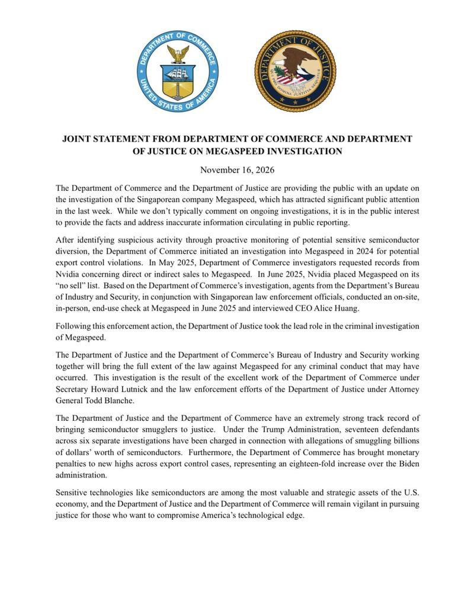
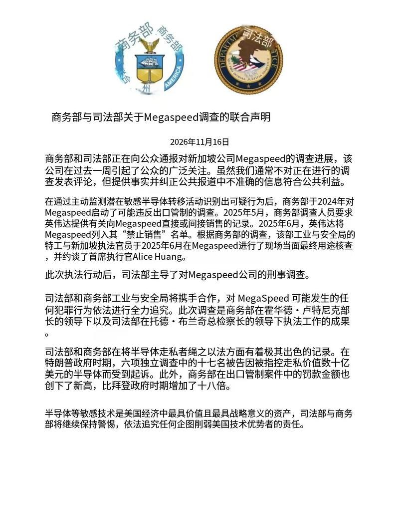

调研纪要 · 2026-11-17 新闻日报
星球 ID: 28855458518111 | 共 283 条帖子 | 精华 69 条
| 查看研究积累
强制同步到研究积累
全部 电子 计算机 其他 电力设备 机械设备 传媒 非银金融 汽车 社会服务 医药生物 银行 宏观策略 食品饮料 家用电器 轻工制造 基础化工 有色金属 房地产 国防军工 农林牧渔 通信 煤炭 环保 交通运输 商贸零售 建筑装饰 公用事业 钢铁 纺织服饰
书签
CNBC：英伟达警告芯片买家，与中国 AI 准入相关的法律风险
CNBC：英伟达警告芯片买家，与中国 AI 准入相关的法律风险
英伟达成立董事会委员会，负责监督国家安全与出口管制事宜
英伟达成立董事会委员会，负责监督国家安全与出口管制事宜
🧲英伟达设立国家安全与全球贸易合规监督委员会，是美丽国的"伟大胜利”，是效率优先让位政治正确的“典范”。
🧲英伟达设立国家安全与全球贸易合规监督委员会，是美丽国的"伟大胜利”，是效率优先让位政治正确的“典范”。
#看好国产/一鼓作气：FAB+GKJ＆HW
最优解FAB：中芯+华虹；（美国收紧先进代工+市场反馈台积电涨价10-15%）
最强矛GKJ：超纯+茂莱+美利信等；（ASML供给紧张+产业进展积极）
最反转HW：伟测、杰华特等; (HW的能力和量有缓解和向上)
————————————
🟥🟦By SHZ
【兴证医药】《关于全面推行疫苗处方工作的指导意见》整理
【兴证医药】《关于全面推行疫苗处方工作的指导意见》整理
近日，国家疾控局、国家卫健委、国家中医药局联合发布《关于全面推行疫苗处方工作的指导意见》。重点内容整理如下：
[太阳]总体要求：以《
疾病预防控制“十五五”规划 ↗ 》为引领，坚持预防为主、医防融合、规范安全、便民高效的原则，进一步发挥二级及以上医疗机构、基层医疗卫生机构在儿童、老年人、慢性疾病患者等重点人群疫苗接种中的推动作用，构建“诊疗—评估—处方—宣教—接种”服务模式。“十五五”期间，逐步实现疫苗处方在二级及以上医疗机构、基层医疗卫生机构的全覆盖，提高全人群、全生命周期疫苗接种覆盖水平。
[太阳]实施机构范围：二级及以上医疗机构（包括综合医院、中医医院、妇产及儿童医院等）、基层医疗卫生机构（包括社区卫生服务中心、乡镇卫生院等）、妇幼保健机构，以及专科疾病防治院（包括传染病医院、慢性病防治中心/所等）。
[太阳]处方主体：实施机构的重点科室，包括全科医疗科、预防保健科、儿科、儿童保健科、呼吸内科、老年医学科、妇科、产科、感染科、体检中心/门诊等科室的临床、公共卫生、中医类别执业医师，可开具疫苗处方。边远地区医疗卫生机构执业助理医师、取得《
乡村医生证书 ↗ 》的乡村医生，也可开具疫苗处方。
[太阳]疫苗目录：根据疫苗相应使用范围，为成人特别是慢性疾病患者、老年人、感染高风险人群开具流感疫苗、肺炎球菌疫苗、带状疱疹疫苗、人乳头瘤病毒（HPV）疫苗、乙肝疫苗等处方，为儿童和青少年开具流感疫苗、b型流感嗜血杆菌疫苗、肺炎球菌疫苗、水痘疫苗、HPV疫苗、轮状病毒疫苗等处方。各地可结合实际细化目标人群，动态调整推荐疫苗品种。
[太阳]接种服务：医疗卫生机构要加强内设接种门诊的规范化建设。尚无内设接种门诊的医疗卫生机构，要依托医联体、医共体等与接种门诊建立绿色通道，或与周边接种单位合作，做好处方开具与疫苗接种的衔接。
[玫瑰]相关上市公司：智飞生物、百克生物、万泰生物、康泰生物、沃森生物、华兰疫苗、欧林生物、康华生物等。
仅为公开资料整理，不涉及投资建议
资料来源：国家疾控局、新华社、央视网
联系人：东楠13917252436/黄翰漾/孙媛媛
《 》
《
广发海外电子通信 ↗ 》
☄️存储：下调NAND价格预测
👉据TrendForce最新跟踪，受消费端需求疲软及中国eSSD采购动能放缓拖累，NAND需求表现弱于预期。我们进一步下调明年NAND合约价预期，预计2027年Q1-Q4价格环比为0%/-3%/-8%/-12%。
☀️下调NAND价格预测：我们将2027年Q1-Q4 NAND合约价环比预期从+6%/+3%/0%/0%下调至0%/-3%/-8%/-12%。消费电子需求持续疲软，预计2027年智能手机与PC出货量均将出现两位数下滑。与此同时，国内GPU与HBM供应瓶颈制约了服务器部署节奏，削弱了配套eSSD的采购需求，抵消了北美云厂商9月以来的加单效应。上述多重逆风共同缓解了此前的供应紧张局面，对NAND价格形成下行压力。
☀️2027年Q2或迎供过于求：我们目前预计2026/27/28年NAND bit需求增速分别为26%/20%/24%，其中2027年需求下修47.8EB（占总需求的3.2%），主要反映消费端双位数需求下滑以及中国eSSD采购放缓。供给端方面，随着中国厂商产能持续扩张以及QLC产品占比提升，我们预计2026/27/28年NAND bit供给增速分别为21%/28%/30%，供需格局将迎来反转，预计2026/27/28年NAND供需缺口分别为-5%/+3%/+7%，2027年Q2起或正式进入价格下行通道。
☀️2028年情景分析：展望2028年，我们预计NAND市场将继续分化，消费市场复苏节奏及中国CSP的eSSD需求仍是核心变量，供给则取决于海外与中国厂商的排产策略。我们对2028年NAND价格设定悲观/中性/乐观三种情景，分别为$0.08/0.15/0.20/GB，对应AI前价格，LTA底部价格，乐观需求价格。作为纯NAND厂商，闪迪盈利波动最为剧烈，2028年三种情景下EPS预计分别为34/126/193美元。相比之下，美光与海力士受影响更小：美光预计为190/205/215美元，海力士预计为48/52/55美元。
☀️投资建议：我们对纯NAND标的仍然保持谨慎，如闪迪（SNDK US）、铠侠（285A JP）、群联（8299 TT）等。DRAM/HBM厂商有望相对跑赢，如美光（MU US）、海力士（SKHY US）及三星电子（005930 KS）。
【DW电子】强Call昇腾带头国产算力反攻！
【DW电子】强Call昇腾带头国产算力反攻！
⭕外围环境：美国封锁从芯片卡到海外算力租赁，倒逼国内模型训推需求转向国产算力；内部条件：先进制程、HBM、超节点供应链底座已成，国产芯模协同也已展现出成效；海外变量： Semi analysis下修海外算力芯片出货预期，有望缓解全球关键物料紧张程度，助力国产配套。多维度分析结论指向后续科技主线国产算力。
⭕昇腾接棒NV推进一年一迭代范式，26年950DT/PR训推双线推进，27年960携全球首个NPO超节点落地，28&29年，970 全面跃升训练与推理，980 沿 "韬定律" 逐代翻倍。看好国产算力总舵主，外围大势剧变，更需紧盯舵主人事变化及其背后的战略布局。
🔥强call昇腾链：
📈芯碁微装：昇腾GPU CoWoS L封装LDI设备独供。卡位先进封装高增速赛道的稀缺标的，明年仅20倍！极度低估！
📈杰华特：昇腾GPU DrMos芯片一供。q4开始上量，明年产品结构调整叠加模拟涨价，超高业绩弹性标的！
📈华丰科技：昇腾超节点224G连接器，配套6.4T NPO Socket在研。
📈兴森科技：昇腾GPU需求有望带动明年ABF业务扭亏。
🔺国产GPU：寒武纪、海光信息，燧原科技、摩尔线程、沐曦股份、天数
🔺超节点：盛科通信、华勤技术
🔺晶圆制造：中芯国际、华虹宏力
20261117盘后消息汇总
20261117盘后消息汇总
科技
1.《
数字广东建设“十五五”规划 ↗ 》：加快打造新的万亿级数字产业集群 壮大集成电路制造、先进封测等产业
2.存储
①三星电子与苹果即将签署DRAM半导体长期供货协议
②下调NAND价格预测，预计27年Q1-Q4价格环比0%/-3%/-8%/-12%
3.英伟达董事会成立国家安全与出口管制监督委员会
4.特朗普政府推进中国光收发器进口限制（跟之前写FCC三篇报道的是同一个人）
其他
1.花旗中国消费峰会，投资者参与热度达三年最高，人数、参与热情均为近三年峰值
花旗刚开完的中国消费峰会，首席反馈如下：
花旗刚开完的中国消费峰会，首席反馈如下：
1）投资者参与热度达三年最高，人数、参与热情均为近三年峰值，该热度过去5-7年未见。需求热度最高的10家公司为安踏、鸣鸣很忙、美的、亚朵、蒙牛、农夫山泉、泡泡玛特、老铺、百胜中国、东鹏饮料，无法满足全部需求。
2）外资参与度较高，现场出现大量英文提问，全球长线机构偏好流动性好、估值便宜、现金回报表现优异的标的，代表为百胜中国、美的、茅台。风险偏好更高的内资投资者，重点关注资质非顶尖但存在明确业务反转迹象的标的，代表为东鹏饮料、华润啤酒、李宁、海底捞。
3）消费子行业标的推荐排序如下：
食品饮料：蒙牛>农夫山泉>东鹏饮料>统一
调味品：颐海＞海天
家电：美的>海尔>格力
体育用品：安踏>李宁>滔搏
餐饮：百胜中国>海底捞
啤酒：华润啤酒>百威亚太>青岛啤酒
白酒：茅台>汾酒>泸州老窖>五粮液>洋河
酒店：亚朵＞华住
可选：TCL电子、毛戈平、周大福
【国金金属】锂矿：需求预期逐渐回暖，重视底部布局机会！20261117
【国金金属】锂矿：需求预期逐渐回暖，重视底部布局机会！20261117
今日锂价反弹5%，主因市场传龙头Q4出货超预期，并对27Q1排产有所上修。#让市场对之前悲观的需求预期有所改善。
【三季报后需求预期有所改善】
10月份三季报后，下游电芯厂&集成商给出了27年乐观的需求增速指引，各企业依旧对27年的增长充满信心。能看到阳光、海博等企业11月份都走出了40-50%的期间涨幅。
同时10月份以来，国内一些省份在储能端也在出台一些积极的政策，将系统运行费纳入分时电价浮动，对储能投资方来说都是积极的政策信号。让市场对之前相对最悲观的国内储能需求领域乐观了一些。
【库存下降是不争的事实】
借用赣锋锂业何佳言-何总的发言①“26年这一轮上涨&下跌周期，整个产业链的隐形库存都被逼走了”#当前市场的真实库存是近几年的历史最低位。
②任何一个环节，没有出现投机性囤库的现象，上涨&下跌过程都是在“去库”。企业都担心锂价的波动带来的减值风险，所以没有人敢做投机性的囤库。
当前行业到底有多少库存，对每个企业来说，都是机密，但这个绝对数可能在10-15万吨之间。对于一个已经超过200万吨年需求量，未来几年内还能展望两位数复合增速的品种，#相对库存天数一定是非常低的状态。这就给后续的价格上涨提供了弹性。
如果后续在当前的预期下，需求继续上修，又或者是供给端出现黑天鹅（在8-9万的价格区间内，是很有可能出现的），价格上涨的空间是很大的。
【价格已临近成本曲线右侧】
随着需求预期的调整，锂价在年内也坐了一轮过山车。#当前8-9万的成本区间，已经是进入了非洲矿&部分澳矿的盈亏平衡线了。
回顾前两轮周期底部：20年最低4万，25年最低6万。随着需求的快速增长（24年100万吨VS26年200万吨），边际成本抬升是必然的。未来锂电需求依旧有望维持不错的增速，那有待开发的项目成本只会越来越高，#周期底部的价格也有望逐步抬升。
【26年锂价并未刺激Capex提高】
我们收集整理了全球主要锂矿企业的Capex数据发现，25年底以来的锂价上涨，并未在26H1刺激出企业做Capex的意愿。
🔥26H1全球锂资源企业的Capex同比继续下降，维持了24年以来的下降趋势。
这就带来一个挑战：如何满足未来持续增长的需求？是不是还需要一轮持续时间更长、价格高度更高的价格周期，才能够刺激出企业做Capex的决心？
还有一个现象：虽然说全球不缺锂资源，但容易开发&成本低的项目都已经名花有主。当前还在市场上交易的项目，大多都是以前的老项目了，多多少少都有难以解决的问题。而勘探又没发现新的大体量项目。#逆全球化下、企业想做资本开支也下不去手。
【锂矿股调整充分，值得配置！】
锂矿股从5月份以来持续下跌，很多个股都已经接近25Q2的低点，都已经进入到配置时间！板块性的机会！欢迎细聊各家公司的基本面&变化情况。
[礼物]若您需要个股的估值表，欢迎联系我们[呲牙]国金金属：金云涛/吴晋恺/王钦扬/黄泽浩/覃雨阳/邱铄凯/宁柯
【通信策略｜华为昇腾950DT性能突破，国产超节点产业链迎来价值重估！】
【通信策略｜华为昇腾950DT性能突破，国产超节点产业链迎来价值重估！】
核心观点： 中国移动测试材料显示，华为昇腾950DT推理性能达到910C的3-5倍，特定测试场景下，64卡超节点Token产能测算相当于约400卡910B服务器。国产算力正加速迈向系统级竞争，重点关注智算集成、高速互联及液冷散热三大方向！
产业链重点覆盖：
① 华胜天成： 国产AI算力基础设施＋智算中心建设＋集成运维，具备国产算力项目交付及运营服务能力，关注运营商智算投zi扩张带来的订单机会。
② 真视通： AIDC智算中心＋AI服务器＋大模型一体机，叠加液冷技术布局，具备国产算力集群建设与应用部署的多重题材弹性。
③ 华丰科技： 112G高速背板连接器＋OSFP/QDD光笼子＋服务器互连，受益于昇腾超节点Scale Up高速互联需求提升。
④ 意华谷份： 800G高速光电连接器＋QSFP-DD/OSFP产品布局，叠加1.6T及CPO前沿技术研发，关注算力网络带宽升级。
⑤ 创益通： AI服务器高速连接器＋高速铜缆＋DDR5存储互连，受益于服务器内部高速信号传输与连接密度提升。
⑥ 高澜谷份： 冷板式液冷＋数据中心热管理，随着国产超节点功率密度提升，液冷配套需求有望持续释放。
我们认为， 昇腾950DT测试结果强化国产算力系统级竞争预期。随着中国移动等运营商推进国产智算集群建设，服务器集成、高速连接及液冷环节有望迎来产业催化。重点跟踪订单兑现与商业化落地进度。
【广发非银】20261117新闻及公告整理
【广发非银】20261117新闻及公告整理
一、本日行情：
今日上证指数报3584.5794点，跌0.5%；今日深证成指报10638.5242点，跌0.49%；今日创业板指报2292.2037点，跌1.2%。券商指数涨0.09%；保险指数平0%。交易所统计今日股票成交金额为14576.95亿元；SW证券Ⅱ行业今日成交额为159.21587亿元，占1.09%。上一交易日两融余额22650.13亿元；中债估值中心测算的十年期国债到期收益率为1.63%。
二、公司公告：
【中油资本】披露2026年第二次临时股东会法律意见书。股东会以99.9131%的赞成票选举滕起堤为第十一届董事会非独立董事。金杜律师事务所认为，会议召集、召开及表决程序符合相关规定，表决结果合法有效。
【广发证券】“25广发C7”将于11月19日支付年度利息，债权登记日为11月18日。该债券期限3年，当前余额29.5亿元，票面利率2.00%。
【中银证券】披露2026年面向专业投资者公开发行短期公司债券的股东会决议文件（注册稿）。文件载明，公司2024年第三次临时股东大会曾审议通过公开发行不超过160亿元公司债券的议案。
【中泰证券】拟于12月2日召开2026年第二次临时股东会，审议聘任天职国际为2026年度审计机构、预计2027年度对外担保额度、董事薪酬及绩效考核等四项议案。
【红塔证券】完成2026年度第八期短期融资券发行，实际发行规模5亿元，期限365天，票面利率1.48%，兑付日为2027年11月16日。
三、重要新闻：
【证监会：中国证监会国际顾问委员第23次会议召开。与会代表围绕推动构建更加包容、更具活力的资本市场生态，有效应对各类冲击、增强资本市场韧性，践行全球治理倡议，深化金融治理改革与合作等议题进行了广泛深入的交流与研讨。】
【沪深交易所：公布境外投资者持股信息，11月16日共1只股票境外投资者持有比例超24%。】
【上交所：于11月17日召开2026年第23次审议会议，审议东吴证券发行股份及支付现金购买东海证券83.68%股权的申请。】
美国电动车销量10月同比转正
美国电动车销量10月同比转正
#Marklines数据10月美国电动车销量10.3万辆、同环比+9%/-6%，其中纯电8.8万辆，占比85%；乘用车销133万辆，同环比+5%/+0.3%。1-10月美国电动车累计销量95万辆、同比-30%，电动化率7.1%。美国电动车补贴取消影响边际改善，10月销量同比转正；当前电动化率低，远期空间大。#我们预计全年美国销量119万辆、同比-27%。
家电是本轮防御绝对主线，继续看好两条赛道投资机会
家电是本轮防御绝对主线，继续看好两条赛道投资机会
1️⃣、消费电子类出海
#消费级存储价格已经回落+提价+出海： NAND 512Gb 晶圆现货报 14.3 美元，周环比 -12%、季度环比 -32%，自 10 月中下旬累计回落约 20%；且终端同步提价，大疆宣布 11 月 18 日起上调手持云台相机、拇指相机建议零售价，此前国内已有多家一线品牌陆续调价。
#极米科技：25Q3起海外产品调整（激光+奈飞适配），同步解决海外渠道整合。26Q1-3海外收入同比55%/100%/125%增长，高端投影目前众筹持续超预期。保守测算，预计27年4.5e利润，当前对应约17x。
#石头科技：存储影响可能达5pct。26Q2起费率投放效率显著提升，格局开始改善，新品类延续减亏。27年保守24e+利润，对应15x估值。（TIPS：科创50ETF如果调整会是最好的买入机会）
#安克创新：受益于存储和电芯跌价。随着渠道调整影响消退以及储能新品上市，大促旺季收入有望恢复25%+，中长期看收入预计保持20%增长CAGR，新品UV/母婴/助听器有望打开新市场空间，明年40e利润对应16x；
#绿联科技 ：(存储逻辑最正，公司此前持续提价保持边际贡献为正，导致Q3收入大幅降速，后续存储降价后有望迎来量价双击。明年主业14e利润给20x估值，NAS保守给50e估值，当前对应30%空间)。
#其他受益标的：海信视像/TCL电子/影石创新/科沃斯/萤石网络
2️⃣、铜价下跌，有望带来白电业绩修复
历史研究看，厄尔尼诺衰减年（2027）温度更高，#空调出口排产数据11-12月连续保持双位数增长已开始显现，近期伴随#铜价破位，压制空调利润的最大负面因素减弱。
#海信家电，26Q3铜价影响5-6pcts毛利率，无套保且目前铜库存锁价周期短。预计分红比例会持续提升。
#格力电器，我们预计26年每股股利3元保持不变，对应股息率7.4%，考虑回购注销股东回报更高。
#美的集团，27年收入预期正增长，取消冷年开盘后，利润有望稳住。当前渠道库存较低（约1.5个月），未来三年（26-28）现金分红+回购注销比例仍维持100%
#其余弹性标的：海尔智家/长虹美菱/奥克斯
📡 6G试点启动：AI原生网络开启射频产业新周期
📡 6G试点启动：AI原生网络开启射频产业新周期
工信部同意北京等8省市开展6G相关试点，标志着国内6G产业逐步从技术研究走向试验验证。
1、6G是AI原生网络
6G不只是通信速率升级，而是AI原生网络，融合通信、感知、计算和人工智能。AI手机、AI眼镜、机器人等端侧设备将产生更高频率的数据交互，对低时延、大上行带宽和网络连接能力提出更高要求。
2、射频芯片迎来增量
相比5G，6G将向更多频段、更高频率、多天线及通感一体化发展，带动PA、LNA、滤波器、射频开关等器件升级。初步情景测算，6G中高端手机射频前端价值量较5G有望提升60%，具体取决于最终频谱和终端架构。
3、基站侧升级空间更大
6G有望推动超大规模MIMO、更多射频收发通道及高频段覆盖，增加基站PA、滤波器、天线和射频前端需求，同时带动小基站、通感一体化及边缘计算建设。
重点关注：
• 射频芯片：卓胜微、慧智微
• 滤波器：灿勤科技、武汉凡谷
• 基站设备：信科移动、中兴通讯、通宇通讯
核心逻辑：AI端侧创造新的通信需求，6G提供底层网络基础设施，射频芯片和基站设备有望迎来新一价值量提升。
德业股份：承诺三年分红不低于70%，兼具高成长+高股息，继续重点推荐！
德业股份：承诺三年分红不低于70%，兼具高成长+高股息，继续重点推荐！
事件：公司公告未来三年股东分红回报规划，年度现金分红不低于当年净利润的70%。2024、2025年分红比例分别为82.89%、83.33%，2026年中期已派现20.37亿元，比例74.5%。
1、本次承诺分红比例下限70%，较过去两年平均水平低10pct以上，我们认为#70%属于保守预期，最终执行有望仍落在80%以上。公司轻资产、高盈利，2026年前三季度净利率24.9%、ROE 36.8%，无大额资本开支需求，分红能力不构成约束。按70%分红、2027年77亿元利润测算，对应分红53.9亿元，对应当前953亿元市值，#股息率为5.7%；若按80%的历史执行比例，则可达6.5%，#已高于长江电力等典型红利资产，接近十年期国债收益率的3倍。把股东回报写进三年规划，本身也是公司对业绩兑现的信心表达。
2、基本面来看，公司近月排产强势，#单月储能逆变器排产维持20万台以上，趋势显著优于同行，Q4整体收入预计延续环增。展望2027年，#公司目标收入400亿（同比+60%），其中工商储有望翻倍，欧洲户储预计有40%-50%的增速，逆变器毛利率长期稳定。凭借产品设计、先发渠道、高效组织运营等优势，#我们认为公司中期净利率有望稳定在20%以上。
3、我们预计公司2026-2027年净利润为59亿元和77亿元，对应PE 16倍、12倍。公司业绩强势，报表质量佳，兼具高成长+高股息，继续重点推荐！
【东吴电新】继续强推！德业股份：保障最低分红率70%、27年股息率近6%、27年出货有望持续高增
【东吴电新】继续强推！德业股份：保障最低分红率70%、27年股息率近6%、27年出货有望持续高增
#事件 公司发布《
未来三年股东分红回报规划 ↗ 》，规定未来3年（26~28年）每年度利润分配按不低于当年实现净利润的70%进行现金分红。
#保障未来3年分红率70%底线、27年股息率近6% 按照当前26~27年归母净利润预测58.9、78.6亿元计算，按照70%分红率底线，当前股息率高达4.3%、5.8%，远超行业平均水平；若分红率达80%，股息率达4.9%、6.6%。截至26Q3末，公司在手货币资金61.5亿、交易性金融资产49.3亿，现金流情况充足确保分红规模。
#四季度排产高企、27年出货增速有望超50% 公司10、11月储能排产仍保持20万台/月创历史新高，乌克兰需求起量带动Q4出货环比仍有一定幅度提升。展望27年，海外工商储仍将保持50%+增长，英国/荷兰等户储市场有望起量，天然气价格继续保持高位，新兴市场继续高增，叠加电池包配套率提升，公司27年出货有望实现50%以上高增。盈利能力方面，26Q3公司逆变器、电池包毛利率保持环比持平，超市场预期，我们判断伴随公司工商储占比上量、大电芯等降本手段推进，27年仍有望维持毛利率的基本稳定，竞争优势显著。
[爱心]盈利预测与投资建议：我们预计公司26~28年归母净利润分别为58.9/78.6/98.5亿元，同比+85.7%/33.5%/25.4%，对应PE分别为16.2/12.1/9.7x，给予20x估值，对应目标价123元/股，维持“买入”评级。
风险提示：需求不及预期，竞争加剧，海外政策风险等。
🧧【中泰电新】#德业股份：未来三年分红率不低于70%
🧧【中泰电新】#德业股份：未来三年分红率不低于70%
#事件：晚间，公司发布公告，未来三年（2026年-2028年）内，每年度的利润分配按不低于当年实现净利润的70%进行现金分红。#按照27年80-100亿业绩、分红率70%测算，公司股息率可达5.9%-7.3%
#行业景气度持续强化，多市场、多产品、多场景发力业绩有望超预期
#从量上看，Q4公司保持单月20万台+高水平排产，季度环比增幅30%+；27年部分地区补贴政策更加清晰（英国温暖家园计划等），高油价、高电价、缺电等持续催生需求（东南亚、中东非等），低渗透地区构成增量（印度等），公司加快全球多渠道建设，且加快离网、工商业等场景布局，27年收入目标达400-450亿，预期增速60-80%
#从盈利上看，逆变器领域，公司通过持续产品迭代、技术降本、产品结构优化等维持逆变器高水平盈利；电池包领域，碳酸锂成本下滑，且通过一定程度的向下传导、采用大电芯等手段对冲出口退税调整压力，电池包盈利预期维稳或修复
#投资建议：公司具备高股息、高成长性。27年户储需求保持较好增长，叠加离网、工商业场景持续爆发，用户侧储能需求高增速。公司作为全球龙头，全球网络布局均衡，且在产品力、成本等方面具备护城河优势，预期充分受益，持续重点推荐
风险提示：需求不及预期、竞争加剧等
☎️【中泰电新 曾彪团队】曾彪/吴鹏17701800142/郭琳15962175627
[红包]【申万房地产】贝壳-W2026Q3业绩点评：业绩强劲再超预期，运营效益持续优化，维持买入评级（袁豪/陈鹏）
[红包]【申万房地产】贝壳-W2026Q3业绩点评：业绩强劲再超预期，运营效益持续优化，维持买入评级（袁豪/陈鹏）
[玫瑰]1、26Q3 GTV同比+4.5%，归母净利润同比+193%、经调归母净利润同比+102%，大超预期。
贝壳发布2026年三季度财务业绩，2026Q3公司总交易额GTV 7,697亿元，同比+4.5%；其中存量房交易、新房交易分别为5209、2068亿元，同比分别+3.0%、+5.3%。公司26Q3实现净收入209.9亿元，同比-8.9%；归母净利润21.9亿元，同比+192.8%；经调后归母净利润26.0亿元，同比+102.2%。从累计数据看，公司26Q1-3实现净收入644亿元，同比-11%；经调后归母净利润74亿元，同比+65%。公司26Q3单季度毛利率27.7%，同比+6.3pct；销售+管理+研发费用率合计16.0%，同比-2.4pct；归母净利率10.5%，同比+7.2pct；经调后归母净利率12.4%，同比+6.8pct。截至26Q3末，公司现金、现金等价物、受限资金和短期投资合计640亿元，同比+14.9%。
[玫瑰]2、26Q3一二手房GTV均出现增长，利润率均有提升。
2026Q3公司存量房交易额5209亿元，同比+3.0%；其中链家、贝联GTV占比34%、66%；二手房收入61.0亿元，同比+1.8%；贡献利润25.9亿元，同比+11.1%；贡献利润率42.5%，同比+3.6pct；链家、贝联货币化率分别为2.61%、0.43%，同环比均有小幅提升；GTV增速较收入更高源于贝联GTV增幅更快，而这部分更多以净额法计算。新房方面，26Q3新房交易额2068亿元，同比+5.3%；其中链家、贝联GTV占比19%、81%；新房业务收入68.3亿元，同比+2.9%；贡献利润19.1亿元，同比+19.2%；贡献利润率27.9%，同比+3.8pct；货币化率达3.3%，同环比小幅回落。26Q3公司活跃门店数量5.75万家，同比-2%；活跃经纪人45.1万名，同比-4%。
[玫瑰]3、26Q3家装家居、房屋租赁贡献利润率同比均+8pct，运营效率提升。
26Q3公司家装家居实现净收入33.1亿元，同比-22.9%；贡献利润13.3亿元，同比-3.2%；贡献利润率40.2%，同比+8.2pct，源于供应链能力增强推动材料成本降低。租赁方面，公司房屋租赁业务实现净收入42.7亿元，同比-25.4%；贡献利润7.1亿元，同比+42.1%；贡献利润率16.6%，同比+7.9pct，源于省心租业务下按净额确认收入的服务产品占比提升，运营效率提升。
[玫瑰]投资分析意见：上调26-28年归母净利润预测值分别为72、80、92亿元，对应26/27年PE分别为19、17倍；上调26-28年Non-GAAP净利润预测值分别为92、99、109亿元，对应26/27年PE（Non-GAAP业绩）分别为15、14倍，维持“买入”评级。
【华润啤酒】近期交流更新：基本面经营平稳，市场预期亦处于低位，关注资金边际流入带来的催化
【华润啤酒】近期交流更新：基本面经营平稳，市场预期亦处于低位，关注资金边际流入带来的催化
[玫瑰]26年全年销量或有同比小幅下降，结构升级持续，喜力维持20%以上销量增速。1-10月公司销量同比有低单位数下滑，销量压力主要集中在中低档，结构升级趋势仍在。从节奏看，我们估计3Q销量同比有高单位数下降，主因3Q缺乏假日拉动、天气不利于消费及宏观需求偏弱，叠加四川8月更换管理团队、主动释放过往调整压力（目前四川区域调整进度约一半，最早四川区域或在春节有所修复）。分产品看，喜力前十个月增速保持在20%以上，红爵、老雪亦维持高速两位数增长，纯生、勇闯天涯superX及勇闯等增速较上半年放缓，其中纯生拖累主要来自四川，但1-10月次高档及以上仍维持两位数增长。
[玫瑰]26年铝价上行导致毛利率承压，利润端压力将大于收入端。2-3Q铝价处于高位，下半年销量偏弱叠加材料成本压力致毛利率承压，但费用端会继续节省，2026年已进入淡季、不会进行大规模提价，因此全年我们认为利润端压力将大于收入端。白酒板块因商务宴请复苏不明显延续承压；2025年已计提28.77亿元减值，2026年是否续提及白酒相关无形资产如何处理尚未定案，但偏向于避免后续再多次减值的情况。
[玫瑰]展望明年经营节奏看，量价预期中性，成本压力26年充分反映情况下，提价主要关注行业提价节奏。2027年公司争取量价齐升，但盈利改善仍取决于宏观及需求修复。销量端争取小幅增长，次高档及以上维持较快增长，其中喜力保持两位数，8—10元价格带新品贡献增量，该档占比约26%，目标提升至30%-35%。2026年已较充分反映原材料压力，2027年铝价或高位徘徊、大麦压力相对较小，即使不提价毛利率也不至于大幅承压，而提价则需要观望竞争对手的情况，费用率争取继续节省。
[玫瑰]我们预计公司26/27年收入373.0/376.7亿元，同比-1.8%/+1.0%；核心净利润47.5/48.45亿元，对应核心P/E 12.7/12.5倍。股息率方面，潜在的白酒商誉减值不影响公司分红水平，2026年分红率目标55%-60%（2025年同口径为53%）；因25年派系中含了约10亿元卖地收益，因此26年DPS口径同比或有小幅下降；按照55%的分红比率测算，当前股息率约4.3%，当前公司基本面和市场预期均处于低位，建议关注低位配置价值。
日盈电子调研要点20261117
日盈电子调研要点20261117
🧧#电子皮肤
1、目前公司电子皮肤是压阻式为主，结构和T类似，中间的材料可以换，做开发高密度、大面积电子皮肤原型方案开发
2、客户：国内客户有字节、智元、小鹏、上纬启元；海外客户有Figure、Meta、Openai、Apple
3、北美头部客户：结构件/功能件已经多轮供应，持续推进电子皮肤对接。结构件，外观覆盖件的结构件，公司和北美客户去年开始多轮样品供应，一直在迭代，目前公司通过北美本地企业Loomia合作，对接北美头部企业
4、目前有万双手手套的订单，纯触觉方案，单台手套价值量是千元级别
🧧#Colorform
1、目前汽车内饰条主要用热塑料进行塑料喷涂为组合，用Colorform可以模拟软塑料和皮革的效果，做造型设计，并且还大幅减少70%的生产工序，成本更低，更环保
2、目前Color主要用在外饰件，ASP 1000，公司正在对接北美头部客户，同时已在大众放量。后续内饰件也会用Colorform，ASP 1500，内饰件公司的产品也正在对接北美客户
3、Colorform同时也可以用在机器人的外壳上，目前已在对接智元启元、小鹏、奇瑞
持续首推苏州银行：迈向资产万亿里程碑，看好估值向1倍PB突破
持续首推苏州银行：迈向资产万亿里程碑，看好估值向1倍PB突破
📈 7月以来银行中涨幅第一，但当前估值仅0.8倍PB，#对比板块尚未充分凸显溢价且动态股息率高达4.3%，配置性价比依然突出。
📈 稀缺的“有量有价”：“苏州大市+省内异地”，资产突破万亿有抓手，区域经济活跃度也支撑“更安全”的高质量扩表。提早消化定价下行，息差边际压力小于同业。#基准情况下27年利润增速将继续维持8%-10%中枢，稳居行业头部。
📈 聊苏州银行找申万郑庆明团队，全市场独家推荐最早、跟踪最紧密。#5年5篇深度、今年旗帜鲜明首推
1、向万亿征程进位，兼具成长与价值的优秀城商行（202605深度）mp://d6tT2J9zSm3Ft1I
2、成长新动能，扬帆新三年（202402深度）mp://FcUKYiyZ4kIuUAo
3、“筑梦万亿”正启航，聚焦ROE回升之势（202309深度）mp://h3r9r7qsXBAqF4z
4、估值修复有催化，ROE回升有支撑（202108深度）mp://5iFNC0jvkpBTnic
5、与区域相伴，与成长共舞，兼具外在美与内在美（202106深度）mp://Y5kVv89DHeiVCLC
复星医药：AR1001 III期单药治疗人群达主要终点，等待是否行权
复星医药：AR1001 III期单药治疗人群达主要终点，等待是否行权
[太阳]【事件】
11月16日，AriBio在CTAD 2026首次公布口服PDE5抑制剂AR1001治疗早期AD的全球III期POLARIS-AD研究顶线数据。复星医药产业2026年5月与AriBio签订《
独家选择权协议 ↗ 》，享有AR1001于美欧日等全球新增许可区域及AD全谱系领域的独家开发/注册/生产/商业化选择权，截至公告日尚未行权，将在90天窗口期内基于数据分析决定。此前公司已获中国境内及港澳+东南亚10国权益。
#POLARIS-AD（全球III期，1535例早期AD，AR1001 30mg QD vs 安慰剂，治疗52周）
✔【有效性】
——预设双主要分析人群（与FDA/EMA协商设计，任一达标即达成主要疗效目标）：单药治疗人群（n=604，基线未用AChEI/美金刚）CDR-SB较安慰剂少恶化0.44分、疾病进展延缓31%，p=0.0266达到统计学显著性；总体人群（n=1535）少恶化0.11分（约延缓7%疾病进展），组间差异未达统计学显著性。
——次要终点呈一致趋势：ADAS-Cog13单药人群改善1.16分（p=0.0798），MMSE差异0.7分（名义p=0.0232）。
✔【安全性】
——总体耐受性良好：AE发生率69.0% vs 安慰剂66.4%，SAE 10.0% vs 9.8%。
[太阳]【观点】
✔ AD口服疗法稀缺性凸显：AR1001作为口服PDE5抑制剂在单药治疗人群（无标准治疗背景）验证疗效，若最终获批将填补"口服+早线单药"的差异化空白。
✔ 对复星医药：中国+港澳+东南亚10国权益已锁定，等待90天窗口期的数据深评是否行权。
风险提示：总体人群未达统计学显著性，注册路径存在不确定性；行权与否及后续监管审批均需跟踪
🔥京东工业26Q3业绩速览｜中信计算机&制造&轻工
🔥京东工业26Q3业绩速览｜中信计算机&制造&轻工
🎈【营收&利润】
--2026Q3：1）营收80.33亿元，同比+36.2%；2）Non-IFRS净利润3.98亿元，同比+62.3%；3）Non-IFRS经营利润4.39亿元，同比+93.9%。
--2026年前三季度：1）营收210.95亿元，同比+30.6%；2）Non-IFRS净利润11.49亿元，同比+49.4%；3）Non-IFRS经营利润10.88亿元，同比+63.0%。
🎈【经营进展】
--AI业务：
1）交易流程Agent：Q3公司在商品标准化、寻源、议价、履约及结算等环节部署60个AI智能体。AI带来的增量GMV占重点企业客户GMV的比例由上半年的6.5%升至Q3的12.5%，核心岗位人效提升33.8%。
2）AI工业透视应用：公司基于工业大模型JoyIndustrial 2.0推出AI辅助设计应用“工业透视”。用户输入自然语言指令或参考图像，即可生成可加工零部件的三维模型，并自动拆解物料清单，关键场景设计效率提升约30%。
--机器人零部件：8月世界机器人大会期间，公司联合行业头部企业发起成立机器人零部件产业发展联盟，围绕实际工业场景共同制定下一代零部件性能规范，推动机器人厂商与零部件供应商协同采购、控制成本。
------------------------
欢迎联系中信计算机&制造&轻工团队
京东26Q3业绩速览：收入恢复增长，利润略超预期
京东26Q3业绩速览：收入恢复增长，利润略超预期
#带电收入降幅收窄，#日百、广告收入增速回升。26Q3京东集团收入3,096亿元/YoY+3.5%（vs一致预期3,091亿元），基本符合预期。分业务看，1）产品收入2,332亿元/+3.1%，其中带电收入1,277亿元/-0.7%，vs 26Q2 -11.8%，降幅明显收窄；日百收入1,055亿元/+8.1%，vs 26Q2 +5.6%，增长提速；2）广告佣金收入281亿元/+9.6%，vs 26Q2 +8.3%；3）物流及其他服务收入483亿元/+2.1%。
#毛利率提升，营销费用优化。26Q3公司综合毛利率18.1%/同比+1.2ppts；Non-GAAP履约费率7.6%/同比+0.3ppts，履约能力及人员投入持续增加；Non-GAAP营销费率4.9%/同比-2.0ppts、环比-0.8ppts，新业务推广投入优化；Non-GAAP研发费用率2.4%/同比+0.6ppts，主要系技术研发及人才投入增加；Non-GAAP管理费用率0.7%/同比-0.1ppts。
#新业务同比减亏带动盈利改善，净利润略超预期。26Q3公司Non-GAAP经营利润73.5亿元（vs 25Q3 2.1亿元）；Non-GAAP归母净利润83.3亿元/+43.7%（vs一致预期80.6亿元，高出3.3%），对应Non-GAAP净利率2.7%/同比+0.8ppts。零售业务利润保持增长，新业务亏损同比收窄，共同推动集团盈利修复。
⭐ 核心业务情况：
#零售：26Q3京东零售营收2,580亿元/+2.9%；营业利润150.7亿元/+1.6%；OPM 5.8%/同比-0.1ppts，收入恢复增长，利润率在去年较高基数下保持基本稳定。
#物流：26Q3京东物流营收640亿元/+16.1%；营业利润19.2亿元/+49.8%；OPM 3.0%/同比+0.7ppts，利润增速高于收入增速。
#新业务：26Q3新业务营收78亿元/-49.8%，受即时配送收入由新业务转至京东物流外部收入的口径调整影响；营业亏损96.4亿元（vs 25Q3亏损157.4亿元，vs 26Q2亏损98.5亿元），同比减亏60.9亿元。外卖及京喜推动新业务减亏，外卖运营效率提升、收入来源拓展，带动季度投入同比明显收窄。
【中信证券互联网】腾讯音乐（TME.N，1698.HK）26Q3业绩速览
【中信证券互联网】腾讯音乐（TME.N，1698.HK）26Q3业绩速览
💡收入端：26Q3公司营收89.41亿元（YoY+5.6%），收入构成：
--音乐相关服务：76.82亿元（YoY+10.2%），其中会员服务收入49.85亿元（YoY+9.2%），主要受益于喜马拉雅并表及SVIP会员规模持续扩张；非会员服务（营销及消费服务）收入26.97亿元（YoY+12.1%），主要得益于艺人周边商品销售及线下演出相关服务的强劲增长，尤其是与战略合作艺人汪苏泷的合作；
--社交娱乐及其他：12.59亿元（YoY-15.7%）。
💡成本费用：26Q3毛利率42.8%（YoY-0.7pct，QoQ-1.4pct）；销售/管理费用率分别为3.3%/13.8%（YoY+0.2pct/+1.4pct，QoQ+0.7pct/+1.9pct）。成本增长主要来自长音频内容、艺人周边商品及线下演出相关成本增加；费用增长主要受喜马拉雅并表及收购相关无形资产摊销影响。
💡利润端：26Q3公司归母净利润21.54亿元（同比持平）；Non-IFRS归母净利润24.50亿元（YoY+1.9%），Non-IFRS归母净利率27.4%（YoY-1.0pct）。
💡回购：本季度以约3.00亿美元回购3,470万份ADS，均价约8.6美元/ADS。今年累计回购7亿美元，占市值5%。
💡截至2026年9月30日，现金、现金等价物、定期存款和短期投资的合计余额为人民币514.9亿元（76.8亿美元）。
【招证国际AI互联网】腾讯音乐（TME US / 1698 HK）26年三季度业绩-收入不及预期、利润超预期：
【招证国际AI互联网】腾讯音乐（TME US / 1698 HK）26年三季度业绩-收入不及预期、利润超预期：
#核心指标：
-总收入同比增长5.6%至89.41亿元，2.2% miss；喜马拉雅并表、艺人周边与线下演出服务是主要增量。
-分业务收入增速分别为：音乐相关服务+10.2%（vs上季度11.0%），其中会员服务+9.2%（vs上季度8.1%），1%miss、营销及消费服务+12.1%（vs上季度16.3%），4%miss；社交娱乐及其他-15.7%（vs上季度-16.4%）。
-毛利润同比增长3.8%至38.23亿元，毛利率42.8%、同比-0.7pp。
-经营利润（IFRS）同比增长0.4%至27.20亿元，2.7% beat；经调整EBITDA同比增长2.7%至30.20亿元。
-非IFRS净利润（归母）同比增长1.9%至24.50亿元，3.9% beat。
#流动性：
-经营现金流：净流入52亿元，去年同期37亿元。
-净现金：现金及等价物、定期存款与短期投资合计514.9亿元（6月末442.2亿元）；有息负债217.7亿元，净现金约297.3亿元。9月发行10亿美元优先票据，分2031年、2036年到期各5亿美元。
-递延收入：53.24亿元，2025年末38.42亿元。
-股东回报：三季度回购3,470万ADS、耗资3亿美元，均价8.6美元/ADS。
#其他亮点：
-喜马拉雅并表推动音乐相关服务增长，长音频内容库与会员权益同步整合；上线超1万部动态漫，播放界面与AI助手升级。
-会员：SVIP付费用户与ARPPU继续增长、留存改善；薛凯琪入驻粉丝俱乐部。
-内容：续签HYBE并取得重点作品30天提前上线（含JISOO新单曲）；与乐华娱乐续约取得头部音乐IP并铺垫周边合作；为腾讯视频剧集定制原声。
-线下与IP：为GAI举办四场体育场演唱会、观演超12万人次；协同举办2026百事音乐节；支持袁娅维首个世界巡演（澳大利亚、加拿大、马来西亚、美国）并在格莱美博物馆演出。
-产品与微信生态：主APP情境化推荐与竖滑信息流提升人均使用时长；鸿蒙版改版推动用户增长，iPhone Duo早期适配获App Store推荐；JENNIE、宋雨琦、汪苏泷、张靓颖等艺人入驻微信视频号，带动日均视频播放提升。
callback在11月18日11:00。
腾讯音乐（1698.HK）26Q3财报要点：会员服务稳健，喜马拉雅并表摊薄利润率，股东回报丰厚
腾讯音乐（1698.HK）26Q3财报要点：会员服务稳健，喜马拉雅并表摊薄利润率，股东回报丰厚
#收入稳增、利润基本持平、毛利率与费用率双向承压
▶26Q3收入89.41亿元，yoy+5.6%、qoq+0.1%；归母净利润21.54亿元，yoy+0.05%；Non-IFRS归母净利润24.50亿元, yoy+1.9%；经调整EBITDA 30.20亿元，yoy+2.7%；归母净利率24.1%，yoy-1.3pct；毛利率42.8%，yoy-0.7pct；期间费用率17.1%，yoy+1.6pct，其中销售及营销费用率3.3%、一般及行政费用率13.8%，yoy+0.2/+1.4pct。
▶利润基本持平主要系：①收入结构变化，艺人周边销售与线下演出相关服务增长快于会员服务，社交娱乐继续收缩，毛利率同比下降0.7pct；②喜马拉雅并表推高经营费用，收购形成无形资产摊销4.63亿元、yoy+46%，一般及行政费用率上行；
#会员服务稳增、IP消费提速、社交娱乐延续收缩
▶分业务看，26Q3：①音乐相关服务收入76.82亿元，yoy+10.2%，占比85.9%，其中会员服务49.85亿元，yoy+ 9.2%，占比55.8%，主要系SVIP会员计划持续扩张；营销及消费服务26.97亿元，yoy+ 12.1%，占比30.2%，主要系艺人周边销售及线下演出相关服务收入强劲增长，叠加喜马拉雅并表贡献。②社交娱乐服务及其他收入12.59亿元，yoy- 15.7%，占比14.1%，延续收缩态势。
▶#SVIP付费用户数与ARPPU环比双增
26Q3，SVIP付费用户数与ARPPU环比均增、用户留存率提升，主要由粉丝特权扩容、高音质音效及长音频内容供给增加驱动。
#股东回报丰厚： 年内回购7亿美元、派息3.7亿美元，对应当前市值股东回报率约7.3%。
▶2026Q2/Q3分别回购4/3亿美元ADS，年内累计回购7亿美元；
▶2026年4月支付2025年度现金股息3.7亿美元；
▶回购与派息合计10.7亿美元。按11月16日ADR收盘价8.88美元、总市值140亿美元计，年内股东回报率约7.6%。
Yalla 3Q26review：业绩符合预期，SLG新游或带动27年收入高增
Yalla 3Q26review：业绩符合预期，SLG新游或带动27年收入高增
3Q26净收入 9,043万美元，同增1%（好于公司指引7,800-8,500万美元、我们预期8,483万美元及BBG预期8,720万美元）。Non-GAAP净利润 3,757万美元（符合我们预期3,730万美元，略好于BBG预期3,330万美元）。
公司指引4Q26收入8,300-9,000万美元，对应同降1%—同增7.3%，同时指引2027年收入有望实现双位数增长。
☀发展趋势
1️⃣游戏业务稳健有亮点，关注SLG游戏后续增量。公司3Q26游戏服务收入3,844万美元，同增14%，略好于我们预期。我们认为主要由于：1）传统业务旗舰产品韧性；2）新游戏小幅度初步贡献。展望后续，建议关注：1）海洋主题SLG新游带动游戏服务收入持续增长（公司负责北美/欧洲/中东地区发行工作，管理层于业绩会表示10月流水达200万美元）；2）旗舰产品矩阵表现。
2️⃣销售费用前置投入，关注经营效率、利润回收节奏。3Q26因新游推广及用户获取投入加大，销售费用同增73%至1,661万美元，但综合考量3Q26在有新游推广的情况下， Non-GAAP营业利润率34%，我们认为一定程度上体现出公司基本盘的稳定性和对经营效率的重视程度。后续建议重点关注新游流水、利润回收节奏。
3️⃣现金流充裕，回购持续进行，彰显公司发展信心。截至3Q26末，公司现金及现金等价物、受限现金、定期存款及短期投资合计7.72亿美元，资产负债表健康。回购计划持续推进（计划自26年3月起24个月内回购最多1.5亿美元），1~3Q26累计回购约2840万美元，并注销此前回购的ADS及A类普通股合计1,273万股，股东回报力度稳健。我们预计充沛的现金储备将为新游研发/发行等提供充足弹性，为股东回报提供较好支撑。
☀盈利预测与估值
考虑新游买量投入前置，下调26年Non-GAAP净利润10%至1.26亿美元，维持27年Non-GAAP净利润1.68亿元。现价对应7.5/5.6倍26/27年Non-GAAP P/E。维持跑赢行业评级及目标价8.34美元（9x 27年Non-GAAP P/E），上行空间53%。
❤风险
旗舰产品用户流失，游戏业务进展不及预期，行业竞争加剧，监管风险，交易流动性风险。
名创优品26Q3：收入稳健增长，利润降幅收窄
名创优品26Q3：收入稳健增长，利润降幅收窄
名创优品26Q3收入66.25亿元，同比+14.3%（vs26Q1-2分别为+28.5%/+17.0%）；26Q3剔除汇兑经调整利润7.32亿元，同比-4.9%（vs26Q1-2分别为+8.1%/-10.5%）
名创优品26Q3国内收入37.70亿元，同比+29.6%；同店高单位数增长；门店数4726家，环比+61家。
名创优品26Q3海外收入23.52亿元，同比+1.7%；门店数3577家，环比-67家。
TOP YOY26Q3收入5.03亿元，同比-12.5%；门店数362家，环比-3家。
名创优品截止26年11月10日股份回购金额超10亿元，回购股份数占比4.5%，金额较25年全年几乎翻倍，彰显未来信心。
【财通商社】名创优品三季报业绩速览：国内增长强劲，海外渠道持续优化
【财通商社】名创优品三季报业绩速览：国内增长强劲，海外渠道持续优化
[红包]2026年前三季度公司实现营业收入181.24亿元，yoy+19.3%；净利润12.47亿元，yoy-7.6%；经调整净利润17.95亿元，yoy-11.2%，剔除汇兑影响后经调整净利润19.53亿元，yoy-2.9%。综合毛利率44.7%，同比+0.3pct。
[红包]单Q3公司实现营业收入66.25亿元，yoy+14.3%；净利润2.91亿元，yoy-34.4%；经调整净利润7.15亿元，yoy-3.5%，剔除汇兑影响后经调整净利润7.32亿元，yoy-4.9%。综合毛利率45.3%，同比+0.6pct；AI行业投资公允价值变动损失1.92亿元、股权挂钩证券相关衍生工具公允价值变动损失1.55亿元，对表观利润形成拖累，上述事项已在经调整利润中剔除。
[红包]国内增长强劲，海外增速放缓。单Q3名创优品品牌国内收入37.70亿元，yoy+29.6%，同店销售增长高个位数，连续六个季度实现正增长，产品、IP及门店升级持续见效；海外收入23.52亿元，yoy+1.7%。前三季度国内、海外收入分别为102.24、64.11亿元，分别yoy+27.4%、+9.7%，其中北美收入yoy+29.1%、同店增长低个位数。TOP TOY单Q3收入5.03亿元，yoy-12.5%。
[红包]门店方面，截至Q3末集团共8665家门店，较年初净增180家。其中名创优品品牌8303家，国内4726家、较年初净增158家；海外3577家、较年初净减少6家，海外直营店净增123家至823家，合伙人及代理门店持续调整。北美门店565家、较年初净增104家；国内“乐园”门店超120家、覆盖47个城市，大店布局持续推进。TOP TOY门店362家，较年初净增28家，其中海外56家。
资料来源：公司公告。
欢迎联系交流：耿荣晨/杨澜
名创优品公布26Q3业绩，收入利润均超预期，国内MINISO增长强劲【申万零售社服】
名创优品公布26Q3业绩，收入利润均超预期，国内MINISO增长强劲【申万零售社服】
📮 MINISO 26Q3收入同比+14.3%至66.3亿元（彭博一致预期为64.42亿元），经调整净利润同比-3.5%至7.2亿元（彭博一致预期为5.2亿元），剔除汇兑损益后的经调整经营利润同比-2.5%至9.98亿元，剔除汇兑损益后的经调整净利润同比-4.9%至7.32亿元。
🌟 MINISO品牌收入61.2亿元，同比+17.2%，其中中国内地收入同比+29.6%达37.7亿元，海外收入同比+1.7%达23.5亿元。国内业务延续强劲增长，连续六个季度实现同店销售正增长，26Q3中国内地同店销售实现高个位数增长。TOP TOY品牌收入5.0亿元，同比-12.5%。
🌟 截至2026Q3末，MINISO全球门店达8,303家，环比净减少6家，同比净增472家。其中中国内地/海外门店分别为4,726/3,577家，环比分别+61/-67家。TOP TOY门店达362家，环比净减少3家。集团全球门店总数达8,665家，环比净减少9家，年初至今净增180家。
🌟 国内大店战略持续推进，MINISO SPACE等「乐园」门店数量已超过120家，覆盖47个城市；自有及设计师IP产品销售贡献占26年首九个月总销售额的高个位数百分比。海外市场方面，公司已进入黎巴嫩及奥地利，全球覆盖国家及地区增至115个。
📆 会议时间：2026年11月17日17:00（北京时间）
🖥 网络参会（Zoom）
Zoom会议号：925 5757 9523
会议密码：9896
欢迎交流：
赵令伊/张蕴达#文字观点
【东吴电新】Lithium Argentina26Q3经营更新：Cauchari-Olaroz产销环增，二期首批万吨产能目标28年投产
【东吴电新】Lithium Argentina26Q3经营更新：Cauchari-Olaroz产销环增，二期首批万吨产能目标28年投产
#26Q3锂业务
①产量：26Q3 Cauchari-Olaroz碳酸锂产量0.96万吨，同环比+15%/+3%，运行水平达到设计产能的95%。Lithium Argentina持股44.8%，对应权益产量约0.43万吨。
②销量：26Q3碳酸锂出货1.1万吨，同环比+35%/+18%。
③价格：26Q3碳酸锂平均实现售价17580美元/吨，同环比+134%/-10%。
④成本：26Q3单位现金运营成本为5801美元/吨，同环比-8%/-2%，受到能源成本较高及阿根廷比索走强影响；总现金成本为6734美元/吨，同环比+3%/-4%。
#其他锂项目进展
①Cauchari-Olaroz二期：规划新增LCE产能4.5万吨/年，项目总产能提升至约8.5万吨/年。9月30日公布概略研究，优先推进其中1万吨/年产能，目标28年首次生产，仍需阿根廷及中国相关监管批准。二期已于26年5月获RIGI批准，环境影响评价已提交、审批推进中。
②PPG：Lithium Argentina持股33%、赣锋持股67%，合资整合已完成，将三个相邻盐湖项目统一开发，规划分三期建设15万吨/年LCE产能；预计26年底前获得RIGI批准。
#FY26指引
维持26年项目产量指引3.5-4万吨，中值3.75万吨。26Q1-Q3累计产量2.8万吨，预计26Q4产量0.65-1.15万吨，对应中值0.9万吨、同环比-7%/-6%。
以上信息来自公司官网，不代表我司观点
【西部军工】华丰科技调研反馈&观点更新@1117
【西部军工】华丰科技调研反馈&观点更新@1117
事件：11月16日，美国商务部BIS正式出台新规，限制中国企业远程访问海外数据中心的先进AI芯片，封堵国内企业通过第三国云集群获取海外高端算力的通道。今日国产算力标的悉数上涨，截至13：30，华丰科技上涨13.4%
[抱拳]我们近期在绵阳调研了华丰科技，进入Q4，公司月度出货已经实现显著提升，10/11/12月出货展望乐观（详询）。此外，公司也在某CSP核心客户取得重大进展，4季度实现2个项目顺利交付
[玫瑰]投资观点：美国限制远程访问AI芯片新规一事，与此前黄仁勋事件内在逻辑一致，属于再确认+强化。倒逼国内加速算力自主，华丰科技系国产算力互联的重要底座品种（覆盖H+Csp），400e应该是其长期价值的底部，可重点关注
p.s 如需详细调研情况，欢迎联系～[抱拳]
西部军工 张恒晅/温晓 18115160102
【正泰电源】员工持股过户完成，布局2GWh高功率UPS电源产能-261117
【正泰电源】员工持股过户完成，布局2GWh高功率UPS电源产能-261117
公司公告，2026年员工持股计划首次受让的705万股于11月16日过户完成，占总股本1.95%，过户价10.86元/股。同时，公告拟投资8.2亿建设“年产2GWh高功率UPS电源项目”。
#核心逻辑： 欧洲储能差异化渠道布局有望在27年迎来收获期；美国工商业光伏top1，受益于装机需求复苏；AIDC业务2GWh产能蓄势待发，有望从27年开始贡献10亿元级别增量收入。
#欧洲光储： 凭借多年开发，形成直销团队+独家渠道伙伴的深度布局，持续发力中小型客户的中小型项目，盈利能力相对较好。我们预计相关收入27年有望50%以上增长。
#美国光储： 公司美国业务以工商业光伏为主，接入电压在69kV以下，且近年补全产品线，均具备FCC认证，现有产品可继续销售5年左右。
#日韩光储： 韩国市场有望维持20%的稳健增长，日本储能即将取得JC-STAR认证，通过后有望进一步放量。
【长江电新】正泰电源：拟建2GWh UPS电源，员工持股完成过户，重点推荐！
【长江电新】正泰电源：拟建2GWh UPS电源，员工持股完成过户，重点推荐！
事件：公司公告，1）拟以全资子公司海宁正泰数智能源投建年产 2GWh 高功率 UPS 电源项目，总投资 8.21 亿元，建设期 2 年；2）2026 年员工持股计划首次受让部分完成非交易过户。
1、公司拟自建2GWh产能开展UPS电源业务，#预计2027H1投产。市场#优先布局美国AIDC，后续逐步拓展至欧洲及国内市场，#目前已签订单金额过亿。UPS空间广阔，AIDC场景净利率有望达10%+，公司依托多年电力电子技术储备和正泰集团资源优势，有望打造出新的增长曲线，后续收入利润弹性可观。
2、新能源主业方面，Q4为储能及逆变器交付旺季，#销量环比有望显著增长。2027年公司聚焦的欧美日韩四大高价市场持续放量，其中欧洲大工商储持续爆发，收入增速预计超50%；日本稀缺性布局工商储，近期有望通过JC-STAR认证，进一步放量；韩国充分受益100GW新能源新政，保持良好增速；美国FCC和14421影响可控，中期选举后市场担忧有望趋于缓和。
3、我们预计公司2027年实现利润5亿元左右，对应PE为13倍。考虑AIDC未来增量，公司弹性可观，继续重点推荐！
英伟达周二即将公布的财报标志着后黄仁勋时代的开始
英伟达周二即将公布的财报标志着后黄仁勋时代的开始
NVDA（英伟达）盈利预测
NVDA（英伟达）盈利预测
高盛｜2027 年投资主线：三大方向 —— 成长、精选防御板块、油价与债券收益率下行受益标的
高盛｜2027 年投资主线：三大方向 —— 成长、精选防御板块、油价与债券收益率下行受益标的
根据美国银行 11 月份发布的全球基金经理调查报告，基金经理对科技股的配置比例在一个月内降幅最大，创下自 2006 年 6 月以来的最高纪录。
根据美国银行 11 月份发布的全球基金经理调查报告，基金经理对科技股的配置比例在一个月内降幅最大，创下自 2006 年 6 月以来的最高纪录。
美国银行调查显示，投资者削减科技股敞口幅度为2006年以来最大
美国银行调查显示，投资者削减科技股敞口幅度为2006年以来最大
存储器行情是否遭遇阻力？尽管 DRAM 价格依然坚挺，但据报道，#NAND 现货价格在短短两周内暴跌了 20%。PC 和智能手机需求疲软正在造成冲击——但这就是...
存储器行情是否遭遇阻力？尽管 DRAM 价格依然坚挺，但据报道，#NAND 现货价格在短短两周内暴跌了 20%。PC 和智能手机需求疲软正在造成冲击——但这就是全部原因吗？
📑 高盛 A 股市场复盘
📑 高盛 A 股市场复盘
上证指数 -0.50%｜科创 50 +0.62%
上证 50 +0.06%｜创业板指 -1.20%
沪深 300 -0.08%｜中证 500 -0.23%
总成交额 1.47 万亿人民币，较昨日下降 1.78%
📈 A 股今日盘面震荡，日内波动明显。临近英伟达财报发布，区域市场整体偏谨慎。午后 AI 供应链走弱，高盛光网络指数 -2.66%。国内 AI 产业链和 AI 出口标的持续分化，隔夜美国限制国内远程调用 AI 算力，市场长期视角下利好本土芯片供应链。高盛国内 AI 指数 +1.69%。前期大涨的主题交易标的成为资金兑现方向，宇树科技 (688836.SH) 下跌 11.97%，高位回调。ETF 资金流向和昨日相近，尾盘中证 300ETF（510300）、中证 1000ETF（512100）放量成交。
💸 资金流向：全天卖出意愿更强，买卖力量比值 1.08。资金买入半导体设备、家电板块；卖出存储芯片、CPO 板块。
📑 高盛 港股市场复盘
📑 高盛 港股市场复盘
恒生指数 -1.0%｜恒生中国企业指数 -1.0%｜恒生科技指数 -1.1%｜成交额 1880 亿港币
领涨板块：必需消费品 +0.7%，地产与消费 +0.6%，综合企业 +0.5%
领跌板块：能源 -1.5%，信息技术 -2.0%，可选消费 -2.3%
🌏 隔夜标普走弱，今日亚洲股市普遍偏弱，港股未能独善其身。美国加码先进芯片与 GPU 准入限制，进一步压制市场情绪。存储芯片与 AI 硬件板块受冲击最为显著，韩国综合指数、台股加权指数均明显下跌（韩国综合指数自 2026 年 2 月以来首次跌破 5000 点）。相较区域内其他市场，恒生指数表现相对抗跌，但依旧收跌。A 股仅下跌 50 个基点，具备韧性但同样收跌，AI 供应链的下跌情绪向外传导。南向资金今日重回买入，但规模不大（撰稿时净买入 2.82 亿美元）。
💸 资金流向：交易台看到科技、金融板块涌现卖盘，拖累盘面。阿里巴巴、友邦保险卖盘占比较高，做空阿里巴巴的力量也有所抬升。金属、矿业标的同样出现抛压，MMG 遭遇卖出。消费板块里，零售标的持续承压，新秀丽卖盘持续。另一边，工业、电池板块有买盘，宁德时代获得资金承接。医疗板块有买盘支撑，药明康德、康龙化成有资金进场。
📉 可选消费、科技板块跌幅居前。阿里巴巴 -5.2%、百度 -5.8% 等平台股大幅下挫。百度下跌源于三季度业绩；阿里巴巴下跌，是投资者担忧美国限制措施会影响国内远程调用英伟达 AI 芯片。AI 大模型标的同步大跌，Minmax -7%，Z AI -5.3%。科技板块里仅有半导体板块走强，芯片许可限制落地后，自主可控再度成为市场主线，华虹 +8%，中芯国际 +6.8%。防御板块走势偏强、录得上涨：必需消费品 +0.7%，资金流入食品饮料板块作为避险配置；银行 +0.1%，同样保持韧性。
📑 高盛 韩国市场收盘简报
📑 高盛 韩国市场收盘简报
韩国综合指数：-2.59%，报 4968.5 点，成交额 106 亿美元；外资净卖出 8.06 亿美元，内资机构净买入 4 亿美元，散户净买入 3.26 亿美元
科斯达克指数：-2.34%，报 650.1 点，成交额 35 亿美元；外资净卖出 0.67 亿美元，内资机构净卖出 0.19 亿美元，散户净买入 0.87 亿美元
📊 市场回顾
韩国综合指数今日跌破 5000 点关口，在风险偏好下行的行情中收跌 2.6%，存储芯片是指数最大拖累项。外资在韩国综合指数再度净卖出 10 亿美元，其中 8.06 亿美元集中在科技板块，逆转上周外资买入态势（上周外资净流入韩国综合指数 3.55 亿美元）。内资机构买入 4 亿美元、散户买入 3.26 亿美元承接外资抛压，但从边际资金结构来看，当下价位买盘信心偏弱。英伟达财报发布前，市场交投情绪低迷，指数成交额较 20 日均值下滑 27%。韩元收盘基本持平，报 1 美元兑 1337.40 韩元。
📰 核心要点
🔹 半导体板块走弱：三星电子 -3.3%，SK 海力士 -2.0%。今日三星表现弱于海力士，无明确催化，更像是前期相对走强后的技术性回调，叠加整体风险偏好下行。隔夜消息传出新一届美国政府针对流向国内公司的 AI 芯片、服务器出台限制政策，进一步压制全板块。外资卖出三星 3.6 亿美元、卖出海力士 3.43 亿美元。交易盘双向成交，卖出意愿更强；短线资金在三星上的抛压更加突出。
🔹 2027 韩国市场展望：尽管今年以来收益不错，但韩国股市在 2026 年下半年行情艰难，波动抬升、盈利上调节奏放缓。我们将韩国综合指数目标价从 9000 下调至 7500，但依然认为在区域市场中，韩国股市上行潜力最大。我们的五大阿尔法思路：1）PEG 与自由现金流收益率具备吸引力的半导体；2）低市净率、具备公司治理催化的标的；3）科斯达克补涨机会；4）EPS 增速加速的标的；5）AI 下一阶段：应用层与稀缺基础设施。
🌏 亚洲：市场消化黄仁勋离职消息与美国 AI 出口管制收紧预期，再度承压
🌏 亚洲：市场消化黄仁勋离职消息与美国 AI 出口管制收紧预期，再度承压
市场消化黄仁勋离职以及美国 AI 出口管制可能收紧的消息，亚洲市场再度承压。MATCH 法案和 RASA 的潜在影响分为两个层面，芯片出口收入的损失可能会把供给转向美国国内市场，而依赖美国技术的经济体，短期资本开支走弱、长期生产率增长或将放缓。最终影响很大程度取决于这些政策的落地范围与执行方式，但亚洲供应链受冲击的风险尤为突出。英伟达依旧是全球 AI 投资的核心标的，市场已经开始为AI 生态走向碎片化的风险进行定价。
🛡️ 防御性轮动：行情幅度超乎寻常
本轮防御板块行情幅度非同寻常。防御板块的相对估值扩张，已经逼近数十年未见的水平。更值得关注的是公用事业板块和长久期美债之间出现明显分化，过去 20 个交易日当中，XLU 相对 TLT 跑赢大约 5 个百分点，20 日区间达到 3 个标准差。正如我昨日所说，这些股票当前究竟在交易什么？如果债券不会迎来上涨行情，市场为何愿意为资产安全性、资产质量支付极高溢价？逻辑或许简单直接，但在当前实际收益率与名义收益率位置下，这一轮估值重估能够持续，本身就很出人意料。股市正在定价一场增长恐慌，而债市尚未对此给出反应。
💹 利率：债市存在反弹窗口，但长端表现持续疲弱
说到债券市场，昨日油价下行、股市走弱、成长板块回调，本来给债市创造了不错的反弹条件，但是长端收益率依旧保持低迷。威廉姆斯重申偏谨慎、偏鹰派的立场，强调货币政策需要维持足够限制性力度，才能把顽固通胀压回 2% 目标区间。沃什昨日发表讲话，针对 AI 给出了更加均衡的观点，既认可 AI 带来生产率提升的上行潜力，同时也提示存在投资泡沫破裂的风险。沃什一直长期重点跟踪金融状况指数，在全球金融危机期间尤其关注这一指标。反馈效应正在股市全面蔓延，如果股市继续下跌，市场对于利率路径的预期分布，会快速排除继续加息的可能性。
🔐 网络安全：多领域接连出现 IT 故障，安全预算属性发生变化
近期云基础设施、商业航空公司以及银行接连出现 IT 中断事故，目前均没有确认属于恶意网络攻击事件。这一系列事件凸显出复杂公司技术栈底层存在系统性运营脆弱性。公司网络安全预算正在逐步转变为非可选资本开支。核心变化在于支出的持续性：预算优先级大幅倾斜至自动化威胁识别、实时遥测、身份核验方向，用来抵御迭代速度更快的合成威胁。2027 至 2030 年，这一块持续加码投入基本已经是既定趋势。
🤖 机器人：AI 的重大突破或许正在实体领域发生
我们什么时候才会重点讨论机器人赛道？当市场都在下调半导体敞口、下调 2028/2030 年盈利预测的时候，或许 AI 真正的巨大增量机会出现在物理世界。机器人训练技术的进展十分惊人，依托 GPU 加速仿真工具（例如 NVIDIA Isaac Lab）以及可微分世界模型（例如 SuperMimic，能够在单张 GPU 上花费 3 小时完成 10 万组以上全身动作数据压缩），已经把底层平衡、运动控制能力逐步商品化。机器人规模化落地什么时候到来？
⚠️ 风险：重点宏观数据与英伟达财报将指引短期方向
零售销售数据是本次核心宏观事件，叠加工业生产数据以及新一轮美联储官员讲话。英伟达将在收盘后发布财报，我判断短期业绩数据大概率维持强劲。但市场现在根本无法给 2028、2029、2030 年的盈利给出合理估值。从大类资产视角来看，资产定价的割裂感越来越强：股市交易增长放缓预期，利率、汇率市场却几乎没有联动反应。两种可能性，要么股市反应过度，要么利率和汇率市场反应不足。NDX 近期低点已经成为关键技术防线，守住这个位置就有机会构筑底部支撑；一旦跌破，CTA 资金被动卖出、波动率抬升、风险偏好收缩，会触发新一轮被动下跌。
📝 亚洲路演首日要点
📝 亚洲路演首日要点
😮💨 今天结束时我感到筋疲力尽 —— 更多是因为会议中的悲观基调，而非时差。并非所有人今年都过得很差，但即便是表现不错的人也不觉得好，因为他们的净值远低于年中高点。市场也在讨论裁员相关消息。对冲基金组合投资者仓位大幅降低，只做多的投资者维持中性仓位。几位投资者强调了一个担忧：市场可能即将迎来一轮剧烈的超卖反弹，他们不想站错方向。到目前为止，大家讨论 2027 年投资策略的意愿有限（投资者倾向认为 —— 虽然观点不算强烈 ——2027 年每股收益只有下行风险；而且 2028 年盈利前景依旧没有可见度）。
🤔 最常被提及的担忧理由有哪些？（这是会议反馈，所以请不要苛责我 —— 我也很乐意听到你们的反驳意见）。除了长期存在的电力供给和投资回报率方面的担忧之外，英伟达近期的动态，加剧了市场担忧价值向前沿大模型以及超大规模公司转移，硬件与半导体需求或将走向集中。除此之外，不少到场投资者都持有同一个观点：由相对强弱指标驱动的效率提升，实际上可能会压制需求。软银为撤销并取消俄亥俄州涡轮机订单计提 37.3 亿美元费用，也被视作一个明确的警示信号。
⚠️ 关于英伟达，市场普遍认为黄仁勋回归的可能性不大 —— 并且他们担心机构可能会趁着股价走强悄悄抛售该股，最终散户投资者也会停止支撑这只股票。最大的疑问是代理首席执行官 Colette Kress 会带来怎样的预期；现在是否是下调预期的合适时机？一部分投资者还担心，英伟达可能精力分散、不愿意在 NPO/CPO 技术落地中占据领先地位，这会给铜缆以及可插拔方案留出更大发展空间（不过昨晚晚宴上有一位投资者态度十分坚定，认为 NPO 本身是一个总潜在市场规模持续扩张的大故事）。在光网络板块，看多 Arista Networks 几乎没有异议，而 Cisco 和 Celestica 的市场情绪则分化明显（前者源于网传消息暗示 SpaceX 核心 Colossus 客户可能在 2027 年年中退出合作，后者是市场担心公司可能需要更多融资 —— 在我看来，这两类风险都被过度放大了）。
💾 有一部分投资者认可我看好硬盘的观点，但投资者担心希捷和美光西部数据已经被市场充分定价，交易拥挤度很高。市场对于韩国存储芯片的看法同样存在分歧：一部分投资者认为这些标的估值已经极低，具备可执行的长期供货协议，HBM 价格会在明年一季度上调；即便英伟达订单放缓，混合 HBM 平均售价依旧存在上行空间。反过来，在场主动讨论晶圆设备的人不多。高通也是一样，尽管它空头占比高、AI 业务敞口低。我们看多博通的观点几乎没有收到反对声音，但 AMD 的争议性更强（一部分人觉得估值太贵，一部分人担忧服务器业务，还有一部分人认为它很难避开企业端需求走弱的冲击）。对一部分投资者来说，这份担忧同样延伸到戴尔以及中国台湾 ODM 厂商。
🏭 在我和台积电的交流中，台积电的表态稳健清晰，再次解释产能过剩风险被市场高估了，原因是市场没有意识到：就算只对标已经充分去风险后的需求预测，他们的扩产速度依旧跟不上需求。亚洲对冲基金组合投资者，把台积电看作融资多头标的。
🔍 市场共识里的潜在亮点？模拟芯片（恩智浦，不少人疑惑微芯科技为什么不受市场青睐）、非 AI 板块（惠普、安费诺 / 泰科电子）、博通。
🧩 科技硬件、半导体板块之外，投资者提到了 CSP、安全软件以及医疗保健板块。
英伟达：CEO 人事变动隐于幕后，三大情景推演
英伟达：CEO 人事变动隐于幕后，三大情景推演
📌 英伟达将于 11 月 17 日周二盘后公布 EPS。我们梳理三种情景：1）基准情景（概率 60%）：业绩超预期、上调 23 财年三季度 / 四季度指引，维持 28 财年 / 27 自然年营收同比 70% 以上增速预期；2）小幅下调情景（概率 25%-30%）：小幅超预期、上调当期指引，但受数据中心业务回调以及对华出口审查加码影响，远期预期下调 10%-15%；3）指引暂停情景（概率 10%-15%）：在新任 CEO 就任前，不再给出业绩指引。该股当前 11 倍前瞻市盈率处于数十年低位，相对对标公司博通存在约 36% 的前瞻估值折价，已经充分计价大量负面压力，具备反弹潜力。维持买入评级。
💰 即便 28 自然年营收同比持平，基准情景下 EPS 仍可达 15 美元以上
📊 无论是行业层面（数据中心需求放缓）还是公司层面（对华监管审查、ASIC 竞品冲击）的风险，大概率要到 27 年末、28 年才会实质兑现。我们测算显示，即便营收持平在 7000 亿美元附近，28 自然年 EPS 仍有望达到 15 美元以上，较当前水平高出约 50%。在基准以及下行情景下，7 倍、11 倍的前瞻市盈率依然具备吸引力。重点在于，就算自由现金流率降至 40%（市场一致预期为 50%），每年仍可释放约 3000 亿美元自由现金流，用于回购股份以及生态投入。
✅ 利好因素：终端需求扎实、供应链信号向好、BAAJA 法案推进
📈 我们观察到多项强劲的终端需求信号：前沿模型 AI 令牌量暴涨（增长超 10 倍），整体令牌同比增长 30 倍，B200 租赁指数环比上涨 21%、年内上涨 60%。英伟达硬件合作方反馈的供应链数据全部向好。与此同时，BAAJA 法案（两党许可及输电改革法案）正在国会推进，有望缓解 AI 数据中心电力瓶颈，这也是英伟达业务落地的核心制约。我们同时留意媒体消息，市场存在推动前 CEO 黄仁勋回归的预期，这会成为股价重大利好。
⚠️ 风险点：费城半导体指数波动、CEO 交接、核心人才留存
📉 费城半导体指数大幅波动叠加 CEO 交接，市场需要时间消化，会推迟本轮行情的持续性修复，复苏或延后至 27 年初。英伟达面向亚洲的出货审查进一步收紧（通过云服务商间接服务中国客户），或是面向美国新兴客户、Neoclouds 客户采取更保守的资金倾斜、产品配额策略，均会冲击市场份额。CEO 交接同样可能影响英伟达核心人才的留存。
❓ 为什么前沿实验室在扩充加速器供应链？
❓ 为什么前沿实验室在扩充加速器供应链？
有迹象显示竞争对手正在缩小推理场景下的性能差距。英伟达 Rubin 芯片预计 2027 年推出，或改变格局，但目前有两个值得关注的现象。左侧单芯片推理性能指数，AMD 当前排名靠前。推理性能指数不只是每秒 token 数，同时纳入显存容量、芯片间通信开销，后者影响甚至超过算术算力本身。
这和上周某前沿实验室反馈的信息一致：一年前，把模型迁移到 AMD GPU 需要 6–12 个月，工程成本高、流程繁琐；而依托最新 AI 工具完成工程适配，现在仅需 3 天就可以在 AMD GPU 上部署新模型。英伟达长期的核心优势是单瓦算力、以及 CUDA 软件生态带来的切换成本壁垒。AMD MI455X 的表现，已经至少侵蚀掉这部分优势。前沿实验室的采购选择正在发生变化。
英伟达 GB300 对比谷歌 TPU，跑中国开源模型 Qwen 3.5 397B 时，在不同速度档位下的性价比。除最低速档位之外，谷歌 TPU 表现更优。
⚠️英伟达管理层变动，谁会成为潜在受损方？
黄仁勋掌舵期间，英伟达成为向 Neocloud 以及其他 AI 公司提供股债资金的核心玩家，而这些公司大多也是英伟达 GPU 忠实客户。第一张图可见，过去三个季度，英伟达将 58% 经营现金流投入股权收购与并购。2026 年一季度到二季度，英伟达表内长期债务 + 租赁负债从 2140 亿美元升至 4220 亿美元；如果计入土地、厂房担保，该规模上升至 5300 亿美元。这种 AI 厂商融资 / 投资模式特征非常突出，国际清算银行在今年 10 月专门发布专题报告《AI 公司之间的循环关联》。右侧饼图显示：2021–2025 年，AI 领域所有投资交易里，循环交易、AI 公司投向 AI 公司的交易占总交易金额 50% 以上。
英伟达经营现金流及资金投放（单位：十亿美元）
指标：经营现金流、股权投资、并购及技术收购；时间轴：23 年 Q3、24 年 Q4、25 年 Q1、25 年 Q2、25 年 Q3、25 年 Q4、26 年 Q1、26 年 Q2
AI 领域循环融资：AI 投资交易金额结构，2021–2025
非 AI 主体投 AI 公司：45%
AI 主体投 AI 非循环交易：30%
AI 主体循环交易：26%
目前尚无法下定论，但如果英伟达调整供应商融资、并购策略，Neocloud 标的（CoreWeave、Nebius、Applied Digital、IREN）估值会承压。好消息是，这类标的估值今年已经经历大幅回调。更大潜在风险：如果英伟达大幅缩减这类兜底安排，英伟达本身锁定内存、逻辑芯片供应链的能力也会变化（利好 AMD、博通这类芯片厂商）。
其他连锁影响：AI 基础设施相关债券收益率（高收益债 + 投资级债）今年二季度以来显著上行，已经开始压制整体高收益债市场。一旦英伟达减少把经营利润投入 AI 生态，全行业 AI 公司的资本成本会进一步抬升
📌 消息已确认：三星电子与苹果之间的 DRAM 半导体长期供货协议（LTA）接近签署。
📌 消息已确认：三星电子与苹果之间的 DRAM 半导体长期供货协议（LTA）接近签署。
苹果作为全球规模最大的消费电子公司，也是大型科技公司里，此前唯一还没有和三星电子签订 DRAM 长期供货协议的主体。
📰 17 日半导体行业消息人士透露，三星电子与苹果正在敲定的这份长期供货协议，周期为四年，自明年上半年起生效。协议约定了 DRAM 最低供货量，最终成交价格将根据未来市场行情另行确定。
💡 苹果一向凭借自身 “超级采购方” 的强势地位，在合约中尽可能挤压供应商利润。苹果过往偏好短期合约，每次续约时都会要求降价。一位半导体行业业内人士表示：“按照苹果一贯的行事风格，这次和三星签订长期供货协议十分反常，属于非常少见的安排。”
半导体材料：业绩兑现，估值低位，确定性值得重新定价
半导体材料：业绩兑现，估值低位，确定性值得重新定价
#材料_q3业绩兑现、建议关注估值低位、有确定性的超跌龙头
——制造端扩产+国产化双轮驱动，材料龙头26q3业绩全面兑现：安集科技26q3单季度扣非3e/yoy+66.84%；鼎龙股份前三季度抛光垫营收11.36e/yoy+42.93%，9月出货量再创历史新高；江丰电子26q3单季度扣非2.27e/yoy+94.23%。
——11/2安集科技大幅上涨，收盘市值422 亿，对应 26/27/28 年扣非 PE 42.1/30.8/22.8x（我们预计 26–28 年扣非10.01/13.70/18.50亿）。#市场定价锚已由2026切向2027、这是本轮反弹的实质。
——当前半导体设备/材料极端拥挤或已消化，以远期来看龙头估值已具备性价比。
#需求_市场或低估扩产落地后材料需求的持续性
——我们测算国内 Top4 制造厂（长存 / 长鑫 + SMIC / 华虹）2027 / 2028 年材料采购需求增速仍有望超20%，其中具通胀属性的环节接近30%。
——材料厂增速高于晶圆厂产量增速，差额来自三条：① 工艺升级推升每万片单位材料消耗（工序数增加）；② 国产化率提升；③ 供需偏紧下的价格传导。
——市场分歧在于将短期高增视为扩产周期的一次性脉冲；我们认为材料消耗强度是台阶式上移，即使周期波动材料业务仍有极高确定性和稳定性。
当前关注有业绩、有估值位置的材料龙头：安集科技、鼎龙股份、上海新阳、兴福电子、雅克科技，特别关注靶材涨价落地、盈利中枢提升的江丰电子。翰博高新收购整合稳步推进，看好中期平台建设+半导体材料放量。
📊 美银谈数据中心
📊 美银谈数据中心
📈 “我们目前预计，到 2030 年，全球 AI 数据中心容量将达到约 249GW，高于此前预测的约 219GW。”
⚖️ “我们认为，政策风险主要是 2028 至 2030 年的时间问题，对我们预测的影响比头条新闻所暗示的要小。我们发现，在 2028 至 2030 年的预测期内，高风险 / 严重风险州（TX、GA、OH）中尚未开工的项目，涉及约 9GW的容量。”
📑 光互连稳态价值测算（旭创）
📑 光互连稳态价值测算（旭创）
💡 光互连稳态价值占比假设：29 年以后可插拔 + NPO 占硬件资本开支 7%。分场景讨论：
🔹 Scale-out：单 GPU 光模块配比从 1:4 升至 1:6-1:7，速率从 800G/1.6T 升至 3.2T/6.4T，单价 2-3 倍。对应可插拔占 AI 硬件资本开支 4-6%，取中值 5%。
🔹 Scale-up：单 GPU 对应柜内光互连价值量升至 Scale-out 场景 1.5-2 倍，其中 NPO 占 60-70%、CPO 占 20-30%、其余为铜缆。对应 NPO 占 AI 硬件资本开支 1.4-2.8%，取中值 2%。
💰 旭创稳态利润假设：8000 亿美元资本开支 × 7% 光互连价值量 × 50% 旭创份额 × 15% 利润率 = 42 亿美元 × 6.75 人民币汇率 ≈ 280 亿人民币，向上取整至 300 亿。其中：
🔹 份额：可插拔 + NPO 合并口径份额 50%。其中，可插拔 1.6T 及以上合并口径 50% 以上份额，NPO 按 40-50% 份额估计，综合取 50%。考虑到 FCC 背后北美 AI 供应链格局再平衡的政治诉求，实际低于 50% 的概率较高。
🔹 利润率：稳态利润率 15%。主要受供需平衡、供给格局的负面影响，利润率较当前行业平均水平腰斩。
📈 估值倍数：10-15X，对应 29 年稳态估值 3000-4500 亿。
🔹 乐观情形：周期对标 5G / 通信基建周期（5 年一轮温和更新节奏），行业格局与价格烈度的变化适中，对标思科等稳态估值 12-18X，取中值 15X。
🔹 悲观情形：周期对标地产 / 人口周期，AI 技术迭代 / 新场景拓展受阻，供给长周期过剩，资本开支长期低增长 / 负增长，利润率持续受压制，对应成熟衰退周期赛道龙头 PE 中枢 8-12X，取中值 10X。
🧮 折现测算：按 3 年 8-12% 折现率计，测算结果附于下表。按今天旭创收盘市值 4850 亿测算，最乐观情形下的低吸节点较当下可能还有约 25% 左右的回撤幅度，配置型资金可酌情在 4000 亿以下设计旭创 / AI 硬件的左侧网格低吸策略。
📋 2029 年末稳态市值情景
乐观：4500 亿（300 亿利润 ×15PE），8% 折现率（乐观）3572 亿，10% 折现率（中性）3381 亿，12% 折现率（保守）3203 亿
中性：3600 亿（300 亿利润 ×12PE），8% 折现率（乐观）2858 亿，10% 折现率（中性）2705 亿，12% 折现率（保守）2562 亿
悲观：3000 亿（300 亿利润 ×10PE），8% 折现率（乐观）2381 亿，10% 折现率（中性）2254 亿，12% 折现率（保守）2135 亿
【国泰海通食饮】推荐宝立食品！价值低估，亮点纷呈！
【国泰海通食饮】推荐宝立食品！价值低估，亮点纷呈！
1.提份额+扩渠道，B端主业超额增速显著。归功于公司深耕连锁餐饮渠道带来的研发能力及业内口碑的“滚雪球效应”，公司持续在百胜中国、达美乐及麦当劳等重点客户体系当中提份额，同时持续渗透入山姆、盒马等新型商超渠道，在此驱动下，2026前三季度公司2B业务收入增速达到17%，显著领先餐饮大盘。展望未来，在连锁餐饮渗透率持续提升以及新型商超持续扩容的大背景下，公司依托于日益提升的研发能力以及综合服务能力的增强，有望实现中长期超额收益。
2.2C空刻定位升级，双十一稳健增长。自2024年开始，空刻品牌定位全面升级，由原先的高端意面品牌逐步升级为“健康食品解决方案提供商”，2026年陆续推出藜麦鸡排、羽衣甘蓝+系列产品，消费人群逐步从精致宝妈扩充至都市白领、Z世代等群体，同时在免煮意面的发力下，场景亦从厨房烹饪逐步扩充至白领办公室等；在此驱动下，2026年空刻收入增速恢复至接近双位数增长，从双一十一情况看，尽管大盘表现不佳，但空刻仍实现了个位数增长，韧性凸显。展望未来，在饮食健康化、功能化的大趋势下，空刻凭借主业研发能力的赋能、产品的持续创新以及品牌力的逐步提升，有望进一步实现人群及场景的扩充，长期成长可期。
3.聚焦短期：头部客户放量+空刻费用投放效率提升，2027年业绩有望维持双位数增长。展望2027年，在百胜新品周期向上、麦当劳常规品持续突破以及腰部客户如临榆炸鸡、比格披萨及披萨速递等持续成长的背景下，预计整体业绩有望维持双位数增长。
世纪华通2611更新
世纪华通2611更新
☀游戏基本面稳健，SLG+休闲两大赛道跑通。1）两款核心SLG延续强劲表现，《
Whiteout Survival ↗ 》和《
Kingshot ↗ 》长期稳居中国手游出海榜前列，新品《
Top Force ↗ 》和《Lordrush》亦有不错表现； 2）休闲品类的《Tasty Travels: Merge Game》排名持续攀升至中国手游出海前五且产品矩阵不断扩容，休闲品类的流水持续增长；预计点点10月流水接近5e美元。此外，盛趣研发的《
饥困荒野 ↗ 》定档11月24日。
☀积极回购，提振市场信心。公司公告拟回购股份，回购金额在3-6亿之间，回购股份价格不超过 20.40 元/股。
☀公司近期调整较多，主要系市场担心点点成长性及董事长高质押。实际1）点点休闲品类突破后，27年流水望再上台阶，利润端休闲品类回本周期更长对短期利润有所影响但生命周期更长，长期利润空间打开；2）大股东债务问题+IDC减值风险进一步出清；3）海外谷歌渠道分成的降低的长期利好；4）12月圣诞在即，冰雪题材SLG买量效率提升。当前PE回落至10x内，建议关注。
【超纯应材】稀缺性特殊涂层耗材模式，卡位国产设备+gkj核心环节❗️
【超纯应材】稀缺性特殊涂层耗材模式，卡位国产设备+gkj核心环节❗️
[烟花]公司是国内唯一一家掌握的5nm及以下PVD涂层工艺，从材料、工艺到设备全链条自主可控的企业。特殊涂层国产化不足10%。
#如何理解主业特殊涂层工艺商业模式？ Fab厂设备内多数零部件涂层2-3月需定期更换，公司耗材逻辑明显。公司零部件包括全链自产+外协后涂层，当前刻蚀占比80%，其余为薄膜沉积、光刻、量检测等，27年量检测、光刻环节增速有望超100%。
#gkj业务进展：全年订单近1e shw、xkl、yls均有订单。进gkj的光学元件绝大多数需要镀膜，公司产品覆盖金属及非金属基底光学元件/光路组件、物镜相关镀膜，在金属方面优势显著，专用的上游单点金刚石车床有独家壁垒。三厂新增独立光学产线，订单或超预期放量。
#空间： 明年看7.5e利润，40x PE；中期主业450e+gkj120e，向上80%空间。
利柏特基本面更新20261117
利柏特基本面更新20261117
[太阳]订单概览：预计2026全年新签订单20-30亿元，较2025年（20亿元上下）同比有明显提升。
[太阳]核电业务：已成为部分标段中标候选人，目前设计上来说核电机组模块化率可达20-30%，但是由于审批较为谨慎，因此目前实际项目模块化率为小个位数，未来有望逐步提升。目前主要与中广核合作，其他客户在拓展。核电业务毛利率没有比其余业务高，未来将通过降本增效、提高周转率提升盈利质量。
[太阳]海工（FPSO）业务：年初公告大订单，目前还有多个小项目在执行，目前处于高景气周期，客户CAPEX意愿强。目前跟踪订单体量较大，南通基地完成后产能有望释放。
[太阳]南通产能建设：预计南通厂房二期2027年启动建设。
[太阳]其他：化工业务维持老客户为主。2027年9月前将推出第三期股权激励计划，覆盖海工、核电新拓展业务的新进人员。
公牛集团：优质稳健高股息资产，主业强韧性+出海新成长曲线
公牛集团：优质稳健高股息资产，主业强韧性+出海新成长曲线
[玫瑰]#传统主业强经营韧性。26Q1-3电连接收入同比小个位数增长，智能电工照明累计同比略有下滑（其中墙开下滑、照明增长）。公司排插份额70%、墙开份额40%，经营韧性凸显；照明份额仅个位数提升空间大，强化智能产品开发、聘请新代言人，行业承压背景下仍有增长；新能源前三累计同比中个位数增长（H1持平，Q3同比提速），从家用向商用快充升级
[玫瑰]#出海有望构筑新增长曲线。出海定位公司长期第一优先级战略[拳头]，东南亚等市场以墙开为主力产品切入，26年以国家拓展、模式跑通、产品储备为主，27年增长有望提速；欧洲以孵化家储业务为主，26年上线新一代产品，完善本地化服务
[强][强]优质白马龙头，传统主业经营韧性强，中长期出海空间大，26年18倍PE，分红率84%，股息率4.6%
[勾引]策略会详细交流内容欢迎联系
[礼物]一心堂更新：非药调改打开单店增长空间,盈利修复下分红比例提升！业绩改善与高股息共振~
[礼物]一心堂更新：非药调改打开单店增长空间,盈利修复下分红比例提升！业绩改善与高股息共振~
[玫瑰]核心买点在于“盈利修复＋分红提升＋估值消化能力增强”。公司2026年净利润目标约4.5亿元，2027年若收入达到200亿元，净利润预计6亿元、净利率恢复至3%以上。提高分红是本次策略会的重要边际变化：今年股息率有望达到5%；未来大概率将当年利润的60%—80%用于分红。若盈利兑现，高分红有望提供现金回报和估值支撑。
[玫瑰]经营拐点逐步明确。2026年前三季度净关店333家，关店调整基本结束，2027年门店恢复净增长；10月单店收入同比增长11%—12%，客流贡献约70%。医保飞检、税收和社保合规加速中小药店出清，推动客流向头部集中。2027年同店增速预计大个位数以上，利润增量主要来自省外业务毛利率提升2—3个百分点、非药占比提高以及费用基本稳定。
[玫瑰]非药调改是中期利润弹性的核心。2026年累计调改约5000家门店，2027年计划完成近8000家，按照70%药妆店、30%专业药房推进。非药收入占比目前约18%，2027年目标约22%，长期目标40%；其综合毛利率约40%，高于处方药。早期调改门店非药占比接近30%，验证单店模型具备改善空间，DTP、诊所和健康驿站则提供增量客流。扩张端，2027年计划新增加盟门店1000多家。
弹性测算：按照终局计算:8000家已调改门店，稳态非药利润增加10w-15w/年，8e~12e利润；传统零售药房业务按照3%(悲观预期）净利率计算 约130*3%=4e 利润，12e~16e利润按照10X PE来看公司＃仍值120~160e，当前仅75e市值，＃空间看+58%~112%，弹性巨大！＃按照公司未来派息60-80%看未来股息率有望达到6%以上。2027年为调改边际增厚最强年份，建议重点关注[嘿哈]~
菲沃泰调研更新：
菲沃泰调研更新：
主业：内部拓展新业务落地低于预期，消费电子疲软，下半年恢复正常。
光刻机：公司为浸没式DUV光刻机核心耗材防水镀膜国内量产供应商，耐紫外疏水/超平整技术国内唯一，年内正式订单上半年约2000万元，浸润式光刻机中与“水”相关的部件（圆形、带状、格栅状、载台状等）均需要；有机膜耐紫外3–4个月、原理上必须更换，若国产机转量产，收入随存量机台滚动，另国内已有200台ASML存量维保的远期空间。
产业链整合：1.38亿元参股科盛机电，强化真空镀膜上游核心部件协同，携手科盛机电（26年利润4000-5000万利润），科盛主营等离子场强控制发射源，PVD设备最核心零部件，应用在半导体、TGV、消费电子、新能源，客户分布头部PVD设备厂商北方华创、新凯来、汇成真空、宏大真空等；占比设备价值量10-20%，科盛机电作为该领域国内龙头，本身作为菲沃泰供应商未来双方形成1+1>2效用，双方将围绕设备核心部件开展联合定制化开发与技术迭代，此次产业链向上游的延伸，将大幅提升菲沃泰底层硬件的核心技术闭环，进一步夯实公司在高端镀膜场景的综合竞争力。
新业务增量：1）AI硬件：曙光算力大板、中兴SSD卡、台达电源、经AVC进入英伟达机柜的散热风扇（每机柜10–12个）。2）新能源车：30+定点，明年有望翻倍。3）消费电子：Meta透明增硬、铝/钛中框、三星Deco、MacBook键鼠。4）散热：HFCVD金刚石载台已实现"客户买设备、公司留配方耗材"。
＃恒铭达: 国产算力核心，华为链业务翻倍再翻倍
＃恒铭达: 国产算力核心，华为链业务翻倍再翻倍
@20年全资收购华阳通，原华为工程打样中心，资质齐全，目前承接AI服务器和半导体零部件国产化使命
@华为链业务今年起步，扩产在即，明年目标收入20亿元（半导体零部件与服务器机柜各半），后年40亿元，翻倍再翻倍。
【天风医药杨松团队】复星医药更新：AR1001单药人群III期达标，后续与监管沟通申报方案
【天风医药杨松团队】复星医药更新：AR1001单药人群III期达标，后续与监管沟通申报方案
🔥事件：2026年11月16日，公司引进的AR1001治疗早期阿尔茨海默病全球多中心III期POLARIS-AD顶线数据在第19届CTAD大会公布：入组1535例，覆盖13国。根据预设方案，#只要至少一个人群达标，即视为达成主要疗效目标。
#单药治疗人群（n=604）CDR-SB组间差异−0.44分，延缓31%疾病进展，p=0.0266，低于预设α阈值0.03，达到统计学显著；#总体人群（n=1535）延缓7%，p=0.4015，未达显著。
#机制： CSF cGMP在总体与单药人群均显著升高，总体人群和单药人群名义p值分别为<0.0001和0.0058，证明中枢靶点结合；单药人群CSF p-tau217降5.34pg/mL（名义p=0.0402），Aβ42/40无差异，表明疾病修饰独立于Aβ通路。
🔥安全性优异：52周TEAE 69.0% vs 安慰剂66.4%，SAE 10.0% vs 9.8%，无新安全信号；
🔥2025年7月，复星医药取得AR1001的大中华区独家开发与商业化权益；同年12月，权益范围拓展至东南亚10国；2026年5月，双方进一步签署全球独家选择权协议。根据协议，复星支付6000万美元选择权费，有权在三期顶线数据公布后90天内决定是否行权。
🔥结论：预设主要疗效目标已达成，机制获生物标志物验证，单药人群31%延缓幅度具临床意义；总体人群未达显著意味着获益人群尚需界定，公司将根据后续与监管机构的沟通决定是否行权。
更多信息可联系：天风医药杨松/刘一伯
【XN智能制造团队】再次强调推荐同星科技：灵巧手散热核心标的！
【XN智能制造团队】再次强调推荐同星科技：灵巧手散热核心标的！
[烟花]机器人灵巧手散热已经成为亟待解决的重难点，今天和汉姆智能创始人交流后，手部散热会作为重点解决方案推进。
[红包]而同星科技作为机器人散热标的，卡位精准，技术前沿。值得重点关注
同星科技机器人散热进展：
a）灵巧手散热解决方案已经量产，主要对接国际、国内头部机器人企业，目前营收几千万；
b）机器人大脑芯片、胸腔、关节散热产品已经量产。（详细客户欢迎私聊）
【游戏板块｜新品驱动】
【游戏板块｜新品驱动】
事件：从《
英雄联盟 ↗ 》电竞赛事到新品GTA6供给
2026.11.19 全球高关注游戏《
GTA6 ↗ 》正式发售，据Sensor Tower估算截至11月13日预购量超1200万份（收入约11.8亿美元）PS，同时，因GTA6的发售，也拉动了老作品GTA5销售，GTA系列代表的不仅仅是游戏，更是一代人的文化娱乐符号和记忆
👉【标的】
【take-two（ttwo）】市值420亿美元
【顺网科技（300113）】顺网云电脑具备跨平台、高性能、低时延的产品优势。在游戏领域，“顺网云电脑”提供电竞级的云游戏服务，原神、Dota2、PUBG、CSGO、GTA、剑网3等等热门游戏。顺网科技打造了“电竞+社交+生活”融合场景，推动电竞文化与商业生态协同发展。
【完美世界002624】作为知名电竞产品《
DOTA2（刀塔） ↗ 》在中国大陆地区的运营商，电竞赛事有望拉动周边衍生品等溢出效应，同时游戏与影视也可看。
【恺英网络002517】传奇IP持续夯实游戏业绩，打造“IP赋能、全球布局、AI驱动、生态协同”，AI游戏平台soon play新供给可期。
【b站9626】游戏赛事拉动社区用户
【儒意电影002739】游戏赛事拉动线下院线渠道，在手产品充沛，回购凸显信心，跨年红包行情也可期。
[玫瑰]#一个非常重大的一二级趋势：3DIC【申万宏源tmt+电子等】
[玫瑰]#一个非常重大的一二级趋势：3DIC【申万宏源tmt+电子等】
（GenAI深度78）
3D IC有望突破DUV瓶颈、光罩面积受限的问题，达到高带宽、低功耗、低延迟，与华为韬定律相呼应。
#包括逻辑堆逻辑、存储堆存储、逻辑堆存储
逻辑堆逻辑：海外性能更强如AMD MI350，国内发展动力更强，可突破DUV瓶颈继续提升芯片性能，如华为韬定律逻辑折叠下的麒麟9050pro。存储堆存储：可实现高性能存储如HBM，DUV下可继续提升存储密度，如长鑫4F2+CBA技术。逻辑堆存储：可达到媲美HBM的带宽，将成端侧新趋势，如小米玄戒O100带宽1.22TB/s。
#3DIC是制程微缩失效之后算力继续增长的通路、一二级市场均有机会
3D IC的挑战是混合键合\TSV\散热\测试，机会在晶圆代工封测存储、设备材料和EDA，如中芯国际\华虹宏力\伟测科技\盛合晶微\通富微电\拓荆科技\华海清科\西安奕材等，一级市场有后摩智能\亿铸科技\东方算芯\光羽芯辰\微纳核芯\谦合益邦\星辰技术\青禾晶元\芯和半导体等。
#存算一体/近存是3DIC率先量产主阵地、也催化端侧
3D IC形式的近存具有高带宽、低功耗、低延迟的优点，适用于端侧产品，小米集团已有玄戒O100，预计27年量产，其他端侧如影石创新\瑞芯微等。
[太阳]联系杨海晏/袁航13671776221/杨紫璇/陈俊兆/姜安然/彭丙国19821288382/刘洋
[红包]【长江计算机】看好华为昇腾链：产品迭代与芯模协同并进，国产AI算力领军腾飞在即
[红包]【长江计算机】看好华为昇腾链：产品迭代与芯模协同并进，国产AI算力领军腾飞在即
[太阳]核心内容：
[玫瑰]产品迭代：昇腾进入“一年一代、算力翻倍”的迭代周期，华为960DT与960PR分别较原计划提前约三个季度和一个季度，此外2028-2029年将陆续推出昇腾970和980，产品性能加速对标海外一流。
[玫瑰]超节点：以系统级互联弥补单卡差距，华为率先发布业界首个采用NPO技术的超节点昇腾960、昇腾950超节点也已规模商用，引领国产算力方案全面追赶海外。
[玫瑰]芯模协同：华为与DeepSeek深度合作，未来合作重心或从推理走向训练，华为判断中国部分开源大模型在2026年之后将逐步转向采用昇腾950、960进行原生预训练，若真实落地则国产算力的天花板将从推理侧向训练侧实质性抬升。
📉 TrendForce 下调 2027 年存储需求预测
📉 TrendForce 下调 2027 年存储需求预测
📌 - 移动 DRAM 需求下调 0.6%，PC DRAM 需求下调 0.8%
📌 - NAND 总位元需求下调 3.2%
📌 - 移动 NAND 需求下调 6.5%，客户端 SSD 需求下调 10%
📌 - 企业级 SSD 需求下调 1.5%
转：应该是真的，上个月签的，节奏上是2027年300w颗 2030年 3000w颗目标。应该是产业集群，会把先进制程、先进封装等合作伙伴也往那边拉，他们华为自己...
转：应该是真的，上个月签的，节奏上是2027年300w颗 2030年 3000w颗目标。应该是产业集群，会把先进制程、先进封装等合作伙伴也往那边拉，他们华为自己也有一些fab和封装厂，共同组建超级工厂。
全球粮食危机迫在眉睫，但这其实是个谣言。
全球粮食危机迫在眉睫，但这其实是个谣言。
野村——若对华限制法案落地：需求损失小于供给损失
野村——若对华限制法案落地：需求损失小于供给损失
野村假设，近期相关事件或将推动《
AI监督法案 ↗ 》、《
芯片安全法案 ↗ 》以及《
MATCH法案 ↗ 》正式落地，在此情景下，流向中国市场的高带宽内存（HBM）年度需求损失将不足2%，通用DRAM需求损失约0.5%；与之对比，中长期供给端约束，尤其是对中国本土存储厂商的供给约束力度更大。野村判断，如果上述法案正式生效，对全球存储市场的综合影响偏正面。
法案落地概率有所提升。相关事件发生后，美国三项针对中国的法案获得通过的可能性正在抬升。
需求端测算基准情景假设，经由官方出口、海外数据中心租赁以及非正规渠道合计，中国市场消耗英伟达芯片占其总出货量的4‑6%，若该部分需求完全消失，预计2028年HBM需求将下滑1.7‑2.5%，通用DRAM需求下降0.4‑0.5%。当前GPU处于紧缺状态，原本供给中国的芯片供给量很大概率会转移至其他采购方；即便该部分需求完全消失，在当前供给紧张的大背景下，其冲击规模不足以扭转整体供需格局，真正的变化将体现为中长期存储供给约束进一步加剧。
供给端层面，随着已采购设备库存逐步耗尽，法案正式实施之后，韩国及中国存储厂商设于中国境内晶圆厂的产能扩产将自2028年起放缓乃至停滞，工艺升级亦将受阻。全球约24%的DRAM产能与32%的NAND闪存产能的单片晶圆产出增长将陷入停滞。到2032年前后，该部分产能会因竞争力丧失逐步退出，不再计入全球有效供给。野村的原有预测已经部分计入该类风险，法案落地能够一定程度缓解市场对于中国存储厂商产能激进扩张的担忧。
野村同时列明本次分析存在的若干局限性，并未考量市场参与主体的对冲行为。其一，即便中国相关需求消退，AI加速器赛道仍存在大量排队待满足的需求。其二，即便韩国存储厂商中国厂区产能收缩，中长期可通过加快本土或者美国建厂进行产能弥补。其三，芯片走私输入中国的情况几乎无法被完全杜绝。其四，企业会在法案正式生效前采取前置应对动作，实际影响或将与当前测算出现偏差。
回溯中国获取美国AI加速芯片的多条路径，包含正规出口、走私、海外数据中心算力租赁。马来西亚在2025年7月出台相关管制之后，经由马来西亚流入中国的AI服务器基本已经中断，相关占比自2025年下半年已经下行。
设备行业层面，中国是半导体设备企业的核心市场。《
MATCH法案 ↗ 》将禁止中国存储厂商采购新设备，同时限制韩国存储厂商中国工厂的设备升级投资。部分本应在中国落地的产能会转移至其他地区建设，但会存在时间滞后，仅能实现部分抵消。因此对华出口管制落地，全球半导体设备整体需求相较市场一致预期将承压。
对于韩国存储厂商，尽管三星、SK海力士需要承受中国厂区产能逐步退出带来的出货损失，但中国本土厂商产能扩张受阻带来供给收缩，价格企稳甚至上行的可能性提升。供给收缩带来的价格利好效应将大于出货端损失，整体影响偏正面。在中国没有前端晶圆厂的海外存储厂商将是最大受益方。
风险提示：下行风险包含美国对半导体产品加征关税、供电不足拖累数据中心建设、高利率环境下AI资本开支不及预期。
各位领导，从今天盘面上来看，端侧超额明显。市场首先去交易品牌公司受益存储降价的逻辑，因此，影石、安克、绿联等公司涨幅居前，当前我们认为康冠、漫步者、传音等品牌公...
各位领导，从今天盘面上来看，端侧超额明显。市场首先去交易品牌公司受益存储降价的逻辑，因此，影石、安克、绿联等公司涨幅居前，当前我们认为康冠、漫步者、传音等品牌公司可以继续重点关注。
跨境电商板块：存储跌价催化，板块估值迎来修复，关注品牌标的
跨境电商板块：存储跌价催化，板块估值迎来修复，关注品牌标的
[太阳]11月17日，跨境电商板块股价上行。①NAND现货价格回落，缓解市场对端侧硬件成本上行的担忧，消费电子板块前期调整较深，市场重新关注品牌企业的定价能力与成本传导能力，带动出海标的反弹；②跨境电商板块高景气，业绩延续高增，叠加渠道/市场/产品多元化，估值仍处低位。
#绿联科技：区域/渠道/产品结构持续优化。预计公司2026/27年归母净利9.46/13.13亿元，24.9/18.0倍PE。
#赛维时代：库存出清，叠加品类与渠道扩张。预计公司2026/27年归母净利4.1/7.5亿元，24.6/13.5倍PE。
#致欧科技：区域/品类持续优化。预计2026/27年归母净利4.88/6.25亿元，约18.4/14.4倍PE。
#安克创新：公司品类/区域/渠道持续开拓。预计2026/27年归母净利32.0/40.3亿元，19.5/15.5倍PE。
#康耐特光学：XR业务27年放量在即。预计2026/2027年归母净利6.9/9亿，22.2/17倍PE。
【光刻胶板块简要梳理】
【光刻胶板块简要梳理】
今日半导体材料板块反弹，光刻胶板块领涨。重点标的梳理如下：
✨高端晶圆制造：彤程新材（KrF+ArF营收在上市公司中最高，承接KrF 02专项）、南大光电（承接ArF 02专项）、晶瑞电材（承接I线02专项）、鼎龙股份（10款K胶和A胶取得批量订单、HBM厚膜胶）、聚和材料（投资徐州博康）
✨存储：雅克科技（HBM厚膜胶）、上海新阳（KrF取得订单并销售，浸没式A胶在测）、
✨封装：艾森股份（提供先进封装光刻胶全品类、HBM厚膜胶）、飞凯材料（先进封装厚膜胶）
✨光刻辅材及原材料：恒坤新材（BARC及SOC龙头）、格林达（显影液）、瑞联新材（光刻胶单体）等
✨光刻胶板块之外，也建议关注业绩较好的安集科技，估值低位的领先股份/康强电子，以及涨价的硅片板块。
[太阳]【国金计算机&科技】美国收紧海外算力远程访问限制，国产AI算力当自强
[太阳]【国金计算机&科技】美国收紧海外算力远程访问限制，国产AI算力当自强
#美国BIS发布先进算力远程访问管制新规
——11月16日，美国商务部工业与安全局（BIS）发布临时最终规则（RIN 0694-AK50），进一步将先进计算芯片出口管制延伸至海外数据中心远程算力服务。
1）远程访问方面，全球数据中心若向中国等D:5国家及澳门总部企业提供超过1,200万aggregate TPP的算力，相关受控先进计算芯片及服务器的出口、再出口或境内转让须申请许可证，存量相关业务设置90天过渡期；
2）芯片出口方面，对新加坡、马来西亚、印尼、泰国、巴西五国新增先进半导体出口许可要求，符合条件的美国总部企业可适用豁免；
3）同时收紧先进芯片代工及封装相关管制，并正式废除此前未实施的《
AI扩散规则 ↗ 》。新规计划于11月19日刊登《
联邦公报 ↗ 》并生效。
#出口管制由实物出口延伸至远程算力服务
——此次政策的核心变化，是将监管范围从先进GPU的物理出口进一步延伸至海外算力资源的最终使用方。过去中国AI企业可以通过海外自建数据中心、第三方算力租赁等方式获取部分先进计算资源，新规进一步强化了对海外数据中心客户身份、最终母公司及计算用途的审查。相关安排可能增加中国企业获取海外高端GPU算力的难度，同时影响部分海外数据中心的芯片采购及扩容节奏。但本次规则属于许可证管理，并非全面禁止所有跨境算力调用，具体影响仍取决于受控设备类型、最终用户、实际用途及许可证审批结果。
#国内高端算力稀缺性凸显_自主供给重要性进一步提升
——国内AI基础模型迭代与应用商业化持续推进，训练及推理需求仍有望保持增长。若海外先进算力获取渠道进一步收紧，国内自主可控的高端算力供给重要性有望持续提升，国产AI芯片、晶圆制造、存储及本土云计算产业链有望受益。
国内算力：寒武纪、海光信息、中科曙光、燧原科技、长鑫科技、中芯国际、华虹半导体、沐曦股份、摩尔线程、壁仞科技、华勤技术、亿田智能等。
风险提示：美国出口管制政策变化风险、国产算力适配及交付不及预期风险、AI应用需求不及预期风险。
☎️联系人：陈芷婧/鲍淑娴/刘高畅
【推荐关注先进封装相关公司】：BIS收紧海外封测放行通道，先进制程封测加速回流
【推荐关注先进封装相关公司】：BIS收紧海外封测放行通道，先进制程封测加速回流
[太阳] 事件：BIS于11月15日发布临时最终规则，拟于11月19日刊登并生效。其中3A090.a注释1的b、c两款被修订，设计公司位于D:1、D:4、D:5国家组或最终母公司总部在此的，不再有资格推翻推定。对国内设计公司而言，16/14nm及以下逻辑芯片此前可由日月光、Amkor等24家获批封测厂出具晶体管数量证明后放行，此路径今后不再适用。§744.23同步新增(C)款，代工厂或OSAT向任何目的地出口此类芯片均需许可。
[玫瑰] 影响分析：我们认为新规对国内封测存量无损、增量明确。1）获批名单的入选条件是申请人及最终母公司总部均不在澳门或D:5国家（含中国），国内封测厂自2025年1月起已不承接这部分业务，本次没有新增损失。2）海外先进制程流片由证明放行转为逐单许可，不确定性上升，设计公司有动力转向境内代工，Bumping、CP、封装、FT将随之全部落在境内。3）规则按制程节点划线，不区分用途，回流范围不限于AI芯片，手机、智驾、网络、端侧等先进制程产品均在其内。4）叠加远程算力管制收紧，国产AI芯片需求上修，2.5D/3D封装和高端测试产能最为紧缺。回流节奏取决于境内先进制程晶圆的产出。
[玫瑰] 结论：建议战略重视国产先进封装及测试环节，重点推荐通富微电、长电科技、甬矽电子、伟测科技，建议关注盛合晶微、汇成股份、华天科技、利扬芯片。
欢迎联系中信证券电子组
2026年双十一美护复盘
2026年双十一美护复盘
🌟 核心判断： 大盘平稳、平台补贴与流量红利见顶，品牌竞争转向“费比控制、价盘守住、复购形成”；外资高端在抖音进攻、国货龙头分化中守基本盘。
#大盘： 平稳常态化，星图口径化妆品同比约+3%。平台口径大个位数增长，抖音同比接近10%，整体略低于预期。平台策略分化：天猫靠88VIP（约6800万、占35%）和补贴稳客单；抖音靠达播（占比40%）、付费流量（约62%）和红果短剧（7%-8%流量）做增量，费比上行是2027年更确定的压力。
#品牌： 外资高端抖音强势，国货高增集中于少数龙头。 抖音美妆TOP5为4席外资高端；TOP10国货较同期少2席（韩束、谷雨）。外资抖音同比+25%~+55%，淘天+15%~+25%。国货分化明显：珀莱雅天猫+12%、连续多年第一；毛戈平抖音+70%+、淘天+30%；林清轩抖音+80%、淘天+20%；玉泽/佰草集/绽家抖音翻倍级增长。外资用达播/买赠/套组打抖音增量，短期外资反扑，国货崛起仍是长逻辑。
#质量： 退货率维持较高水平（抖音35%，天猫15%+，京东10%），费比快于收入。
💐展望后续： 今年双11费比预计高于2025年；建议关注Q4龙头公司利润表现。短期品牌盈利改善要靠产品结构、自播占比和复购，中长期AI降本提效是重要方向。
风险提示：宏观经济波动，行业竞争加剧，消费复苏不及预期
酒店行业26Q3业绩总结：行业供需改善、韧性延续，龙头动能多元、价值释放
酒店行业26Q3业绩总结：行业供需改善、韧性延续，龙头动能多元、价值释放
[太阳]横向对比看，26Q3酒店公司体现出较强的经营韧性，华住收入/经调归母净利润分别同比+11.3%/+31.5%，亚朵收入/经调净利润分别同比+30.5%/+26.2%，锦江酒店收入/归母净利润分别同比+4.4%/+35.9%，首旅酒店收入/归母净利润分别同比-6.0%/+6.5%。龙头依托品牌、产品及运营优势推进高质量加盟扩张，并通过供应链服务深化、零售品类拓展及会员渠道建设，拓宽收入来源、提升平台服务价值；同时，低效直营门店退出、租金优化及精细化运营持续释放存量改善空间，叠加轻资产化推进与成本费用管控，推动利润增长，增强现金流及股东回报能力。
短期看，四季度休闲需求在同比明显扩容的秋假、雪假等因素下具备支撑，商务需求在较为活跃的会展活动及结构性景气行业支持下具备韧性。展望2027年，酒店板块行业层面具备需求稳健增长、供需格局改善、龙头份额提升β逻辑，公司层面具备α动能释放（如供应链等增量业务、直营业务优化、经营效率提升）、现金流和股东回报稳健等特征，推荐华住集团、携程集团、亚朵，关注首旅酒店、同程旅行。
[太阳]短期催化：秋假错峰释放休闲需求，商旅会展支撑淡季经营。秋假扩大实施有助于将亲子出行从传统长假向平日分散，雪假及冬季冰雪活动进一步拓展四季度休闲场景；商务需求边际企稳、来自高景气行业的商务和会展活动则为节后工作日需求提供支撑。持续推动四季度经营预期修复。
[太阳]数据验证：11月第2周量稳价升，秋假等需求催化逐步兑现。酒店之家数据显示，11月9日至15日全国平均入住率56.8%，同比基本持平；ADR为205.2元，同比增长4.6%；RevPAR为116.5元，同比增长4.7%。四季度截至当周RevPAR同比增长2.8%，高于三季度的1.1%。分档次看，高档型、豪华型RevPAR分别增长5.7%、6.9%，高于经济型、中档型的1.3%、1.4%。本周增长主要由价格驱动，且较高档次酒店表现更强，与秋假错峰、品质休闲及商旅会展需求的支撑方向一致，前期对四季度需求预期差的判断正在获得经营数据验证。
[太阳]供需格局改善：需求稳健增长，供给扩张趋于理性。需求端，商务会展和休闲活动（如城市热点活动、演唱会、体育赛事等）形成多元支撑，酒旅出行场景持续丰富；供给端，行业投资回归理性，供给新增速度放缓，酒店集团提高项目筛选标准、推动老旧门店退出，存量优化的重要性上升。11月第2周，OTA平台上15间及以上酒店数量、客房数量均同比增长4.4%，环比基本持平。后续若需求持续增长、供给增速进一步放缓，行业将逐步由房价改善向入住率修复传导。龙头凭借品牌、会员及运营效率优势，有望同时受益于行业供需改善和自身份额提升。
[太阳]扩张提质：优质物业获取能力，决定龙头份额提升的持续性。行业供给放缓后，产品、品牌和运营能力突出的企业更容易吸引优质加盟商、获取核心位置物业。酒店集团更加重视新签约质量、产品升级和单店回报，竞争从增加门店转向优化网络。主动淘汰低效门店、推动老版本跨代升级，短期或对净开店造成一定波动，但中长期看，有利于改善门店网络经营质量、优化消费者体验和提升加盟商复购。
[太阳]平台增收：供应链服务及渠道建设深化，拓展规模之外的盈利来源。酒店集团持续深化供应链服务，推动业务向交易及履约环节延伸，通过集中采购、仓配整合的模式，为平台/商户/消费者三方创造价值。华住新增采销业务已贡献利润增量，后续空间来自品类覆盖和服务效率提升；亚朵则通过酒店体验与睡眠零售协同，拓展品牌覆盖和用户价值。此外，酒店集团通过强化会员系统和数字化建设，优化降低加盟商渠道成本，进一步增强消费客群粘性。
[太阳]存量挖潜：直营优化释放利润，轻资产化增强现金回报。关闭低效直营店、租金优化及改善运营成本，是当前公司利润改善的重要抓手。随着加盟业务占比提升，集团资本投入强度下降，现金流及股东回报能力增强。利润增长、现金流改善与分红回购相互强化，有助于对估值形成有力支撑。
[太阳]投资建议：推荐华住集团（产品矩阵、经营效率和品牌力优势明确，供应链相关业务打开增量空间，三年25亿美元可观股东回报计划，亚朵（凭借产品服务差异化维持中高端品牌溢价，酒店主业与零售业务双轮驱动，高增速低估值）、携程集团（国内业务变现率及市场份额所受影响或相对可控、国内及出境需求中长期稳健，入境游及Trip.com是结构性增量，持续回购有望提供股价支撑）。关注首旅酒店、同程旅行。
酒店26Q3后投资观点：后续应更关注开好店和变现率
酒店26Q3后投资观点：后续应更关注开好店和变现率
今日TOP4酒店集团全部发布完毕26Q3业绩。
[太阳]核心结论：
1）收入和业绩表现，酒店在消费行业中表现靠前，业绩均超预期，收入至少符合预期。
2）考虑到A股还普遍提高分红率，因此横向比较之下，A股酒店和港美股酒店在消费股中交易价值很高。
3）酒店股价交易的核心矛盾，从RevPAR是否转正，变为开店质量和货币化率。
但业绩超预期并非景气向上，甚至环比恶化，经营数据普遍边际变差，龙头华住亚朵也是如此。
[太阳]因此，本次酒店26Q3财报，反映出：
1）酒店的收入和业绩，对经营数据景气度的敏感度其实大幅下降。
2）哪怕RP下降，开店和TR提升，也可以驱动加盟收入增速的稳定，甚至环比加速。
3）因此现阶段影响业绩增长的决定性因素中，能否保持开店，能否开出更好，更贵的店，要比RP回正更重要。
4）而只是根据基数高低判断RP是否回正和景气拐点，胜率较低。
[太阳]短期支撑酒店财报收入和业绩超预期的，是对酒店模式平台化之后，对存量门店的优化和货币化率提升逻辑
1）A股关闭亏损直营和存量门店优化带来了利润率明显提升；
2）A股通过CRS占比提升也支撑了加盟收入的稳定。
3）华住和亚朵则是在开店都放缓的情况下，通过供应链收入带来了明显的加盟收入加速。
[太阳]长期看，真正能支撑酒店中长期超额收益的，是龙头份额提升的逻辑。
1）竞争优势扩大，才是支撑能否继续开店的关键。
2）华住和亚朵，在产品、效率、品牌维度的优势是扩大的。
3）结合华住亚朵在业绩会中表述再次强调质量，强调核心城市核心位置的好物业，可以得出龙头酒店供给新特征：
行业供给增速都放缓，龙头在竞争优势扩大的支撑下，能够获取其他单体，甚至连锁的份额，支撑开店空间和节奏。
[太阳]也有观点担忧，TR提升和RP下行加盟商回报下降，是否开店不可持续。
1）TR提升并不一定是压榨：CRS占比提升比OTA佣金更便宜；
2）供应链收入本质上也帮加盟商降低采购成本，酒店集团只是把这部分收入表内化。
3）加盟商是否接受TR提升，体现了酒店品牌定价权，能接受TR提升，说明认可品牌。
[太阳]投资观点：
1 华住逻辑依然最顺，且对景气度敏感度降低后，业绩确定性更强更稳定。后续竞争优势扩大支撑下的稳定规模扩张。
2 亚朵同样竞争优势扩大，且品牌力支撑了TR提升，但由于供应链扩品基数效应减弱，增速放缓。后续预计将在存量门店经营效率上发力，这样的增长质量也很高。
3 A股酒店逻辑不同：首旅相对稳健，同样是直营改善和开店支持业绩稳健增长，后续提升分红后股东回报提高。
4 锦江是效率改善，直营大幅减亏超预期，后续焦点在海外情况，是否能如期减亏。
财通食饮：餐供股息双子星--安井+天味
财通食饮：餐供股息双子星--安井+天味
1、共性：1）A股具备4%以上股息率，2）成本上涨影响较小，3）短期有高基数扰动，但全年看增长预期较强--都有并购贡献。
2、安井食品：12月份有提价计划，Q4稳定增长，明年有5e收入并表，叠加肠类、烘焙品类的发力，27年有望延续稳健增长。今年预计17e利润，17.5x，股息率4%，明年预计19-20e利润，15x左右。
3、天味食品：Q4低基数下，收入有望延续双位数增长，利润有一些非经影响，明年主业预计稳定（受益集中度提升），叠加并表贡献，预计维持稳定增长。今年利润7.4-7.5e，20x，股息率4.5%，明年利润预计8.3e，18x左右。
股息方向我们还推荐：伊利、颐海、有友，详细情况，欢迎联系～
联系人：财通食饮 吴文德
【东吴电子陈海进】江丰电子：靶材提价或超预期，零部件动能充足
【东吴电子陈海进】江丰电子：靶材提价或超预期，零部件动能充足
#下游扩产+先进制程用量提升双逻辑驱动溅射靶材放量
溅射靶材全球市场规模超200亿美元，半导体高景气度下需求持续扩张。竞争格局看，全球靶材高度集中于日本JX、霍尼韦尔、江丰电子等头部玩家，客户粘性极强。先进制程下单片晶圆靶材消耗量显著提升，全球晶圆厂扩产与国产替代深化共振，高端靶材供需偏紧支撑价格上行。
#靶材量价齐升逻辑驱动公司业绩释放
公司核心产品聚焦钽、铜、铝、钛、钨靶材，覆盖130nm-3nm全技术节点，客户覆盖台积电、海力士、中芯等全球主流晶圆及存储厂；公司充分整合产业链上下游，新建产能释放周期精准匹配下游Fab厂扩产周期，靶材涨价预期明确，量价齐升逻辑驱动业绩释放。
#零部件第二曲线加速放量
公司积极布局半导体精密零部件，通过收购凯德石英进一步向石英零部件延伸布局，有望成为公司新增长引擎，首枚静电吸盘于2026年9月试制下线，高端零部件国产替代空间广阔。
[爆竹]风险提示：晶圆厂扩产不及预期；零部件业务进度不及预期；原材料价格波动；市场竞争加剧；
🔥路演/电话/模型：陈海进/王宣宇
【华福计算机】#德邦科技： 国产替代情绪升温，先进封装材料国产替代有望加速！
【华福计算机】#德邦科技： 国产替代情绪升温，先进封装材料国产替代有望加速！
#BIS下国产替代逻辑持续强化。美国BIS进一步升级先进AI芯片出口管制，代工封装等国产替代趋势进一步加快。
#公司卡位国内高端电子封装材料显著受益。深度绑定长电、通富、华天等国内头部封测厂商，晶圆UV膜、固晶胶等产品已实现批量供应，DAF/CDAF膜、Underfill、Lid框胶等先进封装材料实现小批量交付，芯片级TIM1材料通过国内重要封测客户可靠性验证。
#27年业绩有望显著增长，估值低于20倍。#减持终止之后业务层面有重大变化预期，强烈推荐！
联系人：袁家亮/钱劲宇
英科再生：时尚英科，万物再生，一站式家居装饰方案提供商
英科再生：时尚英科，万物再生，一站式家居装饰方案提供商
[玫瑰]公司定位一站式家居装饰材料解决方案提供商，以全球化布局为锚，以多元产品矩阵为舵，以AI赋能制造为翼，打造再生塑料循环利用平台型企业；#兼具赛道渗透率提升+海外产能+持续拓品类逻辑，出口高确定性标的！
[玫瑰]#成品框：多SKU产品、渠道及客户资源优势显著，受益越南基地产能爬坡及装饰画等产品增长，公司目前市占率不足5%，份额仍有较大提升空间，越南基地净利率明显高于国内，带动盈利中枢上行；26Q1-3收入12.8亿，同比+19.9%，毛利率32.5%，较25年+4.2pct
[玫瑰]#装饰建材：公司第二曲线，再生塑料墙板低成本易安装，渗透率持续提升；与成品框具备一定渠道复用，价值量为成品框的3-5倍，空间更为广阔，吸音棉墙板、SPC/WPC等产品爆发式增长，美国等高潜市场逐渐开拓，山东新产能投产，进一步带动份额提升；26Q1-3收入12.1亿，同比+29.3%，毛利率29.6%，基本稳定
[玫瑰]#再生塑料：全产业链布局，保障供应链稳定性。外销部分受益产品及销售区域结构优化，盈利能力逐渐改善，马来西亚新产能规划，保障后续增长。26Q1-3粒子收入6.7亿，同比+26.5%，毛利率16.6%，同比+9.7pct
[玫瑰]预计公司26-28年归母净利润1.72、4.72、5.76亿元，26年受汇兑及理财影响较大，27年有望迎来大幅改善，26年经营性利润预计5.5+亿元，对应PE 12X，维持买入评级！
佰维存储：明确2027年AI端侧百亿以上收入目标，加码布局跨越周期
佰维存储：明确2027年AI端侧百亿以上收入目标，加码布局跨越周期
[玫瑰]事件：公司11月14日发布2027年度“提质增效重回报”行动方案，#明确指引2027年度AI新兴端侧存储业务营业收入不低于100亿元；围绕产品技术迭代、全球重点客户合作及新产品商业化，持续提升AI端侧业务规模与高附加值产品贡献。
1⃣【头部客户卡位领先，AI端侧收入高增长兑现】：2026年前三季度，公司AI新兴端侧收入48.23亿元，同比+389.64%，占同期营收22.21%。公司依托研发封测一体化能力，满足AI终端对轻薄小型化、低功耗及产品定制的需求，卡位优势明确。#公司在M客户AI眼镜业务中存储供应份额近维持90%+，同时已覆盖Google、阿里、小米等头部客户。
2⃣【海外新客户放量，打开端侧业务增长空间】：#新导入海外头部客户相关产品预计于2027年规模放量，按公司覆盖小几千万台出货+约70美元单机价值量测算，2027年有望贡献大几十亿营收增量，支持公司2027年AI新兴端侧收入破百亿，我们看好M客户等存量客户出货增长叠加海外新客户项目放量，推动端侧业务规模再上台阶。
[玫瑰]展望2027，新客户、新产品逐步放量有望推动公司AI端侧业务再上台阶；此外企业级存储客户拓展、先进封装新品及客户导入有望持续突破，进一步打开成长空间。我们看好公司依托客户卡位及研发封测一体化优势，持续提升高附加值业务贡献，夯实跨越周期的成长基础，建议重点关注！
[太阳]紫江企业：穿越周期的饮料包装龙头，低估值高股息，兼具多维向上期权
[太阳]紫江企业：穿越周期的饮料包装龙头，低估值高股息，兼具多维向上期权
[强]#26Q1-3包装收入同比增长8%，其中饮料包装、纸塑包装分别同比增长10%、4%。公司在原有可口百事统一等核心客户基础上，开拓东鹏等潜力客户，及调味品、日化、牛奶等新领域，为喜茶、果子熟了等新锐玩家提供饮料OEM代工服务；规模效应及成本优势明显，#前期双寡头格局下，竞争对手珠海中富持续亏损、收入下滑，公司份额提升
[拳头]#盈利能力穿越周期：表观利润下滑主要受去年地产利润、铝塑膜资产处置收益影响，#估计26Q1-3经营性利润双位数增长；虽然面临高价原料影响，但公司包装主业来料加工为主，原料影响小，且提价相对顺畅，规模效应提升带来成本节降；国贸业务股改优化，26H1利润接近翻倍；亏损商贸业务已基本关停
[烟花]#多维向上期权：1）铝塑膜&固态电池：持有紫江新材31%股权（#上市主体为紫竹高科），铝塑膜全球龙二，26H1收入、净利润分别同比+7%、+65%，绑定比亚迪、ATL等大客户，高毛利的3C铝塑膜占比快速提升，26H1已切入SK供应链，#铝塑膜更适配固态电池路径；2）别墅：上海佘山128套合院别墅销售在即，按每套5000万估算，未来几年将贡献大额收入利润；#3）C919大飞机：公司2010年6.75亿元参股中航民用航空电子15%股权，其与美国GE合资公司昂际航电（间接持股7.5%），主要为大飞机提供航电系统，伴随国产发动机等关键零部件突破，27年有望迎来放量
[爆竹]公司为低估值高股息包装龙头，预计26-28年包装主业归母净利润8.70/9.43/10.19亿元（不含铝塑膜、地产贡献），分别同比+17.2%/+8.4%/+8.0%，对应PE分别为12.1/11.2/10.4X，按0.35元固定分红，对应股息率5%，具备多维向上期权（铝塑膜&固态电池、别墅、国产大飞机），持续推荐~
【运机集团】11.19-20北京反路演
【运机集团】11.19-20北京反路演
☀️矿山输送机主业翻倍增长，收购先进封装设备
#1、输送机主业订单高增。签订几内亚29亿元输送机大单，全年订单目标50亿，海外收入提升至70%。
#2、产能大幅提升67%。现有自贡产能18万米，唐山产能12万米年底投产在即，有望支撑100亿产值。
#3、收购先进封装设备。11月13日公告1.82亿元收购深圳锐博半导体40.99%股权（7月已增资，完成后持股51%并表），切入先进封装设备赛道。
【招商电新】安孚科技更新-20261117
【招商电新】安孚科技更新-20261117
#南孚现金流稳健，股权增持释放业绩弹性
公司穿透持有南孚电池46.02%股权，前三季度归母净利润3.09亿元，同比增长77%。南孚主业稳健、海外持续拓展，后续有望继续增持股权，增厚归母利润。
#卡位光刻光源核心部件，存量设备国产替代迫切
公司参股华昇迈10%，并控股60%合资公司，布局高端半导体设备核心组件。华昇迈聚焦DUV光刻光源相关领域，优先切入存量设备后市场，耗材及备件替换需求持续、后续更受益于国产整机放量。
#布局高速光芯片及GPU，硬科技平台逐步成型
增持易缆微，布局1.6T/3.2T薄膜铌酸锂光芯片，推进客户验证；同时参与投资象帝先，卡位国产GPU赛道，形成半导体设备+光通信+算力多点布局。
公司当前PE约20x，若未来南孚持股提升至100%，不考虑增持成本等因素，静态利润折算估值有望接近10x。南孚现金流托底，硬科技布局提供额外弹性，建议重点关注！
争光股份｜高端产能投产在即，盈利结构大幅提升！
争光股份｜高端产能投产在即，盈利结构大幅提升！
🌟荆门5.7万吨产能投产在即，总投资10亿元，厂区320亩，历经3年建设现已具备投产条件，9月已完成安全生产法新规整改。荆门高端树脂占一半以上产能，重点实现均粒白球基材自主供给，补齐国产替代短板；6.17亿可转债投向高端医药树脂，是公司第三增长曲线。
🌟半导体超纯水抛光树脂产品对标陶氏、三菱，争光2021—2025年已完成长鑫、长存、中芯等国内大厂的送样及小批量供货，目前部分订单已在商务阶段，当前国内高端树脂95%以上依赖进口，国产替代空间巨大。
🌟订单跟随产能，在手订单已超出宁波基地生产能力，随着荆门投产，订单将持续放量，盈利结构大幅改善：荆门产能利润率较宁波提高近1-2倍，从中低端树脂毛利率约25%，提高到高端树脂约45%，部分达到60%。
🌟2027年4季度计划达到全满产，满产测算：宁波存量6亿营收，荆门产能含中高端按3.5万一吨均价，合计可贡献超20亿营收，27、28年净利润有望保持高速增长，全额满产净利5亿以上。
🌟预期2027年目标市值150亿。
【XNDX】奥海科技更新：受益端侧AI需求，AIDC电源积极开拓客户，机器人电源行业领先
【XNDX】奥海科技更新：受益端侧AI需求，AIDC电源积极开拓客户，机器人电源行业领先
【公司系全球充电适配器龙一供应商】公司为全球最大的充电适配器供应商，#客户覆盖三星、谷歌、亚马逊等，#充分受益端侧AI需求。受原材料涨价影响，公司26年毛利率有所下滑；顺价传导逐步落地，27年毛利率有望恢复。
【AIDC电源产品矩阵齐全，积极开拓客户】公司现有5.5kwPSU、Powershelf、砖模块、PDB等产品矩阵；其中5.5kw已获得北美Ruby认证，公司积极开拓客户，#有望进入北美供应链。AIDC电源有望迎向上机遇。
【机器人电源行业领先】#国内头部机器人系公司客户，机器人电源及控制板产品已实现批量出货，主导起草《
机器人用充电器安全要求 ↗ 》《
机器人用充电器通用技术规范 ↗ 》两项国家标准，#有望受益物理AI机遇。
#预计27/28年公司实现利润为6/8E，对应PE分别为13/10X，关注
🔥 重点推荐【乐鑫科技】！消费级 NAND闪存现货价格下行， 端侧压制因素减弱，叠加 Anthropic上市核心交易标的！
🔥 重点推荐【乐鑫科技】！消费级 NAND闪存现货价格下行， 端侧压制因素减弱，叠加 Anthropic上市核心交易标的！
[庆祝]全球AI巨头Anthropic预计11月19日登陆纳斯达克，IPO估值高达1.3—1.4万亿美元！
[庆祝]乐鑫ESP32获Anthropic官方认可，多次被选为Claude开发者活动硬件平台，A股唯一实锤与Anthropic合作的上市公司。
[庆祝]端侧龙头小米集团大涨，国外开发者论坛 Claude Code从软件走向硬件，AI Agent从云端走向端侧，#乐鑫科技有望成为A股端侧AI爆发的高弹性标的！
黄仁勋将英伟达公司打造成了全球最有价值的公司，并利用其雄厚的财力为新云（一种囤积芯片并出租计算能力的新型企业）提供资金支持。
黄仁勋将英伟达公司打造成了全球最有价值的公司，并利用其雄厚的财力为新云（一种囤积芯片并出租计算能力的新型企业）提供资金支持。
如今他的下台让人们质疑，在最需要的时候，新兴的云计算公司是否还能指望英伟达的慷慨解囊。
【1】新云企业面临的压力包括沉重的债务负担、项目延误以及即将上任的民主党控制的国会可能会限制数据中心建设。
【2】英伟达的担保和财政支持帮助新云公司获得了数据中心空间和融资，但英伟达解雇黄仁勋的做法让人质疑这种支持是否会继续下去。
【3】由于担心英伟达会减少对 NeoCloud 的支持，投资者纷纷抛售 NeoCloud 股票，黄仁勋被解雇后，CoreWeave 和 Nebius Group NV 的股价暴跌。
serenity：好吧，大多数时候，预测都是噪音和反应性的。
serenity：好吧，大多数时候，预测都是噪音和反应性的。
就像现在，对 $ANT 的天价预测——未来几年 ARR 达到 7000-8000 亿美元——正在掀起炒作热潮，我认为这最终会被下调。
我确实认为，有必要在模型中纳入 2028 年后资本支出预测下降的因素，因为当前 AI 抛售、利率上调等的反射性特征。
伊朗战争的旷日持久并不帮忙，Jensen 离开 $NVDA 的确定性也引发了对 Nvidia 生态系统的担忧。
但任何催化剂，比如伊朗战争结束，都能在瞬间扭转情绪（因为空头仓位目前压倒性）。
- 融资也在明显收紧，因为 OpenAI 到目前为止只募集了原定 300 亿美元目标的 110 亿美元。
- 市场对像 $TE 今天进行 1 亿美元 ATM（摧毁估值）的公司反应热烈
- 尽管“guppy”行业可能是对融资和利率变化最敏感的领域。
从积极的一面看……像 $NBIS 或 $IREN 这样的新云公司，似乎正通过从交易对手那里获得 100% 资本支出预付款或 90% GPU 预付款来调整。
不过，我要论证的是，总体资本支出降低并不均匀适用于供应链。
- 用于 NPO/CPO 的中高端激光器仍供不应求，正如 $LITE 现在开始谈判 2030 年产能所见。
- MLCC 因 AI 服务器内容使用量上升而进一步收紧
- ABF 基板到 InP 基板并没有太大进展。
如果每个系统的内容增加 10-15 倍，产能每年扩张 2-3 倍，而资本支出下降 28%。
而且内容如此廉价，你可以三倍下单，用晶圆供应搞垮竞争对手……
我很有信心，尽管总体资本支出可能下降，你会看到从光学组件到基板的瓶颈上游加速。
另一个牢骚是：
-我老是看到这种论调，“低市盈率是周期股即将崩盘的警告”，但这些只是小丑观点
没人似乎分析过持续时间情景，比如产能扩张 vs. 内容变化 vs. 需求，来真正看看那些收益能持续多久。
如果每个人似乎都在退出 DDR2 生产线，那么尽管消费需求减弱，2027 年可能仍会更紧张，即使看起来市盈率低。
- 对于 CPO “延误”的担忧，同样的组件如激光器也用于 NPO。你仍会看到 150-200mW NPO 激光器或 ELS NPO 使用与 CPO 相同的 300–400+ mW 激光器。
如果 CPO 延误，我们只会看到 NPO 作为桥梁加速，而高端激光器很可能仍将严重短缺。
- 感觉市场也完全不认可像 SK Hynix 到 Samsung 这样的公司拥有的拿/付价格底线长期协议的价值。
如果合同协议成立，内存玩家看起来非常被低估。
TLDR：
- 我认为有必要在模型中纳入资本支出降至 -30% 左右的假设下行情景。
鉴于 AI 盈利能力，对超大规模云来说，总体每年增加 5000 亿美元或 1 万亿美元以上的资本支出显然不可持续，这也不是我主张过的。
- 这也不等同于市场现在过度反应的需求破坏（这还没发生）。
- 我们可以看到对 GPU、ASIC 和供应链中更重成本部件的需求下修，而其他地方加速增加。
市场不加区分地抛售一切而错过的细微差别，将在尘埃落定时带来引人注目的机会。我认为最终机构投资者可能会更多持有散户早期发现的那些股票。
总之，我觉得坚持到更多财报出来是个好主意。
大摩——英伟达（NVDA.US）财报前瞻：业务基本面稳健，重点关注CEO交接
大摩——英伟达（NVDA.US）财报前瞻：业务基本面稳健，重点关注CEO交接
本次财报关注点并不局限于单季度业绩。调研显示公司业务基本面依旧强劲，即便东南亚部分项目进度放缓，整体仍然供不应求。但市场同时关注公司是否会给出下一年度业绩指引。
摩根士丹利上周已经下调部分预测，当前模型预计英伟达下一年收入增速52%，对比公司此前给出的70%指引，以及客户层面接近100%的需求增速。机构认为该预测已经充分做风险折价，一线调研反馈需求端依旧偏乐观。但受临时CEO履职等多重不确定性影响，机构无法确认英伟达是否会发布下一年正式业绩指引。
尽管管理层发生更迭，短期业务基本面仍然保持强劲，本次财报电话会属于关键沟通窗口。投资者重点关注临时首席执行官Colette Kress对AI生态扶持与投资的立场、英伟达创新体系延续性，以及出口管制进一步收紧的潜在风险。前任CEO黄仁勋通常不在财报会准备稿件中长篇发言，但会深度参与问答环节，市场预期本次问答环节，对于AI变革影响力的表态或会较以往有所收敛。
除CEO交接之外，本次财报还有三大核心观察要点。
第一，AI算力需求现状，以及对比此前公司提出的明年同比100%增长的口径。英伟达给出28财年收入增速指引约70%，背后对应客户端接近100%的需求。美国中期选举过后，土地、电力、机房壳资源等基础设施瓶颈问题受到更多关注，软银针对Ports‑Pike项目相关电力设备计提37亿美元减值。机构判断，中期选举带来的政策风险更多作用于2028‑2029年，已经开工的数据中心项目不会受到新增禁令冲击。超大规模云厂商受访者承认存在现实瓶颈，但认为问题存在解决路径，预计英伟达在电话会中也会传递类似观点，并介绍DSX、单位吉瓦营收提升平台等提升电力使用效率的相关进展。
融资环境是另一大变量。黄仁勋时期，英伟达曾利用自身资产负债表优势，为区域性新型云厂商提供支持，帮助客户锁定算力资源。管理层更迭之后，该类举措的延续性将成为焦点，同时2027年整体融资环境存在挑战。相较于英伟达可控范畴，AI领域资本开支的外部融资意愿，是制约算力建设节奏更大的风险。多家新型云厂商合计给出2027年约1000亿美元资本开支指引，但近一个月合计市值缩水380亿美元。英伟达100%需求增长的假设部分建立在外部融资顺畅的前提之上，市场会重点关注中小客户所在ACIE业务板块的融资落地情况。不过机构认为，仅依靠超大规模云厂商订单，就足以支撑英伟达自身业绩预期，对应明年十几吉瓦级别出货量，仅SPCX一家就计划部署10吉瓦算力。
第二，增量供给保障情况，以及70%同比收入增长指引的存续状态。出于对中国潜在新增管制的谨慎考量，摩根士丹利已经下调约10%收入预测。内存等关键零部件供给依旧高度紧张，想要实现高于70%的增长目标，获取额外零部件供给难度较大，供应链尚未出现供给明显宽松的信号。综合各类逆风因素，如果英伟达选择重申原有业绩指引，将被市场解读为利好。有投资者疑惑为何CEO变动后公司没有提前重申指引，机构理解为英伟达倾向于在正式财报会披露相关信号，不排除后续指引存在上修可能性。
第三，Rubin新芯片平台量产爬坡进展。本季度是Rubin首次大规模出货，此前市场预期该产品将占到数据中心业务收入约20%，对应规模约200亿美元。新产品爬坡存在一定挑战，但机构判断公司有能力达成该目标，1月、4月季度Rubin占比将进一步抬升。测试代工厂KYEC已经连续第二个季度下调2026年业绩指引，部分原因来自Rubin爬坡慢于预期。但机构判断该情况不会对英伟达收入确认形成明显冲击，一方面测试用时缩短可以解释部分差异，另一方面机构对明年1月季度的美元环比增长本身给出偏保守的假设。
估值与评级方面，摩根士丹利维持超配评级，目标价267美元。基准情景对应2027财年每股收益13.37美元，给予20倍市盈率，较大盘小幅溢价，但对比其他算力半导体同行存在折价，原因在于公司当前高市占率与高毛利率环境下，估值进一步扩张的抓手有限。
上行风险：推理与训练需求拉动数据中心收入超预期；AI PC带动游戏GPU业务加速；中国市场挽回流失收入。
下行风险：AI终端需求不及预期，客户大幅削减GPU采购；AMD重新形成有力竞争；云厂商自研硬件抢占份额；关税与出口管制冲击大于预期。
伯恩斯坦——SpaceX（SPCX.US）：星舰塔架捕获——迈向完全可复用目标
伯恩斯坦——SpaceX（SPCX.US）：星舰塔架捕获——迈向完全可复用目标
伯恩斯坦围绕星舰第15次试飞展开，给予跑赢大市（Outperform）评级，目标价268美元。
本次第15次试飞于11月13日晚间实施，飞行时长22小时，完成14圈地球轨道飞行，部署26颗星链V3卫星。本次任务核心目标包括助推器在星舰基地着陆、二级星舰在发射台完成塔架捕获。
本次任务整体取得重大进展，最关键成果为实现二级星舰塔架捕获，这是全球企业及政府机构首次完成火箭二级的捕获回收，发射台捕获流程完全按计划执行。不同于第14次试飞，本次完整完成全部轨道任务，26颗星链卫星全部入轨，隔热罩外观状态良好。报告指出仍需等待SpaceX官方团队完整分析结论；若隔热罩检测确认状态完好，该枚星舰有望复用至第16次试飞。
本次任务未达成的目标是一级助推器塔架捕获回收。助推器发射阶段33台猛禽发动机全部正常点火，但返回 boostback 回推阶段有一台发动机未工作。该单台发动机故障本不至于直接造成着陆失败；系统触发推进剂低液位告警，自主程序中止着陆流程，助推器最终在墨西哥湾溅落，中止触发具体原因尚未查明。公司或出于保护发射台设施优先级，选择放弃助推器回收，优先保障二级星舰捕获任务完成。
伯恩斯坦认为二级星舰捕获是第15次试飞最重要成果。若隔热罩满足复用条件，将推动公司向完全可复用能力迈进。助推器未能着陆属于负面事件，但SpaceX此前已完成助推器成功着陆，参考猎鹰9号2016年之后的成熟经验，助推器可预测性着陆只是时间问题。伯恩斯坦将可复用能力视作轨道数据中心星座建设的最大瓶颈，判断SpaceX整体较行业竞争对手大约领先十年，市场后续重点关注隔热罩检测结果以及第16次试飞规划。
估值采用分部加总方法，以2031年EBITDA倍数为基础计算2030年企业价值/EBITDA，再将各板块折现至2027年年中，得到12个月目标价268美元。报告选用远期年份的核心原因在于公司价值基石来自轨道数据中心业务，仅使用2028年及之前的盈利，无法覆盖该块业务价值，只能反映火箭发射、地面算力以及短期星链业务。
主要下行风险：星舰发射规模扩张不及预期，高度依赖完全可复用能力落地；轨道数据中心业务无法实现商业化运营兑现价值；半导体及供应链要素形成约束；发射事故、监管政策收紧；算力终端需求低于市场普遍预期。
大摩——阿里巴巴集团：GPU获取存在风险；平头哥芯片支撑相对抗风险韧性
大摩——阿里巴巴集团：GPU获取存在风险；平头哥芯片支撑相对抗风险韧性
大摩测算显示，财年28财年管理层指引下的云计算收入有8%面临风险，29‑31财年该风险比例为17‑20%；大摩测算的31财年收入较公司指引低27%，已覆盖上述收入风险，平头哥芯片能够增强供给韧性，有望助力获取市场份额，标的列为首选。
最新背景消息：美国商务部据传即将落地新规，限制中国人工智能企业远程获取海外先进GPU。黄仁勋卸任，市场认为失去一位为中国市场提供服务的关键支持者；同时针对阿里巴巴海外核心算力供应商Megaspeed的相关调查，进一步抬升地缘政治层面风险。
大摩观点分为三点。第一，现金流得到小幅改善，属于轻微利好：GPU采购与海外算力租赁规模缩减，有望压低短期算力资本开支。
第二，云计算业务增长以及通义大模型迭代存在风险，构成主要利空：芯片供给进一步收紧，或将制约需求承接能力，推迟后续通义模型版本迭代节奏。
第三，现有算力产能回报率有望改善，属于轻微利好：供给约束加剧背景下，算力利用率提升或上调服务价格，有望进一步提升投入资本回报率与投资回本水平。
阿里巴巴提出2032年全球云计算算力目标超20GW，对应年均新增算力约2‑3GW，其中0.5GW来自海外。大摩测算平头哥芯片每年可贡献1.1‑2.1GW算力供给，假设其内部供给占比自2027年的80%回落至2030年50%；美国芯片净新增算力将自2027年的0.5GW降至2030年的0.2GW。
按照每GW对应150‑200亿美元年度收入测算，若禁止新租赁合约下增量美国GPU的获取，将带来前述云计算收入风险。虽然大摩测算31财年云计算整体收入6020亿元，其中外部收入4820亿元，较公司指引低27%；28‑29财年仍存在收入下行压力，但可通过将更多平头哥芯片产能由对外输出转为内部使用，对冲部分负面影响。
平头哥芯片强化阿里巴巴相对行业的竞争定位。大摩预测平头哥芯片2027年出货70万颗，2028年出货120万颗，出货规模仅次于华为。中长期维度，阿里巴巴目标将平头哥芯片算力贡献占比由当前10%以上提升至40‑50%，长鑫存储HBM3e内存充足供货可支撑产能爬坡。自研芯片占比提升，将降低外部供应链依赖，压缩推理环节成本，支撑算力扩张，存在云计算市场份额提升机会。
云计算业务预测维持不变。预计2027财年第二季度外部云计算收入同比增长55%，后续季度增速继续上行，28财年整体增速约50%。2027财年二、三季度云计算EBITA利润率预计分别为13.5%、15%；28、29财年对应利润率为17%、20%。分部估值（SOTP）中枢维持200美元，其中电商业务对应62美元，云计算业务对应113美元；平头哥拟推进独立IPO，预计将进一步释放每股7.6‑22.7美元的分部估值空间。
股票投资层面，给予阿里巴巴“增持”评级，目标价180美元。估值采用折现现金流模型，核心假设加权平均资本成本10%，终端增长率3%，对净现金打30%折扣，考量低效投资风险。
上行风险包括：核心电商货币化能力超预期抬升盈利；企业数字化进程快于预期带动云计算收入提速；人工智能需求景气拉动云收入。
下行风险包括：行业竞争加剧；再投资成本高于预期；消费复苏偏弱；企业数字化推进不及预期；互联网平台迎来额外监管审查。
大摩——投资者对云半导体、传统存储下调评级提出质疑
大摩——投资者对云半导体、传统存储下调评级提出质疑
此前大摩下调云半导体及传统存储板块评级，引发投资者异议。大摩认可当前需求依旧强劲，但认为应当在云资本开支放缓信号显现之前降低相关板块持仓敞口。
大摩针对市场主要疑问展开四点回应。第一，对澜起科技盈利预测下调是否具备合理性。
大摩承认其给出的2027年RCD出货假设或偏保守。本次出货及收入调整偏向谨慎，考量采购时点、平台迭代以及供应链落地的不确定性。如果客户订单与落地进度好于预期，相关假设存在上修空间。行业结构性单机含量提升逻辑仍成立，若订单持续高景气，大摩会重新评估预测中的保守程度。
第二，存储与云半导体板块估值压缩的逻辑何在，潜在催化因素是什么。
大摩核心思路是在云资本开支放缓显现前收缩持仓。即便盈利仍在上行，若投资者对增长持续性重新评估，估值仍会调整。盈利上修广度见顶，叠加2028年服务器生产能见度走弱，使得大摩对延续近期高增长的判断信心下降。
针对传统存储，核心担忧来自供给缺口收窄后，产品定价与盈利水平能否维持。上行周期中，有限的长协固定价订单助推价格快速上涨，但在需求走弱阶段，该类订单的保护效力有限。大摩更新供需模型显示，行业供需将在2028年回归常态，因此在盈利高点回落之前，板块估值中枢存在下行压力。
潜在下行催化为订单动能走弱、价格上涨节奏放缓。虽然催化落地时点尚不明确，但大摩认为，等待信号完全显现再操作，会错过估值调整窗口。反过来，若产品落地提速、盈利持续上调、2027年一季度之后资本开支持续加速，则会证伪当前谨慎判断。
第三，服务器与CPU出货预测是否已经调整；当前需求仍然旺盛，为何要当下做出操作。
大摩并未调整全行业服务器、CPU出货预测。云厂商三季度财报印证当下支出景气。但受美国中期选举因素影响，大摩美国团队将约5GW美国数据中心新增产能从2028年延后至2029年，规模相当于原2028年新增产能预期的20%。美国团队对2027、2028年超大规模云厂商资本开支总规模预测维持不变，分别为1.6万亿美元、1.8万亿美元。
即便资本开支规划没有变化，设备采购与落地节奏的不确定性显著抬升。大摩认为，三季度财报季收官叠加选举后执行层面不确定性提升，是增加风险考量的合理时点。当前需求可以继续保持旺盛，但盈利修正、估值变动的风险收益比已经转差。
第四，为何继续给予长鑫科技、南亚科技“增持”评级。
大摩从产品结构、技术迭代路径以及估值水平做区分看待。小众存储赛道供给格局更小，价格波动更大，直接AI业务敞口相对更低；供给缓和后，此前由供给紧缺带来的高盈利更容易受到冲击。
长鑫科技与南亚科技同样面临存储周期波动风险，但长鑫科技具备产能扩张、国产替代、工艺迭代多重增长驱动；DDR5供给维持紧张，长鑫科技管理层披露客户已锁定2027年企业级产品产能。对于南亚科技，工艺实力以及清晰的DDR5迁移路径，使其区别于其他DDR4供应商，DDR5已经贡献其约10%营收。
澜起科技、Aspeed（祥硕科技）业务高度绑定服务器部署以及云投资周期。二者单机价值提升逻辑未被破坏，但盈利路径、估值对服务器落地节奏、云资本开支预期高度敏感。因此大摩认为，在行业放缓迹象出现之前，应当降低两只标的持仓敞口。
高盛——中国互联网与AI模型研究：解读美国针对中国AI模型厂商、云服务商、数据中心的租赁算力访问政策演变带来的影响
高盛——中国互联网与AI模型研究：解读美国针对中国AI模型厂商、云服务商、数据中心的租赁算力访问政策演变带来的影响
高盛评估美国跨境远程租赁算力相关政策变化，对中国AI模型研发企业、大型公有云厂商以及数据中心行业带来的影响。目前政策最终覆盖范围、落地时间表与实际执行效力仍存在不确定性，高盛不对政策最终结果作出判断。美国政策层面近期围绕远程算力访问、芯片安全以及客户身份核验规则推出相关提案，逐步收紧终端用户审核，意在压缩甚至封堵中国企业通过租赁、远程访问渠道获取海外前沿算力的途径。
核心结论：若算力访问相关监管体系走向更全面、更严格，国内AI实验室训练顶尖大模型的规模将受到约束，但下游应用落地与推理业务整体具备韧性，会更多依托国产芯片开展。类比国内相对独立的互联网生态，预计国内AI将走向分化发展路径。前沿模型能力的差距或有所拉大，国内企业将加速转向行业与工业垂直解决方案、推理成本优化、开源权重模型分发、多模态应用以及具身智能/机器人方向，国内互联网巨头这类垂直整合的企业模式更具备竞争优势。出海依旧是重要机遇，国内厂商的开源权重模式可以支持客户做定制化私有化部署，将持续形成差异化竞争力。
互联网巨头这类垂直一体化企业，在算力供给受限环境下抗风险能力更强。这类企业同时布局云服务、大模型、企业智能代理、分发渠道、C端应用，并且针对国产硬件完成适配优化（代表产品包括腾讯WorkBuddy、阿里通义QwenWork、字节豆包企业版）。依托已储备算力资源，同时兼顾境内外算力设施布局，能够更好应对算力紧缺局面。
国内头部云厂商的增长取决于自有算力加上外部租赁算力的供给情况。国内云服务商超过85%收入来自本土市场，已合规落地的存量算力资源会出现利用率抬升、客户预购需求提升、资源稀缺溢价等现象。但高端租赁算力若受到政策约束，在国产芯片产能完全释放前，会对未来数年的增长前景形成扰动；不过考虑国内算力自主可控的发展方向较为明确，该影响更多体现在短期，对企业长期内在价值冲击有限。高盛针对阿里云，假设未来增长只能依靠存量算力以及新增国产芯片算力，对28‑29财年AI云与算力业务收入增速做情景测算。
独立前沿大模型实验室将面临更高不确定性，这类机构需要获取顶尖算力，才能维持大模型训练迭代的前沿水平。如果相关政策落地，国内AI实验室战略重心会发生切换，不再单纯追求通用大模型预训练规模扩张，转而平衡训练效率、行业算力资源协同，深度适配国产软硬件栈，发挥本土工业实体场景的数据优势。企业的资金实力、锁定的存量算力储备、向国产芯片主导的训练体系转型能力，将成为核心竞争要素。
当前已经出现仅依托国产芯片完成大模型预训练迭代的案例，但会伴随训练周期拉长、成本抬升的问题。同时国内持续推进算力资源统筹，国家超算互联网对全国高性能与AI算力网格进行统一归集。推理业务可由国产算力承接，保障商业化变现路径通畅，带来订阅 recurring收入，构建可持续商业模式。以智谱为例，26年第三季度预估80%收入来自国内；伴随国内大模型智能能力跨过关键阈值，会形成模型迭代的正向飞轮。开源权重模式仍是国内AI企业出海的差异化抓手，能够让海外企业基于开源底座做二次训练，实现私有化定制部署。
政策对数据中心企业的影响随商业模式分化。万国数据、世纪互联这类传统机柜型数据中心，业务对高端先进算力暴露度较低，受冲击相对更小，但国产算力的上量节奏决定其增长空间。润泽科技这类一体化AI数据中心，能否兑现中长期3‑5年的算力资产盈利，取决于短期资本开支指引的落地执行，企业已经在开展适配国内基础设施的改造，市场尚未充分定价这部分中期盈利空间，长期成长预期定价则更为不足。面向海外市场运营的数据中心厂商，虽然具备供应链优势，但客户IT算力负载会面临更严格的监管审查。
🤔 有说法称英伟达与台湾供应商，包括 CCL、PCB 以及台积电的订单被砍了 30%，靠谱？原因？
🤔 有说法称英伟达与台湾供应商，包括 CCL、PCB 以及台积电的订单被砍了 30%，靠谱？原因？
🔎 目前从市场上没有看到类似的详细依据，晶圆厂方面，早早与英伟达进行了锁单操作，目前并没有出现订单取消的情况。只是由于生产制程等原因，英伟达要求晶圆厂适当延长投片节奏，所以订单交付时间有所变化，并非订单被砍，而是交付节奏发生了调整，没有原来那么集中和高频次。至于 PCB 和 CCL 部分，也没有任何厂家收到英伟达或供应链砍单的需求，目前 PCB 和 CCL 整体供应依然紧张，这种紧张不仅没有改善，还溢出到其他国产产品的交付上。因此，PCB 和 CCL 方面也没有出现砍单迹象，仍处于供应紧张状态。我们还调研了服务器 ODM 厂商，他们也没有出现砍单情况，只是订单交付优先保障大客户，其他客户的交付优先级有所调整。
📊 总体来看，这不是近期非常明确的信息，但存在一定潜在风险。如果后续出现新的政策原因，可能会发生砍单现象。例如现在H200 几乎已完成交付，后续与 H200 相关的服务器生产 PCB 需求、CCL 以及晶圆等，都可能影响未来生产和订单。此外，B300 进一步管制，可能导致部分国家和地区接收 B300 的节奏下降，也可能出现订单暂缓交付，或者英伟达对原有流向受控国家的订单做出调整，这些都有可能发生变化。但目前来看，大厂如微软、谷歌、AWS 等并没有向英伟达提出砍单需求，即便财报表现不佳，也没有减少整体 capex 投入。
✅ 因此，目前所谓砍单只是交付节奏和优先级发生波动，未来有可能出现砍单现象，主要受美国政府出口管制加强和部分国家风险管控影响，导致特殊区域交付受限，可能反过来影响晶圆投入、PCB 和 CCL。但即便有影响，比例绝不会达到 30%，没有任何佐证支持这个数字，也没有渠道可以支持这一说法。
高盛——中国互联网与AI模型研究：解读美国针对中国AI模型厂商、云服务商、数据中心的租赁算力访问政策演变带来的影响
高盛——中国互联网与AI模型研究：解读美国针对中国AI模型厂商、云服务商、数据中心的租赁算力访问政策演变带来的影响
高盛评估美国跨境远程租赁算力相关政策变化，对中国AI模型研发企业、大型公有云厂商以及数据中心行业带来的影响。目前政策最终覆盖范围、落地时间表与实际执行效力仍存在不确定性，高盛不对政策最终结果作出判断。美国政策层面近期围绕远程算力访问、芯片安全以及客户身份核验规则推出相关提案，逐步收紧终端用户审核，意在压缩甚至封堵中国企业通过租赁、远程访问渠道获取海外前沿算力的途径。
核心结论：若算力访问相关监管体系走向更全面、更严格，国内AI实验室训练顶尖大模型的规模将受到约束，但下游应用落地与推理业务整体具备韧性，会更多依托国产芯片开展。类比国内相对独立的互联网生态，预计国内AI将走向分化发展路径。前沿模型能力的差距或有所拉大，国内企业将加速转向行业与工业垂直解决方案、推理成本优化、开源权重模型分发、多模态应用以及具身智能/机器人方向，国内互联网巨头这类垂直整合的企业模式更具备竞争优势。出海依旧是重要机遇，国内厂商的开源权重模式可以支持客户做定制化私有化部署，将持续形成差异化竞争力。
互联网巨头这类垂直一体化企业，在算力供给受限环境下抗风险能力更强。这类企业同时布局云服务、大模型、企业智能代理、分发渠道、C端应用，并且针对国产硬件完成适配优化（代表产品包括腾讯WorkBuddy、阿里通义QwenWork、字节豆包企业版）。依托已储备算力资源，同时兼顾境内外算力设施布局，能够更好应对算力紧缺局面。
国内头部云厂商的增长取决于自有算力加上外部租赁算力的供给情况。国内云服务商超过85%收入来自本土市场，已合规落地的存量算力资源会出现利用率抬升、客户预购需求提升、资源稀缺溢价等现象。但高端租赁算力若受到政策约束，在国产芯片产能完全释放前，会对未来数年的增长前景形成扰动；不过考虑国内算力自主可控的发展方向较为明确，该影响更多体现在短期，对企业长期内在价值冲击有限。高盛针对阿里云，假设未来增长只能依靠存量算力以及新增国产芯片算力，对28‑29财年AI云与算力业务收入增速做情景测算。
独立前沿大模型实验室将面临更高不确定性，这类机构需要获取顶尖算力，才能维持大模型训练迭代的前沿水平。如果相关政策落地，国内AI实验室战略重心会发生切换，不再单纯追求通用大模型预训练规模扩张，转而平衡训练效率、行业算力资源协同，深度适配国产软硬件栈，发挥本土工业实体场景的数据优势。企业的资金实力、锁定的存量算力储备、向国产芯片主导的训练体系转型能力，将成为核心竞争要素。
当前已经出现仅依托国产芯片完成大模型预训练迭代的案例，但会伴随训练周期拉长、成本抬升的问题。同时国内持续推进算力资源统筹，国家超算互联网对全国高性能与AI算力网格进行统一归集。推理业务可由国产算力承接，保障商业化变现路径通畅，带来订阅 recurring收入，构建可持续商业模式。以智谱为例，26年第三季度预估80%收入来自国内；伴随国内大模型智能能力跨过关键阈值，会形成模型迭代的正向飞轮。开源权重模式仍是国内AI企业出海的差异化抓手，能够让海外企业基于开源底座做二次训练，实现私有化定制部署。
政策对数据中心企业的影响随商业模式分化。万国数据、世纪互联这类传统机柜型数据中心，业务对高端先进算力暴露度较低，受冲击相对更小，但国产算力的上量节奏决定其增长空间。润泽科技这类一体化AI数据中心，能否兑现中长期3‑5年的算力资产盈利，取决于短期资本开支指引的落地执行，企业已经在开展适配国内基础设施的改造，市场尚未充分定价这部分中期盈利空间，长期成长预期定价则更为不足。面向海外市场运营的数据中心厂商，虽然具备供应链优势，但客户IT算力负载会面临更严格的监管审查。
伯恩斯坦——日本IT硬件与电子：MLCC深度研究——村田的领导地位与中国长达十年的追赶之旅
伯恩斯坦——日本IT硬件与电子：MLCC深度研究——村田的领导地位与中国长达十年的追赶之旅
市场格局：总量分散，高端高度集中
全球现有十余家MLCC厂商，村田（Murata）与三星电机（SEMCO，未覆盖）是高端MLCC的两大领导者；太阳诱电、TDK、京瓷（均未覆盖）等日系厂商主导高端领域；国巨（Yageo）、三环（Three Circle）、风华（Fenghua）、微容（GYZ）与宇阳（Viiying，均未覆盖）等中国台湾与大陆厂商主要承接低端商品化MLCC。
技术含量较高的客户通常倾向选择具备认证体系与历史业绩记录的成熟企业。
村田高端优势：经济性、良率与可靠性
村田高端优势建立在经济性、良率与可靠性之上，由此带来更高利润空间，其底层驱动是研发飞轮与专有诀窍（know-how）。
村田在运用研发飞轮方面领先：持续研发投入催生更先进产品，先进产品获取更高利润率，更高利润又反哺财务，支撑更大研发投入。这一循环确保了其与其他厂商之间的技术差距。
多家MLCC公司正宣称将战略扩张至AI服务器MLCC领域，但本报告认为这些产品属中端MLCC，而非当前供不应求的最前沿产品。严苛的空间限制、电压与温度要求，使得前沿MLCC难以实现规模化生产与有效商业化。
在关键任务场景中运行的前沿MLCC，客户更偏好具备成熟制造能力与可靠性业绩记录的供应商。由于最接近的竞争对手缺乏商业化能力，村田因而得以获取更高利润率。
中国追赶：至少还需五至十年
中国自20世纪80年代起建立本土MLCC制造能力；2017年，其国产化进程将MLCC制造推向汽车与服务器等更高端领域。但专有诀窍与研发投入的缺失，使其与村田、三星电机之间持续存在差距。
复杂性与制造诀窍在整个供应链中被严密保护，包括在各环节内隔离工人与供应商。因此，本报告判断中国厂商的MLCC技术至少仍落后五年。
利润驱动：结构升级重于涨价
对村田而言，结构向高端倾斜是投资逻辑更大的驱动力。当前投资者主要聚焦于涨价，但村田及其他MLCC厂商并不愿意执行涨价。
分析显示，前沿MLCC价格每上涨10%，仅能带动村田公司层面营业利润率提升0.5个百分点；相比之下，向高端结构转型更具可持续性。
前沿MLCC目前仅占出货量的0.2%，却贡献7%的收入与8%的总利润。大力向高端MLCC倾斜，预计将推动村田MLCC营业利润率由2025年的28%升至2030年的48%。
投资观点与评级
村田仍是MLCC领域的技术领导者。随着行业需求日益向精密化、前沿化产品转移，其技术优势将更加凸显，带来更优良率与AI数据中心MLCC的可规模化生产，从而形成相对同业结构性更高的利润率水平。
村田具备独特优势，有望获取AI驱动的MLCC上行周期中的超额份额；重申跑赢大市评级，目标价10,500日元。
估值与行情数据
村田（6981.JP）评级为跑赢大市，2026年11月16日收盘价4,855日元，目标价10,500日元，近十二个月相对表现39.8%。调整后EPS为2025财年127.66日元、2026财年预计219.36日元、2027财年预计307.95日元；调整后市盈率2025财年为38.0倍、2026财年预计为22.1倍。
同日村田市值为635.43亿美元，2025年市销率5.1倍、2026年预计4.2倍；2026年预计收入增长24.0%、预计营业利润率22.9%、预计市净率3.2倍。日本IT硬件与电子覆盖均值方面，日立、三菱电机、三菱重工、川崎重工、NEC、松下的2026年预计市盈率中位数为17.4倍，村田显著高于该水平，反映其高端定位与利润率溢价。
野村——半导体封装行业更新——封装基板出货量同比增长83%——审视AI数据中心IT设备需求展望存在下调风险
野村——半导体封装行业更新——封装基板出货量同比增长83%——审视AI数据中心IT设备需求展望存在下调风险
据11月16日公布的9月确定产量数据，倒装芯片球栅阵列（FC-BGA）封装基板（模块化刚性基板）出货额同比增长83%至334亿日元；按面积计出货量同比仅增长5%，每平方米均价同比上涨75%，至创纪录的159.4万日元。
野村此前估计，多层、大面积、高端的Rubin级GPU每平方米价格约为200万日元；而包括全部客户销售在内的宏观统计口径下，均价升至接近160万日元，超出预期。
AI数据中心IT设备需求与数据中心建设计划的一致性
AI数据中心IT设备的需求展望正迅速降温，主因市场担忧三点：一是Anthropic的年化经常性收入（ARR）增长放缓；二是美国中期选举后数据中心建设可能出现延误的风险；三是美国国会就对华出口及远程访问实施更严格限制。
报告认为，近期股价波动的原因之一，是缺乏可作为一致预期基础的基本数据——AI数据中心属于高速增长的新兴市场。
例如，亚洲股票市场上各公司对2028年AI加速器出货量的假设区间约为2,500万至3,000万台（不含中国国产加速器）。
若假设2028年AI加速器平均功耗为2,000W、且AI加速器约占数据中心功耗（含辅助设备）的60%，则按数据中心功耗推算，2028年出货的AI加速器将消耗83–100GW电力。
考虑到部分地方推动数据中心建设暂停令等因素，美国新增数据中心何时完工投运仍不确定；但报告判断市场预期的2028年新增数据中心功耗约在30–40GW区间，实际水平可能更低。鉴于美国国会正推动限制中国企业使用美制AI加速器，该数值明显低于上述83–100GW的估计。
AI加速器生产计划与数据中心建设计划的背离
这一背离亦体现在Ibiden（4062，买入）的中期需求展望中。该公司预计2026–2030年定制ASIC与GPU所用FC-BGA半加成法（SAP，即积层层）面积将增长5.4倍，其中单个FC-BGA积层面积增长3倍、该市场出货量增长1.8倍（基于客户展望估算）。
虽非严格精确的推算，但若假设AI加速器功耗增幅与积层面积增幅成比例，则AI加速器总功耗在2026至2030年间将增长5.4倍。
野村提示，客户往往向供应商给出偏乐观的AI加速器生产预测，需警惕实际需求低于客户生产计划。
野村假设Ibiden在2029年3月期出货700万颗AI加速器用FC-BGA，这一水平即便在AI加速器出货仅1,250万至1,500万台（即亚洲市场预测的一半）的情形下亦可达成；风险在于其他公司积极投资可能导致供需环境趋于宽松。
伯恩斯坦——HBM短缺带动更多DRAM资本开支
伯恩斯坦——HBM短缺带动更多DRAM资本开支
伯恩斯坦现预计2026至2028年中国WFE潜在市场规模（TAM）分别为570亿、760亿与1,080亿美元（此前为570亿、730亿与1,010亿美元），因中国领先存储厂商扩产计划可见度提升。尽管本土半导体设备股过去数月大幅回调，基本面实际上更强：上季度订单增长快于预期。我们仍确信2027与2028年收入增长将加速，受AI驱动的持续扩产与WFE本土化支撑。重申北方华创、中微公司、拓荆科技跑赢大市评级。
股价与基本面背离
我们认为，中国半导体设备股显然并非在按基本面交易，且这种状况不会持续。此前模型更新已指出，本土设备厂商2026年订单增速预计加快、高于上年，2027年订单增速将快于2026年，受中国WFE需求显著走强与本土化提速驱动。上季度多数本土厂商上调订单增长指引，其中北方华创订单同比增速由指引30%上调至60%以上，拓荆科技2026年前九个月订单同比增长100%以上，印证我们的论点。
2027年订单增速之所以快于2026年，主要因2027年净房空间更充裕，且本土晶圆厂仍在与本土厂商商讨激进扩产计划。我们对本土厂商订单增长预测保持高度信心，但中国AI情绪受全球AI拖累，股价未反映基本面的积极变化。此外，部分保险资金被动抛售导致板块快速回调，许多投资者因而失去耐心。我们认为，若2027年一季度订单确认依然强劲，股价将回暖；但不预期2026年四季度出现强催化，短期股价或仍波动。
DRAM确定性最高
DRAM WFE需求确定性最高，HBM短缺预计成为2027年最大瓶颈。现预测中国存储厂商WFE需求2026至2028年分别为163亿、289亿与487亿美元，同比增长84%、78%与68%。本次上修中，因更新长鑫存储（CXMT）IPO后资本开支判断，2027与2028年DRAM WFE分别上调30亿与69亿美元。我们对福建晋华（JHICC）支出提速更有信心，并预期长江存储（YMTC）DRAM于2027年开始扩产。NAND预测维持不变。
市场开始担忧中国NAND资本开支持续性，因NAND价格出现正常化迹象；但我们认为，即便NAND价格下跌80%（2027年不太可能），YMTC仍可维持约50%毛利率，其扩产商业动机依然充分。此外，我们认为该决策并非纯商业驱动——在中国NAND自给率（目前仅约50%）达到较高水平之前，政府大概率不会允许其放缓。
先进逻辑被大幅低估
中国先进逻辑需求仍被大幅低估。自上次修订以来，我们对先进逻辑需求预测明显转积极，并维持该判断。华为“Tau（T）缩放定律”的提出，使我们对中国先进逻辑需求显著走强更有信心；该技术在手机上的商用部署已展现巨大潜力早期迹象，麒麟9050pro芯片以7纳米级工艺匹配3纳米级芯片性能。美国中期选举后的最新变化，将进一步加速中国AI芯片生产本土化，强化先进逻辑需求。
另一方面，华为发布Atlas 950 SuperPoD、DeepSeek开始采用其进行训练，进一步打开本土AI芯片市场TAM，不再局限于推理。我们认为，中国先进逻辑需求将激增以支撑未来数年庞大算力需求；预计2027与2028年先进逻辑WFE需求分别为260亿与330亿美元，同比增长13%与30%（基数相对较高）。
成熟逻辑存在上行惊喜
鉴于供应短缺，成熟逻辑2027年具备大幅上行潜力。AI建设同样为中国成熟逻辑需求带来明确上行，我们预计每片先进逻辑晶圆需配套2至3片成熟逻辑晶圆（用于模拟、分立器件、MCU等）。中国成熟逻辑需求亦受全球AI溢出影响：许多本土模拟／分立无晶圆厂因全球竞争对手转向聚焦AI需求而看到强劲非AI需求。
同时，存储强劲需求亦激励本土存储IDM将部分生产（CMOS部分）外包给成熟逻辑代工厂以加速扩产，先从YMTC的Xtacking开始，继而是CXMT用于4F2的CBA结构，进一步加剧成熟逻辑短缺，尤其多数代工厂／IDM已满载、全球同业又在削减8英寸产能。因此，我们预测成熟逻辑于2027至2028年进入新一轮扩产期，WFE需求预计达210亿与250亿美元，同比增长10%与22%。鉴于无晶圆厂／代工厂近期反馈2027年代工供应持续紧张，我们预期成熟逻辑需求预测存在明确上行风险。
本土化率加速
在需求动能强劲的同时，本土厂商持续从全球同业手中夺取份额。2025年之前，本土化率提升主要由先进逻辑与NAND驱动（紧迫性更高）；2026年DRAM本土化预计出现阶跃式变化，因2025年初CXMT面临新进口限制，被迫转向非美国厂商。
令我们颇为意外的是，成熟逻辑晶圆厂提升WFE本土化的意愿正明显升温：渠道调研显示，部分晶圆厂本土化率将从今年不足20%跃升至明年50%以上（按价值份额），因全球厂商出现供应短缺、本土设备性能显著改善，且中国政府开始强制要求高本土化目标。考虑到2023至2026年全球设备存在囤货，本土化率此前被低估。现预测2027与2028年本土化率分别达36%与49%。
首选标的
首选北方华创。预测其2026、2027与2028年每股收益（EPS）同比分别增长58%、124%与119%，目标价维持1,380元人民币，对应2028年预期EPS的32倍市盈率；北方华为首选标的，因其受益于被低估的逻辑扩产程度最大。中微公司2026至2028年EPS预计同比分别增长130%、34%与114%，目标价维持660元人民币，对应2028年预期EPS的44倍市盈率。拓荆科技2026至2028年EPS预计同比分别增长230%、50%与110%，目标价维持1,200元人民币，对应2028年预期EPS的35倍市盈率。
伯恩斯坦——全球半导体设备：暂未见下修
伯恩斯坦——全球半导体设备：暂未见下修
鉴于中国境内外逻辑/代工与DRAM投资进一步增加，伯恩斯坦将2026年全球晶圆厂设备（WFE）预测由1,480亿美元（同比+26.3%）上调至1,560亿美元（同比+28.0%），2027年由2,040亿美元（同比+32.6%）上调至2,170亿美元（同比+39.3%），2028年由2,590亿美元（同比+27.0%）上调至2,790亿美元（同比+28.4%）。至于2029年，虽尚未给出具体数值，定性判断即便不计入Terafab的潜在上行，仍将是增长之年。
分应用看，现预测2027/2028年DRAM WFE分别增长57%与39%，NAND增长58%与42%，逻辑/代工增长27%与19%。
非中国市场
现预测全球（除中国）WFE于2027年增长44%、2028年增长21%。2027年上修58亿美元至+44%（此前+37%），其中代工/逻辑贡献40亿美元、DRAM贡献18亿美元。2028年上修51亿美元至+21%（此前+22%），其中代工/逻辑38亿美元、DRAM 13亿美元。
除前道之外，小幅调整晶圆级封装（WLP）数据，将2026年上调20亿美元，2027与2028年分别上调44亿与79亿美元。
市场担忧下修，但报告未见下修
市场担忧预测将遭下修，但撇开黄仁勋的营销噱头不谈，报告目前未见任何下修迹象。2027年WFE已基本锁定，2028年仍显稳固，且Terafab与英特尔的潜在上行尚未纳入测算。虽尚无2029年官方预测，仍预期其为WFE又一增长年。
与此同时，相关股票在2027日历年仅以十几倍市盈率交易，隐含盈利已近峰值，显示市场存在错位，尘埃落定后或带来上行空间。
中国市场
现预测中国WFE需求2026至2028年分别为570亿、760亿与1,080亿美元，维持2026年预测不变，将2027至2028年分别再上调29亿与67亿美元。2026年之后，中国领先存储厂商扩产计划可见度改善，使进一步上修的信心增强。
具体而言，预计存储相关WFE需求2026至2028年同比分别增长84%、78%与68%。对先进逻辑WFE需求大幅增长的信心依然完好，受华为逻辑折叠（logic folding）与AI组网等一系列技术突破支撑。成熟制程逻辑方面，AI相关基础设施建设驱动的需求依然强劲，工业与汽车亦在无晶圆厂本土化推动下需求旺盛，应导致成熟制程逻辑全行业短缺，并在2027至2028年加速扩产。
美国半导体设备
相应上调美国半导体设备LRCX与KLAC模型，以与新WFE预测一致；AMAT模型此前已一致，本次不作调整。在数据中心支出保持稳健的前提下，三家均受看好，偏好顺序大致为AMAT居首（对前沿逻辑、DRAM与封装敞口最大，且估值略低）、其次KLAC（同比基数比较更轻松，且随着交期延长与新增净房空间落地，2027年有望表现强劲）、再次Lam（执行力与利润率俱佳）。目标价不变，三只股票均为跑赢大市评级。
日本半导体
日本半导体方面，继续偏好国际电气（Kokusai，跑赢大市）与东京电子（TEL，跑赢大市），以受益于更强的存储资本开支。本次上修中，对DRAM的上行空间判断进一步增强，故继续偏好覆盖范围内存储敞口更高的公司，顺序为Kokusai大于TEL大于Screen。就中国而言，上修几乎全部来自DRAM，预期Kokusai受益于产能爬坡最大，其次为TEL。
欧洲半导体
欧洲半导体方面，ASML为首选标的。预期其美元口径收入在2025至2028年复合增长率为34%，受前景明显改善支撑，动力来自先进逻辑、尤其是DRAM资本开支上升，以及光刻强度提升。预期EUV与DUV机台均强劲增长，与公司扩产节奏一致。中国收入虽已降至总销售额的20%，但中国对DUV系统的持续强劲需求仍构成可观潜在上行。
中国半导体设备
中国半导体设备方面，维持对中微公司（AMEC）、北方华创（NAURA）与拓荆科技（Piotech）的跑赢大市评级。预期近期因零部件短缺导致的经营波动与收入确认延迟将在未来数季缓解，而持续终端需求将继续支撑WFE厂商。视近期股价回调为2027年盈利复苏预期前具吸引力的入场点。
覆盖要点
东京电子：跑赢大市，目标价16,300日元。为全球第四大、日本第一大半导体设备供应商，覆盖六大产品门类，预期日元贬值后将以具竞争力的定价获取份额并扩张利润率。
ASML：跑赢大市，目标价2,500欧元。预期未来五年在DRAM与先进逻辑资本开支上升支撑下实现稳健增长，估值方法为40倍目标市盈率乘以未来第五至第八季每股收益，美股目标价按欧元/美元汇率折算为2,859美元，并重申其为首选标的。
国际电气：跑赢大市，目标价12,100日元。为批量原子层沉积（ALD）领导者，该技术在先进制程、尤其GAA（环绕栅极）中被采用；批量ALD最大用途在NAND，当前正看到积极信号。
Screen：与大盘持平，目标价12,400日元。为清洗设备领先供应商，覆盖范围内估值最低，但特定增长驱动也最少：清洗强度未提升，市场竞争激烈（既有TEL、Lam等全球对手，亦有ACMR、北方华创等中国对手），中国收入贡献下降带来利润率下行风险；面板级封装的潜在上行值得关注。
Lasertec：跑赢大市，目标价56,000日元。作为光掩模检测主力供应商（份额约50%）与唯一性检测供应商，过去增长亮眼；预期随着ACTIS 200 HiT进入市场、更多晶圆厂采用，收入增长将重新加速，同时KLA潜在推出 actinic 检测构成变数。
AMAT：跑赢大市，目标价600美元。维持对WFE长期增长的积极看法，驱动因素包括可服务市场（SAM）扩张、服务业务叙事增强与资本回报。
Lam Research：跑赢大市，目标价350美元。公司正受益于关键拐点。
野村——美国AI芯片出口管制：云业务承压，一线云厂另有曙光
野村——美国AI芯片出口管制：云业务承压，一线云厂另有曙光
核心观点：美国新一轮AI芯片出口管制限制中国企业经海外数据中心获取算力，短期利空中国AI云增长，但加速国产芯片替代并强化头部超大规模云厂商竞争优势
11月16日，美国政府宣布新一轮AI芯片出口限制，此次矛头指向中国企业经由海外数据中心获取英伟达（NVDA US，未评级）先进算力。按新规，符合条件的海外数据中心先进芯片部署，若向中国企业提供的算力超过指定阈值，须取得出口许可证，实质上进一步封堵了中国AI产业获取先进GPU的又一条渠道。
野村认为，此对中国AI云行业构成利空：先进算力资源获取趋紧，可能制约AI模型训练并拖累云收入增长。这一点对阿里巴巴（BABA US，买入）、腾讯（700 HK，买入）与字节跳动（未上市）等正激进投入AI基础设施与基础模型的超大规模云厂商尤为相关。
因此，野村判断2027财年AI云收入增长面临下行风险，根源在于先进GPU供应短缺加剧。野村将在本周稍后腾讯、阿里披露业绩时，关注其对云业务潜在影响的进一步说明。
两处潜在利好
其一，限制将加速国产AI芯片的采用，利好算力资源可及性更高、具备自研芯片能力的公司。其中阿里巴巴在国产芯片布局上最为突出：据IDC数据，其平头哥（T-Head）芯片业务2025年出货量位居国内AI芯片供应商第二。
其二，收紧的限制或为大型互联网平台强化其相对独立AI实验室在基础模型开发上的竞争地位提供契机。本报告认为，除DeepSeek（未上市）外，独立AI实验室在为其下一代模型锁定英伟达先进GPU算力方面或将面临更大挑战；相比之下，阿里巴巴与字节跳动凭借既有GPU资源与更强的财务实力，或处于更有利位置，尽管两者同样受制于海外算力限制。
对腾讯的影响
对腾讯而言，更严的限制或进一步加大其扩充先进GPU库存的难度。长此以往，可能制约其维持当前AI基础设施投入节奏的能力，并潜在拖慢模型开发与新AI应用推出的节奏。
总体结论
总体而言，新限制或令中国AI云明年增长放缓，但本报告认为其亦将加速国产芯片采用，并强化那些算力资源可及性更强的头部超大规模云厂商的竞争优势。
估值与风险
腾讯（700 HK）：各部分估值加总——在线游戏业务2,590亿美元（27财年市盈率15倍）、在线广告2,590亿美元（27财年市盈率18倍）、金融科技1,190亿美元（27财年市盈率10倍）、云业务550亿美元（27财年市销率5倍），被投企业650亿美元，对应目标价659港元；基准指数为恒生指数。风险包括：市场预期偏高、微信支付与海外营销支出激进，以及竞争者可能出现的颠覆性产品与商业模式。
阿里巴巴（BABA US）：各部分估值加总——电商集团1,020亿美元（28财年市盈率5倍）、阿里云（不含平头哥芯片）1,900亿美元（28财年市销率5倍）、平头哥芯片850亿美元（28财年市销率13倍）、非核心资产净估值280亿美元，对应目标价178美元；基准指数为纳斯达克综合指数。下行风险包括：阿里云收入增长不及预期、投入加码导致利润率下行，以及支付与互联网金融行业监管风险可能冲击主业及蚂蚁集团价值。
📈 GS 中国午间速报
📈 GS 中国午间速报
📊 指数表现
上证综指 -0.01%，科创 50 +3.31%
上证 50 -0.18%，创业板指 +0.72%
沪深 300 +0.05%，中证 500 +1.24%
💰 成交情况
总成交额 0.90 万亿元，较前一交易日持平
🌪️ 上午市场震荡，主要指数收复早盘跌幅。临近收盘的最后 30 分钟成交量有所回升，预计全天成交额从 1.34 万亿元升至 1.47 万亿元。科创 50 盘中大幅反转，收复早盘 1.4% 的跌幅，上午收盘时涨幅达到 + 3.31%。科创 50 ETF（588000）和科创半导体 ETF（588170）成交量均有所回升，但未见明显的北向资金买入迹象。受隔夜美国限制中国远程获取先进芯片的消息影响，国内相关个股再度走强。华虹（688347 CH Equity）上涨 14.6%，寒武纪（688256.SH）上涨 5.35%。光学及出口链个股收复早盘 5% 的跌幅，回到基本持平水平。另一方面，AI 应用和机器人板块遭到抛售。值得关注的是，最后 30 分钟成交量激增，推动上证综指再次勉强收于 3600 点上方。
💸 资金流向：买入强度比卖出高 1.09 倍。买入半导体设备和家电，同时卖出存储和 CPO。
高盛预测黄金价格需两年才能重回历史高位
高盛预测黄金价格需两年才能重回历史高位
美商务部与司法部关于Megaspeed调查的联合声明
美商务部与司法部关于Megaspeed调查的联合声明


2 图
芯片限制加剧之际，中国利用美国 AI 模型训练本土竞争对手
芯片限制加剧之际，中国利用美国 AI 模型训练本土竞争对手
🔥【开源电子】强预期、强现实、东风来、乘势起、强call国产fab
🔥【开源电子】强预期、强现实、东风来、乘势起、强call国产fab
近期研究中芯国际的报表，有2个重点值得关注：
#1、25H2和26H1迎来上海工厂转固加速、每万片转固带来的新增产能大幅提升、推测先进产能释放在即
中芯国际25H1、25全年、26H1转固金额分别为98亿、577亿、386亿，其中上海工厂转固分别为31亿、410亿和316亿元，占据了转固的绝大部分。
虽然上海还有东方的成熟产线爬坡，但从每万片新增产能的转固金额来看，25H1-26H1迎来了大幅提升，分别为每万片50亿、160亿与230亿。
综合来看，#我们推测中芯国际先进产能在25H2开始集中释放。
#2、转固大幅提升、但是计入成本的折旧与摊销比例大幅下滑、代表很有可能新增先进产能可能已经进入产成/半成品阶段（计入存货）
折旧和摊销计入成本的比例通常在80-85%之间波动，但到26Q3，该比例已经下降至74.4%，且我们明没有在研发费用和管理费用中看到折旧与摊销的大幅提升。#我们推测：大量高价值量的先进产品已完成生产并转入存货，但尚未实现销售、未结转营业成本，其对应的折旧摊销因而留在存货而非营业成本，压低了折旧摊销计入成本的比例。
综合而言，推断出的结论就是，中芯先进产能在过去一年内显著提升，并且在当前已经完成投产，并将在未来几个季度逐步确收。
#投资建议：BIS新规带来国产fab的跨越式发展机会、重点推荐！
当前恰逢BIS新规带来的国产Foundry的跨越式发展机会，且国产Foundry已经提前布局产能，包括南方、东方、8厂、ydw等今年都有显著的变化，估值方面，当前中芯h和华虹h市值隐含已经是完全不反映先进估值。因此，当前位置，重点推荐国产fab：中芯国际、华虹宏力、燕东微。
☎️陈蓉芳/向俊儒
【浙商计算机&人工智能】算力“使用权”纳入出口管制，国产算力价值有望重估
【浙商计算机&人工智能】算力“使用权”纳入出口管制，国产算力价值有望重估
#美国科技管制正从“芯片能否出境”进一步延伸至“算力最终由谁使用”。
[太阳]美国商务部BIS发布临时最终规则：全球数据中心若使用受管制先进计算物项，向总部或最终母公司位于澳门及D:5国家组的企业提供超过1,200万aggregate TPP的算力访问，将触发许可要求。监管对象由硬件流向扩展至算力使用关系，客户身份、股权控制及最终用途成为审查重点。
#海外租用算力的替代路径趋于复杂，合规成本或向资源调度和项目交付传导。
[太阳]新规不仅合并计算单一及关联数据中心的算力规模，还覆盖芯片交付后的用途变化；新加坡、马来西亚、泰国、印尼及巴西被新增许可要求，存量相关服务设置90天申请窗口。海外自建机房、第三方云租赁仍可申请许可，但数据中心需要承担更严格的KYC及最终母公司识别责任，跨境算力资源的可获得性和交付确定性或将下降。
#自主GPU、服务器与晶圆制造构成核心映射，产业链竞争重点转向生态和规模交付。
[太阳]当高端芯片采购与海外算力调用同时面临约束，国内算力的评价维度将由单点芯片性能，扩展至软硬件适配、集群效率、供应安全和持续服务能力。具备自主GPU、服务器及本土制造协同能力的厂商，有望优先承接国产算力需求。
[红包]相关公司：
GPU：#寒武纪、海光信息、盛科通信、燧原科技、沐曦股份、摩尔线程、壁仞科技、天数智芯等
服务器：#紫光股份、锐捷网络、星网锐捷、中科曙光、浪潮信息、华勤技术等
晶圆制造：#中芯国际、华虹公司、灿芯股份、燕东微等
昇腾：#华丰科技、杰华特、航天电器、中航光电、兴森科技、深南电路等
‼️风险提示：美国出口管制政策变化风险等
[礼物]【中信电子】BIS进一步收紧先进芯片出口管制，国产先进制程晶圆代工地位历史性强化，重点推荐【中芯国际（A/H）、华虹宏力（A/H）】
[礼物]【中信电子】BIS进一步收紧先进芯片出口管制，国产先进制程晶圆代工地位历史性强化，重点推荐【中芯国际（A/H）、华虹宏力（A/H）】
❗️ BIS新规将先进芯片管制延伸至海外算力及制造交付环节。11月15日，BIS发布临时最终规则，拟于11月19日生效。主要变化：
1️⃣对新加坡、马来西亚等五国新增先进芯片出口许可要求；2️⃣限制中国等受限地区企业通过海外数据中心获取超过1,200万TPP的算力，覆盖AI训练及运行；3️⃣收紧境外先进逻辑芯片制造及封装审查。我们认为，海外算力获取及先进芯片代工渠道面临进一步限制。
👉境外先进制程代工审查趋严，国产Fab战略价值凸显。对于采用16/14nm及以下制程或非平面晶体管架构的适用芯片，此前境外晶圆厂及封测厂可通过晶体管数量证明推翻受控推定；新规下，对于总部或最终母公司总部位于中国等受限地区、且未经BIS认可或授权的设计商，上述证明路径受到限制。即使芯片性能未达受控标准、晶体管数量低于300亿，也可能面临额外许可审查。 我们认为，国产先进逻辑制造及高端封测需求有望加速向国内转移。
[太阳] 投资建议：战略重视国产先进制程晶圆代工龙头。 重点推荐中芯国际（A/H）、华虹宏力（A/H），两家公司有望受益于国产AI芯片需求增长及先进制程本土化趋势，持续看好国产先进逻辑晶圆制造长期发展。
[太阳] 中芯国际：Q3业绩超指引，AI需求驱动量价齐升。26Q3收入31.90亿美元，同比+33.9%、环比+6.1%，毛利率29.9%，均超此前指引；产能利用率环比提升至97.3%。Q4指引收入环比+4%~+6%。持续看好国产算力需求增长及先进逻辑产能扩张带来的成长机遇。
[太阳] 华虹宏力：Q3量价齐升，先进逻辑布局持续推进。 26Q3收入9.87亿美元，同比+19.9%、环比+9.9%，毛利率24.6%，环比+4.7ppts；剔除华力微后收入及毛利率均超指引，产能利用率102.9%。Q4指引收入10.8~10.9亿美元，毛利率进一步提升。持续看好先进逻辑与特色工艺协同发展打开中长期成长空间。
👉欢迎联系中信证券电子组
[红包]【招商电子】美国BIS算力新规点评：新规限制绕道算力使用和三方代工渠道，关注国产算力长期受益的机遇
[红包]【招商电子】美国BIS算力新规点评：新规限制绕道算力使用和三方代工渠道，关注国产算力长期受益的机遇
[礼物]BIS最新发布《应对先进半导体的远程访问》，进一步限制特定外国主体借助美国技术获取先进算力，新规限制要点如下：
[玫瑰]远程访问限制：新增终端用途管理。对于出口、再出口或境内转移超级智能技术，若其将用于数据中心，或总部位于中国的实体提供超过1200万TPP算力，需申请许可，原有算力也需获得许可。
[玫瑰]五国目的地要求：向印尼、马来西亚、新加坡、泰国、巴西出口先进半导体需申请许可。
[玫瑰]芯片代工和封装退订修订：修订先进制程芯片出口的推定规则，加强美国对中国等国的总部实体绕道第三国获取产能的监督。
[玫瑰]例外情况：对于零售、社交的商业推荐系统，该许可要求不适用。
[太阳]海外算力先进版禁售持续，特工版供应迷雾未散，叠加BIS新规进一步削弱第三方算力获取渠道和代工资源获取渠道，未来国产模型发展更多希望寄托于国产自主可控算力供应体系，我们认为不断加码的限定背后，是国产算力芯片产业链崛起的绝佳时机和必要路径，建议重点关注以下方向：
🔶算力芯片：寒武纪、海光信息、沐曦股份、摩尔线程、燧原科技、天数智芯、壁仞科技、登临科技、芯原股份等。
🔶代工：中芯国际、华虹公司等。
🔶封测：盛合晶微、长电科技、通富微电、华天科技、甬矽电子、汇成股份、伟测科技、胜科纳米等。
🔶高速互连类芯片：盛科通信、优迅股份、羲禾科技（IPO）、曦智科技等。
🔶存储等配套芯片：长鑫科技、长存控股（IPO）等。
国产AI算力芯片深度报告链接：
【招商电子】国产AI算力芯片深度报告：自主可控大势持续，新品+供应提升背景下未来放量可期 ↗
联系人：鄢凡/谌薇15814056991/王焱仟/汤云鹏
#BIS公布最终版AI芯片出口管制规则、继续国产算力！
#BIS公布最终版AI芯片出口管制规则、继续国产算力！
🔥#BIS公布最终版AI芯片管制、新增海外代工厂/封测厂限制
11月16日，BIS公布先进半导体远程访问临时最终规则（IFR），包括海外数据中心租赁、芯片借道监管以及针对海外代工厂/封测厂的新规。其中海外代工厂/封测厂方面：
✔根据新规，中国及其他受限地区芯片设计商无法再通过晶体管数量验证流程获得豁免。#此前的规定允许代工厂或封测厂验证晶体管数量来为合规芯片提供服务。
✔新规后，是否授予豁免由 BIS 自行决定。台积电/三星等晶圆代工厂以及日月光/安靠等封测厂需对其客户进行更彻底的背景调查。
🔥#国产算力供应链提前布局、国内代工/封测提供主要支撑
✔国产算力芯片公司自2023年以来已开启国内供应链布局，涉及晶圆代工、先进封装等多个环节。中芯国际、华虹等国内代工厂持续提升产能与制程能力；盛合、长电科技、通富微电等封测厂在先进封装领域取得突破，为国产算力供应提供保障。
🔥#国产GPU/ASIC格局向好、CSP国内算力支出比例有望提升
外部管制持续收紧，海外“租算力”收窄，国产GPU/ASIC的替代空间进一步放大。在此背景下，头部CSP有望加大国内算力支出比例，同时加速国产模型与国产芯片深度适配，推进国产算力在大规模训练/推理场景部署进度。
标的：
①国产GPU/ASIC：寒武纪、海光信息、燧原科技、壁仞科技、沐曦股份、天数智芯、摩尔线程；
②CPU/switch：澜起科技、盛科通信、万通发展、中国长城；
③超节点OEM：锐捷网络、紫光股份、浪潮信息、华勤技术；
④华为生态：华丰科技、飞荣达、中芯国际；
⑤国产算力生态：中科曙光
【政策点评】BIS收紧海外算力通道，AI硬件影响分化
【政策点评】BIS收紧海外算力通道，AI硬件影响分化
🔥 BIS于11月16日公布新规，计划11月19日生效，主要包括：①向总部或最终母公司位于中国等受限地区的企业提供超过1,200万TPP远程算力，相关芯片及服务器交易新增许可要求；②印尼、马来西亚、新加坡、泰国、巴西增加先进计算产品许可；③强化先进逻辑芯片代工、封测的客户核查。新增许可按个案审查，受覆盖存量算力服务须在生效后90天内获批。美国总部用户的五国条件例外，仍不能豁免受限远程最终用途。
⚡ 一、板块影响
📌 【GPU/ASIC】GPU风险在于（中国大模型出海训练的）海外租户流失。即使此前收入指引不计中国销售，也很难界定其他第三国的收入之中最终流向中国的需求。在ASIC方面，美国大客户主导的ASIC项目或相对有韧性，例如博通与Meta、Marvell与AWS的合作。
📌 【光互联】集群取消或延期会影响光模块、激光器及硅光需求。
📌 【存储】虽然本次新增清单排除单独分类于3A090.c的HBM，但是GPU整体倾向于延误或订单取消，因此本次依然预计将会HBM产生影响；服务器DRAM及NAND相对间接。美光等公司虽然长协，但也难以避免后续实际下单的波动情况。
📌 【晶圆厂】GPU依赖先进制成，GPU订单的取消或直接影响先进逻辑代工厂的业绩。另一方面，如中美继续解耦，中国继续走自主可控路线，则国产晶圆厂的需求可能增强。
⚡ 二、核心个股影响
📌 【AMD】Instinct面临第三国远程需求收紧风险，部分高端EPYC Venice也已受现行许可约束。公司此前已恢复部分获许可MI308出货，MI325也获部分许可，因此中国GPU敞口并未归零。
📌 【Lumentum】主要风险是下游集群延期，影响EML/CW、模块和OCS拉货。NPO/CPO采购承诺提供支撑，仍需检验交付。
📌 【Tower半导体】虽然主力SiPho/SiGe特色工艺与受重点审查的先进AI逻辑芯片不同，但依然受到GPU出货预期下行的压制。
👉 核心观点：预计本次将直接冲击中国等受限客户的海外GPU租赁，GPU或将成为直接受损最大的板块，而GPU的延期/订单取消也将影响整个供应链（包括光互联，存储，晶圆厂）的业绩。AMD或面临直接产品与交易风险，Lumentum、Tower承受间接订单风险。短期建议回避美国AI半导体板块及其供应链的逆风。
【电子策略】美国升级AI芯片管制，国产半导体自主可控再迎催化！重点关注冠石科技！
【电子策略】美国升级AI芯片管制，国产半导体自主可控再迎催化！重点关注冠石科技！
核心观点：中美科技博弈持续深化，美国算力管制向第三国远程访问延伸，半导体全产业链自主可控战略价值进一步凸显。重点关注国产光掩膜版稀缺标的冠石科技（605588）！
① 事件催化：美国芯片管制持续升级！
11月16日，美国商务部发布新规，限制通过第三国数据中心远程获取先进AI算力。我们认为，美国技术限制正从芯片出口向算力服务延伸，国产GPU、半导体设备、光刻材料自主替代紧迫性进一步提升。中美科技竞争长期化背景下，国内晶圆制造产业链有望持续获得政策与资本支持。
② 产业突破：28nm光掩膜版取得实质进展！
11月13日，冠石科技披露28nm掩膜版已完成样片出片，正推进验证流片。光掩膜版是芯片光刻工艺核心材料，技术壁垒高、验证周期长。随着国产晶圆制造能力提升，高精度光掩膜版国产替代空间值得重视。
③ 估值弹性：小市值叠加半导体材料升级！
冠石科技近期市值约26亿元，积极拓展半导体掩膜版业务。若后续28nm产品顺利通过验证、实现客户导入，有望推动业务结构优化，打开新的成长空间。
我们认为，国产半导体正迎来从设备突破向关键材料协同突破的产业窗口，冠石科技兼具28nm技术进展、小市值弹性与国产替代预期，建议重点跟踪！
风险提示：技术验证、客户认证及量产进度不及预期。
【华创机械】“玻玻”资产之3D玻璃：坚定看好大周期！
【华创机械】“玻玻”资产之3D玻璃：坚定看好大周期！
📱市场传言A砍单3D打印设备带崩整个果链加工设备。
我们与LS，BE交流，订单目前一切正常，目前3D玻璃设备正进入下单窗口期，看好半年维度大行情！
尤其关注新增量五轴3D玻璃抛光机～
#宇环数控、宇晶股份、拓斯达
【双碳专家策略会观点】煤化工成为节能降碳重点领域，重视碳市场扩围对化工企业的影响
【双碳专家策略会观点】煤化工成为节能降碳重点领域，重视碳市场扩围对化工企业的影响
🔥 绿色低碳目标与长期减碳路径规划：“十五五”重点大宗产品碳排放强度累计降12%、能耗降10%，年均改善约2.5%。2030年结构性调整、新能源规模化及节能降耗对减排缺口的贡献将达到79.9%；2035年将打造一批极致能效企业和零碳工厂；减碳路径分阶段推进，“十五五”期间实现存量优化和绿电替代，下一阶段实现CCUS和深度脱碳，2035年以后进入CCUS深度脱碳贡献期。
🔥 煤化工转型方向与布局：煤化工、煤制烯烃、煤制油、合成氨三个子行业占整个石化行业碳排放的30%，是节能降碳的重点领域。《
石油和化学工业“十五五”发展指南 ↗ 》对煤制烯烃、煤制乙二醇、煤制甲醇、煤制油气分别作出方向性安排，管控强度依次递减。
🏭煤制烯烃：示范与高端化延伸，不再支持单纯扩大初级产品产能。支持绿氢耦合煤制烯烃示范及新一代MTO技术应用，下游向高端化延伸，2030年产能控制在2200万吨。
🏭煤制乙二醇：消化存量、优化运行。装置柔性调控与多联产改造；向草酸、乙醇、碳酸二甲酯、聚乙醇酸等方向延伸，预计2030年，产能达到1500万吨/年。
🏭煤制甲醇：按就地转化、延链增值原则适度安排布局；耦合绿氢发展低碳甲醇。
🏭煤制油气：有序推进内蒙古鄂尔多斯、陕西榆林、新疆准东煤制油气战略基地建设，加强产能和技术储备。
🔥 碳市场扩围对行业的影响与应对：2027年石化行业纳入碳市场后，石化化工入市可能新增约1290家重点排放单位，形成约30亿吨配额需求，企业竞争将从电价、原料价扩展到碳配额基准值、缺口及碳资产管理能力。当前碳价为95元/吨，预计2030年可能涨到120元/吨，企业需用碳强度加碳价开展压力测试，评估碳成本与投资回报。
风险提示：以上为策略会专家观点，具体政策落实以及相关目标可能与实际情况存在偏差，仅供参考，不构成任何投资建议。
短期波动不改长期趋势 关注稀土磁材板块超跌反弹：
短期波动不改长期趋势 关注稀土磁材板块超跌反弹：
一是三季度龙头公司业绩表现普遍不错 比如北方稀土三季度业绩36+亿净利 大超市场预期 行业整体处于上升趋势中
二是上游整合持续推荐 集中度进一步提升 近期上游整合进入实质阶段 国家掌控力增强 供给格局更集中 中长期稀土价格中枢有望稳步抬升 板块战略配置价值进一步凸显
三是今年前三季度稀土永磁出口同比增长20% 贸易谈判向好有望刺激出海需求进一步提升 近期中欧贸易谈判中国放松了稀土永磁出口管制 参考去年26q3情况 26q4到27q1海外补库需求有望阶段性提升
四是中美贸易谈判稀土出口管制的讨论期限延期到了明年1月10日 参考中欧贸易谈判 预期或较正面 有望进一步拉动稀土永磁出海需求
五是全年指标供给或维持个位数增长 增量主要是轻稀土 重稀土或没有增量 供给偏紧态势不改
六是四季度是稀土下游需求传统旺季 目前调研下来头部磁材企业开工率高 基本在90%左右 价格支撑强
综上 稀土供给刚性需求弹性的逻辑进一步加强 叠加近期调整下来稀土板块估值处于历史中枢以下 核心推荐北方稀土等产业链头部公司
厄尔尼诺专题报告（一）化肥：厄尔尼诺叠加地缘扰动，行业供需向好、盈利弹性可期20261117
厄尔尼诺专题报告（一）化肥：厄尔尼诺叠加地缘扰动，行业供需向好、盈利弹性可期20261117
1️⃣据国家气候中心监测显示，2026年9月已正式形成一次超强厄尔尼诺事件。历史规律显示，厄尔尼诺事件推升全球农产品价格均值的概率较高，#化工板块中农资、饲料添加剂、生物燃料行业有望受益。
2️⃣农资方面，2022年以来地缘政治冲突持续扰动全球化肥、能源供应链，厄尔尼诺等异常天气事件频发则在低收入和气候脆弱国家引发粮食安全与经济稳定性问题，#逻辑链是“厄尔尼诺/地缘冲突→农产品减产→粮价上涨→种植收益提升→补种扩种及单位面积投入提升，拉动农药、化肥等农资需求增加→农资涨价”。
3️⃣我们认为，近年来地缘政治频繁扰动全球能源、化肥供应链，2026/2027年强厄尔尼诺事件或将从能源价格、化肥成本、海运成本等多渠道间接影响农业生产成本，全球化肥供需高度集中，国内氮肥、钾肥、磷肥三大主肥产能增量受限，复合肥供需向好，化肥行业盈利弹性可期、攻守兼备。
#相关标的：磷复合肥（云天化、新洋丰、云图控股、川恒股份、芭田股份、史丹利、湖北宜化、兴发集团等）、氮肥（中国心连心化肥、华鲁恒升）、钾肥（盐湖股份、亚钾国际、东方铁塔、藏格矿业）等。
[玫瑰]报告链接《厄尔尼诺专题报告（一）化肥：厄尔尼诺叠加地缘扰动，行业供需向好、盈利弹性可期20261101》
【开源化工】厄尔尼诺专题报告（一）化肥：厄尔尼诺叠加地缘扰动，行业供需向好、盈利弹性可期 ↗
风险提示：气候异常、产品价格大幅波动、安全生产和环保风险、其他风险等。
【东吴电新】继续强推！储能板块：河南继续推行系统运行费分时浮动、国内外储能有望共振增长
【东吴电新】继续强推！储能板块：河南继续推行系统运行费分时浮动、国内外储能有望共振增长
#事件 河南省继续推行分时电价政策，将系统运行费纳入分时电价政策执行范围，明确峰谷浮动比例，峰平谷浮动比例继续按照1.72：1：0.45执行，尖峰浮动比例为高峰浮动比例的1.2倍。#继山东陕西之后又一省份推行系统运行费分时浮动政策。
#地方系统运行费分时政策落地、国内储能IRR回升1-2pct、支撑国内大储需求。《
查找图书 ↗ 十五五新型储能实施方案》鼓励研究优化系统运行费分摊方式，推动系统运行费政策普及推广。我们测算若未来系统运行费均值不变，河南/陕西省系统运行费均值0.08/0.09元/kWh，低谷下浮分别下浮55%/70%，整体储能系统运行费可节省约0.044/0.063元/kWh，带动储能电站IRR回升约1~2pct。当前系统运行费均值超0.07/kWh的剩余省份包括黑龙江、辽宁、吉林、广西等14个省份，若相应政策陆续出台，对全国储能投资积极性有显著提振作用。
#碳酸锂跌价降低系统成本、提振储能需求、提升储能系统毛利率。碳酸锂由15万高位回落至9万，对应电池成本下移0.04元/wh，预计储能IRR提升1-2pct，有望提振储能需求，同时降低储能集成企业成本，提升集成毛利率。
#龙头储能企业海外订单翻倍、海外需求仍保持高景气度。我们预计27年海外储能行业增速有望达60-70%，其中龙头储能企业海外订单实现翻倍增长，以欧洲美洲地区为主；高端市场、龙头企业仍保持较高的品牌及价格溢价，保障毛利率稳定在20~30%。
[爱心]投资建议：国内大储预期已至低点，系统运行费改革边际向好，行业装机有望上修；头部企业27年海外出口远超行业增速；碳酸锂价格下行，储能系统未来盈利有望逐步改善；估值处于历史低位。#首推：阳光电源、宁德时代、德业股份、海博思创、亿纬锂能、思格新能，重点推荐：锦浪科技、固德威、禾迈股份、艾罗能源、昱能科技等。
[爆竹]风险提示：竞争加剧、需求不及预期。
光伏3Q26：主链曙光初现，高功率产品助力业绩修复
光伏3Q26：主链曙光初现，高功率产品助力业绩修复
[太阳]3Q26光伏主产业链环比减亏，高功率产品占比高的企业改善明显；辅材与逆变器盈利环比回落，受减值及汇兑等影响略有承压。我们认为行业最差时点或已经过去，看好高功率组件龙头与低能耗、低成本上游龙头，关注尾部产能退出及需求修复节奏。
#主产业链减亏显著、经营性现金流环比改善。3Q26主材板块毛利率由2Q26的2.8%回升至4.5%，7家主产业链龙头扣非归母净亏损合计约66亿元，环比收窄37%，20家主产业链样本公司经营性现金流净额由38.21亿元增至110.12亿元。我们认为本轮改善主要来自产品结构优化及价格触底，但国内需求仍偏弱。
#高功率产品占比高的企业改善更明显、能耗能效标准有望推动低效产能出清。3Q26光伏企业高效产品占比提升及溢价贡献逐步体现。高功率产能仍集中于少数龙头，二三线企业在持续亏损和融资收紧下，提效改造能力受限。叠加能耗能效强制性标准实施临近，我们认为高能耗、低效率产能退出有望加快，具备技术、成本与资金优势的龙头或将受益。
#辅材方面分环节业绩有所分化。胶膜龙头盈利能力仍然表现较好，但由于3Q原材料粒子价格下滑，存在库存减值，叠加汇兑影响，整体盈利空间环比2Q有所收窄；玻璃在3Q经历了价格触底反弹，但整体盈利能力仍处于亏损状态，因此玻璃在7-8月出现较大规模的冷修控产，供需结构调整至基本持平，为行业反转奠定基础。银浆企业出货环比企稳，但主业盈利仍承压，关注BC、海外及少银化浆料放量和龙头第二增长曲线进展；支架龙头受益于中东项目交付恢复实现单季扭亏，后续关注新签订单恢复情况。
#逆变器需求修复、户用光储改善较大。3Q欧洲在夏休结束后回暖趋势较明显，并且户用光储需求较同期有较大提升，设备价格有所提升。我们认为主要系欧洲能源供给压力进一步攀升，石油价格继续向上，民众对今年冬天电力支撑及电价波动方面存在担忧。
【航空出行日度跟踪】11月16日 周一数据摘要（公历+星期对齐）
【航空出行日度跟踪】11月16日 周一数据摘要（公历+星期对齐）
[太阳]国内旅客运输量约为164万人次，同比25年-7%；国内客运航班量为11464班，同比25年-8%；国内座位数同比25年-8%。
[太阳]国际及地区客运量41万人，同比19年-2%，同比25年+7%；国际及地区航班量为2236班，同比19年-20%，同比25年+0%。
[太阳]国内平均票价约为813元（含燃油附加费，800公里以下80元，800公里以上140元），同比25年+21%，扣油票价同比25年+3%。
[太阳]年初至今国内累计模拟收入同比19年+26%，同比25年+5%。
Qwen4-Max：能力提升与任务降本并进，协同设计推动专业交付
Qwen4-Max：能力提升与任务降本并进，协同设计推动专业交付
🔥#新架构提升参数效率。11月16日阿里发布Qwen4-Max，采用 Qwen4 系列的全新架构，【总参数/激活参数】2.4万亿/710亿（Qwen3.8-Max：2.4万亿/950亿；Kimi K3.1 Pro：2.8万亿/1040亿），支持原生视觉和百万Token上下文，强化专业工具使用与长程任务执行。
🔥#智能提升、成本降低，前端编程进入全球前列。截至11月17日，【AA智能指数】Qwen4-Max 43分（Qwen3.8-Max：34分；Kimi K3.1 Pro：46分）；【AA平均任务成本】Qwen4-Max $3.27 （Qwen3.8-Max：$10.02；Kimi K3.1 Pro：$3.68）。官方披露的【Code Arena WebDev】盲测中，Qwen4-Max（xHigh）以1750分暂列第6。
🔥#“模型—框架—产品”协同设计，面向可用成果。研发阶段即与Qoder等产品团队合作，从日常办公、专业设计需求出发，以端到端任务交付质量检验模型与智能体运行框架。配合Live Delivery持续交付机制，先提供可审阅版本，再根据用户反馈迭代，推动长程任务中的人机协作。
🔥#API价格进一步下调，小尺寸模型将陆续开源。【价格】每百万Token输入/输出：Qwen4-Max ￥10/30（Qwen3.8-Max：￥12/36；Kimi K3.1 Pro：￥13/68）；Max是Qwen4的第一款模型，系列中的小尺寸模型将陆续开源。
风险提示：实际任务效果不及预期、商业化进展不及预期。
巴拿马总统宣布正式启动与第一量子（FM-CN）的铜矿复产谈判
巴拿马总统宣布正式启动与第一量子（FM-CN）的铜矿复产谈判
📍谈判启动：巴拿马总统José Raúl Mulino于当地时间11月16日发表全国电视讲话，宣布由工商部长Julio Moltó牵头的跨部门团队立即与第一量子展开正式谈判，评估巴拿马铜矿恢复采矿的可行性
📍法律框架：总统明确，潜在新协议将采用有别于采矿特许权的法律安排，须全面符合巴拿马宪法及法律；若双方达成协议，政府将公布具体法律形式。此次宣布仅为程序起点，目前获授权的是谈判，矿山全面复产仍需后续协议及批准
📍国家利益：总统提出五项不可妥协原则，包括地下矿产资源完全属于巴拿马、国家获得最大经济利益、维护领土及水域和领空主权、执行最高环保标准，以及遵守宪法与法律。潜在复产必须为全国带来可感知的经济收益，并创造由巴拿马人担任的数千个就业岗位
📍仲裁安排：公司结束所有针对巴拿马的仲裁程序，是谈判需要解决的核心事项之一。政府将结合矿山恢复运营、就业及国家收益安排寻求整体解决方案，把终止国际仲裁与未来运营框架一并推进
📍最终关停：任何协议均须包含有序、可核验且最终性的矿山关闭计划，相关费用由企业承担，并落实植被恢复及环境损害预防措施。总统强调，最终关闭是不可谈判的条件，且不得延期；潜在恢复运营将与最终关闭义务共同纳入新协议
📍环保及公众参与：政府要求对开采物料实施监管及公开登记，保障水资源合理使用，并设置严格检查、独立监督及信息公开机制。谈判过程将依照《
埃斯卡苏协定 ↗ 》开展公众参与，尤其听取矿区周边社区意见
针对中国汽研市场关心的问题，我的观点如下
针对中国汽研市场关心的问题，我的观点如下
[玫瑰]市场观点：不允许“速成车”，影响车型数量，进一步影响市场容量（车型数量*单车型ASP）？
A：不允许“速成车”，本意是为了“高质量”，要把实验测试做足，意味着单车型测试ASP明显提升。
[玫瑰]市场认为：车型数量会减少？
A：仅国内市场，市场总销量和车型数量有一定关联性，若判断内销未来1-2年较弱，车型数量略有减少，但仍基本稳定。
我们认为国内+出口合计批发销量未来几年预计仍将持续向上，那对应中国汽车车型数量仍会向上（国际化带来车型数量增加，甚至多个区域带来多次测试认证）。
[玫瑰]短期26H2工信部公布的车型数量减少？
A：一方面是响应不能“速成车”，另一方面是新车型等待27/1/1 L2强标实施后再上工信部上市，避免成为“落后产品”。
总结而言：未来3-5年核心是智能化带来单车型ASP逐步扩容，未来5-10年是中国汽车标准做大做强走向国际化，中国汽研卡位稀缺，最为受益。
联系人广发汽车周伟18601718993
【GTHTDZ】坚定推荐利扬芯片｜BIS新规利好大陆封测和第三方测试，国产算力放量拉动高端测试机时
【GTHTDZ】坚定推荐利扬芯片｜BIS新规利好大陆封测和第三方测试，国产算力放量拉动高端测试机时
[玫瑰]BIS新规利好中国大陆封测厂和第三方测试厂。新规拟于美国时间11月19日生效，收紧大陆设计公司获取海外先进晶圆的合规路径。原先在海外流片、封测的部分项目，转向国内晶圆产线后，封装、晶圆测试和成品测试也会随项目向国内转移，带来本土封测和独立测试的订单机会。
[礼物]第三方测试厂的机会，从客户换产线、重新做验证时就开始了。芯片换产线后，要重新验证测试程序、参数分布和良率，客户也会重新安排测试供应商。利扬具备测试方案开发、晶圆测试（CP）和成品测试（FT）能力，可以从首批工程片切入，把前期做的程序开发和验证延伸成后续的批量测试订单。
[礼物]国产算力放量，测试数量和单颗测试价值一起提升。CPU、GPU等高算力芯片测试项更多、单颗测试时间更长，部分产品还要加做多温、老化和系统级测试。客户多出一颗芯片，高端测试机台就多一份计费需求。公司正推进定增扩充测试产能，量产项目上机后，利用率提升进一步摊薄单位折旧。
[玫瑰]主业利润弹性已在三季报兑现。前三季度营收5.53亿元，同比增24.84%，归母净利3528万元。单三季度营收1.97亿元，同比增23.75%，归母净利1991万元，同比增155%，毛利率达34.36%。单季归母净利已超过上半年合计。
[太阳]坚定推荐利扬芯片！BIS新规催化大陆封测和第三方测试订单回流。看好利扬从客户工程验证切入、随国产算力量产拿到更多高端测试机时，兑现扩产和利用率提升带来的利润弹性。
【东吴计算机】持续看好#燧原科技，国产产能进展顺利
【东吴计算机】持续看好#燧原科技，国产产能进展顺利
市场担心BIS新规影响国产芯片海外代工产能。
我们认为影响有限，依旧#维持燧原科技2027年200亿+收入预期。
公司#国产线良率提升进展顺利，预计明年年初回片，明年供给有保障。
燧原是腾讯27年国产卡核心供应商，给予强力供应链支持，持续看好明年四代卡放量带来的业绩高增。
风险提示：技术发展不及预期。
中文在线：AI互动剧《 》正式上线，持续推进“AI+IP”融合布局【中泰传媒互联网】
中文在线：AI互动剧《
天下藏局 ↗ 》正式上线，持续推进“AI+IP”融合布局【中泰传媒互联网】
[玫瑰] 事件：根据中文在线信息，中文在线AI互动剧《
天下藏局 ↗ 》正式上线，在番茄小说、网易天马双平台首发。
[玫瑰] 点评：
🌟中文在线信息显示，该作品基于公司经典IP《
天下藏局 ↗ 》改编，《
天下藏局 ↗ 》原著有声版播放量突破7亿次，具备扎实的粉丝基础。该部AI互动剧延续原著精彩的故事设定，将悬疑鉴宝故事与AI互动玩法相结合，设置了多线剧情分支与丰富互动操作，融合关键抉择、道具获取、好感度培养等多种玩法。
🌟公司拥有网络文学、动漫等领域的丰厚内容IP积累，具备成熟的IP开发与海内外内容运营经验，逐步拓展AI短剧、AI漫剧、AI互动剧等多元内容形态，持续推进“AI+IP”融合布局。本次高人气网文IP的互动化改编，既验证了AI技术对IP内容形态的赋能效果，也打开了经典IP多元开发的新路径，有望加速公司优质IP向多模态内容转化，进一步提升IP变现效率与巩固竞争壁垒。
⚡风险提示：AI技术发展落地不及预期、IP变现拓展不及预期。
☎欢迎交流&派点请支持中泰传媒互联网团队
康雅雯 18521305887
李昱喆 18939881981
【西普尼】连续10个月线上销售额增速超100%，“奢品”+“时尚”+“保值”并存金表风口已至
【西普尼】连续10个月线上销售额增速超100%，“奢品”+“时尚”+“保值”并存金表风口已至
#线上销售数据：连续10个月翻倍以上增长，量价齐升，抖音是主引擎
1）销售额：根据久谦数据，西普尼（天猫+京东+抖音）2026年10月线上销售额达到1940万元，同增长289%，其中抖音1,608万、占比83%。线上销售8月1734万元（+694.5%）、9月1371万元（+456.3%）。
2）均价：10月线上均价4642元，高于9月的4311和8月的4046，客单价持续提升。3）产品：大单品策略成功，10月单抖音渠道鹦鹉螺金表销售额达到600万元，占整体抖音销售额的37%。
5）毛利率：线上采用一口价销售模式，毛利率在50%以上，高于公司整体的40%毛利率
#金表风口：黄金“硬通货化”+年轻化双击，西普尼卡位独特
前9个月香港珠宝钟表销售+22%、458亿港元，创2019年以来新高；深圳水贝到店人群七成是二三十岁年轻人，黄金正从长辈婚嫁配置变成年轻人的“另类储蓄”。
金价一度冲上5,500美元/盎司、金饰报价1,700元/克，宝珀、积家等品牌金表遭遇“熔金潮”、按克计价——品牌溢价脆弱、克重价值才是底。
#智能表+智能戒指：聚焦“贵金属+智能穿戴”，与华为合作的全球首款智能机芯足金手表，并推出全新智能戒指系列，有望成为第二增长曲线。
#高端线SKP等落地在即，解禁担忧落地，当前市值有望解除退通担忧。
[红包]盈利预测：我们预计公司2026-2027年净利润分别为1.99/2.62亿元，yoy+51.8%/30%，对应PE为16.1/12.2倍，建议持续关注。
[红包]浙商机械 邱世梁|王华君 【三一重工】海外增长持续，回购股票彰显信心，工程机械龙头强者恒强！[福][福][福]
[红包]浙商机械 邱世梁|王华君 【三一重工】海外增长持续，回购股票彰显信心，工程机械龙头强者恒强！[福][福][福]
一、7月25日公司公告拟4-8亿元回购公司股票，截至10月30日已回购约1837万股，约占公司总股本的0.20%。
二、公司发布2026年三季报：
1）#前三季度，公司实现营业收入781亿元，同比增长19%；实现归母净利润80亿元，同比增长12%；实现经营性现金流净额124亿元，净现比1.55。
2）#单三季度，公司实现营业收入248亿元，同比增长17%；实现归母净利润23亿元，同比增长21%；毛利率为28.4%，同比提升0.4pct；净利率为9.4%，同比提升0.2pct。
三、核心逻辑： 行业海外国内共振向上，新时代三一迈向新高度
1、工程机械行业#新时代： 海内外共振向上，行业反内卷进程加速
①1-10月挖机销量同比增长22%，其中内销增长16%、出口增长28%。
②行业反内卷进程加速：主机厂上调挖机价格，行业进入健康可持续发展车道。
2、公司发展#新时代，有望迎来#新高度
①新时代：2026年1月1日，三一集团董事会扩大会议召开，梁在中、伏卫忠、彭松等人出席，蓄势开启发展新篇章。
②业绩新高度：未来三年，公司业绩有望超越2021年的收入高点（1069亿元）、2020年的利润高点（154亿元），逐步创历史新高。
风险提示：汇率波动风险等。
☎【浙商机械 邱世梁/王华君18610723118/蒋逸18158576706】
🔥🔥🔥【方盛制药】重点推荐🧧【中邮医药】
🔥🔥🔥【方盛制药】重点推荐🧧【中邮医药】
👊一句话逻辑：稀缺的快速增长的低估值高分红股，26年业绩增速20+%，估值14 倍，股息率5%-6%。预计27-28年复合增速15%+。
1️⃣多矩阵产品，稳健快速增长。Q1-3 收入13.84 亿（+10.4%),归母净利润 2.89 亿（+7.6%），扣非归母 2.64 亿元（+24.3%）。主要为心血管类依折麦布集采续约放量增长。
2️⃣预计27-28 年保持快速增长。激励基金保底 10% 增长。拆分增长，心血管类依折麦布继续快速增长，骨科玄七恢复快速增长，小儿荆杏新增成人适应症。新品养血祛风止痛颗粒 27-28 年正式进入放量期，以及新增大品种洛索洛芬贴膏和吲哚布芬。
3️⃣分红率高：26 年前三累计派现 10 派 4.5 元，已派股息率接近5%。
🧧深度报告🔗：
【中邮医药|公司深度】方盛制药：专注中药创新，多产品矩阵共同释放增长潜力 ↗
风险提示：业绩不及预期、竞争加剧风险、政策风险
【国海医药】信达生物：强生拟收购Ollin，眼科出海资产全球价值再获验证🔥
【国海医药】信达生物：强生拟收购Ollin，眼科出海资产全球价值再获验证🔥
[太阳] 强生拟以最高33.25亿美元收购Ollin，信达有望分享股权及产品收益
[玫瑰] 11月16日，强生宣布拟以22亿美元首付款、最高约11.25亿美元监管及商业里程碑收购Ollin，预计于2026年底前完成交割。核心资产OLN324（IBI324）由信达生物研发并对外授权，为已进入全球Ⅲ期临床的新一代VEGF/Ang2双抗，布局wAMD和DME
[玫瑰] 信达此前通过IBI324授权获得首付款及Ollin股权，同时享有开发、监管及商业里程碑付款和阶梯销售分成。此次并购有望推动公司所持股权价值兑现，后续随着产品研发及商业化推进，公司仍有望通过相关产品权益持续分享海外市场收益，进一步体现创新资产出海的长期价值
[太阳] 头对头数据展现差异化，强生产业资源与黑石资金支持全球开发
[玫瑰] 两项适应症均启动全球Ⅲ期入组，差异化疗效进入后期验证阶段。OLN324用于wAMD及DME的全球Ⅲ期临床均已启动患者入组。其中，wAMD布局MOJAVE和SAHARA两项Ⅲ期研究，分别对照阿柏西普和雷珠单抗；DME布局ATACAMA和GOBI两项Ⅲ期研究，均对照阿柏西普。此前Ⅰb期JADE头对头研究中，DME患者接受OLN324 4mg治疗后，第12周CST较基线下降180μm，法瑞西单抗组下降121μm；末次计划给药后12周无需再次治疗的比例分别为93%和89%，为后续Ⅲ期开发提供支持
[玫瑰] 强生拟另与黑石生命科学签订开发融资协议，由黑石分多年提供合计7.5亿美元，全面支持OLN324Ⅲ期开发，作为回报获得约定里程碑及个位数销售分成。强生的全球研发及商业化能力叠加专业资本支持，有望为产品后续注册与市场拓展提供充足资源，推动信达眼科创新资产的全球价值释放📈
[礼物] 联系人：孔维崎
中国通信服务：受益运营商算力开支明显增长，股息价值显著
中国通信服务：受益运营商算力开支明显增长，股息价值显著
#深度绑定运营商算力资本开支、AIDC全链条服务打开增长空间
公司是国内通信基础设施“规建维营”一体化龙头，三大运营商为核心股东与核心客户，在算力网络、智算中心领域具备EPCO总包、绿色液冷、算力智维、算电协同全栈交付能力，覆盖全国算力枢纽节点建设需求 。
当前运营商资本开支结构持续向算力倾斜，公司深度嵌入运营商算力建设链条，26H1 AIDC新签合同增长33%，AIDC相关收入强劲增长63%。
#分红回报持续改善、高股息价值显著
公司持续优化股东回报规划，明确稳步提升派息比例，2025年派息率43%，2026-2028年分红比例稳步提升，2028年派息率不低于46%。股息价值显著，2026年预期股息率7.4%。
资料来源：公司官网等
【重要提示】以上信息为公开资料整理，不涉及投资建议及研究观点，仅供参考，本公司不保证其准确性、完整性与时效性；市场有风险，投资需谨慎！
【首华燃气】当前为市值底部，市值目标100亿，空间40%
【首华燃气】当前为市值底部，市值目标100亿，空间40%
10月因公司拟通过市场化竞拍方式收购铝土矿事件，股价大幅下挫，#当前为市值底部（70亿），26年7亿业绩*10XPE；#公司气量将保持双位数增速直至2030年，我们认为理应给到更高估值。
#27利润中枢为8-9亿，给13-15X，市值目标100亿+。假设27气价与26相同，27利润可达10亿；假设27气价回落至25年水平（美伊影响完全消化，概率较小），27利润为7亿；远期2030年气量达到25亿方，利润可达15亿+。
【招商电新】金洲管道更新
【招商电新】金洲管道更新
[太阳]11月14日，中石化宣布乌兰察布绿氢及输氢管道项目全面启动。
#项目为国内首个跨省长输氢管道
乌兰察布-京津冀输氢管道项目全长1200公里，设计输量50万吨/年，管道工程投资约107.6亿元，计划2027年6月投产。项目建成后，将成为国内首个跨省（区、市）、大规模、长距离纯氢输送的“制—储—输—用”全链条工程，有效推动氢能产业发展。
#公司输氢管道技术领先、有经验
2025年，公司控股子公司沙钢金洲成功试制“X60MH直缝埋弧焊管”，并率先通过钢铁研究总院的氢相容性试验认证，成为国内首批具备输氢专用管材生产资质的少数企业之一。同年10月，沙钢金洲正式承接内蒙古达茂旗至包头市区20公里纯氢长输管道工程，为国内首批商业化长输氢管道项目，卡位好。
#输氢管道前景广阔
我国氢气年产量已超3900万吨，但供需空间错配构成产业规模化的核心瓶颈。“十五五”规划已首次将输氢管道纳入国家能源基础设施重点工程，全国建成及规划在建里程突破1.3万公里。随着乌兰察布至京津冀等骨干管道启动，输氢管网有望从试点示范转向全国统筹布局，基础设施先行将带来可观的产业空间。
天亿马---全国首个！华为昇腾950DT词元出海算力集群正式启用
天亿马---全国首个！华为昇腾950DT词元出海算力集群正式启用
🚀 事件：全国首个基于华为昇腾950DT的词元出海算力集群正式启用，由中国电信、华为、天亿马三方合作建设。其中，华为提供国产高端算力底座，中国电信提供国际海缆及网络基础设施，天亿马负责项目投资建设与市场化运营。
⭐ 核心看点：
1️⃣ 全国首个！这不是普通智算中心，而是全国首个昇腾950DT词元出海算力集群，具有标志性产业示范意义，意味着国产高端算力开始探索直接服务海外AI市场。
2️⃣华为昇腾950DT！国产高端算力芯片真正落地词元出海场景，打通国产算力、国际网络、海外Token服务链条。
3️⃣ 天亿马直接参与运营！公司此前规划首期约2000P算力的国际Token工厂，规划投资约10亿元，此次集群启用意味着项目向实际运营迈进一步。
💥 核心逻辑： 国产算力过去更多是服务国内市场，未来有望通过国际网络向全球输出Token。天亿马参与全国首个华为昇腾950DT词元出海集群建设运营，具备先发示范价值。后续重点关注产能释放、海外客户及Token订单兑现。
申万交运2026年11月16日航运油散集日度高频运价更新
申万交运2026年11月16日航运油散集日度高频运价更新
百度谷歌等中美企业高管将出席深圳APEC工商峰会
百度谷歌等中美企业高管将出席深圳APEC工商峰会
1 图
英伟达财报沦为配角，黄仁勋下台的阴影笼罩着整个市场
英伟达财报沦为配角，黄仁勋下台的阴影笼罩着整个市场
宁德时代押注换电模式，巩固其在电动汽车行业的领先地位
宁德时代押注换电模式，巩固其在电动汽车行业的领先地位
【广发策略】如果选一个观察锚：以旭创为例，如果29年及之后，基于一般性通信设备供应商拍稳态300-400亿利润、10-15X估值（取决于这轮过剩周期更接近5G、...
【广发策略】如果选一个观察锚：以旭创为例，如果29年及之后，基于一般性通信设备供应商拍稳态300-400亿利润、10-15X估值（取决于这轮过剩周期更接近5G、光伏、还是地产），中性稳态估值水平看4500亿。
【天风商社】15省秋假带动酒店市场景气度提升（近两周rp yoy+1.9%/2.5%）
【天风商社】15省秋假带动酒店市场景气度提升（近两周rp yoy+1.9%/2.5%）
#如需春秋假对旅游景区收入/业绩弹性测算、请私聊
#秋假时间：从9月下旬到12月，大部分集中在11月10-20日，海南及内蒙古秋假在12月。
#2026年秋假：15省全省推行，分别是浙江、四川、江苏、安徽、重庆、山东、湖南、贵州、海南、云南、辽宁、河北、福建、内蒙古、山西。
#跟去年同期比：从2省增至15省，净增13个省级地区。2025年只有浙江、四川全省推行，广东佛山、湖北恩施、陕西汉中、湖南衡阳南岳区等属于局部试点。
#跟2026年春假比：从13省增至15省，净增2个（内蒙古5月21日宣布，山西秋季前加入）。广东、湖北、陕西、甘肃、青海5个省份的局部地市实施；新疆、吉林是“雪假”。
☎联系人：何富丽/周杰
1117-国内独立储能收益率&#系统运行费优化影响分析
1117-国内独立储能收益率&#系统运行费优化影响分析
1、2026年以来，新能源机制电价差价结算费用计入系统运行费，增加储能充电侧成本，对IRR形成压制，是年内装机低于预期的重要原因之一。近期山东、陕西、河南陆续将系统运行费纳入分时电价浮动，顶层文件亦明确指引优化系统运行费分摊方式，#判断后续将有更多省份跟进，利好投资积极性修复。
2、我们对国内主要装机省份测算了系统运行费优化对独立储能收益率的影响（不含辅助服务收益），结论如下：
1️⃣吉林、辽宁、陕西、海南、广东、河南、山东8省收益率基础较好，系统运行费优化属锦上添花，预计2027年需求仍将保持较好增速；
2️⃣甘肃、新疆、青海、广西4省当前收益率略有承压，系统运行费优化后IRR可由5%以下修复至6%以上，#对投资积极性的边际拉动显著、建议重点关注政策出台；
3️⃣蒙西需考虑容量电价退坡趋势，后续同时依赖系统运行费优化与节点选择，指标批复量或有所回落；
4️⃣其余省份当前收益率仍偏低，需等待容量电价机制出台，或通过优选节点获取辅助服务收益予以补充。
[玫瑰]重申边际上修大储集成及零部件投资评级，重点推荐【海博思创、阳光电源、海伦哲、上能电气等】，详细测算欢迎联系交流～
半导体观点更新：持续看好27年逻辑加强的国产算力与端侧芯片板块
半导体观点更新：持续看好27年逻辑加强的国产算力与端侧芯片板块
[玫瑰]BIS发布AI芯片远程访问临时新规，集中于1）远程算力供应被纳入管制，2）对五个国家增加芯片出口许可要求，3）收紧先进代工与封装审查，#国产自主可控逻辑得到进一步加强，建议关注：寒武纪、海光信息、盛科通信、摩尔线程、燧原科技、沐曦股份、壁仞科技、天数智芯、芯原股份、翱捷科技等
[玫瑰]27年存储涨价有望趋缓，#压制端侧产品创新动力与销量的压制因素迎来边际改善。看好27年端侧涌现新一轮新品周期，同时叠加SoC公司27年新芯片放量周期，形成α与β共振，建议关注：瑞芯微、恒玄科技、乐鑫科技、晶晨股份、汇顶科技、泰凌微、炬芯科技、中科蓝讯、全志科技、星宸科技、富瀚微、安凯微等。
【中国电信257.88亿元智算超节点集采启动 华为昇腾产业链迎重磅催化】
【中国电信257.88亿元智算超节点集采启动 华为昇腾产业链迎重磅催化】
11月17日消息，中国电信发布2026年智算超节点（N系列）集群设备集中采购项目招标公告，最高投标限价达257.88亿元（含税），合同有效期至2027年12月31日。
本次集采预计采购5248台智算服务器、110台高性能存储及374台RoCE高速交换机，并配套集群集成及性能验证服务。项目采用冷板式液冷架构，覆盖1024卡、256卡两大超节点规格，主要面向AI大模型训练及高负载推理场景。值得关注的是，从招标技术参数来看，本次N系列集采与华为昇腾算力生态具有较高契合度。在海外高端算力获取受限、国内大模型算力需求持续爆发的背景下，中国电信近260亿元的集采计划，有望推动国产算力从技术验证迈向大规模商业化部署，进一步打开国产AI服务器、智算超节点、高速互联及算力集成产业链的成长空间。
（华胜天成、真视通、创益通、华丰科技、意华股份）
#昇腾超节点调优——预期差较大环节
#昇腾超节点调优——预期差较大环节
#顺着昇腾单卡价值量高的环节寻找超节点投资机遇。高速连接器环节对应到单卡价值量1w左右，对应20%净利润，前期预期比较充分；超节点的算力调度与调优对应单卡价值量5k-1w，利润率稳态有望达40%-50%。384超节点目前出货500w套，大部分采购方为政企客户，该类不具备超节点的算力调优的能力，造成了算力极大的浪费，通过算力调优可实现额外100%的算力释放，实现双赢，政企客户有较强调优需求与意愿。
#算力调优市场空间测算：
假设26/27年昇腾卡出货量为100w/300w张，互联网大厂具备自己的算力调优能力，剩下政企客户出货比例26/27年分别为45%/40%，分别对应45w/120w张卡，假设单卡算力调优价值量8k，对应36/96e市场空间；假设净利率40%，对应14.4/38.4e利润空间。
#卡莱特昇腾算力调优第一梯队。公司为昇腾APN钻石部件伙伴，引进师从图灵奖得主的陈子忠教授团队，成立络书智算，聚焦AI算力调度优化与算子优化，目前已与中国电信基于华为384超节点的算力调度与调优达成合作，作为昇腾卡算力调优代表企业，未来有望拓展更多客户，并期待切入昇腾服务器厂商的预装环节。假设公司明年政企客户中算力调优渗透率10%，则对应8e额外收入，3.8e利润，PE40x3.8+主业50~60e，看200e空间。
☎️欢迎联系
华泰计算机
🧲【GHDZ】光刻机: 缺，重要，有进步！
🧲【GHDZ】光刻机: 缺，重要，有进步！
#紧缺
ASML荷兰工厂满产也赶不上交付，预估29年的订单都卖完了。
#对抗
美国新执政党不断加大对华AI产业发展，收紧海外数据中心访问，收紧海外先进代工和封测。
老牌 茂莱光学，菲沃泰
次新 超纯应材，频准激光
变化 美利信，联合化学
————————————
🟥🟦GHDZ SHZ
[礼物]存储叙事松动，消费电子迎盈利修复+端侧拔估值
[礼物]存储叙事松动，消费电子迎盈利修复+端侧拔估值
🚀 事件： 10月中下旬以来NAND闪存现货价格大跌20% 预计通用IT领域NAND价格明年一季度还将继续下跌5%–10%
#重点关注：
✅ 影石创新：AI深度追踪算法龙头，深耕全景/运动相机、AI云台跟拍方案，多年积累目标追踪、防抖影像技术，同赛道AI摄影师产品协同
✅ 弘景光电（301479）： 影石创新核心光学镜头及摄像模组供应商，双方合作超过十年。2025年影石贡献收入约8.85亿元，占弘景营收52.29%，深度绑定影石产品迭代与成长！
【东方材料 603110.SH｜董事长交流纪要：双轮驱动进入''可验证''阶段】
【东方材料 603110.SH｜董事长交流纪要：双轮驱动进入''可验证''阶段】
核心观点：公司''新材料（左翼）+ AIGC（右翼）''的双平台框架未变，2026 年下半年起两条线同时从规划转入实物节点，2027 年是收入兑现的第一个观察窗口。
亮点一，固态材料从''图纸''走向''产线''。 滕州 208 亩基地 2026 年 8 月 18 日开工，一期 10GWh 对应 3,000 万㎡无负极材料，整体按三期 100GWh 规划；因化工园区审批与图纸修改，设备安装预计 11 月底完成，随后进入专家评审与一期验收，管理层目标 2027Q1 形成批量收入。董事长称该产品在国内外暂无直接竞品，董明博士已布局 20 余项专利。
亮点二，客户结构带来价格弹性。 下游直接对接电池厂，海外三星、LG、SK 三家头部已完成 5—6 轮论证，国内大厂同步验证；国内送中样价格 25—28 元/㎡，海外纳米银配方报价预计不低于 150 元/㎡，管理层预计海外、国内收入大致各半。大厂普遍将 2027 年视为固态/半固态量产元年，首批产线约 2GWh，三星 2GWh 产线预计 2027 年中落地。
亮点三，AIGC 板块有明确排期表。 红果账号 11 月 12 日过审，11 月底约 15 部、12 月 50—60 部漫剧上架，12 月中旬优酷中剧以 VIP 点播分润上线，耳根宇宙精品 IP 剧 12 月完成内部制作、供给腾讯视频（保底+超额采购），AI 工作流''极梦之卷''已完成公域部署。
亮点四，20.47 元授予价构成内部人价格锚。 公司 2026 年 8 月、9 月分别对固态材料团队与 IP 团队授予股权激励，授予价 20.47 元/股。截至 2026-11-17盘中，股价 16.75 元，较授予价低约 18%（以授予价为基准）。叠加 2026 年 7 月涉及第二、三大股东的股份转让讨论价 25 元/股（当时股价约 16 元/股）、2027 年 2 月初解禁后引入战投或产业基金的意向，核心团队与潜在承接方的成本锚均高于现价，利益一致性较强。
昨晚小鹏业绩会：
昨晚小鹏业绩会：
27年机器人在园区部署，27Q2对外部客户发布
何小鹏谈机器人4个核心竞争力
• 硬件本体：绝大多数人忽视了本体，物理AI的核心基础是物理而不是AI；
• 规模化生产和销售：有规模才有商业能力和数据
• 高质量数据：触觉、压力、温度等
• 算力：小鹏自研图灵芯片
小鹏机器人供应链【银轮股份】【方正电机】【双林股份】【绿的谐波】【兆威机电】【奥比中光】
🍁🍁🍁昨晚给大家发调研邀请现场看光刻机的米莱芯程（联合化学）大涨（目前调研名额已满，后续会再安排），美国bis新规限制中国海外流片，光刻机&国产链确定性进一步增...
🍁🍁🍁昨晚给大家发调研邀请现场看光刻机的米莱芯程（联合化学）大涨（目前调研名额已满，后续会再安排），美国bis新规限制中国海外流片，光刻机&国产链确定性进一步增加。目前唯一的上市公司控股的光刻机整机，也是唯一的民营光刻机公司。能给看现场，表明有真货。
重点提示【华通线缆】积极变化——非洲电解铝龙头，电力保障有望突破，新兴业务有望打开空间！[福][福][福]
重点提示【华通线缆】积极变化——非洲电解铝龙头，电力保障有望突破，新兴业务有望打开空间！[福][福][福]
低估值标的，2026-2028年PE估值为14、6、4倍。公司2027年PE估值即使在电解铝中也是最便宜的之一，公司还有电缆和油气装备业务估值应远高于电解铝。未来如果电解铝三期项目及新兴业务落地，业绩有望大幅超预期！[福][福][福]
再次推荐安克创新：消费电子浅海平台，2C基因牵引增长。阳光储能加速渗透，产品渠道共筑增长新曲线。
再次推荐安克创新：消费电子浅海平台，2C基因牵引增长。阳光储能加速渗透，产品渠道共筑增长新曲线。
【国盛家电】长虹美菱大涨点评（20261117）
【国盛家电】长虹美菱大涨点评（20261117）
[红包]核心观点：长虹美菱两连板，我们认为主要系美好寓意股走强+大股东增持B股+白电板块情绪共振。
[太阳]控股股东一致行动人增持B股。
[玫瑰]长虹香港自8月20日起在二级市场增持公司B股，首次增持117.33万股，增持计划区间为1350万–2700万股，截至11月10日已累计增持701.16万股，真金白银表态认可公司内在价值，对A股形成估值锚定与信心提振。
[太阳]经营短期承压，26Q3收入增速环比改善。
[玫瑰]受白电大盘叠加大宗原材料价格高企影响，公司短期经营承压，内销压力更大，外销仍较为稳健。基本面仍在磨底，静待后续复苏。
国盛家电 徐程颖/陈思琪/盘姝玥
🔥【kydz】茂莱光学调研更新1116
🔥【kydz】茂莱光学调研更新1116
#量检测客户需求饱满、大幅超出当前收入与产能
公司量检测业务与gkj业务同时迎来放量，量检测方面，国内龙头要求公司明年交付10亿产值，且海外量检测厂商要求公司备2亿美金产能。仅此2家需求已经大幅超出公司当前收入。
#GKJ业务迎来第一轮放量、成为ASML全球第二家光学供应商
GKJ方面，国产GKJ的进展一直都是按步推进，资本市场的理解则总是偏左或偏右。当前公司I线已经在前后道实现曝光镜头量产，K线已经交付超10套照明系统，A线干涉仪测试能力已经满足研发阶段的技术需求。且今年公司已经顺利通过ASML验厂，成为ASML除蔡司外的第二家供应商。
#前瞻布局产能与人员、可支撑超10倍收入扩张
在下游客户需求放量的背景之下，公司前瞻布局产能，新厂将完全应用于量产，远期产值有望达当前收入的10倍以上。公司已经针对新厂提前进行人员扩张，当前2000员工中， 有一半都是为新厂进行储备。
☎️陈蓉芳/向俊
【华鑫汽车&机器人】飞亚达更新1117：英伟达三款官配灵巧手供应商，北美大厂灵巧手核心卡位
【华鑫汽车&机器人】飞亚达更新1117：英伟达三款官配灵巧手供应商，北美大厂灵巧手核心卡位
机器人板块回调中，建议各位领导关注、低吸灵巧手产业链，重点推荐飞亚达❗️
红包事件：星动纪元XHAND 1 Pro-U开始发售，作为英伟达GR00T 2、GEAR DexUMI 官配五指灵巧手，面向科研团队与产业伙伴交付。
此前，首款英伟达GR00T 参考整机宇树 H2 Plus 本体+Sharpa Wave灵巧手；第二款参考整机为思灵 Agile ONE SN 本体+WUJI Hand 2灵巧手。
英伟达三款官配灵巧手供货商分别为Sharpa、Wuji和星动纪元，#均为飞亚达齿轮+结构件产品核心客户。
本体行走、平衡和整机集成在过去三年陆续跑通后，机器人能不能干活、量产、完成数据硬件闭环最后都压在手上。#灵巧手手是北美供应链最薄、工程矛盾最集中、又直接卡住数据闭环和交付节点的部件。
玫瑰玫瑰我们认为，接下来一年催化最充足、硬件端最卡脖子的环节即为灵巧手，#重点推荐灵巧手减速器龙头厂商飞亚达。
手的减速器龙头市值，可以直接对标本体减速器龙头，斯菱当前370e，飞亚达27年利润3e，叠加液冷期权，当前仅80e、未反应机器人市值，强烈看好❗️
林子健/程晨/钱臻
[玫瑰]【申万机械】中国中车：内需红利资产，业绩与估值双击，珍惜配置窗口！-1117
[玫瑰]【申万机械】中国中车：内需红利资产，业绩与估值双击，珍惜配置窗口！-1117
#需求改善的拐点临近：铁路装备业务进入多重景气度叠加阶段。1）动车新增：客运量增长支撑新建线路配车及存量线路车辆加密，2027年通车里程小高峰；2）高级修：2014-2016年投放的动车组高峰期有望在27-30年转化为五级修；3）更新替换：2007年开始高铁建设，和谐号20年寿命将在27年迎来首次替换需求；
#估值有望抬升：复盘过去一轮行情（22-24年），公司超额收益来自基本面预期改善后的估值提升。当前基本面远好于上一轮，估值仍处在上一轮起点；1）基本面：上一轮主要是疫后新车+高级修补招，景气时间短，本轮是通车高峰+新一轮五级修+首轮替换周期的叠加，有望超过3年的景气度；2）估值：26年PE约13X，当前PE（TTM）估值处在近10年10%分位数，参考上轮估值峰值，若修复到20X对应估值弹性约50%；
#内需红利属性：公司绝大部分利润来自国内轨交市场，轨交业务已经过了强周期阶段，随着后周期需求占比提升，公司业绩的稳定性和确定性越来越强，目前公司分红率50%，对应26年A股4%股息率、港股5%股息率，且业绩和分红率仍有增长空间，持续推荐！
[抱拳]申万机械：王珂/刘建伟
【天风轻纺】岳阳林纸：中国纸业核心高管入驻，重视报表修复及经营改善
【天风轻纺】岳阳林纸：中国纸业核心高管入驻，重视报表修复及经营改善
■ 11月16日，公司董事会通过决议，选举钟天崎先生（现任中国纸业党委书记、董事长）为公司董事长，严肃先生（中国纸业党委副书记、总经理）为公司副董事长，谢先龙出任总经理，周雄华获聘财务总监。
#我们认为本次高管变动意义积极，中国纸业与岳纸核心管理力量全面融合统一，彰显集团对上市平台的高度重视，后续有望提升决策链路效率，加速岳纸资源协同、经营改革及重点项目落地。
■23年以来（钟总任职中国纸业董事长期间）公司利润压制因素主要包括：1）子公司诚通凯胜及林木资产等计提减值，2）文化纸下行周期毛利率下降，3）内生组织调整人员裁撤产生一次性费用。
当前公司减值计提充分、历史包袱逐步出清，组织调整告一段落带来费用常态化节降，新管理层履职有望进一步强化财务管控、优化资产结构和内部组织，#我们预计26Q4起公司报表逐步改善。
■经营层面，文化纸经历长周期下行后已处于历史盈利低点，倒逼行业产能清退及转产，我们预计27年纸价向下空间相对有限，且公司组织人员优化及内部降本后经营效益预期提升。
骏泰科技35WT浆产能聚焦溶解浆、莱赛尔纤维等高附加值品种，有望维持稳定利润贡献（年化约5亿），此外后续产能扩张有望提速。
■本次管理班子调整映射公司拐点，27年经营利润及报表质量有望大幅提升；后续中纸管理体系协同势能放大，浆纸扩产、生物质新材料布局、碳汇业务等均有望带来成长空间，底部建议积极关注！
-------------------
欢迎联系 | 天风轻纺
孙海洋/张彤
⛵️锦江航运：东南亚航线运价大涨，全年利润有望超18亿元
⛵️锦江航运：东南亚航线运价大涨，全年利润有望超18亿元
🔥运力扩张和结构转型推动成长。运力大增以及东南亚航线收入和运量占比快速提升，推动盈利上行。20-25年营收、归母净利润、运量、运力CAGR达15%、26%、19%、20%。2+2艘1100TEU和4+4艘1900TEU 将于27-29年密集交付，推动东南亚航线自有运力比例提升。
[爆竹]Q4运价涨幅高于Q3。Q4 CCFI东南亚涨58%，CCFI日本涨7%，NCFI印巴涨173%，TWFI综合涨6%。沿海南北航线运费涨幅或高于PDCI涨幅。11月CCFI东南亚涨64%，NCFI东南亚保持高位，或预示12月东南亚运价保持高位。Q4公司运费涨幅有望大幅高于Q3。
📈Q4运量有望高于Q3。9月中国沿海重点港口集装箱吞吐量增速6%。10月东亚出口增速40%左右，增速为21年以来高点，东盟出口增速和中日韩出口东盟增速快速提升。中美PPI增速提升带动库存周期上行，推动贸易和集运需求增长。Q4亚洲集运旺季，运量有望大增。
[红包]预计26年归母净利润18.1亿元。东南亚航线收入和运量占比35%左右，东北亚航线收入和运量分别占比40%、27%左右。Q4 CCFI东南亚涨幅远超Q3，CCFI日本涨幅高于Q3。东南亚航线量价提升有望推动盈利大增。预计27年小船运力低增长，亚洲集运高景气有望延续。
[咖啡]欢迎交流：深度报告《锦江航运：运力结构优化，量价有望上行》，陈金海/解晓雯
【固生堂】
【固生堂】
①经营目标：26年收入预期同比增长10-15%，以内生为压舱石，叠加境内外并购增长。
②扩张计划：国内积极推进并购，关注规模性、高质量标的；海外加深新加坡布局，开拓中国香港、马来西亚市场。
③消费业务：探索面部针灸、中药面膜、美颜推拿等自费消费场景项目。
④股息：2026–2028 年承诺每年累计现金股息4.5 亿港元以上。
④5年规划：计划5年内实现100亿收入阶段目标，公司为底部消费医疗弹性品种，海内外战略扩张+AI分身推进+回购分红发展可期
#东方日升（300118）：美国商务部将公司反倾销现金保证金率由12.24%降至#0%，同期晶科、晶澳及比亚迪为4.76%。
#东方日升（300118）：美国商务部将公司反倾销现金保证金率由12.24%降至#0%，同期晶科、晶澳及比亚迪为4.76%。
#对美出口反倾销成本清零，报价竞争力、订单承接能力与盈利弹性同步提升，东方日升成为本轮光伏出海政策调整中最具辨识度的受益标的。
🍬PCIe Switch 专题：万通发展（数渡科技）—数渡是国产 Switch 里订单能见度最高的标的
🍬PCIe Switch 专题：万通发展（数渡科技）—数渡是国产 Switch 里订单能见度最高的标的
🍬行业底座：PCIe Switch 是 AI 服务器必选芯片，博通交期拉到 78 周且优先供美国，国产窗口被缺货推开。仅一家服务器厂商采购量巨大，博通份额在下降，国产份额在提升。
🍬格局：国产为数渡、众芯微、澜起等五家；服务器厂商策略是 5.0 主推数渡+中星微，6.0 主推澜起。实测延迟博通 117 / 数渡 118 / 中星微 115ns；联想最激进，默认选配优先数渡。中星微底牌是自研 SerDes IP + 上海 7nm（背靠曙光、海光）。
🍬#万通发展（数渡）：2026 年在手 7 亿+、全年 8 亿+收入，6 亿激励可完成，Q3 缺口是报关乌龙。联想 2027 意向订单比较大，并入股 2.7% ，144 通道三家小批量、联想验证通过。6.0 年底才量产，价格翻倍但当年量小。估值按 2027 年 20 亿收入 / 6 亿利润 / 40x = 240 亿，加地产 45 亿，目标 285 亿。
🧧【中泰电新】#储能：河南出台系统运行费政策，更多省份有望逐步落地
🧧【中泰电新】#储能：河南出台系统运行费政策，更多省份有望逐步落地
[玫瑰]事件：16日，河南省发改委发布《关于优化完善我省工商业分时电价政策的通知（征求意见稿）》，文件明确：将“系统运行费”纳入分时电价政策执行范围，将“输配电价”移出分时电价政策执行范围
[玫瑰]峰谷浮动比例：峰平谷浮动比例继续按照1.72：1：0.45执行，尖峰浮动比例为高峰浮动比例的1.2倍。可视情况设置深谷时段，较低谷浮动比例下浮20%
[玫瑰]9月/11月河南系统运行费分别为0.028/0.017元/kWh，若下浮55%，则节约0.015/0.01元/kWh，预计可提升独立储能收益率IRR 0.8-1.3个百分点
[玫瑰]投资建议：目前山东、陕西、河南等省份已出台相关政策（或征求意见稿）将系统运行费纳入分时电价，为响应国家“十五五”新型储能实施方案号召预计有更多省份探索系统运行费改革，国内储能经济性预期改善，国内储能需求有望大幅超预期，叠加海外大储27年量价利共振，#大储板块估值业绩有望迎来双击：海博思创/阳光电源/宁德时代/上能电气/正泰电源；此外，#持续推荐户储板块：德业股份等
风险提示：需求不及预期、竞争加剧等
☎️【中泰电新 曾彪团队】曾彪/吴鹏17701800142/郭琳15962175627
燃机早报 261117
燃机早报 261117
海外：GEV-4.94%(盘后+0.07%)、卡特彼勒-4.98%(盘后+0.12%)、康明斯-4.30%(盘后+0.41%)、颜巴赫-5.15%(盘后-1.59%)、BloomEnergy-7.63%（盘后-0.26%）、Generac-2.74%（盘后-0.02%）、PSI-12.04%（盘后+0.00%）
国内：潍柴动力-1.44%、天润工业-2.16%、中原内配-3.06%、银轮股份-8.90%、动力新科-2.04%
昨日行业动态：
【亚马逊】亚马逊云科技在印第安纳州建设了一个价值70亿美元的数据中心项目。
【AWS】Equinix公司申请在德克萨斯州达拉斯市开发新的数据中心。Colo公司提交了申请，希望在计划中的DA12校区附近的陆地上建设DA13项目。
【德州】CoreScientific公司正在申请建设一个规模为285兆瓦的数据中心，该数据中心位于德克萨斯州达拉斯市郊外。
【德国】Polarise计划在2028年前在德国开展150兆瓦的AI扩展计划。
[咖啡]债券ETF资金跟踪 1116
[咖啡]债券ETF资金跟踪 1116
1、纯债ETF连续5个交易日净流出，昨日净流出73亿元，近5日累计净流出295亿元。
2、信用债仍是流出主力，昨日净流出67.4亿元，其中科创债ETF净流出47.2亿元。30年国债ETF则转为净流入13.7亿元。
3、成交小幅回升。纯债ETF昨日成交1948.5亿元，较前日增加5.7%；30年国债ETF成交156.4亿元，增加30.8%。
注：资金净流量按份额变化×当日收盘价估算，纯债口径不含可转债。
宽基转为净流入近177亿（但强度历史排序不高）
宽基转为净流入近177亿（但强度历史排序不高）
【盘前1117】PH解盘追踪#家电龙头ETF鹏华本周五结束募集认购代码561273！
【盘前1117】PH解盘追踪#家电龙头ETF鹏华本周五结束募集认购代码561273！
1、市场继续交易老黄离任后NV的不确定性，昨晚美股科技股低开低走，纳指大跌，这也严重拖累海外链的情绪。本身这件事情就有很强的政治博弈猜测，晚间美国商务部发布了临时规定，收紧了对远程访问先进AI芯片的限制，国产链也出现负超额，本身海外封锁会倒逼国产算力渗透加速，这个长逻辑可以提振情绪的，但考虑到代差，目前国产具体受益的节奏和程度还需要推敲，随着整体情绪回落，资金肯定先退为妙。宏观上继续向上计价加息路径的上修，沃什凌晨讲话没太大影响。三国元首确定深圳会晤，但中东局势没有缓解，确实在压制了风险偏好。
2、A股太差，但跷跷板没有眷顾债市，昨天股债双杀，债市流动性压力很大，ym也没有明确出来救，从10月底以来接连出现流动性错配风险，导致理财赎回冲击，加上外媒报道小作文又让市场担心货币政策收水，结合最近本就脆弱的情绪，TL暴跌，和股市的风险偏好形成一定的联动，也可能和固收+被赎回比较多有关。盘后看，机构端还是大额净赎回，已经连续3天，和本轮调整行情拐点基本吻合。接下来宏观和产业还有较多不确定性，本周观点也是判断转入震荡3600-3800，但没想到昨天毫无抵抗，就到了前低附近。
3、昨天A股调整中大幅缩量，又掉到1.5万亿下，早上公布了10月经济数据还是偏弱，承接资金不太够，不过午后量能稍微放大，主要是沪指一度跌到10.23低点，大哥最后几分钟动起来，但态度有些消极，也是为了托住3600点而已，靠那些认为前低能守住的资金去护，显然不够。技术上看是小C-4浪反弹，那现在当做二次回踩看的话，正常还会出现下跌衰退的情况，希望能够尽快斩断流动性负反馈，这样子日线重新出现钝化，在技术上敢于下手的资金才会变多。
4、结构上主要是红利价值资产托住指数了，价值ETF鹏华#159037 拉到冒出火了，内需里面酒ETF鹏华#512690 和养殖ETF鹏华#159867 那都是纯粹避险选择，红利里面家电龙头ETF鹏华#认购561273 确实是不错的。不过近期应用端最强的物理AI，机器人ETF鹏华#159278 和传媒ETF鹏华#159805 里面的高标居然没有集体负反馈，这交易上看，还有修复预期。自主可控昨晚也有催化，科创100ETF鹏华#588220 和科创综指ETF鹏华#589680 再往下又要开始吸筹了。
（仅供内部参考，不做投资建议，基金投资需谨慎）
汇报1❗【天风汽车】中国重汽H推荐：低估值高成长高回报-1116
汇报1❗【天风汽车】中国重汽H推荐：低估值高成长高回报-1116
———————————
为什么在这个时间点推荐重汽H？
前期的下跌主要被高油价压制，但公司基本面向好：全年重卡海外销量保守估计20w+，对应30%+增速，超过上半年公司指引。叠加市场风格切换，重汽H有明显的预期差。
先看国内，1-9月重汽国内重卡销量11.3w，同+15%，同期国内终端销量同+4%，#重汽市场份额在新能源重卡冲击下反而提升。
同时26年中开始，重汽的新能源重卡从单车亏1w左右变为盈亏打平。往后看随锂价处于低位 + 推进自制pack，国内业务利润率有望逐步回升。
#重点是海外：重汽1-9月重卡出口16w，同+45%，往后看海外销量仍有望保持20%的年化增速。
以非洲东南亚为首，物流 + 基建 + 矿业带来的重卡需求增长持续性很强。类比中国07年到17年，重卡内销从30w增至150w，核心是经济发展推动重卡需求。
往28年后看，随欧洲市场逐步开拓和巴西工厂落地，重卡高价区有望迎来1-10的高增长阶段，保证重汽利润增长的持续性。
我们预计重汽26/ 27年利润88e/ 103e，对应仅9x/ 8x。65%分红率下，对应税前7%股息率，同时重卡出口能推动公司利润保持约15%的年化增速。若修复至15x估值，对应近翻倍空间。低估值高成长高回报，做重点推荐。
———————————
欢迎交流：孙潇雅/董振
贝壳3Q26 Callback
贝壳3Q26 Callback
贝森特在白宫对华辩论中转向鹰派
贝森特在白宫对华辩论中转向鹰派
1 图
开普勒机器人（杭州柯林）调研要点1116
开普勒机器人（杭州柯林）调研要点1116
现场看到了上下料、重物搬运场景，灵巧手部件
1. 定位与卡位，#唯一可以买到的丝杠方案机器人
聚焦工业重载场景，是国内唯一、全球唯二采用自研行星滚柱丝杠路线的量产本体厂商，对标特斯拉擎天柱，卡位工业重载早期放量窗口。
2. 产品布局：丝杠方案是核心，对外销售部件、本体
主打K2大黄蜂、K2W大黄蜂机器人；核心优势在于丝杠方案非常适用于工业场景，#充电一小时工作8小时。
3. 英伟达合作
开普勒被英伟达定位为工业机器人合作伙伴标杆、工业场景落地最重要伙伴之一；英伟达提供Isaac Lab及Cosmos世界模型等全栈平台，开普勒积累真机数据并与客户三方共享，形成双向赋能。
#目前和海外客户已经正在对接。
4.丝杠方案难点：sim2real的难度很大
相比于目前市场上的旋转方案，丝杠优势明显，但仿真非常难，开普勒和nv一起合作，完整在真实场景案例中搭建了全仿真机器人，#能够快速在全英伟达客户中仿真落地，构成了护城河。
5.可以链接全球大模型
公司使用SDK端口，不限制平台，可以和多个大模型厂商进行对接，如公司和NV深度合作，将世界模型赋能公司的机器人上面
6. 交付与收入目标
10月份正式开始出货，2026/2027年交付目标分别为200台/2000台；#已签MOU订单1500台，其中70%为工业场景。收入目标对应约0.7亿元/7亿元+。
7. 核心逻辑
#以行星滚柱丝杠工艺卡位工业重载早期放量窗口，依托英伟达生态与真机数据闭环，量产与商业化节奏清晰。
近期我们看到大脑的迭代速度明显提升，如果以大脑和本体的提升速度做曲线，可以看到大脑速度在2027年将超过本体成长速度，#硬件会是后续核心，继续推荐#本体宇树、上纬、杭州柯林
🤖【国金具身】风物长宜放眼量，坚定看好物理AI模型突破下的机器人行情
🤖【国金具身】风物长宜放眼量，坚定看好物理AI模型突破下的机器人行情
1️⃣#模型能力的突破是这一轮机器人行情最核心的叙事。很多领导关心这轮行情有什么不一样，我们认为核心是叙事的变化。长期以来，机器人放量受两个痛点问题压制：即“大脑”和灵巧手，其中灵巧手方案预期随着龙头量产趋于收敛，大脑泛化能力成为制约行业天花板打开的最大瓶颈。变化来自：9月以来，GPT Astra、Fable 5.2等通用模型接连在机器人任务中表现出超预期的泛化与上下文学习能力，产学界对大厂入局S2后模型能力的提升逐渐形成共识。
2️⃣#关于模型后续我们会看到什么：
（1）基模能力越来越强，与具身专用模型协同打通大脑瓶颈。通用模型的强项在于快速建立对复杂任务的理解、动作规划以及一定的泛化能力，推理延时和动作精度利用专用模型补足。
（2）机器人的智能化奇点或许比大家预期的早。通俗讲，大厂入局会让路径加速收敛，资本和人才会加速涌入。如果类比GPT的发展历程，在ChatGPT成功后，代际的更新速度环比一直在加速：推理o系列间隔季度级（2-5月），25年GPT5之后更是进入“月更”时代，GPT-5.1距GPT-5仅97天，此后GPT-5.2仅隔29天。结构性原因在于：架构统一释放了''并行迭代''能力+竞争倒逼+数据飞轮转动带动后训练效率提升。机器人模型也在经历同样的道路。
3️⃣#当前节点更应该关注什么：（1）高质量数据积累；（2）垂类本体突破；（3）硬件量产的节拍和良率提升。如果说26年是人形量产元年，那27年起人形的落地应用将会是产业主旋律。从demo跨越到应用部署阶段，依靠的是高质量数据积累带来的模型泛化能力跃迁，是垂类场景逐一击穿带来的应用突破，是供应链量产稳定性不断提升带来的硬件保障。全球电动车渗透率从1%-3%用了四年，从5%-30%只用了三年。chatgpt尚未发布前，GPT-3也经历过”叫好不叫座“的阶段。风物长宜放眼量，具身未来已来，只需静待花开。
[礼物]投资建议：坚定看好数据和模型驱动的板块新叙事，高度看软硬结合赛道，变化看T链。建议重点关注：
1）T链：三花、拓普、恒立、五洲、nbhx、hsgf、双环、浙江荣泰、科达利、日盈、福赛、科森、长盈、斯菱、金沃等，新增新泉股份（结构件、手套）、田中精机（设备供应商）；2）本体/垂类：上纬新材（稀缺）、nbhx、宏润建设、杭州柯林、均普智能、天奇股份、亿嘉和、锋龙等；3）数采链：日盈（数采手套）、凡拓、奥比、芯动联科、华依、福莱等；4）OAI等链：兆威、长盈、立讯、中鼎、豪鹏科技等。
☎️联系人：陈传红/宋源峰/张小勇
#特高压更新： 招标需求放量，核心企业在手订单充足
#特高压更新： 招标需求放量，核心企业在手订单充足
1、特高压：招标明显放量，在手订单充裕。 截止目前，26年特高压设备中标329亿元、同比+62%。10 月新核准“一交两直”，年底前预计仍有至少1次招标，新直流/交流订单有望落地；#全年特高压设备招标金额有望翻倍左右增长。考虑1-2年交付周期，可支撑2027-2028年收入。
后续，目前国网仍有8条特高压直流、7条特高压交流工程处于可研/核准阶段，明后年依然将密集释放订单。
2、许继电气
#特高压，全年柔性输电收入18-20e（甘浙Q4确收），目前在手订单75+e；
#新签订单，1-9月增长接近30%，其中变配电增长接近30%，中压一次增长30%+；
#Q3电表毛利率企稳，配电毛利率修复提升。
3、平高电气
#特高压，全年交付18个百万伏，目前在手订单51个；
#新签订单，1-9月新增合同139e（+13.5%）；其中高压110e（+19%）；配网26e（-4%）；国际2.6e。
4、国电南瑞
#特高压，全年收入预计60e，目前在手订单120e；
#新签订单，1-9月新增合同+13.5%，其中电网智能+7%，能源低碳+24%，数能融合+20%。
[玫瑰]投资建议：重点推荐特高压产业链绝对收益配置，许继、平高、南瑞、西电、特变、西高院等。
[玫瑰]相关报告欢迎联系
【天风电子】BIS新规催化：依次看好一线算力、先进制程&先进制程相关设备
【天风电子】BIS新规催化：依次看好一线算力、先进制程&先进制程相关设备
#BIS可能落实的新规主要指向1⃣国内CSP/大模型厂商在海外算力Capex或Opex的收紧、2⃣算力公司境外流片封测渠道的收紧： 新增全球算力远程管控/新增5个中转国许可门槛/收紧晶圆、封测厂推定规则等。
#首推一线国产算力：一线供应链瓶颈边际持续向好，寒武纪国产供应链优势充分凸显、一线的领先格局愈加明确（🌟建议关注寒武纪、昇腾链杰华特/长川科技/华丰科技等）；多家二线国产算力公司积极拥抱国产供应链，2028年有望实现全国产切换。
#国产设备首推gkj、先进制程设备及HBM产业链
1⃣存储周期隐忧已经经历数月消化，且产业实际仍为较高的扩产量级&多点的扩产需求。一轮预期下修后已经能更早看到估值见底。
2️⃣看好MATCH法案重点针对环节、国产化卡脖子的GKJ板块
3️⃣国产HBM供应能力持续提升，明年有望大超预期。成长标签明确，明年国产供给能力仅能保证30%左右需求。（存储适当降配情况下）
🌟建议关注
👉先进工艺：中芯/华虹/长鑫
👉GKJ：关注茂莱光学（光学系统核心厂商之一）、福晶科技（光源+光学）、超纯应材（特殊涂层），关注光学供应商波长、永新等，关注结构件厂商富创、江丰等。
👉先进制程高参与：北方华创、京仪装备、华海清科、盛美上海、中微公司、拓荆科技等
👉交付确定、估值有底：
北方华创/华海清科/后道测试机分选机等
👉HBM成长方向：
精智达（测试机通胀）/骄成超声（超扫通胀）/华海清科（磨划）/拓荆科技（混合键合储备技术）/中微华创（TSV）/盛美（ECP）/👉高天花板&稀缺卡位方向：
中科飞测/芯源微等
联系人：李双亮/王佩麟/高静怡
BIS 监管加码，国产AI 云算力有序落地，供需共振推动国产算力产业链发展
BIS 监管加码，国产AI 云算力有序落地，供需共振推动国产算力产业链发展
📰新闻：11 月 16 日，百度召开 2026 年第三季度业绩电话会议；沐曦股份召开 2026 年第三季度业绩说明会；同时近期 BIS 出台新规，海外远程算力、先进芯片海外流片及封测监管进一步收紧。
📍 外部约束端：BIS 新规落地，海外算力与流片通道收紧
美国 BIS 新增海外远程算力许可管控，国内企业租用海外英伟达算力渠道受限，短期或对国内大模型迭代节奏形成扰动。同时海外晶圆代工、封测环节审查同步趋严，先进芯片海外流片渠道再收紧，长期倒逼产业加速国产算力替代。
📍 需求端：AI 云算力有序落地，算力投入持续加码
百度 2026 Q3 AI 云基础设施收入 82 亿元，同比增长 94%；其中 GPU Cloud 收入同比增长 191%、环比增长 43%，千帆 MaaS 外部客户 Token 使用收入同比增长 1159%。随着 AI 云业务稳步落地、客户需求持续释放，百度持续加大 AI 基础设施投入，算力投资有望进一步向 GPU 采购及集群建设倾斜。
📍 供给端：国产 GPU 量产放量，产品迭代持续推进
沐曦股份 2026 前三季度实现营收 28.24 亿元，同比增长 128.45%；归母净利润 6.39 亿元，实现扭亏。其中 Q3 单季营收 15 亿元，同比增长 367.12%，主要受益于下游客户采购增加及 GPU 出货提升。产品方面，C600 已正式量产，下一代 C700 核心设计及功能验证大部分完成，进入性能调优阶段，并支持 FP4 低精度计算。
[拳头] 观点重申：持续看好国产算力供需共振及超节点产业发展趋势。需求端，AI 云及大模型应用稳步落地，算力需求持续兑现；外部约束强化算力自主诉求；供给端，国产 GPU 量产及新一代产品迭代持续推进，国产算力承接能力有望进一步提升。供需共振有望带动国产算力芯片、超节点、高速互连及先进封装等环节持续受益。
建议关注：
国产 GPU：#寒武纪 #天数智芯 #燧原股份 #壁仞科技 #摩尔线程 #沐曦股份 #海光信息
互联：#盛科通信
超节点整机：#华勤技术
先进封装：#通富微电 #长电科技 #甬矽电子 #汇成股份
⚠️风险提示：云厂商资本开支不及预期，国产GPU性能、落地节奏不及预期
BIS远程访问新规发布，芯片供给进一步收缩，利好国产算力
BIS远程访问新规发布，芯片供给进一步收缩，利好国产算力
[太阳]新规把管制从“芯片卖给谁”延伸到“算力给谁用”：第三国数据中心向中资企业提供超过 1,200 万 TPP 的算力即需许可，东南亚租用高端算力的路径基本被关闭。
#新规要点
1. 管制对象从实物转向算力。 新增 以“合计 TPP”计量数据中心向 D:5/澳门总部企业提供的算力，联网的多个数据中心合并计算；#门槛约合760张H100或330张B200（估算）、中等规模租赁即会触发。
2. 东南亚五国加入许可名单。 印尼、马来西亚、新加坡、泰国、巴西新增许可要求，逐案审查。美资总部企业按月报告即可豁免。
3. 拜登时期 AI 扩散规则正式废除。 国家分级、全球许可要求、模型权重管制（ECCN 4E091）一并删除，美国改为“高风险国家点名 + 算力用途管制”的精准模式。
4. 对华芯片口径未变。 TPP < 21,000 且 DRAM 带宽 < 6,500 GB/s 的芯片（H200 级）对华仍逐案审查，其余对 D:5 推定拒绝。
5. 代工条款是潜在增量风险。 总部在 D:5（及五国）的芯片设计方不再能推翻 3A090.a 的数据中心芯片推定，境外流片路径进一步收紧，实际影响待细核。
[太阳]我们认为，海外算力租赁的成本与不确定性上升，需求向国产芯片和国内智算中心回流逻辑强化，建议关注国产芯片和fab
#国产芯片相关标的： 寒武纪、海光信息、中科曙光、沐曦股份、摩尔线程、燧原科技、天数智芯、壁仞科技、昇腾链（华丰科技、恒铭达、飞荣达）等
#fab相关标的： 中芯国际、华虹、燕东微等
[礼物]风险提示：AI产业发展不及预期，供应链稳定性不及预期
BIS新规：美国正建立覆盖芯片出口、海外部署和最终算力使用者的全链条监管体系【国泰海通海外科技】
BIS新规：美国正建立覆盖芯片出口、海外部署和最终算力使用者的全链条监管体系【国泰海通海外科技】
1【政策的性质、与RASA法案的异同】
#发布主体是美国商务部BIS，政策由财政部和白宫国安会牵头推动。
-政策性质是临时最终规则（IFR），可以理解为政府先把新规正式公布并启动实施，再接受市场意见。它与普通草案最大的区别是，不需要等待60天意见征询结束，也不需要国会投票通过；按照规则文本，在联邦公报正式刊登后即可生效（日期尚未确定），之后保留60天公众意见征询期。
#新规实际上走在了立法前面。
-BIS新规与RASA法案目标高度一致，都希望将监管范围延伸至云计算和远程算力服务。两者区别是法律路径：RASA通过修改国会法律授权，BIS新规则直接利用现有ECRA框架。
2【本次BIS新规的核心内容】
#全球海外数据中心新增1200万TPP远程算力许可门槛
-只要数据中心向总部或最终母公司总部位于中国内地/中国香港/中国澳门的企业提供超过1200万Aggregate TPP的算力（等价于758张H100或333张B200），就需要申请BIS许可。
-多个通过网络互联、共享资源的数据中心需要合并计算；第三方代替中国企业训练模型，也可能被纳入监管。BIS还要求海外数据中心加强客户尽职调查，识别客户是否受到中国内地/中国香港/中国澳门主体直接、间接持有或控制。
-纯商业推荐系统享有特定豁免，但生成式AI不享受豁免。
-明确管控存量芯片：此前已经向中国等受限企业提供达到管制规模算力的海外数据中心，在生效后90天内取得许可证才能继续提供服务。
#新加坡、马来西亚、泰国、印尼、巴西新增先进芯片目的地许可要求。
-向上述五国出口、再出口或在当地转移相关先进计算芯片和服务器，原则上需要申请许可。
-美国总部企业及其最终母公司总部在美国的企业（如CSP、总部在美国的Neocloud等），在满足月度申报要求后可以获得目的地许可豁免，但仍须遵守对中国客户远程提供算力的管制。
#中国Fabless在海外流片、封装的合规难度上升。
-中国等受限地区的芯片设计商，如果没有获得BIS批准或授权的设计商资格，将无法通过原有的晶体管数量核验渠道实现豁免（原有规则下，芯片可以由代工厂或封测厂核算晶体管数量并实现豁免，现必须由BIS裁定）。
-台积电、三星及ASE、Amkor等代工和封测企业需要加强客户背景审查，部分中国AI ASIC项目的交付可能受到影响。
3【产业链影响】
#英伟达：东南亚间接服务中国客户的需求面临重新审查。
#海外云厂商：美国总部云厂相对受益，非美国总部运营商面临更高的采购和客户合规成本。客户集中度和合同结构的重要性进一步提高。
#台积电及OSAT：对中国Fabless客户的审查趋严，先进制造和封装订单的交付不确定性上升。
#国产大模型：海外先进算力获取难度上升，国内自建算力和国产芯片替代需求有望增加。
国泰海通海外科技 秦和平/刁云鹏
【东吴计算机】BIS远程访问新规发布，芯片供给进一步收缩，利好国产算力
【东吴计算机】BIS远程访问新规发布，芯片供给进一步收缩，利好国产算力
[太阳]新规把管制从“芯片卖给谁”延伸到“算力给谁用”：第三国数据中心向中资企业提供超过 1,200 万 TPP 的算力即需许可，东南亚租用高端算力的路径基本被关闭。
#新规要点
1. 管制对象从实物转向算力。 新增 以“合计 TPP”计量数据中心向 D:5/澳门总部企业提供的算力，联网的多个数据中心合并计算；#门槛约合760张H100或330张B200（估算）、中等规模租赁即会触发。
2. 东南亚五国加入许可名单。 印尼、马来西亚、新加坡、泰国、巴西新增许可要求，逐案审查。美资总部企业按月报告即可豁免。
3. 拜登时期 AI 扩散规则正式废除。 国家分级、全球许可要求、模型权重管制（ECCN 4E091）一并删除，美国改为“高风险国家点名 + 算力用途管制”的精准模式。
4. 对华芯片口径未变。 TPP < 21,000 且 DRAM 带宽 < 6,500 GB/s 的芯片（H200 级）对华仍逐案审查，其余对 D:5 推定拒绝。
5. 代工条款是潜在增量风险。 总部在 D:5（及五国）的芯片设计方不再能推翻 3A090.a 的数据中心芯片推定，境外流片路径进一步收紧，实际影响待细核。
[太阳]我们认为，海外算力租赁的成本与不确定性上升，需求向国产芯片和国内智算中心回流逻辑强化，建议关注国产芯片和fab
#国产芯片相关标的： 寒武纪、海光信息、中科曙光、沐曦股份、摩尔线程、燧原科技、天数智芯、壁仞科技、昇腾链（华丰科技、恒铭达、飞荣达）等
#fab相关标的： 中芯国际、华虹、燕东微等
[礼物]风险提示：AI产业发展不及预期，供应链稳定性不及预期
【国盛计算机】BIS新规解读：远程算力获取受阻，国产算力替代逻辑继续强化
【国盛计算机】BIS新规解读：远程算力获取受阻，国产算力替代逻辑继续强化
⚡️事件：11月16日，美国BIS发布临时最终规则（IFR），除控制芯片跨境运输外，将海外数据中心远程算力服务纳入管制。法规链接：
bis.gov ↗
🌟新增最终用途管制，远程算力使用需申请许可
- 场景限制仅排除商业推荐系统，海外数据中心给D:5实体（含中国）或澳门远程提供超1200万TPP算力（单个&关联机房均受监管）就需申请许可证，间接替D:5实体训练模型同样受管制，存量业务需在90天内获得许可，防止在数据中心及可用于训练或运行高级SI模型的计算能力级别下使用某些SI项目。#海外高端算力获取渠道受阻、模型训练等场景受影响
- 加强对印度尼西亚、马来西亚、新加坡、泰国或巴西许可证要求，为部分合规实体提供算力可以申请稳定许可证要求豁免资格，但需提供包含最终收货人和最终用户的最终母公司、正在出口、再出口或转让（国内）的商品的最终目的地等信息的详细报告和月度报告。#中转站监管加强、穿透监管实际使用实体、且需按月报告详情
🌟封测/晶圆厂推定规则收紧，需要根据BIS获批名单进行评估
-如果设计公司or其最终母公司总部位于美国出口管制清单中的 D:1、D:4、D:5 国家组，晶圆代工厂及外包封装测试企业不能再通过原有的部分证明途径。#海外流片审查通道趋严、推动国产算力全链自主可控迫切性
⏩逻辑重申：AI长期投入趋势明确，海外高端算力进口不确定性抬升，csp capex有望向国产算力倾斜，国产GPU业绩加速节点临近，国产算力自主可控方向重视度持续提升。
🔥建议关注：
1）国产算力：寒武纪、海光信息、壁仞科技、天数智芯、燧原科技、沐曦股份、摩尔线程
2）华为链：神州数码、软通动力、拓维信息等
⚠风险提示：技术和产品迭代；市场竞争加剧
【浙商互联网| 徐紫薇】BIS新规点评
【浙商互联网| 徐紫薇】BIS新规点评
#BIS新规落地，主旨是限制“通过第三国数据中心远程使用”的渠道，数据中心、芯片出口商和代工厂的尽调责任加重，美国把核查压力分散到供应链。
[礼物]主体-全球数据中心：向总部或最终母公司总部位于 D:5 国家组或澳门的企业，直接或间接提供超过 1,200 万 aggregate TPP 的算力访问。涉及的受控芯片及服务器交易须取得许可，相关存量服务须在生效后90天内取得许可。
[礼物]主体-新加坡、马来西亚、泰国、印尼和巴西：向这5个国家供应先进计算芯片新增许可要求，逐案审查。
[太阳]收紧代工、封测环节“排除芯片管制推定”的条件，部分中国设计芯片即使参数低于相关门槛，也不能再仅凭代工或封测厂证明免除管制，保留了设计公司资格路径，但设计公司必须符合资格。#我们认为，这是为了把更多交付交易纳入许可审查。
✨商业推荐系统有例外：对专门设计且专门用于商业推荐系统的算力访问设置例外，例如依据用户行为推荐商品、服务或内容，但必须向 BIS 提交客户名称、算力规模及尽调信息。#我们认为，这一条主要为了避免冲击存量商业业务，属于美国在经济影响和用途核查难度之间做的取舍；美国只想精准打击中国AI模型发展，正常商业业务还是要正常开展。
[玫瑰]这套规则主要依靠企业审查、保存记录和报告，再由BIS检查或执法（不是美国实时监控每张GPU）。#我们认为，芯片型号、数量和数据中心位置比较容易审查，但是实际业务定位有一定的执法难度，这主要是为了约束正规大型云厂和规模化的算力交易。
☎详询浙商互联网徐紫薇13761160908或对口销售
【中信电子】美国对华云端算力限制拟加码，国产算力产业链持续受益
【中信电子】美国对华云端算力限制拟加码，国产算力产业链持续受益
11月15日，美国BIS发布最新的先进芯片出口管制法规（尚未生效）。
新规主要新增以下内容：
--1）芯片/服务器运到新、马、泰、印尼、巴西五国或在当地转手需要申请许可。
--2）远程租用算力新增门槛：若AI设备用于向总部或最终母公司总部位于中国的企业提供算力，且总处理性能超过1200万TPP，需要申请许可。
--3）存量芯片向相关企业提供管制规模的算力，需要90天内拿到许可。
--4）算力用于电商和社交平台推荐系统例外。
新规实施后，芯片代工和封装除了核实技术参数，也要看最终由谁设计，#增加地域限制，审查更严格；同时受管制芯片即使留在第三国，#但向受限制地区提供达到门槛的算力也会触发许可要求。
除本次BIS法规外，美国另外四部对华AI限制法案《
远程访问安全法案 ↗ 》（RASA）、MATCH 法案、《
人工智能看守法案 ↗ 》、《
芯片安全法案 ↗ 》在同时推进
海外限制加码，国内需求旺盛&供应链持续突破，国产算力逻辑持续强化。2025年国内AI算力卡国产化率仅约30%-40%，英伟达事件后，海外高端算力获取渠道不确定性进一步提升，国内CSP有望加速提升国产卡份额。运营商/国家资本将成为明年Capex重要支撑。国产先进制程/HBM产能持续爬坡，是国产卡起量的重要支撑。随着海外高端算力获取渠道不确定性进一步提升，国内CSP有望加速提升国产卡份额。
重点推荐寒武纪、燧原股份、中芯国际、华虹宏力、北方华创、长鑫科技。
欢迎交流~
🔥BIS远程访问新规发布，国产算力与国产模型AI良性互助发展大势所趋
🔥BIS远程访问新规发布，国产算力与国产模型AI良性互助发展大势所趋
1、美国商务部与工业安全局（BIS）公布针对先进半导体远程访问的临时最终规则（IFR），将先进AI芯片出口管制进一步延伸至海外数据中心的远程算力服务，并对新加坡、马来西亚、泰国、印度尼西亞、巴西5国新增出口许可要求。
- 新规对使用海外算力等场景进行进一步限制。这一政策也是继中期选举、NV事件等近期新变化后，针对国内AI公司使用海外算力【从潜在逻辑讨论到实际政策落地的第一步】。
2、我们重申——海外政策导向与头部公司管理层调整后，其客户、供应链及整体战略变化可能性加大，伴随产品迭代与供应能力提升，【未来国产算力有望成为国内AI相关Capex中流砥柱，占据较大中期份额】。
3、上周日电话会，我们强调正视、重视展望2027及之后，【国产模型和国产算力将携手共同迭代、良性发展】的大势所趋，并对相关能力提升进展不必过于悲观，相信国产模型算力与海外会【延续过去几年拉开、追赶反复的拉锯态势】
在此大的产业趋势浪潮中，我们继续坚定看好【国产算力】，并积极挖掘等待【国产模型】产品预期新拐点，当前位置：
[红包]看好【海光信息】（核心CPU、DCU产品加速迭代+大客户突破）。
- CPU方面，根据公司公告，公司当前第四代产品在头部互联网均有大批量出货，第五代CPU有望于27年初开售，性能对标国际龙头。
- DCU方面，根据公司公告，DCU3系列已经在国内头部互联网与大模型厂商大批量使用，DCU4性能有望显著提升，对标当前国际最主流芯片，且配套自研交换芯片与超节点性能全球领先。
[红包]看好【中科曙光】（国产算力服务器高增长+Token工厂服务需求旺盛）。
- 根据中科曙光微信公众号，曙光8000集群上线一周内即满载运行，国内头部模型厂大量使用，AI算力需求旺盛。
-根据中科曙光微信公众号，当前X640与X40系列超节点均已批量出货，系统级性能全球领先，新一代超节点进展顺利。
ZXJSJ
美国重塑算力出口管制：严堵海外“租云”与五国转运，正式废止AI扩散规则
美国重塑算力出口管制：严堵海外“租云”与五国转运，正式废止AI扩散规则
美国商务部最新出台先进半导体远程访问管制新规。新规放弃了原有的全球普遍许可模式，改从“海外租云、五国转运、代工流片”三个环节封堵算力外流：
【严控海外“租云”，首设算力红线】
全球任何数据中心，只要直接或间接向总部或最终母公司位于中国大陆、澳门等受关注地区的企业提供超1,200万总处理性能（TPP）的大规模算力，采购高端算力芯片及配套软硬件均须申请许可证并逐案审批。存量提供大规模算力的数据中心须在生效后90天内补办许可，否则面临后续出口限制。仅纯用于电商、社交媒体的“商业推荐系统”经报备可豁免，但凡含生成新文本、图像、音视频或代码功能的系统一律排除。
【点名五国防转运，美企按月申报可免证】
向新加坡、马来西亚、印尼、泰国、巴西五国出口或转让高端算力芯片及设备，现均须申请许可证并逐案审查。若五国交易的最终收货人或用户（或最终母公司）总部位于美国，在次月首个工作日前按月向美方申报明细即可免证。对中国大陆及澳门境内最终用户，仅特定次高端产品（TPP低于21,000且总DRAM带宽低于6,500 GB/s，附补充材料）可获逐案审查，其余涉及中国大陆及澳门实体的申请一律“推定拒绝”。
【收紧全球晶圆代工与封测门槛】
全球晶圆代工厂与芯片封测厂为非白名单设计企业生产高端逻辑芯片，出货均须申请许可证。总部或最终母公司位于中国等受限地区及上述五国的非白名单设计企业，在流片16/14纳米及以下先进制程（或非平面晶体管架构）芯片时，不得再凭“封装晶体管总数低于300亿颗（或2027年350亿颗、2029年400亿颗的无HBM放宽阈值）”推翻受控推定，产品一律按受控高端芯片管理。
【废止“AI扩散规则”，取消模型权重管制】
正式废除2025年出台但未执行的拜登版《
AI扩散规则 ↗ 》，取消全球国家分级、数据中心白名单及旧版配套豁免，同时彻底取消对“AI模型权重”的出口管制，并保留支持非受限地区供应链流转的制造豁免。但硬件长臂管辖依旧严格：受控芯片即便在境外组装进外国制造的板卡或服务器，仍受美国管辖；若明知用于受禁数据中心，亦不得以“美国成分占比低”为由豁免监管。
【生效与缓冲期提示】
新规自美国《
联邦公报 ↗ 》刊登日起生效（设60天公众评议期）；发布当日已装船在途的真实订单，30天内完成交付仍按原规则放行。涉及海外算力租赁、东南亚硬件流转及先进制程流片的业务方，需重点落实客户穿透核查，并把握30天在途期与90天存量业务合规窗口。
原文链接：
bis.gov ↗
【西部电子钢铁侠】存储叙事松动已成定局，消费电子迎盈利修复+端侧拔估值
【西部电子钢铁侠】存储叙事松动已成定局，消费电子迎盈利修复+端侧拔估值
各位领导，本轮#存储周期已进入结构性分化阶段，DRAM受益AI服务器/HBM需求涨价逻辑目前尚未证伪，但叠加美国集体诉讼反垄断利空；NAND呈现“现货急跌、合约高位、企业级与消费级割裂”格局，前期一致涨价预期已开始下修。
我们认为，存储是消费终端BOM重要成本项，前期涨价持续压制下游毛利；随着NAND价格回落，终端采购成本压力边际缓解，#库存消化后有望迎来毛利率修复、同时叠加端侧AI硬件创新周期，形成周期β与成长共振。
我们建议关注以下受益方向和标的：
1️⃣品牌端：康冠科技（切27年估值最低的品牌公司）、传音控股、小米集团、漫步者、安克创新、影石创新；
2️⃣SoC及模组：移远通信、瑞芯微、恒玄科技、乐鑫科技、晶晨股份、炬芯科技；
3️⃣组装&核心部件：立讯精密、歌尔股份、豪威集团、国光电器、精研科技、领益智造、蓝思科技、豪鹏科技、珠海冠宇、龙迅股份等。
4️⃣端侧AI&物理AI弹性标的：敏芯股份、奥迪威；
【东方通信-半导体】美国最新BIS条例影响
【东方通信-半导体】美国最新BIS条例影响
一、此次新规有哪些规定？违规有什么后果？
1.向总部或最终母公司位于中国等D:5国家组的企业提供超过1,200万aggregate TPP的算力（334张B200/223张B300），相关受控芯片及服务器交易须申请许可，关联数据中心合并计算，存量业务须在生效后90天内取得许可。
2.向马来西亚、新加坡、泰国、印尼、巴西出口先进GPU新增许可要求，美国企业可申请豁免。
3.委托海外第三方训练模型，同样纳入管制；纯商业推荐系统（电商、广告等）按规定报备后可能豁免。
4.针对中国大陆的芯片设计公司，在大陆外流片先进工艺制程的芯片，即使满足300亿晶体管限制，大陆外代工厂交付仍然需要BIS许可证，原规定下不需要；
5.针对中国大陆的芯片设计公司，即使在美国官方允许的封测厂内完成封装，证明芯片满足300亿晶体管限制，仍然需要申请BIS许可证，原规定下不需要；
6.明确加大审查芯片设计方所在地与最终母公司总部，第三方子公司路径难度提升。
违规会导致后续芯片采购受限、出口权限被撤销、列入实体清单。
#二、当前海外数据中心如何与中国企业合作？会受到什么影响？有没有可能的规避方案
中国企业主体在海外投资建设的数据中心，无法自由采购先进GPU。因此目前海外数据中心主要存在两种模式：一是中国企业直接租赁海外云服务商的GPU算力开展模型训练；二是与海外CSP合作建设GPU集群。
我们预计未来3个月，重点地区的数据中心将加强终端客户尽调，部分交易可能需要向BIS申请许可或提交客户信息，涉及中国等受限国家主体的合作面临调整甚至终止风险。
可能规避方案？：设立独立的海外公司，将训练体系转移到海外公司，在海外独立训练后得到的最终权重再以低价卖/赠予国内公司，一定程度上或许能规避新规。
#三、各投资环节影响：
1.海外算力链：海外先进GPU获取难度增大，或将直接影响英伟达链业绩；
2.国产算力芯片：需求增加但供给收紧，业绩兑现难度提升；
3.晶圆代工FAB：明确受益，未来国产算力芯片制造或全部转向国内FAB；
4.半导体设备：受益，晶圆代工扩产速度预期加速，设备环节与代工相关环节预计上修。
欢迎联系：舒迪/刘梦磊/段笑南
即使四项法案全部通过，美国也未必能彻底切断中国企业获取先进算力的渠道，但可以让限制变得更加有效。现在的前沿模型训练，需要成千上万甚至数万张芯片组成高效协同的集群...
即使四项法案全部通过，美国也未必能彻底切断中国企业获取先进算力的渠道，但可以让限制变得更加有效。现在的前沿模型训练，需要成千上万甚至数万张芯片组成高效协同的集群，不是从不同地方东拼西凑一些算力就能解决的。如果美国同时收紧芯片出口、海外转运和远程算力访问，中国企业即使还能找到其他渠道，也可能需要付出更高的成本、花费更长的时间，才能获得足够规模的先进算力
根据新规，中国及其他受限地区的芯片设计商，除非拥有美国商务部工业标准局（BIS）颁发的“批准”或“授权”集成电路设计商资格，否则将无法再通过现有的晶体管数量验证...
根据新规，中国及其他受限地区的芯片设计商，除非拥有美国商务部工业标准局（BIS）颁发的“批准”或“授权”集成电路设计商资格，否则将无法再通过现有的晶体管数量验证流程获得豁免。此前的规定允许代工厂或外包半导体封装测试（OSAT）服务商验证晶体管数量，以确定是否符合豁免条件。而现在，是否授予豁免则由 BIS 自行决定。
因此，台积电和三星电子等晶圆代工厂，以及日月光和安靠等 OSAT 供应商，都需要对其客户进行更彻底的背景调查。
📰 高盛中国市场开盘
📰 高盛中国市场开盘
😌 市场情绪
隔夜美股行情与相关消息，没有给中国硬科技标的留出多少喘息空间，利空因素包括 SemiAnalysis 下调 AI 资本开支预测，以及针对中国的芯片管制迎来更多地缘层面新动向。预计今日开盘依旧偏弱，出口导向型硬科技标的承压格局延续。
美国出台限制远程访问美国境内先进 AI 芯片的最新消息之后，国产替代或将再度成为市场焦点。另外，尽管 NT 相关 ETF 全天成交整体温和，但临近收盘成交量快速放大，说明 NT 资金仍在密切观察盘面，上证综指 3600 点是需要守住的关键位置。值得跟踪的一点：在连续 7 个交易日交投清淡之后，NT 买盘是否会重新进场。APEC 方面，CEO 峰会于今日开幕，一共有 115 家财富世界 500 强公司代表参会，有消息称宁德时代、百度、宇树科技高管也将出席本次峰会。
📢 市场新闻
🌏 APEC 相关
宁德时代、百度、宇树科技将出席在深圳举办的 APEC CEO 峰会；115 家财富世界 500 强公司派代表参会，美国公司占境外参会公司总数接近五分之一。
中国商务部副部长李成钢表示，中方正推动亚太自贸区相关谈判，鼓励各经济体降低贸易壁垒。
⚙️ 芯片管制
特朗普政府发布一项临时新规，要求多个国家的数据中心运营商，如果要把美国厂商生产的先进 AI 芯片对外输送给当地客户，必须事先取得美国政府发放的许可证。
这项规则的核心目的：堵住第三方国家数据中心远程算力模式，防止市场通过这类远程计算安排绕开美国针对敏感先进技术的现有出口限制。
🤖 AI 算力
SemiAnalysis 下调全球 AI 加速器资本开支预测，2028、2029、2030 年分别下调 28%、41%、40%，下调核心逻辑：AI 相关收入增速放缓、融资环境持续收紧。
有报道称，受算力资源紧张约束，DeepSeek 对免费用户增加访问限制，包含单次对话长度上限、每日使用额度限制；不过这家公司尚未官宣确认该调整。
🚗 汽车 / 电动车
中国工信部将对车企供应商账款支付情况开展年度评估，应付账款规模过高、账期过长的公司，会纳入监管核查范围。
大佬好，河南是第三个出系统运行费修正的省份，明年储能需求确定性修复；盈利担忧有碳酸锂回落对冲；结合核心标的明年 10 倍 PE。#我们提高对储能系统标的的推荐评...
大佬好，河南是第三个出系统运行费修正的省份，明年储能需求确定性修复；盈利担忧有碳酸锂回落对冲；结合核心标的明年 10 倍 PE。#我们提高对储能系统标的的推荐评级！建议布局！
【长江电新】储能：河南系统运行费纳入分时，重视年底密集政策催化！
事件：今日，河南省发改委发布《关于优化完善我省工商业分时电价政策的通知（征求意见稿）》，将系统运行费纳入分时电价执行范围，峰平谷浮动比例按照1.72：1：0.45执行（即午间下浮55%）。
1、河南此前储能规模较小，#但26年以来政策出台迅速、具备装机潜力： 3月河南发布《推动河南省新型储能高质量发展的若干措施》，规划2030年储能装机23GW（其中用户侧8GW）；8月，河南就容量电价征求意见，补偿标准330元/kW·年，暂未明确折算小时数。容量电价、系统运行费调整落地后，河南独立储能收益率能达到6-8%，有望拉动需求释放。
2、再次重申十五五期间，顶层#推动储能建设、保障储能合理盈利的政策方向明确，行动方案指引优化系统运行费，目前山东、陕西、河南已出台系统运行费优化方案。展望2027年，清单制理顺后延期项目逐步落地，叠加Lc降价、系统运行费预期改善，国内及全球储能装机增速二阶导预期有望转正。同时盈利端，考虑到未来三个季度报表业绩有望持续改善，继续建议重视储能板块量利预期修复机会。
[玫瑰]#标的层面，大储继续推荐阳光电源、海博思创、阿特斯、正泰电源、海伦哲等；电池宁德时代、亿纬锂能等；户储推荐德业股份、思格新能等。重视年底密集政策催化！
[玫瑰]弱化措辞，弱化监管，更偏向市场化——发改委2027年长协电煤保供中长期合同指导文件要点
[玫瑰]弱化措辞，弱化监管，更偏向市场化——发改委2027年长协电煤保供中长期合同指导文件要点
👉文件名：2027年文件是电煤保供中长期合同签订和履约工作的通知，而上年度是电煤保供中长期合同签订和履约“监管”工作的通知，少了监管两字。
👉履约量：2027年需求方签订量原则上不低于签约总需求的80%，供应方原则上每家煤炭企业资源保障量（上年度措辞是煤炭企业任务量）不低于自有资源量的75%。履约量比例基本无变化，但措辞略微弱化。
👉履约率：2027年月度合同履约率总体保持均衡稳定；上年度表述月度履约率不低于80%、季度和全年原则上不低于90%，今年表述更偏模糊。
👉价格：2027年港口和出矿长协按照“基准价+浮动价”，由全国煤炭交易中心按月测算发布；而上年明确基准价按照“现行水平"确定，浮动价按照四个具体指数。今年表述更模糊。
👉惩罚：2027履约情况将作为国有企业综合评价和考核、煤炭先进产能释放、跨省跨区送电安排、铁路运力保障等方面重要参考，上年度额外多金融信贷支持、信用激励约束等。
#此次发改委的长协指导表述相对简化和弱化，我们猜测，一方面可能与2026 年 12 月 1 日起施行《能源保供中长期合同管理办法（ 试行）》文件在先有关系，其二可能是当前行业安监压力依然巨大，如果强压给煤炭企业任务量可能与现状有偏差，其三可能延续上年文件的市场化精神更进一步，煤电双方自主谈判的空间更大些。仅为私下解读，不对的地方请指正。
#10月涉外收付款及结售汇
#10月涉外收付款及结售汇
[太阳]10月涉外收付款顺差季节性走扩
10月银行代客涉外收付款顺差5,170亿元，环、同比分别走扩2,419亿元、1,541亿元。受国庆假期影响，节前企业付款加快，节后收款较为集中，假期后资金净流入通常高于9月末水平。
#经常项：净流入维持高位。货物贸易项下资金净流入6,476亿元，环比回落835亿元，同比基本持平，规模仍高；服务贸易逆差环比收窄275亿元。
#资本项：10月美元与人民币保持双强格局、资本项净流出收敛。直接投资转为净流入190亿元，环比改善1,251亿元；证券投资净流出环比收窄1,029亿元至1,095亿元；资本金融账户逆差环比收窄2,325亿元至841亿元。
[太阳]10月测算结汇率边际回落、售汇率边际回升
10月银行代客净结汇4,382亿元，环比小幅回升126亿元，同比多增2,862亿元。
#货物贸易净结汇季末后回落。货物贸易净结汇5,252亿元，环比回落716亿元，主要受9月季末结汇高峰消退影响；服务贸易净结汇逆差环比收窄192亿元；资本与金融项目逆差环比收窄393亿元。
#测算结汇率回落、售汇率回升。测算10月结汇率63.99%，环比回落1.7pct，同比基本持平（-0.7pct）；售汇率63.10%，环比回升1.6pct，同比回落6.8pct。根据外管局数据，综合9-10月，月均结汇率64.3%、月均购汇率59.3%，较8月分别提高2.8和1.5个百分点，企业结汇和购汇意愿均有所上升，市场预期总体保持稳定。
☎️如需底稿请联系团队成员
酒店周度跟踪（11.9-11.15）：ADR涨幅扩大，OCC企稳带动RevPAR环比提速【
酒店周度跟踪（11.9-11.15）：ADR涨幅扩大，OCC企稳带动RevPAR环比提速【
【行业数据】
⭐26年第46周（26/11/09~26/11/15 vs 25/11/10~25/11/16）全国酒店RevPAR同比+4.7%（前值+1.4%），拆分量价，ADR同比+4.6%（前值+2.8%），OCC同比+0.0pct（前值-0.8pct）。
本周结构：
⭐分城市线看，酒店RevPAR一线+12.4%/新一线+1.3%/二线+6.3%/三线+5.9%/四线及以下+3.4%。
⭐分档次看，酒店RevPAR豪华+6.9%/高档+5.7%/中档+1.4%/经济+1.3%。
⭐供给看，26W46行业15间客房以上酒店数同比+4.5%、客房数+4.4%。
【公司数据】
⭐华住酒店：ADR 319元，同比+3.2%；OCC 78.6%，同比+2.3%；RP 250.7元，同比+5.6%（前值-4.2%）。
⭐锦江酒店中国区：ADR 243元，同比+3.0%；OCC 68%，同比+1.0%；RP 166元，同比+4.7%（前值-0.3%）。
🔥我们的观点：本周酒店行业RevPAR同比+4.7%，环比前值+1.4%明显提速。从价格端来看，ADR同比+4.6%，涨幅扩大，仍是RevPAR增长的主要支撑；OCC同比基本持平，环比表现改善。本周商旅及会展需求共同推动酒店经营数据回暖，后续重点关注入住率修复以及房价增长的持续性。A股买贝塔回暖，推荐锦江、首旅；美股关注亚朵、华住。
数据来源：酒店之家，RevPAR为行业OCC*ADR计算得到，对比基准按周度计算。
🌹最新数据库及观点欢迎交
⭕动荡市场下，网内高压业务的高兑现+稳向上的特点再凸显202611
⭕动荡市场下，网内高压业务的高兑现+稳向上的特点再凸显202611
【观点】
➤电网高压155景气趋势确定，#稳固的格局+确定的项目、充分支撑头部企业近2-3年稳步向上的业绩。
➤从规划项目（155投产15条直流特高压），到推进进度（26已核准4交3直）
➤从公司高交付（平高/西电保持高压交付+许继南瑞预计H2进一步确收直流项目）；到充沛订单（平高、许继等超特高压订单有望支撑2-3年交付）。
----------
#看进度（过去）：
➤【特高压&互济】①自26年以来，已投运2条+核准4交3直+数条交直流项目进入可研；②特高压设备26年已释放超300e订单，超25全年。并完成数条高压互济项目设备招标。
➤【高压】国网主网设备招标超700亿元，高基数下同比略降9.7%，保持较高规模。
#看规划（未来）
➤国网发文155力争投运15条直流特高压
➤华中规划【4项特高压交流】、73项500kV交流工程；河南计划5年投运【6条特高压】、建成50项500kV工程；湖南计划建设【7条特高压】，36项500kV工程等
#看交付：交流持续交付+直流有望进入集中交付期
➤Q3高压设备起量增利。高压占比高的平高、西电Q3业绩均增幅30%以上。
➤H2预计交流项目将持续交付，直流项目有望进一步确收
➤#平高、许继等超特高压在手订单有望支撑2-3年交付。
#超特高压格局稳固、支撑头部企业稳增
平高电气、许继电气、国电南瑞、中国西电等
-------------------
山东淘汰母猪场调研要点
山东淘汰母猪场调研要点
🐷淘汰量情况：7月份之后感觉边际加速，因为疫病&中型企业出清&部分头部加量，近期淘汰量也有阶段式增加，但是不及23年疫病集中发病短时集中淘汰量大。样本公司基本进入26H2就满负荷运转了。
📃怀孕母猪占比：近期明显感觉淘汰母猪体重出现下降，同时样本公司怀孕母猪占比有增加，样本场近期平均10%-20%之间。（某些养殖场出清时周度数据波动，短时比例增加；养殖端压力持续增加，有占用屠宰场预付款情况）
💲库存与资金：普遍库存量偏大，年初入库号肉成本1.2-1.6万/吨不等，目前价格0.8万/吨；临沂周边社会库满，屠宰场因资金压力主动再备货意愿差，下游走货困难。但是考虑到抛售可能就卖在低点，目前主动降价抛售出库的比例较少，部分工厂已经出现降价抛售。
欢迎交流
牧业更新：11月散奶超预期上涨，原奶与牛肉反转持续验证
牧业更新：11月散奶超预期上涨，原奶与牛肉反转持续验证
#11月散奶价格节后淡季不淡、较合同奶价明显倒挂，反映供应趋紧。据荷斯坦统计，11月第一周北方区域社会流动奶交易价普遍上调，其中河北大幅上涨0.3-0.5元/公斤至3.7元/公斤；内蒙古、山西、天津均小幅上涨0.2-0.3元/公斤，华东和华中地区中山东领涨、江苏小涨，其中山东上涨0.3-0.35元/公斤，江苏上涨0.1-0.2元/公斤。
#2027年春节前原奶合同价有望继续突破。2023下半年牧场开始不做性控技术，2024下半年新生荷斯坦小母牛环比大幅降低，此外行业在2024年底集中淘汰小奶牛，按2年养到成年泌乳牛核算，预计2026年底原奶供给开始大幅收缩。原奶周期拐点明确，未来2-3年看景气持续上行。
#近期肉牛价格维持强劲上涨、牛价上涨有望持续至2028年。11月16日活牛均价接近33元/kg，月环比+8%，今年累计上涨32%。未来3年国内牛肉产能缺口类比2019年非瘟猪周期级别，母牛减产影响将在2026-2028年持续传导至育肥牛供给收缩。目前澳大利亚与巴西均触发进口配额限制，后续进口缩量有望与国内育肥牛出栏断档共振，牛肉价格将进一步加速上涨。
#看好标的：1）奶牛养殖：现代牧业、优然牧业、骑士乳业；2）乳制品：骑士乳业等等；3）肉牛养殖：华统股份。
🌈【中金机械 | 仪器仪表】数据库更新-11月
🌈【中金机械 | 仪器仪表】数据库更新-11月
----------------------------
🌟行业景气度：2026年10月，仪器仪表制造业PPI同/环比+0.1%/+0.0%；其中通用仪器仪表制造业PPI同/环比-0.4%/+0.4%，专用仪器仪表制造业PPI同/环比-0.5%/-0.3%，其他仪器仪表制造业PPI同/环比+0.2%/+0.3%。
🌟规上工业增加值：2026年10月，规上工业增加值同比+4.8%，其中规上工业制造业同比+5.4%；2026年1-10月，规上工业增加值累计同比+5.3%，其中制造业累计同比+5.7%。仪器仪表制造业9月当月/1-9月累计同比+13.7%/+10.6%，增速显著快于制造业整体。
🌟资本开支：2026年1-9月，制造业固定资产投资完成额累计同比-2.1%，其中仪器仪表制造业/石油、煤炭及其他燃料加工业/化学原料及化学制品制造业/电力、热力、燃气及水生产和供应业/有色金属冶炼和压延加工业固定资产投资完成额累计同比+0.1%/-7.4%/-7.5%/-6.8%/-5.1%。
🌟终端盈利能力：2026年1-9月，仪器仪表制造业规模以上工业企业营收/利润总额累计同比+7.4%/-1.1%（1-8月为+7.2%/+0.7%），营收增速延续回升，利润端仍承压。
🌟仪器仪表进出口：2026年9月，仪器仪表进口额21.72亿美元，同比+13.8%；仪器仪表出口额34.06亿美元，同比+24.9%。
🌟阀门进出口：2026年9月，阀门进口额9.16亿美元，同比+6.6%；阀门出口额25.27亿美元，同比+23.9%。
🌟测量仪器仪表进出口：2026年9月，测量仪器进口额3.10亿美元，同比+6.8%；测量仪器出口额3.47亿美元，同比+27.2%。
🌟DCS进出口：2026年9月，DCS进口额0.06亿美元，同比-7.1%；DCS出口额0.26亿美元，同比+18.3%。
🌟PLC进出口：2026年9月，PLC进口额0.84亿美元，同比+39.1%；PLC出口额0.94亿美元，同比+26.3%。
----------------------------
☎刘中玉/郭威秀 18321809263 /张琮翎13359109393/吴锐行18114499651
AI电影：视频的下一步，从手机走向院线
AI电影：视频的下一步，从手机走向院线
🌸《
万妖图录传 ↗ 》的启示：作为平台标杆AI漫剧，系列改编自番茄小说，有效播放量突破百亿，11月20日起在200余座城市进行预约放映。该电影综合成本小几百万，千万票房即可回本
🌸#字节模式共创：即梦片场、番茄影视、大文娱三条线布局，即梦以token扶持为主、降低制作方成本，番茄提供IP和剧本、优先开放头部小说IP，大文娱与传统电影合作
🌸#优质供给将陆续上线： 字节的保底资源转向精品长片IP孵化，红果大IP将逐步孵化大电影，在27年上半年AI电影将陆续上线，预计未来国内电影市场的供给将逐步回升、增量来自AI影视
🌸#AI盘活长尾IP资产： AI工具的进步降低制作成本，三星堆、万妖均为小成本电影，seed3.0推出后将更适配电影场景，成本大幅降低，有利于盘活中长尾IP资源
🌸#政策支持： 《
万妖 ↗ 》启动到上线仅用时4个月，侧面体现监管对AI影视审核的放开趋势；今年金鸡节首次设立AI单元，建议关注后续AI电影专项支持
🔥投资建议：重视院线板块：1）优质供给上线，贺岁档及春节档将迎来《
复联5 ↗ 》（复联4票房42.5亿）、《
流浪地球3 ↗ 》（1票房47亿/2票房40亿）、《
转念花开 ↗ 》（贾玲导演）；2）剧迷活动、电竞/体育赛事直播等非放映业务增量贡献；3）AI视频从小屏幕走向大荧幕，低成本的AI工具有望盘活长尾IP，成本可控、投资回报可观。相关标的：#中国电影、横店影视、儒意电影、光线传媒、上海电影、幸福蓝海等
📚近期交流大厂专家及院线专家，私信交流笔记
餐饮10月更新：大盘整体仍有压力，小菜园、九毛九维持同店逐月改善趋势
餐饮10月更新：大盘整体仍有压力，小菜园、九毛九维持同店逐月改善趋势
百胜: 10月经营符合预期，11月秋假或带来部分利好。
海底捞: 10月海底捞整体门店翻台率同比下降，环比9月有所上升（9月翻台率为同比持平）。其中，国庆节（1-7号）翻台率同比25年国庆节（1-8号）小幅增长，国庆节后（8-31号）翻台率同比下滑中单位数%。
10月海底捞新开5家门店（4家自营、1家加盟），关闭4家自营门店。10月海鲜大排档新开3家，大排档累计21家店。
小菜园: 1-10月同店销售降幅维持高单位数%，收窄超1pct（1-9月为下滑高单位数%）。10月翻台率由3.0进一步提升至4.0，堂食收入同比+双位数%，客单价稳定在50元左右。10月外卖收入占比约34%（9月为37%）。
88VIP明年升级，截至10月末注册会员数量超200万。
绿茶集团: 10月同店同比下滑中双~高双%，较9月降幅收窄（9月同店同比下滑高双位数%）。
九毛九: 10月太二内地同店维持+中高双位数%，延续9月双位数增长势头（9月、国庆假期太二内地同店均+高双位数%），鲜活模型对客流拉动明显。九毛九主品牌10月单月同店转正、实现微增，新模型门店同店表现亮眼。怂火锅仍处调整期，10月单月同店仍下滑双位数%。
🌀【天风汽车】地瓜机器人、苏州天脉交流要点梳理 - 1116
🌀【天风汽车】地瓜机器人、苏州天脉交流要点梳理 - 1116
———————————
⭐地瓜机器人（端侧 SoC）
1、出货：今年约 300 万片，消费（扫地 / 割草）为主，主打 3000 元以上双目 SLAM 高端扫地机市场。S 系列几万套（S600 大几千套），X/S 收入 5:5。
2、定价：X5 售 10–15 美金，毛利约 25%，整体芯片毛利 30%–40%；S 系列开发套件销售，S600 近 3000 美金，毛利未超 40%。
3、具身与规划：S600 客户超 20 家、单台 1 颗，S100 客户上百家。S600目前主跑 0.5B，可跑 10B；S 系列基于地平线 J6 同源平台。未来X7 三款 20–100 TOPS。下一代具身大脑芯片 2027 流片、2028 量产。
⭐苏州天脉（散热综合平台）
1、机器人散热：特斯拉机器人近期收到 VC 图纸，开发中，尚未定点。
2、光模块：定点索尔思、光迅、环球广电等；覆盖 1.6T/3.2T/CPO/XPU，单模块约 100 元。
3、交换机：1.6T 模组（VC + 热管 + 石墨）400–500 美金，3.2T 500–800 美金；智邦年规划 20 万套，稳态年收入约 1 亿美金。
4、液冷与温控设备：服务器冷板对接联想、浪潮、安勤、华勤；中冷（温控设备） 2026/11 并表，2026 约 1 亿收入、2027 光模块新客户收入4–5 亿，净利率 40%–50%。
5、TIM 与消费电子：石墨烯 TIM 竖切垂直导热、无漏液、20 年经验，英伟达2026/9 月底送样，净利率约 50%；安卓 VC 份额 50%，苹果18 pro/max份额40%。
6、2027 目标收入约 80 亿、净利 15–16 亿。
❗️内部资料，请勿外传
———————————
欢迎交流：孙潇雅 / 庄恬心
Yalla YALA.US | 3Q26业绩速递
Yalla YALA.US | 3Q26业绩速递
【财务指标】
#净收入 9,042万美元，同增1%（公司指引7,800-8,500万美元，我们预期8,483万美元，BBG预期8,720万美元）
- 社交服务5,030万美元（我们预期4,662万美元）
- 游戏3,840万美元（我们预期3,741万美元）
#毛利
- 毛利润 6,141万美元（我们预期5,836万美元，BBG预期5,900万美元）
- 毛利率 68%（我们预期69%，BBG预期68%）
#经营性利润
- Non-GAAP营业利润 3,049万美元（我们预期3,275万美元）
- Non-GAAP营业利润率 34%（我们预期39%）
#净利润
- Non-GAAP净利润 3,757万美元（我们预期3,730万美元，BBG预期3,330万美元）
#4Q26收入指引
- 指引4Q26收入8,300-9,000万美元，对应同降1%-同增7.3%
#回购
-公司1-3Q26累计回购450.3万股ADS，累计回购金额2,840万美元
☎ 业绩会@11月17日 周二 9:00 BJT
【网络】
edge.media-server.com ↗
【电话】拨入方式注册获取
Conference Registration ↗
爱奇艺（IQ）发布26Q3业绩：收入略低于预期，Non-GAAP营业利润同比转正，AI影视商业化持续推进
爱奇艺（IQ）发布26Q3业绩：收入略低于预期，Non-GAAP营业利润同比转正，AI影视商业化持续推进
业绩：26Q3，总收入60.1亿元（BBG一致预期61.2亿元），yoy-10%；营业亏损0.42亿元，同比收窄65.6%；归母净亏损1.73亿元，同比收窄30.4%；Non-GAAP营业利润0.25亿元，同比扭亏为盈；Non-GAAP归母净亏损0.27亿元（BBG一致预期亏损0.53亿元），同比收窄81.6%。
成本、费用情况：26Q3，公司营业成本49.0亿元，yoy-10%，其中内容成本35.2亿元，yoy-13%；销售及管理费用7.9亿元，yoy-15%；研发费用3.6亿元，yoy-12%。
业务拆分：26Q3，1）会员服务收入39.7亿元，yoy-6%，主要受内容供给较去年同期偏弱影响。2）在线广告收入12.8亿元，yoy+3%，受效果广告收入增长带动。3）内容分销收入4.0亿元，yoy-38%，主要系公司投资的院线电影发行收入及内容置换交易减少。4）其他收入3.6亿元，yoy-39%，受部分业务合作模式调整及网络游戏收入下降影响。
内容及战略：根据云合数据，26Q3爱奇艺长剧集、电影及少儿内容云合总市占率均排名第一，中剧云合总市占率首次位列季度第一。公司持续推进以长视频为核心、去中心化及AI为双引擎的长视频社交媒体战略，并通过扩大分账内容供给提升内容投资效率。
AI相关：1）AI制作平台：截至9月，纳逗Pro已提供超1600项数字资产、150项声音资产及6600部IP作品；10月，上海AI影视棚启动首部网络故事片项目，探索真人实拍与AI制作结合。2）AI内容商业化：AIGC网络故事片《
灵魂摆渡 ↗ 》浮生梦系列三部作品分账总票房突破1400万元，每部作品均在上线首周收回制作成本。3）AI中长剧：真人出演AI季播剧《
不羡鸳鸯只羡仙 ↗ 》已发预告，规划三季，首季16集（预计Q4上），采用真人实拍与AI生成结合。
现金及现金流：26Q3，经营性现金流净额1.65亿元，同比由负转正；自由现金流1.23亿元，同比由负转正。截至26Q3末，现金及现金等价物、受限现金和短期投资合计40.4亿元。
回购：公司3月公布1亿美元回购计划，截至9月30日累计回购约6420万股ADS，总额7640万美元。
[红包]【申万房地产】贝壳-W2026Q3业绩点评：业绩强劲再超预期，运营效益持续优化（袁豪/陈鹏）
[红包]【申万房地产】贝壳-W2026Q3业绩点评：业绩强劲再超预期，运营效益持续优化（袁豪/陈鹏）
[玫瑰]1、26Q3 GTV同比+4.5%，归母净利润同比+193%、经调归母净利润同比+102%，大超预期。
贝壳发布2026年三季度财务业绩，2026Q3公司总交易额GTV 7,697亿元，同比+4.5%；其中存量房交易、新房交易分别为5209、2068亿元，同比分别+3.0%、+5.3%。公司26Q3实现净收入209.9亿元，同比-8.9%；归母净利润21.9亿元，同比+192.8%；经调后归母净利润26.0亿元，同比+102.2%。从累计数据看，公司26Q1-3实现净收入644亿元，同比-11%；经调后归母净利润74亿元，同比+65%。公司26Q3单季度毛利率27.7%，同比+6.3pct；销售+管理+研发费用率合计16.0%，同比-2.4pct；归母净利率10.5%，同比+7.2pct；经调后归母净利率12.4%，同比+6.8pct。截至26Q3末，公司现金、现金等价物、受限资金和短期投资合计640亿元，同比+14.9%。
[玫瑰]2、26Q3一二手房GTV均出现增长，利润率均有提升。
2026Q3公司存量房交易额5209亿元，同比+3.0%；其中链家、贝联GTV占比34%、66%；二手房收入61.0亿元，同比+1.8%；贡献利润25.9亿元，同比+11.1%；贡献利润率42.5%，同比+3.6pct；链家、贝联货币化率分别为2.61%、0.43%，同环比均有小幅提升；GTV增速较收入更高源于贝联GTV增幅更快，而这部分更多以净额法计算。新房方面，26Q3新房交易额2068亿元，同比+5.3%；其中链家、贝联GTV占比19%、81%；新房业务收入68.3亿元，同比+2.9%；贡献利润19.1亿元，同比+19.2%；贡献利润率27.9%，同比+3.8pct；货币化率达3.3%，同环比小幅回落。26Q3公司活跃门店数量5.75万家，同比-2%；活跃经纪人45.1万名，同比-4%。
[玫瑰]3、26Q3家装家居、房屋租赁贡献利润率同比均+8pct，运营效率提升。
26Q3公司家装家居实现净收入33.1亿元，同比-22.9%；贡献利润13.3亿元，同比-3.2%；贡献利润率40.2%，同比+8.2pct，源于供应链能力增强推动材料成本降低。租赁方面，公司房屋租赁业务实现净收入42.7亿元，同比-25.4%；贡献利润7.1亿元，同比+42.1%；贡献利润率16.6%，同比+7.9pct，源于省心租业务下按净额确认收入的服务产品占比提升，运营效率提升。
🧧【浙商传媒互联网冯翠婷】我们今日发表《宝通科技：物理AI是期权，AI原生内容已到验证窗口》报告，重点提示公司第二增长曲线物理AI：公司26年与光轮智能合资设立...
🧧【浙商传媒互联网冯翠婷】我们今日发表《宝通科技：物理AI是期权，AI原生内容已到验证窗口》报告，重点提示公司第二增长曲线物理AI：公司26年与光轮智能合资设立无锡宝光（宝通持股70%），业务是把公司工业场景里的真实数据，与光轮的物理仿真、合成数据、Sim2Real/Real2Sim能力结合，构建"真实工业数据—物理仿真—模型训练—现场验证—数据回流"的闭环。此外，公司游戏业务方面，AI原生内容已到验证窗口。我们预计2026—2028年营收42.98/46.55/51.10亿元，归母净利润3.02/3.87/4.47亿元，按最新收盘价22.38元计算，对应当前估值为31x、24x、21x，首次覆盖给予“买入”评级。
春光科技：积极探索世界模型互动娱乐
春光科技：积极探索世界模型互动娱乐
🔥#春光科技 穿透持股51%的#光环鲲维 切入世界模型应用，后者由前字节跳动Ohayoo负责人、抖音弹幕游戏负责人孙丁创立，聚焦世界模型驱动的UGC互动游戏，推进游戏专用世界模型、低延迟多人协同及核心玩法Demo研发。
🔥光环鲲维上线《
Pack&Pin ↗ 》，世界模型与走秀社交场景结合。游戏中的“AI演化舞台”支持舞台背景、氛围与灯光由世界模型驱动的场景状态实时演化，为玩家走秀和社交提供更具沉浸感的环境，也为世界模型进入消费级娱乐应用提供了具体的产品探索。
📍AI辅助开发贯穿制作流程，团队提升产品交付效率。团队将AI工具用于空间结构设计、系统架构搭建及二次元视觉样式制作，把更多精力集中于玩法调优和核心社群体验打磨。
我们认为，世界模型有望丰富游戏内的实时互动体验，AI辅助开发则提升小团队将创意转化为产品的效率，建议关注#春光科技 通过光环鲲维布局世界模型UGC互动娱乐的应用探索。
风险提示：政策风险、市场风险、技术风险等
【东方甄选】双十一 GMV 数倍增长，自营品占比持续提升
【东方甄选】双十一 GMV 数倍增长，自营品占比持续提升
[玫瑰]据第三方数据测算，2026 年双十一期间（10/15–11/11），东方甄选抖音端 GMV 约 8.5 亿元，同比实现数倍增长。根据天猫数据，天猫旗舰店双十一期间（10/15-11/13）GMV在生鲜行业中排名第四（26年618排名第8、25年双十一未进前20），前三名为认养一头牛、悦鲜活、大希地。
[玫瑰]分品类看，抖音双十一期间生鲜蔬果、医药保健、食品饮料、服饰内衣、家居家纺、日用百货分别占比 34% / 20% / 14% / 13% / 7% / 4%。自营品 SPU 占比达 77%，其中 4 款单品 GMV 突破千万元，自营供应链策略成效显著。
#主播团队与直播间均处于快速扩张期：
1）主播团队加速扩容。 截至 11 月 3 日，公司拥有主播 127 位，较去年底的 27 位、今年初的 80 余位大幅提升；预计年底增至 150 位，2027 年有望突破 200 位，为直播时长与场次加密提供支撑。
2）直播间矩阵持续扩张。 目前已在抖音开设 33 个常态化直播间，7–10 月分别新增 3、4、4、5 个，扩张节奏逐月加快；新账号 GMV 占比持续提高，产品覆盖生鲜、膳食、母婴、烘焙等细分领域，矩阵化打法逐步跑通。
[礼物]欢迎联系东方零售陈笑/刘彦菁
华住集团2026Q3业绩点评：收入指引再度上调，轻资产驱动利润高增
华住集团2026Q3业绩点评：收入指引再度上调，轻资产驱动利润高增
三季度集团收入同比增长11.3%至78亿元，经调整净利润同比增长31.5%至20亿元，公司上调全年收入指引至同比增长9%-10%，维持全年RevPAR微增目标不变。
🌟经营与网络：ADR连续五个季度正增长，前三季度新开近1,700家
三季度华住中国在营房量同比增加10.8%，酒店GMV同比增长11.3%至340亿元；ADR同比增长1.8%，连续第5个季度正增长，RevPAR同比微增，增长主要来自核心产品迭代与精细化收益管理。截至三季度末，华住中国在营酒店13,906家，管道内2,772家；三季度毛开店644家，前三季度累计新开近1,700家，布局上精准下沉低线城市，同时重返一二线核心商圈。中高端四大品牌在营及管道内酒店1,799家，同比增长11.7%。公司规划为期约两年的品牌提升与纯化计划，今年将适度提升主动关店数量。华住国际RevPAR同比增长0.1%，其中欧洲业务增长3.3%。
🌟财务表现：加盟业务高增，利润率持续改善
三季度加盟及管理业务收入同比增长25.7%至42亿元，经营利润率59.8%；租赁及自有业务收入同比下降7.4%，公司持续转向轻资产模式。集团经调整EBITDA同比增长22.8%至31亿元，利润率提升3.7pct至39.8%，利润增长主要来自轻资产业务贡献提升与SG&A有效控制。期末净现金头寸106亿元。
🌟业绩指引与后续关注
全年指引上调：集团收入增长9%-10%，华住中国增长13%-14%，M&F业务收入增长22%-23%；维持RevPAR微增目标。上调动力来自加盟主业增长及供应链、金融、新零售等创新业务。四季度需求略好于此前预期，休闲出游具韧性，10月起商务及会展需求回暖。建议关注：（1）品牌纯化计划落地与主动关店节奏；（2）供应链业务对外开放与盈利化进展；（3）AI在定价、运营、开发端的效率拉动；（4）华住会生态合作对复购的贡献。
🔥【华住集团】Q3收入+11.3%、经调利润+31.5%，经营利润率33.2%（+3.8pct）创新高；同店RevPAR -4.4%，全年收入指引上调至+9%~...
🔥【华住集团】Q3收入+11.3%、经调利润+31.5%，经营利润率33.2%（+3.8pct）创新高；同店RevPAR -4.4%，全年收入指引上调至+9%~10%
#整体业绩（2026Q3）
收入77.50亿元，同比+11.3%，环比+8.8%
归母净利润18.01亿元，同比+22.6%（上季16亿元）
经调整净利润19.99亿元，同比+31.5%
经调整EBITDA 31亿元（去年同期25亿元）；EBITDA 29亿元
经营利润约25.7亿元，同比+25.7%；经营利润率33.2%，同比+3.8pct、环比+2.1pct
酒店营业额（GMV口径）340亿元，同比+11.3%
单季净利率23.2%
#经营数据
华住中国（HWC）：
· ADR 309元，同比+1.8%，连续五个季度正增长
· 出租率82.6%，同比-1.5pct
· 混合RevPAR 256元，同比+0.1%
· 同店（开业≥18个月）RevPAR 248元，同比-4.4%；同店ADR -1.3%、同店OCC -2.7pct
华住国际（HWI）：
· ADR 132美元，同比+0.6%
· 出租率74.2%，同比-0.3pct
· RevPAR 98美元，同比+0.1%
#收入结构（轻资产化）
租赁及自有酒店 32.3亿元，同比-7.4%（持续关店）
管理加盟及特许经营 41.6亿元，同比+25.7%、环比+16.0%
其他（技术服务、采购平台、华住商城）3.6亿元，同比+119%
加盟收入占总收入53.7%，首次稳定超过一半
分部门：HWC 66亿元、同比+15.6%；HWI 12亿元、同比-7.7%（欧洲酒店关闭）
#成本与利润率来源
酒店经营成本42.8亿元，同比+5.4%，占收入比重55.2%、同比降3.1pct
销售及营销费用3.35亿元，同比-1.2%
一般及行政费用5.64亿元，同比+3.5%
经营利润率提升3.8pct，主因加盟收入占比上升（轻资产结构），而非单店经营改善
#开店与网络
Q3开业664家（租赁自有4家、加盟660家），关闭175家，净增489家
全球在营14,026家、138.1万间客房，同比+10.4%/+10.8%
待开业2,806家（HWC 2,772家）
全年开业指引维持2,200~2,300家不变
中高端品牌在营+待开业1,799家，同比+11.7%；城际酒店中国在营157家，同比+82.6%
产品升级进度：汉庭3.5及以上占58%、全季4.0及以上占86%、桔子2.0及以上占82%；汉庭4.0版本RevPAR较3.5以下版本高25%
#全年指引（上调）
集团收入+9%~10%（原+4%~8%）
HWC收入+13%~14%（原+7%~11%）
加盟及特许经营收入+22%~23%（原+16%~20%）
#会员与渠道
华住会会员超3亿；会员预订占比74%、中央预订占比65%（集团口径会员贡献76%）
以上为公开数据整理，欢迎进一步交流[玫瑰]
【长江社服】华住集团2026Q3公告要点
【长江社服】华住集团2026Q3公告要点
🌷业绩要点：
🌟公司再次上调全年收入指引，预计2026年公司收入同比增长9%-10%（此前4%-8%），管理加盟及特许经营收入同比增长22%-23%（此前16%-20%），HWC分部整体收入同比增长13%-14%（此前7%-11%）。
🌟RevPAR指引：目前四季度整体需求表现略好于预期，维持2026年全年RevPAR微增的目标不变。
🌟费用与利润率展望：前三季度华住SG&A占比略有下降，得益于体系化的成本管理和精益运营；但为实现长期可持续发展，第四季度及未来会进行战略性必要投入，扣除特殊事项后，预计全年SG&A占收入比例基本保持稳定。
🌷公告速览：
🔔核心数据：2026年第三季度，公司实现总收入78亿元，同比增长11.3%；实现归母净利润18亿元，同比增长22.6%；HWC分部实现经调整EBITDA为30亿元，同比增长20.46%，HWI分部实现经调整EBITDA为1.36亿元，同比增长112.5%。
⭐门店：截至三季度末，公司在营酒店合计14026家，同比增长10%。全年开店指引保持不变。
⭐RevPAR：HWC分部RevPAR同比表现平稳，HWI分部RevPAR由负转正，2026年第三季度，公司HWC分部RevPAR同比增长0.1%。
⭐利润率：轻资产战略助力成本下降，公司经营利润率显著提升。2026年第三季度，公司酒店经营成本占比同比下降3.1pct至55.2%，主要系轻资产战略持续推进、管理加盟及特许经营收入占比提升；销售、一般及行政费用占比同比下降1.1pct。综合影响下，公司经营利润率同比增长3.8pct至33.2%。
🌷核心观点：
🔔暑期极端天气影响消退，前期积压需求得到释放，短期酒店行业景气度回升，最新STR数据酒店行业整体RevPAR同比连续5周同比正增长，8-10月同比持续改善。长期看，政策指引叠加产业趋势，看好未来服务消费发展潜力。
🔔华住集团依托高效集采供应链、全国统一的标准化产品体系以及高粘性会员生态，三者形成强劲正向循环飞轮，持续放大规模效应与运营效率。长期看，随着门店结构持续优化、境外市场稳步复苏、盈利水平不断改善，华住有望凭借核心体系竞争力实现稳健增长，中长期发展前景向好。预计公司2026-2028年实现归母净利润57.95、64.9、71.05亿元，对应当前股价PE分别为18/16/15X，维持“买入”评级。
☎联系人：长江社服 赵刚/杨会强/马健轩/曹淑蕊
华住2026Q3业绩速递
华住2026Q3业绩速递
#Q3业绩高于预期： 2026Q3集团实现收入77.50亿元/+11.3%，归属于华住集团净利润18.01亿元/+22.6%，经调整净利润19.99亿元/+31.5%，经调整EBITDA 30.86亿元/+22.8%；其中HWC收入66.03亿元/+15.6%，经调整EBITDA 29.50亿元/+20.5%；HWI收入11.57亿元/-7.7%，经调整EBITDA 1.36亿元。分业务看，管理加盟及特许经营收入41.59亿元/+25.7%，租赁及自有酒店收入32.29亿元/-7.4%，加盟业务持续成为集团收入增长的核心驱动力。Q3经营利润25.75亿元/+25.7%，经营利润率33.2%，同比提升3.8个百分点，轻资产模式下加盟业务收入占比提升持续推动盈利能力优化。
#境内综合RevPAR同比微增，同店表现仍有压力： 2026Q3 HWC全口径RevPAR 256元/+0.1%（Q2为+1.1%），其中ADR 309元/+1.8%，入住率82.6%/-1.5pct；分酒店类型看，管理加盟及特许经营酒店RevPAR 251元/+0.4%，租赁及自有酒店RevPAR 325元/-0.2%。同店方面，Q3成熟酒店RevPAR 248元/-4.4%，其中ADR 300元/-1.3%，入住率82.6%/-2.7pct，经济型及中档、中高档酒店同店RevPAR分别下降4.5%和4.3%，反映存量酒店经营仍面临一定压力。尽管暑期受到极端天气等不利因素影响，华住通过产品升级及收益管理优化，实现综合RevPAR同比微增，经营韧性有所体现。
#开店持续提速，加盟网络扩张稳健，储备项目仍具支撑： 2026Q3 HWC新开664家、关闭175家，净增加489家，其中管理加盟及特许经营酒店新开660家、关闭163家，净增加497家；租赁及自有酒店净减少8家。截至Q3末，集团在营酒店14,026家，其中HWC/HWI分别为13,906/120家；集团待开业酒店2,806家，其中HWC/HWI分别为2,772/34家。Q3单季度开店数量及净开店数量较Q2明显提升，加盟扩张持续提速。截至Q3末，公司仍维持全年新开业酒店2,200~2,300家的目标，Q3单季度开店664家，体现较强的网络扩张能力；待开业酒店储备较Q2末有所回落，但仍处于较高水平，为后续规模增长提供支撑。
#上调全年业绩指引，加盟业务增长预期进一步增强： 公司上调2026年全年收入增速指引至+9%~10%，此前为+4%~8%；其中HWC收入增速指引上调至+13%~14%，此前为+7%~11%；管理加盟及特许经营收入增速指引上调至+22%~23%，此前为+16%~20%。公司持续推进轻资产战略，加盟业务收入占比提升带动经营利润率改善，规模扩张与盈利能力优化有望形成正向循环。
【长江煤炭】2026年和2027年电煤保供中长期合同通知主要条款对比
【长江煤炭】2026年和2027年电煤保供中长期合同通知主要条款对比
1 图
🔥【国联民生能源】全球煤炭发运到港量周环比上升，中国到港量周环比下降
🔥【国联民生能源】全球煤炭发运到港量周环比上升，中国到港量周环比下降
截至11月8日当周（前一周数据进行了追溯调整）：
🌟全球的周度煤炭发运到港量为2306万吨，周环比+72万吨。主要出口国中，印尼周度发运到港量周环比+76万吨，澳大利亚周环比-10万吨，俄罗斯周环比+36万吨。主要进口国中，中国周度到港量周环比-143万吨，印度周环比+155万吨，欧洲周环比-17万吨。
🌟中国的周度煤炭到港量为565万吨，周环比-143万吨。其中，印尼发运到港量周环比-60万吨，俄罗斯周环比-1万吨，澳大利亚周环比-53万吨。
⏰发布日期：2026年11月16日
⚠风险提示：基于公开资料信息整理，可能存在信息滞后或更新不及时、不全面的风险；任何情况下，不构成投资建议。
☎联系人：国联民生能源开采团队 周泰/李航/王姗姗
20261116复盘
20261116复盘
宏观：
沃什:美联储已开始模拟AI对经济的三种影响情景：AI推动生产率和经济增长；经济活动增加被大规模岗位流失抵消；A|表现不及预期，投资回报下降、股票估值回落，进而导致经济放缓及失业率上升，经济最终复苏但未能获得生产率提升。
红利：
1. 卖方：以当前PE-TTM计，美的、海尔、格力、海信家电、惠而浦股息率分别为4.6%、
4.14%、7.48%、5.43%、8.25%。
2. 10月家电出口量双位数以上增长，出口金额同比增长20.9%，累计增速进一步抬升。四季度同期基数不高，出口增速有望延续不错增长。
电网：
卖方：内需基本面逐渐改善，拥抱网内高压设备确定性，平高电气（27年 16X）、许继电气（27年 17X）、中国西电（27年 27X）、国电南瑞（27年 19X ）。
物理AI:
1. 华为云11月16日发布CloudRobo-WM1.2，将视觉语义、三维几何、机器人状态与动作纳入统一框架。华为云提供算力、模型与工具链，伙伴提供本体、数据和场景。
2. 蚂蚁灵波开源LingBot-Touch触觉基础模型
人工智能：
1. 美国联合多国签署《
旧金山宣言 ↗ 》，围绕“超级智能”建立共同安全框架。
2. 贝森特要求新的英伟达CEO从外部空降；拿银行监管打比方，威胁清洗大批高管，直接点了新加坡算力转运内幕的做账手法；给董事会下10天最后通牒；反对国会新立法(RASA)，把权力留在行政部门。
3. SemiAnalysis 因前沿实验室收入放缓、资本市场收紧、美国中期选举推迟数据中心供给三重因素，全面下调 AI 加速器出货与支出预测（2028 年资本开支砍 28%）。
4. 美国BIS发布针对获取美国人工智能技术的新规，明确实质性限制外国实体通过“远程途径访问”美国先进AI芯片。并堵上海外流片绕路。
5. 英特尔华人CEO陈立武被起诉，涉嫌证券欺诈。
6. 高评级科技企业债券收益率已升至约6.1%、为2009年以来最高，AI融资成本回到全球金融危机期间水平。
7. IMF总裁格奥尔基耶娃公开警告，全球经济过度依赖AI支撑，AI企业间循环融资规模超1万亿美元（约2/3为债务），最坏情景下美股可能面临20%回调。
8. CoreWeave总债务已升至约516亿美元，本周无担保债券收益率升至16.08%（+155BP）创近期新高。
9. 卖方：OpenAI与Anthropic等头部前沿AI实验室已敲定的未来算力基础设施订单中，英伟达GPU占比已降至39%，博通定制ASIC芯片以24%位居第二，谷歌TPU占16%，AMD GPU占15%，亚马逊Trainium占6%。
10. DeepSeek因算力不足，对长对话、单次输入字数及每日对话额度实施限制。
11. 千问发布Qwen4-Max：新架构降本+长程交付，大模型加速从“对话”走向“交付”。
12. 卖方：复盘1997-2002年电信债务危机，坍塌顺序是一级发行条款→板块利差→总量利差/股价→评级下调，当前正处在第一道信号验证期，一级市场的估值下修和信用利差走阔，往往比二级市场股价和评级下调更早反映风险。
13.英伟达董事会据称无意恢复黄仁勋CEO职务。
传媒：
卖方：红果已经在搭OTT团队，上OTT绕不开广电牌照。
市场相关：
媒体：近期债券市场波动较大，机构资金采取预防性赎回动作。
策略观察：
今日成交14943亿，缩量1729亿。虽然大哥尾盘有明显动作，但显然态度有些消极，那就只能靠认为前低能守住的人（或者认为冰点要反弹的人）去护了，这样的人还剩多少呢。
板块方面，银行、煤炭和交运领涨，红利继续吧，除了红利，就看到了内需六张网里的电网，确实是个思路，大家还是在努力困境中找方向的。
题材方面，机器人和传媒主线反正还有人捞，但又能走多远呢，力气迟早要被用完的，传媒炒作也在内部找新的支线，比如今天的ott和影院，也是示弱的表现。自主可控这里空有催化，却没有地基，只能勉强少跌点，当然也可能是因为主线仍然心不死，导致这里还不够资金做，晚上催化再度实锤落地，再不涨也没办法了，主线觉得要涨不动了，自主还接不起来，就有点悲观。
🌐 台湾 PCB 与覆铜板及科技硬件：英伟达领导层变动带来的产业链影响
🌐 台湾 PCB 与覆铜板及科技硬件：英伟达领导层变动带来的产业链影响
🎯 花旗观点
🔍 围绕英伟达的最新动向，影响台湾供应链的关键因素包括：1）2028 年起的 AI 数据中心建设如今面临不确定性；2）美国对国家安全的关注度将进一步收紧；3）英伟达来自新加坡的销售占比（截至 7 月 25 日当季占集团销售额的 22%）可能面临更严格审查的风险（CNBC，2026 年 11 月 13 日）。积极的一面是，地缘政治风险上升可能利好非中国大陆的零部件供应商。
⚠️ 不过，负面因素同样存在：1）若美国进一步限制对东南亚的出口，英伟达存在砍单风险；2）规格迁移（spec migration）放缓。考虑到供需（S/D）格局可能趋于宽松、规格迁移放缓，我们看到了三点变化：1）ASIC/AMD 的趋势更有利；2）无论规格迁移还是供应紧张，价格上行空间都更小；3）面向通用服务器、消费电子的零部件供应在改善。
🥇 我们的偏好排序是：ABF（Unimicron、ZDT）优于 PCB（GCE、Tripod）优于 CCL（TUC）。在 ODM 环节，我们看好Wiwynn（ASIC 销售占比高）和 Hon Hai（多元化布局）。
🧊 ABF 板块：涨价带来的上行空间更小，EMIB-T 的角色在弱化
📉 板块内我们看好 Unimicron 和 ZDT。我们预计 2027 年全行业 ABF 供给同比增长将被控制在 30% 以内，这为消化英伟达可能的砍单提供了缓冲。另外，ASIC/AMD 可以吸收英伟达释放出来的任何产能。确实，我们认为 2027 年 ABF 同规格定价的涨价空间更小，并认为规格迁移将是 ABF 毛利率的关键驱动（关注从 2026 年第四季度起的下一代 AI 芯片爬坡）。
🏭 尽管 Unimicron 约 30% 的销售额来自英伟达（ABF 与 HDI 约为 60%/40% 的分拆），但我们近期看到来自博通、联发科 Google TPU 的强劲动能，推动其 ABF 业务表现超过英伟达需求。基于供应链调研，Unimicron 在 ASIC 领域的份额已超过 50%（即 TPU、Axion 和 Trainium）；因此只要 AI 芯片产能爬坡按计划推进，砍单对 ABF 的影响有限。
🔻 与此同时，我们认为 AI 客户采用 EMIB-T 的可能性正在下降。考虑到英伟达可能释放的 CoWoS 产能，我们目前对 TPU v10 所用 EMIB-T 的可持续性持谨慎态度。若价格上行空间更小，我们对 NYPCB 的看法不再那么乐观，但仍看好其规格迁移趋势，因为博通和 AMD 是其前两大客户（合计约占 30% 的销售额）。
🧩 我们认为ZDT 具备较强的防御性，考虑到其苹果业务（约占销售额的 60%-70%）；同时，ZDT 近期 ABF 业务表现强劲，主要由联发科的 Google TPU v8 驱动。我们对Kinsus 相对谨慎，因其英伟达敞口（占销售额 15%-20%），并认为其股价短期承压。不过，我们确实认为 AMD 等其他客户可能部分对冲需求走弱。因此，我们维持对 Kinsus 的买入评级。
🧱 CCL 板块：涨价带来的上行空间更小，规格迁移可能放缓，但对 PTFE 竞争的担忧减轻
🪜 板块内我们看好 TUC。考虑到英伟达砍单风险，我们认为 CCL 供需缺口将收窄，涨价幅度可能在 2027 年回归常态。关于PTFE 方案，我们预计规格迁移的激进节奏会放缓，从而降低立即采用 PTFE 的紧迫性。
🇨🇳 此外，依赖中国 PTFE 供应商的产能支持，似乎与美国政府宣称的保护国家安全立场相冲突，这给规模化量产带来挑战。对 EMC 而言，我们估计其约 20%-25% 的销售额来自英伟达。考虑到 EMC 在 ASIC 领域的市场份额较高（至少 60%），我们认为即便英伟达砍单，负面影响也是可控的。
📉 我们承认，涨价空间更小、规格迁移放缓可能导致估值下修（de-rating），但我们认为对 PTFE 竞争的担忧减轻，加上 ABF CCL 的新驱动（将支撑联发科 Google TPU v8 的需求），应能支撑其 PE 估值。对 TUC 而言，我们认为其泰国工厂在当前地缘政治背景下位置有利，且看到来自 ASIC 客户的强劲需求。
🛠 PCB 板块：资本开支周期可能已见顶，规格迁移或放缓，但 CCL 供应缺口收窄
🧭 板块内我们看好 GCE 和 Tripod。供过于求长期是 PCB 板块的担忧，已使投资者预期降至低位。我们认为后续两大看点：1）PCB 资本开支周期，看起来可能在 2026 年见顶；2）当前地缘政治环境下的市场定位。
🇺🇸 随着美国政府日益关注国家安全，我们认为美国终端客户将优先进行地缘政治风险管理，这有望支撑非中国大陆的 PCB 供应商。我们认为GCE 作为台湾领先的 PCB 厂商（AWS 为其股东），将直接受益于 AWS Trainium 及地缘政治相关的供应链考量。
🏭 对 Tripod，我们注意到该公司超过 95% 的产能位于中国大陆，这对部分终端客户可能并不合适。不过，我们看好该标的，因其 PE 估值较低（当前交易在 12 倍以下）、产能扩张策略稳健，以及通用服务器业务的上行空间 —— 其内存芯片供应此前被 AI 服务器挤占，如今可能有所缓解。
🕹 ODM 板块：规格迁移可能放缓，英伟达出货有下行风险
🤝 板块内我们看好 Wiwynn 和 Hon Hai。虽然美国政府是否会进一步收紧对出口至东南亚的 AI 产品的限制仍不确定，但我们对英伟达 Neocloud 在东南亚销售敞口较大的 ODM 保持谨慎。
🚀 我们目前更偏好 Wiwynn，因其 AI ASIC 服务器（约占 50% 销售额）与通用服务器（约占 50%）的销售结构，考虑到 ASIC 趋势有利、以及此前被 AI 服务器挤占的内存芯片供应约束可能缓解。我们同样看好 Hon Hai，因其在英伟达美国 CSP 业务中的领先地位，以及对其他全球领先客户（如 Google、Apple）的多元化布局。
🔻 我们对 Quanta 相对更谨慎，因其英伟达敞口，以及近期通用服务器 / 原厂代工（GM/OPM）疲弱带来的市场担忧。
📉 Kinsus：下调盈利与目标价以反映涨价上行空间收窄；维持买入
📈 我们将2026 年盈利预测上调 14%，以反映第三季度业绩超预期；但分别下调 2027/2028 年盈利预测 11%/15%，以反映 ABF 涨价上行空间更小，考虑到潜在需求递延或英伟达可能砍单后供应紧张程度下降。
🏗 英伟达约占 Kinsus 总销售额的15%-20%，AMD 是其第二大客户，销售贡献约10%。我们将目标价由 1,100 新台币下调至 950 新台币（对应 26 倍 2027 年预期 EPS，原为 28 倍），原因是盈利预测下调，以及 DCF 模型中 WACC 假设小幅上调（由 13.7% 升至14.3%）。
🌡 不过，考虑到美国中期选举后市场对 AI 可持续性的担忧上升（这体现在我们下调的隐含 PE 倍数中），我们仍重申对 Kinsus 的买入评级，并对其 2027 年的盈利增长前景保持积极。
📉 DOCN 下跌 8%：大概率是本轮黄仁勋离任叠加对华开源模型管制预期下受损最严重标的。平台处理的 AI 令牌流量约 75% 来自开源模型，其中绝大多数开源模...
📉 DOCN 下跌 8%：大概率是本轮黄仁勋离任叠加对华开源模型管制预期下受损最严重标的。平台处理的 AI 令牌流量约 75% 来自开源模型，其中绝大多数开源模型都来自中国厂商。二季度财报原话：“在我们平台，开源权重模型流量，从产品刚上线时约 15% 占比，一路增长至如今接近 75%。7 月 27 日史上最大开源权重模型 Kimi K3 发布，我们是唯一全栈云服务商合作方。”Kimi 授权协议要求托管合作方向月之暗面分成最高 30%。DOCN 首席执行官确认和月之暗面的商业合作。公司整体年度经常性收入 12.88 亿美元，其中 AI 客户相关年度经常性收入约 3.76 亿美元。如果月之暗面遭遇制裁，这块业务会直接受到冲击。
🔬 AI 与半导体板块
🔬 AI 与半导体板块
先聊聊我观察到一些有意思的半导体行业观点。Evercore ISI 针对半导体交易进入周期后段发表看法：处于周期后段阶段，同比营收增速放缓，但每股收益继续创新高；供应链库存抬升；硬件价格承压，云以及企业资本开支开始回落；算力资本开支预期下调，市场验证需求逻辑。选股的重要性显著提升，但向上的每股收益趋势预计仍会延续。相关截图可以查阅社交平台 PythiaR 的分享。
📊 来自 MichaelKantro 社交平台观点：费城半导体指数（SOX）相对标普 500，已经从 15% 的溢价转为 15% 的折价。
🇨🇳 继续看个股：受英伟达事件连锁影响，台积电下跌 6%。摩根大通发布观点表示，近期会议中管理层态度自信，市场把台积电当做多头配置标的，美国半导体机构也听到类似说法；台积电表示当下连完全兑现的需求预测都无法满足，因此产能过剩风险很低。有意思的是机构同时提到，亚洲工厂产能交付压力很大。
🧮 Arun 今天在内部通讯工具发表对英伟达的看法：价格维度上我们或许已经走到周期后段，但创新维度仍然处于早期。可以参考一组测算：即便把市场一致预期英伟达 2028 年日历年每股收益打 5 折，股价对应市盈率也仅有 15 倍。15 倍将是过去十年，英伟达基于未来第二年盈利（CY+2）估值的最低水平。下面是 2017 年以来英伟达基于未来第二年盈利的平均市盈率：
2017 年 27.1 倍；2018 年 23.3 倍；2019 年 20.8 倍；2020 年 34.0 倍；2021 年 39.0 倍；2022 年 26.7 倍；2023 年 28.5 倍；2024 年 26.0 倍；2025 年 21.3 倍。
⚠️ 但现在已经是没有黄仁勋的时代。存储板块集体下挫，闪迪、美光、SK 海力士全部下跌 7‑9%，和开篇提到的 HBM 价格下行预期相关。传闻 SemiAnalysis 发布看空存储报告，认为 DRAM 价格见顶时间提前。我本人没有看到这份报告，仅供参考。多头观点认为即便按照 SemiAnalysis 的推演路径，2028‑2029 存储行业依然可以维持 60% 以上的营业利润率，结合当前股价对应不足 5 倍的市盈率，结果不算糟糕；报告预期 DRAM 价格高点从 2029 年二季度提前至 2027 年三季度，2027 年四季度维持价格平稳，2028 年下跌 20%；同时认为存储受英伟达下行冲击要小于 GPU。
📈 今日早些时候市场流传 MCX 观点，博通下跌 4%，相对板块小幅抗跌，因为投资者看好 XPU、TPU 相关业务。
谷歌、联发科、博通：郭明錤表示，OpenAI 以及 Anthropic 订单，把 TPU 需求的可见度拉长至 2029 年，联发科成为最大受益者。2027‑2029 年 TPU 出货分别约 800‑900 万套、1400‑1500 万套、1600‑1800 万套；2028‑2029 年 OpenAI 采用联发科设计的 8t 芯片约 1200 万套，Anthropic 采用博通设计的 8i 芯片约 1400 万套；v8 到 2029 年依旧是量利主力，v9 转向谷歌内部使用。v10 代号 Quillfish，2029 年推出，联发科拿到设计服务；Icefish 推迟到 v11 也就是 2030 年，Merope 项目或被取消。联发科成为 v9/v10 唯一供应商，2027‑2029 年 TPU 份额分别约 45‑50%、50‑55%、55‑60%。博通依旧拿到高毛利 8i 订单，但非 TPU 的 XPU、网络业务营收最早 2027 年就会超过 TPU 业务。英伟达管理层变动，也有利于谷歌拿下 2028 年之后的客户订单。
🏢 中国数据中心板块，受 BIS 新规冲击最为直接：万国数据下跌 14.7%，世纪互联下跌 11.4%。万国数据持有 DayOne 19% 股份，DayOne 收入大多来自马来西亚。参议员 Cantwell 的公开信件点名阿里巴巴与字节跳动，二者均是万国数据的重要客户。
🎮 Roblox 下跌 7.6%。国会消息，Hanley 与 Durbin 参议员准备推出法案，即便存在仲裁协议，依旧允许家庭向法院提起诉讼，包含集体诉讼。Roblox 首席执行官收到听证邀请，但选择拒绝，明天将迎来 Roblox 有史以来的首次国会听证会。周四 GTA VI 即将上线，也是市场一大焦点。整体板块一片普跌。
📰AI 板块再度遭遇惨烈交易日
📰AI 板块再度遭遇惨烈交易日
😮💨 AI 板块又迎来惨烈的一天，纳指 100（QQQ）下跌 2.7%，半导体板块大跌 5.5%，从开盘一路抛售至收盘，指数距离大选后低点仅剩 5% 的空间，软件板块同步下跌 2.2% 被行情拖累。几乎所有标的都卷入本轮抛售浪潮，仅有一小部分应用软件个股翻红。从我沟通的各方反馈来看，AI 半导体市场情绪已经跌至 2023 年这一轮行情启动以来的最差水平。短短几个月时间，市场从多头眼中有史以来最容易赚钱的交易环境，变成最难做的环境之一。AI 交易本身就已经迷雾重重、困难重重，充斥着客户年度经常性收入轨迹、电力供给、信贷风险、投资回报率等各类担忧；而黄仁勋事件又从多个层面火上浇油：他是推动行业建设扩张的核心驱动力，主导与供应商之间的合作谈判、管理极其复杂的供应链，还持续带动一众供应商冲击技术前沿。因此这件事给整条供应链带来的连锁解读都偏负面。我们在周四收盘综述中深度拆解过黄仁勋离任带来的各类连锁影响。
📉 今日开盘前，除了市场持续消化黄仁勋离任带来的各类后果之外，还有几件事冲击科技板块。第一，尽管 SemiAnalysis 报告上周五已经发布，但今天报告内容在市场广泛传播：下调 2027‑2030 年 AI 加速器资本开支，下调幅度分别为 19%、28%、41%、40%，2030 年资本开支预期从 1.53 万亿美元下调至 9238 亿美元，下调逻辑来自 AI 相关收入增速放缓、融资环境收紧以及数据中心项目延期。报告同时提及 HBM 价格下行、Feyrman 利润率走低，这也是下调英伟达预期的部分理由。SemiAnalysis 图表显示下调主要来自销量端而非价格端，英伟达 2027 年日历年预期 5700 亿美元，下调至 2030 年的 3900 亿美元。更多关于 SemiAnalysis 报告的信息可以查阅社交平台相关内容，目前 SemiAnalysis 给出的资本开支预测已经和市场主流预期趋于一致。
⚖️ 第二，美国工业与安全局（BIS）发布远程访问相关临时最终规则：凡是向中国境内数据中心提供合计超过 1200 万 TPP 算力（包含间接访问），无论位于全球哪个地区，都需要申请许可；印尼、马来西亚、新加坡、泰国、巴西新增纳入芯片出口许可管制范围。
🗞️ 日内行情并未好转，有媒体报道称，尽管特朗普表示黄仁勋回归肯定不是坏事，但英伟达董事会并未考虑将其请回公司。
💬 Anthropic 高管在 Semar 活动上的发言进一步打压市场情绪，回应上周对三星高管提出的 “重复统计” 相关质疑时表示：“很长一段时间里，行业基本只有一家芯片供应商。所以过去大家统计晶圆数量的时候，可以向各家公司询问需求预期，大致判断行业情况。但现在有很多公司都在制造芯片。很多芯片厂商都默认自己绝大部分产品会卖给我们、Anthropic 这类公司，以此推演整条硅供应链的需求，假设我们会买下他们生产出来的全部芯片，并且以此倒推数据中心的需求。但现实是，我们不可能买下每一家芯片厂商的全部供给。
那么有没有可能行业建设扩张的速度，超过经济能够消化的速度？是的，这种情况有可能发生。我并不认为衰退会立刻到来。投资者目前对 AI 整体偏向乐观。行业会出现建设过热、建设不足的周期交替，价格也会随之涨跌。”
📑 采访中还有不少值得关注的细节。你以为行情到此就结束了？下午盘后还有新的扰动。英伟达 13‑F 持仓文件披露，公司减持 25% 英特尔仓位、减持 20% 诺基亚仓位。受此消息英特尔下跌 3.5%，诺基亚下跌 1%。
⏰ 接下来重点事件：明天英伟达发布财报、TomorrowX 峰会开幕；周四 Anthropic 启动 IPO；微软 Ignite 大会也将于明天开启。
💵 宏观层面可聊的内容不多：12 月 9 日议息会议降息 25 个基点的市场定价概率已经跌至 7%（11 月 5 日为 67%），市场已经定价到 2027 年末至少会出现三次加息。戴尔下跌 3%。
📰 美股盘面要点：开局疲软
📰 美股盘面要点：开局疲软
📊 标普 500 下跌 192 个基点，收于 7416 点，收盘市价单买入规模 53 亿美元。纳斯达克 100 下跌 267 个基点，收于 27199 点；罗素 2000 下跌 175 个基点，收于 2741 点；道琼斯下跌 141 个基点，收于 51608 点。全美股票交易所合计成交 179.16 亿股，年初至今日均成交 185.55 亿股。VIX 指数上涨 1979 个基点至 23.12；WTI 原油下跌 358 个基点至 85.39 美元；美国 10 年期国债收益率下行 1bp 至 5.12%；黄金下跌 89 个基点至 3850 美元；美元指数上涨 19 个基点至 103.60；比特币下跌 6 个基点至 64959 美元。
💻 本周开局美股走弱，全球科技与 AI 板块下行（英伟达 - 4.5%、DRAM 板块 - 6%、SMH-5%、Neoclouds-7%），市场持续消化黄仁勋离开英伟达带来的影响以及这件事对整个 AI 生态的连锁冲击；今早市场重点关注消息：国会计划出台更严格的 AI 芯片出口管制新规（另有英国金融时报报道，黄仁勋正在考虑重返英伟达）。本周事件密集，资金提前观望，资管机构与对冲基金资金流向清淡，场内整体交易活跃度按 1-10 分计仅为 4 分。
🛡️ 资金转向防御必需消费板块，高盛主经纪商业务数据显示，上周几乎所有细分板块空头集中，本周该板块受益于空头回补。个股分化明显，多数异动来自周一数据披露以及卖方研报点评（例如 TSCO +4%、BBWI -9%、VSXY -5%）。ARM 上涨 1%，财报发布初期股价一度翻绿，尽管前期多头持仓已经不少，但买盘快速托底。部分资金开始前瞻耐克明日投资者日，以及 AS、VIK、HD 的财报。
📈 衍生品： 数据事件密集的一周开局，大盘大幅下挫，波动率被激烈买盘推升，但资金共识度极低，全市场指数期权价格走高。标普在今日一个交易日就走完了本周全部隐含波动幅度（QQQ 与 IWM 紧随其后），带动波动率与波动率偏斜指标快速抬升。值得注意的是，经过上周持仓清淡、ETF 空头持仓抬升之后，今日期权总成交明显降温。个股层面，交易台看到市场买入亚马逊、美光、台积电的上限收益结构，同时买入半导体远期纯看跌保护。市场焦点集中于明日英伟达，其单日隐含波动幅度 7.8%。标普剩余一周的跨式期权隐含波动为 2%，在当前市场环境下，该水平仍存在低估。
亚洲股市在英伟达、Anthropic 相关事件前料将下跌：市场综述
亚洲股市在英伟达、Anthropic 相关事件前料将下跌：市场综述
1 图
谷歌母公司将参与价值30亿美元的预付费能源交易
谷歌母公司将参与价值30亿美元的预付费能源交易
英伟达排除黄仁勋回归可能，要求其回归的呼声日益高涨
英伟达排除黄仁勋回归可能，要求其回归的呼声日益高涨
1 图
黄仁勋被罢免引发对英伟达支持新云服务商的疑虑
黄仁勋被罢免引发对英伟达支持新云服务商的疑虑
麦格理警告数据中心热潮过度，资本支出超级周期中现隐忧
麦格理警告数据中心热潮过度，资本支出超级周期中现隐忧
1 图
美国采取行动限制远程访问先进AI芯片
美国采取行动限制远程访问先进AI芯片
特朗普支持黄仁勋复任英伟达 CEO 的呼声
特朗普支持黄仁勋复任英伟达 CEO 的呼声
【东吴电新】国内电力设备厂商27年股息率测算
【东吴电新】国内电力设备厂商27年股息率测算
【国海策略赵阳】红利的极限位置20261116
【国海策略赵阳】红利的极限位置20261116
1️⃣#热门主题仍在情绪高位
（1）【传媒/影视】拥挤度仍在98%分位，接近今年1月情绪炒作位置；
（2）【机器人】分位数略有回落但仍在93；
2️⃣#困境反转类： 【白酒】情绪分位数回升至88%，【生猪养殖】拥挤度分位数回升至88%，【恒生科技】拥挤度分位数上升至67%。
3️⃣#红利资产的极限位置跟踪： 本轮在资金面的推动下，红利资产极限位置不仅仅观测传统的估值与股息率指标，更要观测非机构常用指标，详细【三大观测指标】欢迎私信交流。
☎详细数据库欢迎联系【国海策略赵阳】
再call#低拥挤度、高确定度 的环保红利资产#15-30%绝对收益（股息+EPS）
再call#低拥挤度、高确定度 的环保红利资产#15-30%绝对收益（股息+EPS）
首推瀚蓝、永兴股份、军信、绿色动力、中科环保、三峰等
近一周公募基金大幅加仓的行业有：电新 有色 医药 银行
近一周公募基金大幅加仓的行业有：电新 有色 医药 银行
其中电新 有色 银行已经连续出现加仓
近一周公募基金大幅减仓的行业有：基础化工 钢铁 非银金融 汽车 电子
其中基础化工 钢铁 电子已经连续出现减仓
[红包]【长江煤炭】统计局10月数据更新~
[红包]【长江煤炭】统计局10月数据更新~
💥总发电量10月同比-2.1%，累计同比+1.8%
💥火电发电量10月同比-7.3%，累计同比-0.1%
💥全国原煤产量10月同比-5.8%，累计同比-3.8%
💥进口煤及褐煤10月同比-5.5%，累计同比+1.4%
【国联民生能源 周泰团队】中煤能源26M10商品煤产量同比下降、环比上升
【国联民生能源 周泰团队】中煤能源26M10商品煤产量同比下降、环比上升
2026年10月，公司商品煤产量1089万吨，同比-4.8%，环比+3.3%；自产商品煤销量1078万吨，同比-12.4%，环比+1.7%；商品煤销量2191万吨，同比+0.1%，环比+4.3%。
2026年1-10月，商品煤产量10427万吨，同比-7.7%；自产商品煤销量10437万吨，同比-8.0%；商品煤销量20463万吨，同比-3.6%。
🌀海外变压器专家交流要点-1116
🌀海外变压器专家交流要点-1116
———————————
🌼整体概况
北美政策：当前主要限制69千伏以上并网，对新能源、AIDC相对友好；会追溯原材料产地，要求本土产能或美墨加美洲产能，佛吉尼亚工厂可承接6个月以内的AIDC订单。
全球市场供需趋势：2027-2028年配变产能将逐步释放（主要来自日立、ABB、伊顿等厂商），主变产能释放更晚。
🌼订单情况
【整体订单规模】：截至2026年10月，海外新签订单67亿元，国内新签订单55亿元；预计2026年全年海外新签订单超80亿元，国内新签订单约65亿元。
【海外订单区域拆分】：
1）北美35亿元：其中AIDC相关（二级主变、配变、干变）约24亿元，新能源约6亿元，制造业及工商业约3亿元，电网约2亿元；AIDC订单同比2025年翻倍以上。
2）亚非拉23.5亿元：其中新能源相关（含220/330kV主变）约10亿元，AIDC约9亿元，制造业约2.5亿元，电网约3亿元；整体同比增速55%-60%，主变订单同比增速超3倍。
3）欧洲8.5亿元：其中新能源（以陆风为主）约7.5亿元，轨道交通及其他约1亿元。
【国内订单结构】：AIDC相关（含主变）约23亿元，新能源约24亿元，工商业及制造业约13亿元，电网约5亿元。
【北美AIDC订单客户结构】：CSP厂占比约70%（主要为亚马逊、xAI、谷歌、Meta，Meta订单量较小），总包厂（伟创力、世纪互联、工业富联）占比约25%，初创厂占比约5%（约1亿多元）。
【xAI订单细节】：2026年新增二级主变、高低压成套柜等品类，单GW供货价值量6-7亿元；干变环节为三供之一，份额约15%，主力供应商为伊顿、ABB、施耐德；xAI为自建电厂+自建算力模式，是CSP中订单稳定性最高的客户。
🌼收入确认与交付周期
【2026年收入预期】：海外全年收入约30亿元出头，国内收入约55-60亿元；前三季度汇兑损失约7000-8000万元，加回后单季度净利率超10%。
【交付周期规则】：
1）北美订单：整体交付周期15个月，主变24-30个月；发货后可确认70%款项（预付款、发货款、到货款），验收款（20%-25%）需再隔6个月确认，质保金（5%-10%）需再隔1年确认。
2）亚非拉配变：可1年内交付，主变交付周期更长。
【2027-2028年收入预期】：
1）2027年海外收入预计50亿元左右或50亿元出头；国内收入预计55-60亿元。
2）2028年海外收入确定性较高（2026年剩余未交付订单+2027年新签订单将在2028年确认），2029年海外收入取决于2028年新签订单情况。
❗❗内部资料，请勿外传
———————————
BIS刚刚公布了关于AI远程访问限制的规则，要点：
BIS刚刚公布了关于AI远程访问限制的规则，要点：
1. 远程算力纳入管制：BIS新规要求，海外数据中心若向总部位于澳门或D:5国家组的实体提供超过1200万聚合TPP的先进算力（262台以上B300集群），需申请许可证；“商业推荐系统”可例外
2. 新增五国目的地许可：向印尼、马来西亚、新加坡、泰国、巴西出口先进半导体原则上需许可证，但最终母公司总部在美国且履行报告义务的可豁免
3. 收紧制造端并撤销旧规：新规收紧前端晶圆厂和OSAT对先进节点芯片的出口推定，同时正式撤销拜登时期从未执行的“AI扩散规则”
4.已经在执行订单的数据中心为D组客户提供算力，需要在90天内取得许可。（溯及过往）
5.有60天评议期，相对来说有修改空间，但是效力上不能认为是征求意见稿
[太阳]【中金互联网】美国BIS发布AI芯片远程访问新规：海外数据中心向中国等国公司提供超1,200万TPP算力须申请许可，存量须在90天内补办
[太阳]【中金互联网】美国BIS发布AI芯片远程访问新规：海外数据中心向中国等国公司提供超1,200万TPP算力须申请许可，存量须在90天内补办
[玫瑰]美国商务部工业与安全局（BIS）于11月15日发布暂行最终规则（IFR），规则自刊登于联邦公报之日起生效，意见征询期60天。
[烟花]一、远程访问管制：适用于全球数据中心，存量须在90天内取得许可
1）如知悉数据中心（含通过网络互联、共享资源的多个数据中心）向总部或最终母公司位于澳门或D:5国家组（含中国）的公司提供超过1,200万aggregate TPP的算力（约334张B200），相关先进计算芯片及服务器（ECCN 3A090、4A090等）的出口、再出口和境内转移须申请许可，适用于全球任何地区的数据中心，许可逐案审批。
2）规则发布前已在向上述公司提供大量算力的数据中心，如需继续服务，须在规则生效后90天内取得许可，否则将面临后续出口限制；芯片持有人是否参与最初的出口交易不影响适用，数据中心转为服务上述公司视为境内转移，须取得授权。
3）数据中心向其他客户提供算力、而该客户为上述公司训练模型或向其提供模型的，同样适用；数据中心须对客户开展尽职调查，识别是否被中国或澳门主体直接或间接持有或控制。
4）仅用于商业推荐系统（如电商、社交媒体）的算力不受此限，但须向BIS报备；生成文本、图像、音视频、软件的AI系统，或包含此类模型的系统，即使兼有推荐功能也不在豁免范围内。
5）BIS同时明确，现行规则一直覆盖上述公司作为采购方、或作为数据中心主要远程用户（使用超过50%算力）的交易，违规者应主动向BIS自我披露。
[烟花]二、新增五国许可要求
1）向印尼、马来西亚、新加坡、泰国、巴西出口、再出口或在其境内转移先进计算芯片均须申请许可，商务部长可增列其他国家；许可逐案审批，审查时考虑目的国出口管制体系的有效性及与BIS的执法合作。
2）最终收货人或最终用户为美国总部公司（或最终母公司位于美国）的，可免于许可，但出口方须每月向BIS报告交易明细。
[烟花]三、其他
1）收紧对晶圆代工厂和封测厂的推定规则：位于D:1/D:4/D:5国家组或上述五国的芯片设计公司，不再能通过相关途径推翻其先进逻辑芯片属于管制物项的推定。
2）正式废除拜登政府时期的《
AI扩散规则 ↗ 》，取消国家分级、数据中心VEU授权及模型权重管制。
原文详见：
bis.gov ↗
[烟花]BIS 20261116新规解读[烟花]
[烟花]BIS 20261116新规解读[烟花]
⭐️大家好，根据美国商务部官网最新更新，关于先进算力的出口管制条款呈现再度升级趋势。关于条款解读，专业法律博主的推文已经有很多，我们更多的从更直白的角度给大家转述一下此次出口管制升级的变化。如有解释偏差，请以官网原文为准。
1️⃣这一次最大的新增管制点，是通过堵 “第三国云算力远程访问” 漏洞；不再仅仅管控芯片实物跨境运输，算力服务的远程输出也纳入 EAR 管制。特别引入了聚合算力 (aggregate-TPP)指标，无论数据中心设置在何处，只要数据中心（含网络联动集群），给总部/最终母公司位于D:5（含中国大陆）、澳门的企业提供算力，且聚合TPP超过1200万（对应约2500卡A100集群，833卡H200集群，167卡B300集群），均要申请BIS许可。仅用于商业推荐系统的集群（不包含任何生成式AI功能的），可以豁免。存量业务需90天之内补办许可。
2️⃣第二，东南亚、巴西不再是 “自由港”。3A090/4A090类先进芯片，芯片卖到这些国家也要拿 BIS 许可，审查会评估该国出口管制体系是否健全。美资子公司在这五国采购芯片可以免许可，但交易全透明按月上报。我们认为这一举措意图是加强对原来靠第三方中转，试图以非合规途径流入中国大陆的超规芯片（如B300）。
3️⃣针对第三方代工厂代工来自高风险国家的芯片设计方案，提高合规门槛，减少规避通道。新规生效后：新增五国（印尼、马来西亚、新加坡、泰国、巴西）的设计公司做的先进逻辑芯片，哪怕晶体管数量很低，晶圆厂 / OSAT 不能靠晶体管计数（3a090 b/c 路径）脱管。唯一出路是该设计公司必须向 BIS 申请，进入 Approved IC designer 官方名单，拿到 BIS 审批，才能推翻推定。这一项变化无非进一步增加了敏感芯片通过第三方代理代工，再采用CHIPLET模式封装实现高性能这一途径的难度。
4️⃣生效时间：目前BIS官网仅公布展示稿。还没有正式登上联邦公报，登报后就立即生效。根据过去展示稿到联邦公报时间的历史间隔来看，一般为数天到三周左右。这只是我们参考过去惯例做推断，不构成法律结论，目前也没有明确生效的具体日期。
[红包]建议投资人密切关注国产芯片链相关进展。欢迎大家和我们交流！
【中泰电子】BIS新规发布，自主可控趋势进一步明确，持续看好国产主线❗️
【中泰电子】BIS新规发布，自主可控趋势进一步明确，持续看好国产主线❗️
📖事件：11月16日，美国BIS发布临时新规，封堵海外远程算力获取路径，外部算力供给约束增强，国产主线迎进一步催化。
#封堵第三国远程算力灰色通道
⏩把“海外数据中心远程输出算力”纳入管制，不再看GPU硬件物理部署地点：只要给D:5实体（含中国）远程提供超1200万aggregate‑TPP阈值算力，就需申请许可证（仅纯商业推荐系统可豁免，存量业务设置90天过渡期）；
⏩规避难度上升：禁止通过拆分多个“关联数据中心”分摊算力绕开阈值，且要求机房运营商做穿透KYC，识别实际受益主体，而不只是看签约客户；
————国产厂商通过海外平台线上远程训练模型路径受限，将倒逼产业加大对国产算力采购及国产卡训练性能追赶❗️
#新增中转国家许可门槛
新规增加印尼、马来西亚、新加坡、泰国、巴西五大高转移风险中转国，以上出口先进SI芯片需要许可证，美资母公司主体满足月度报告才可豁免，进一步抬高东南亚算力集群供货的合规壁垒。
#封测/晶圆厂推定规则收紧
D:1/D:4/D:5及上述中转国的芯片设计企业，推翻 3A090管制推定的路径缩减，借海外流片封测规避管制的空间压缩；同时废除旧AI扩散规则，取消模型权重管制，但底层算力硬件管制保留。
[红包]BIS新规落地、外部算力供给进一步受限，“国模国芯”趋势加速，我们坚定看好国产自主可控链，建议关注：
1）国产算力：寒武纪、海光信息、沐曦股份、摩尔线程、燧原科技、天数智芯、壁仞科技、芯原股份、翱捷科技等；
2）存储：长鑫科技等；
3）制造：中芯国际、华虹宏力等；
4）设备：北方华创、中微公司、拓荆科技、华海清科、中科飞测、长川科技、精智达、金海通等；
5）零部件：富创精密、江丰电子、正帆科技、臻宝科技等；
6）光刻机：茂莱光学、波长光电等。
风险提示：需求不及预期，行业竞争加剧
☎派点请支持中泰电子王芳团队
🧲【GHDZ】科技新对抗，自主新可控！1116
🧲【GHDZ】科技新对抗，自主新可控！1116
[便便]事件: 美国BIS发布AI芯片远程访问新规，海外数据中心向中国等国公司提供超1,200万TPP算力须申请许可，同时收紧先进芯片的FAB和OSAT规定等。
#科技新对抗：AI算力
当前市场很混沌，我们无法实证很多短期的预期，所以我们只能去把握中长期趋势，民主党上台导致中美科技对抗属性增强，中长期科技交易新底色已经明牌-国产！
#自主新可控：AI算力卡脖子环节
18年的那一轮半导体自主可控周期中，市场也是先担心国内产业无法承接，演绎衰退风险，但最后无论产业和股市都有了长足的正反馈。
当前，我们认为也一样，短期市场有担心国内AI行业发展可能减缓，但长期国产必定有所成就，我们只需要甄选本轮的自主新可控，我们梳理为光刻机、HBM、先进制程、GPU和先进设备。
————————————
🟥🟦by SHZ
#端侧观点再强化，品牌端整体或可一揽子配置
#端侧观点再强化，品牌端整体或可一揽子配置
各位领导好，#今天盘面端侧超额明确，晚上结合美股表现和存储现货价格跌价新闻，继续强调观点，#云端AI担忧下端侧是比较好的避风港，月度/季度主线趋势明确
（#但也一直在提示现阶段需担心整体流动性风险）
——思路一：#端侧品牌，整体存储压制改善预期最强。传音影石改善预期最强，漫步者存储影响较小但估值性价比突出，绿联27年增速预期更强。
——思路二：#品类创新，近期有新品催化。集中在ic和代工环节，高标恒玄和乐鑫，弹性方向端侧idh卖水人亿道信息。#新增市场还没演绎的标的宇瞳光学，与玉晶光合作供openai模造玻璃，27Q1起量全年百万级出货量预期
风险提示：阶段性流动性风险
【中信制造】ATLAS：无需S1，用Harness连接S2与S0，一段人类视频即可为人形机器人定义新任务
【中信制造】ATLAS：无需S1，用Harness连接S2与S0，一段人类视频即可为人形机器人定义新任务
📌 核心结论：根据UC Berkeley与英伟达合作项目ATLAS，系统用一段人类示范视频和一句指令，把新任务交给已有的全身控制器。跳过独立S1的关键是Harness：它把“从头生成动作”拆成三件事，由人类视频提供参考动作、由相机确定现场落点、由真机试错修正执行偏差。
1⃣ 模型架构：Harness横跨S2和S0。拿开柜门来说，S2端的视觉语言模型根据人类示范和指令，先写出任务步骤、用哪只手、抓柜门的哪个部位，以及要让视觉模块找什么。每次执行时，Harness用头部相机定位把手，把示范中伸手动作的终点移到把手所在位置，再由冻结的S0全身控制器ScaleBFM协调躯干和手臂完成动作。
2⃣ 训练数据：一段视频提供动作参考，真机尝试提供纠偏数据。每项任务用一段人类视频和一句指令启动，无需采集该任务的机器人遥操作示范，也无需为该任务做仿真训练。如果相机找准了把手，但机器人总是伸得偏短，Harness的快速模块就用实际执行记录学习该补多少。它修正发给S0的指令，目标位置仍由感知确定，S0权重保持冻结。纠偏模块在每次新会话中从零开始，抓空后可以原地重试。
3⃣ 场景验证：同一套Harness复用于开柜门、搬箱和拾物。在一次真机捡垃圾实验中，经过38次尝试，最近8次的滚动成功率由0%升至88%。团队还在Isaac Lab中分别测试了固定偏差和逐次变化的偏差，并与无在线学习的对照组比较，检验纠偏模块能否适应每次伸手都略有不同的误差。
[玫瑰]欢迎联系中信制造团队交流！
多家北美巨头加大对具身智能投入，关注油服设备机遇
多家北美巨头加大对具身智能投入，关注油服设备机遇
🌻核心观点：
（1）船舶：船价连续7个月环比回升，全年油轮订单有望维持高位，散货船订单或将接力成为下一阶段景气主线，本轮景气周期延续。
（2）油服设备：中东油气设施修复与复产需求跨年释放，地面处理及配套装备有望迎来新增需求。
（3）半导体设备：订单需求持续旺盛，先进逻辑、存储、出海持续打开空间。
（4）物理AI/人形机器人：北美巨头加速布局，OpenAI对独立机器人团队进行架构重构，重视物理AI的板块性行情。
（5）工程机械：10月挖机内外销共振向上，关注年底估值切换及海外需求是否超预期。
💎机械板块重点推荐：中国动力、东威科技、杰瑞股份、中国船舶、恒立液压、奥比中光、三一重工、豪迈科技、埃科光电、中微公司、先导智能、博众精工、徐工机械、中集集团、华测检测、迈为股份。
🧧中信建投机械团队 许光坦/籍星博/吴雨瑄/乔磊/孙贺
20261116盘后消息汇总
20261116盘后消息汇总
题材
1.我国科研团队开发出一种新型超稳定磷化物阻挡层 有效解决了热电发电器件长期服役过程中的界面稳定性难题，这项成果有望推动碲化铋热电发电器件商业化应用
2.固态：干法电极进展超预期，国内GWh级产线建设提速，新一轮中期测试将开始，27年有望迎来小批量装车
3.物理AI
①蚂蚁灵波开源LingBot-Touch触觉基础模型，统一表征视触觉、磁触觉和压阻式触觉
②华为云11月16日发布CloudRobo-WM1.2，11月30日开放模型权重、推理与后训练代码，预训练最佳实践向客户和伙伴定向开放
4.涨价
①11月15日氯化亚砜价格6174元/吨，月同比10%，年同比250%，龙头企业受限产影响开工不满，行业货源整体紧张
②11月16日，氯化铵工业级730元/吨,创年内新高
③奶价淡季不淡季，大包粉涨价，合同奶价出现罕见的淡季上涨趋势
科技
1.SemiAnalysis大幅下修AI算力预测：2028年资本开支预测下调近三成 五年硅片出货面积下调17%
2.柴油发电机全球爆单 柴油发电机订单排到明年年底
【华西军工日讯2026-11-16】
【华西军工日讯2026-11-16】
今日行情：
上证综指报3602.57点，下跌0.87%；
涨幅前五：ST创意+8.41%，南京熊猫+3.14%，中国动力+1.05%，立航科技+0.99%，长城军工+0.51%；
跌幅前五：华曙高科-15.56%，西测测试-12.79%，天微电子-11.76%，科思科技-11.45%，天银机电-10.88%；
公司公告：
【光启技术】全资子公司光启尖端与某客户签订超材料航空结构产品采购框架合同，金额17.90亿元（含税），最晚2028年6月交付；近期累计签订18.02亿元；
【睿创微纳】拟向关联方出售第二批物理智能终端业务资产，作价1025.17万元；
【金盾股份】拟以207.20万元出售全资子公司中强科技100%股权（评估值207.50万元），受让方代偿其债务2992.80万元，同时终止该子公司清算注销程序；
【宏达电子】拟回购2000万~4000万元，价格不超62.88元/股，用于维护公司价值及股东权益；
【华曙高科】首次回购17.50万股，占总股本0.04%，支付999.97万元；方案总额2500万~5000万元，价格不超95.94元/股；
【华秦科技】首次回购12.00万股，占总股本0.03%，支付499.38万元；方案总额4000万~8000万元，价格不超72元/股；
【睿创微纳】拟回购5000万~1亿元，价格不超220元/股；
【泰豪科技】第二大股东泰豪集团质押1100万股，占总股本1.29%，累计质押占其持股99.43%；
行业新闻：
【1】央视新闻：美国“火神”火箭首飞亚马逊任务失败，40颗宽带通信卫星全部损失；
【2】央视新闻：美国向菲律宾移交两艘T38无人艇，强化海上态势感知；
华西军工首席陆洲13661893188（SACNO：S1120520110001）
工业机器人延续高增长，电子下游持续景气【东吴机械】
工业机器人延续高增长，电子下游持续景气【东吴机械】
👉26Q3出货量9.12万台，同比+13.8%，延续双位数增长。
出货量方面：根据MIR数据，2026Q3单季度工业机器人出货量9.12万台，同比+13.8%，受季节性影响环比Q2的10.08万台有所回落；2026前三季度累计27.98万台，同比+15.2%。
👉AI拉动电子、锂电高增，协作机器人增速领跑。
分下游来看：26Q3汽车电子（+33.0%）、电子（+25.7%）、锂电池（+20.8%）、金属制品（+16.9%）增速居前，汽车整车（-4.7%）下滑；电子下游高增主要受益于AI产业（PCB、光模块、服务器、液冷等）高景气，锂电下游高增受益于储能需求增长。
分机型来看：协作机器人延续高增，2026Q3销量13515台，同比+46.2%，增速领跑，主要受益于AI服务器组装、CNC上下料等下游；SCARA 21455台，同比+15.3%；>20kg六轴仅同比+5.5%，受整车需求走弱拖累，PCB搬运下游贡献增量。
👉内资份额56.9%，同比+1.0pct，国产替代稳步推进。
竞争格局方面：2026Q3内资份额56.9%，同比+1.0pct，外资份额43.1%；按份额测算，内资销量约5.19万台，同比+15.9%，外资约3.93万台，同比+11.2%。
分厂商看：埃斯顿（10.7%）、库卡（10.4%）、汇川（9.3%）、发那科（8.5%）居前四，三家内资厂商进入TOP8。
👉投资建议：推荐【埃斯顿】【汇川技术】；建议关注【埃夫特】【拓斯达】等。
👉风险提示：工业机器人国产化进程不及预期，制造业复苏进展不及预期。
☎【东吴机械】周尔双/陶泽
[太阳]2026年10月社零/快递数据：社零大盘低于预期，网上零售增速转负
[太阳]2026年10月社零/快递数据：社零大盘低于预期，网上零售增速转负
1⃣10月社会消费品零售总额4.6万亿元，yoy+0.4%（BBG一致预期yoy+0.8%，去年同期 yoy+2.9%）；
2⃣10月，全国网上零售额1.8万亿元，yoy-1.7%。其中，网上商品零售额1.2万亿元，yoy-3.6%，线上渗透率为26.3%（同比下降0.6pct），网上服务零售额0.6万亿，yoy+2.2%
3⃣线上分品类看，1-10月吃类、穿类、用类实物商品网上零售额分别增长15.3%、1.8%、0.1%（1-9月yoy分别为15.8%、3.4%、0.8%）。
4️⃣快递数据看，10月5日到11月1日四周快递揽收量同比-0.8%（周度数据拟合），预计10月起电商单量增速转负。
欢迎关注二手交易平台【万物新生】，消费低增速背景下持续高增，26-27年收入利润均保持20%以上增长；26/27年股东回报率6%/8%；目前股价对应26年9xPE，对应27年6xPE，#如需交流欢迎联系颖婕~
【国金商社】10月社零：总量走弱、分化持续，持续看好餐饮、酒店、调改主线
【国金商社】10月社零：总量走弱、分化持续，持续看好餐饮、酒店、调改主线
🌟10月社零同比+0.4%，较9月回落0.7pct；环比+0.02%，较9月+0.34%明显放缓；1-10月累计+1.0%。结构裂缝走阔：限上单位零售额同比-4.9%，限下抽样口径相对稳健，两者增速差达8.5pct；剔除汽车后10月社零+2.5%（9月+3.9%），汽车拖累整体约2.1pct。
🍽#餐饮仍好于商品，乡村好于城镇。10月餐饮收入+0.7%，高于商品零售的+0.3%；限上餐饮-2.9%再度转负，为2013年以来第四次负增长；乡村零售+1.5%，快于城镇的+0.2%。
📱#可选持续承压、地产链磨底、珠宝再度走弱。其中，10月通讯器材+6.5%，较9月31.1%回落24.6pct；烟酒+2.5%（9月13.8%，回落11.3pct）；粮油食品+0.5%（9月6.7%，回落6.2pct）；文化办公+4.1%、中西药品+3.7%、化妆品+2.8%、家电+2.5%；服装鞋帽-2.0%、日用品-0.4%，需求仍偏弱。
10月汽车类零售额-21.4%（9月-21.2%），仍是社零最大拖累项；家具-2.6%、建材-11.2%，地产后周期仍在磨底；金银珠宝-28.7%，较9月-9.6%降幅走阔19.1pct，金价下跌终端需求再度承压。
🏪#业态分化延续。1-10月累计便利店+5.1%、超市+3.5%保持稳健；百货店-3.5%、专业店-2.2%、品牌专卖店-11.0%持续承压，#调改与性价比业态仍是确定性方向。
🛒#线上单月转负，服务相对稳健。按累计值倒推，10月单月网上商品和服务零售额约1.83万亿元、同比约-1.7%，其中网上商品约1.22万亿元、约-3.6%，网上服务约0.61万亿元、约+2.3%；1-10月累计网上商品和服务+3.7%，吃类+15.3%、穿类+1.8%、用类+0.1%，网上服务+5.0%，#刚需&服务消费仍是结构性亮点。
交流欢迎联系 于健 15821682853/谷亦清/王超/代宇星
【电煤2027年中长协合同点评：总体变化不大，现货波动可能加大】
【电煤2027年中长协合同点评：总体变化不大，现货波动可能加大】
近日，发改委办公厅印发《关于做好 2027 年电煤保供中长期合同签订和履约工作的通知》，我们认为总体变化不大，解读如下：
1、长协签约量不变，长协覆盖率要求维持高位。与 2025、2026 版相比，签约底线连续三年不变：电厂要求长协签约80%、煤炭企业75%。但第三方签约门槛提高，销售自有煤、燃料公司供所属电厂不算三方合同，多级贸易环节虚增合同量的空间被压缩。须由省级主管部门书面推荐并监管，合同须明确煤源企业和用煤企业；2026 年允许“充分结合新能源替代等因素”合理确定签约量，2027年文件改成按燃煤发电上网电量核算，长协绝对量可能随煤电电量温和下行，但要求覆盖率不降，保障电力供给稳定。
2、履约从“月度 80%”改成“总体均衡”，季节性调整或加大市场波动。2025、2026 版正文列明月度≥80%、季度和全年≥90%，此次文件改为月度履约量 "总体保持均衡稳定"，给予电厂的灵活性更大，或可以在季度内调剂，淡季少拉、旺季多拉；这将导致现货波动率上升，加大库存及煤价波动。
3、价格机制延续惯例。定价机制延续 2026 版的产地市场化方向。以港口价格计算的合同继续执行 "基准价 + 浮动价"；以产地价格计算的合同须有明确月度调整机制，晋陕蒙西蒙东可参照 "基准价 + 浮动价" 确定出矿环节价格，其他省区结合实际参考建立本地区浮动机制；港口及出矿环节价格由全国煤炭交易中心按月测算发布。
4、剩余资源从“接受调度”改为“优先用于应急保供、储备”。煤炭企业在满足保供75%资源量后，政策要求剩余量从“接受调度”改为“优先用于应急保供、储备”， 我们理解剩余边际供给向现货倾斜。
5、电力企业利好，煤企变化不大长协外自主空间更大。总体看电力企业利好更多，取消月度履约指标，更加灵活根据市场及需求采购长协煤，且在当前高煤价情况下，预计2027年长协签约全面落地（2026年实际签约低于政策要求），这也意味着在总供给变化不大情况下，长协量增多市场煤量会少。煤炭企业在完成75%长协指标要求后，剩余25%的量自主市场化销售空间更大。2027年煤价高点下降，但预计底部明显抬升，淡旺季价格波动性加大。
餐饮10月更新：大盘整体仍有压力，小菜园、九毛九维持同店逐月改善趋势
餐饮10月更新：大盘整体仍有压力，小菜园、九毛九维持同店逐月改善趋势
#百胜: 10月经营符合预期，11月秋假或带来部分利好。
#海底捞: 10月海底捞整体门店翻台率同比下降，环比9月有所上升（9月翻台率为同比持平）。其中，国庆节（1-7号）翻台率同比25年国庆节（1-8号）小幅增长，国庆节后（8-31号）翻台率同比下滑中单位数%。
10月海底捞新开5家门店（4家自营、1家加盟），关闭4家自营门店。10月海鲜大排档新开3家，大排档累计21家店。
#小菜园: 1-10月同店销售降幅维持高单位数%，收窄超1pct（1-9月为下滑高单位数%）。10月翻台率由3.0进一步提升至4.0，堂食收入同比+双位数%，客单价稳定在50元左右。10月外卖收入占比约34%（9月为37%）。
88VIP明年升级，截至10月末注册会员数量超200万。
#绿茶集团: 10月同店同比下滑中双~高双%，较9月降幅收窄（9月同店同比下滑高双位数%）。
#九毛九: 10月太二内地同店维持+中高双位数%，延续9月双位数增长势头（9月、国庆假期太二内地同店均+高双位数%），鲜活模型对客流拉动明显。九毛九主品牌10月单月同店转正、实现微增，新模型门店同店表现亮眼。怂火锅仍处调整期，10月单月同店仍下滑双位数%。
[红包]【国泰海通传媒】红果头部AI漫剧《 》落地线下影院渠道
[红包]【国泰海通传媒】红果头部AI漫剧《
万妖图录传 ↗ 》落地线下影院渠道
[玫瑰]11月20日，中影预约放映、番茄小说、光宇出品联合主办的“《万妖图录传之云州异客》限时派对”在全国200余座城市影院举办，观众可通过中影电影通“预约放映”专区选购活动场次
[玫瑰]《
万妖图录传 ↗ 》作为红果头部IP具有深厚粉丝基础
《
万妖图录传 ↗ 》系列改编自番茄小说《那妖魔是姜大人！》，由光宇出品制作。主线以大唐长安为背景，讲述姜月初降伏万妖、探寻世界真相的故事。自2026年3月第一季上线以来，截现已更新至第十四季，总集数超1200集，全系列有效播放量突破百亿，拥有稳定且忠诚度高的年轻化剧粉群体。本次“限时派对”活动聚焦番外《万妖图录传之云州异客》，开启全新独立篇章：姜月初误入赛博修仙异世，修为归零，于霓虹与古法交融的世界再度历险
[玫瑰]为精品AI漫剧IP线下影院变现创建标杆
本次活动是红果头部AI漫剧IP首次落地线下影院预约放映渠道，属于影院多元化经营的创新试点：区别于传统固定排片，预约放映以观众需求反向组织场次，盘活闲置影厅；叠加主题影院、周边、粉丝社交属性，把线上 IP 粉丝转化为影院增量圈层客群，为影院丰富内容供给、拓展非票业态提供新路径，响应影院多样化经营政策方向
[玫瑰]投资建议
对于IP方而言，线下场景扩展变现路径，进一步增强粉丝粘性；对于影院而言，影院近年来处于缺乏优质内容-需求萎缩的通缩趋势，优质AI短剧IP的改编有望极大丰富影院内容供给，推动行业走向供给复苏-客流提升的正循环
建议关注院线影院龙头儒意电影、中国电影、横店影视、幸福蓝海、金逸影视；此外关注优质头部内容生产方博纳影业、上海电影、光线传媒等
欢迎联系国泰海通传媒陈筱、李瑶
⭕台系AIDC产业链月度跟踪：10月电源业绩转强，因Rubin开始正常交付、供应链缓解所致，液冷、服务器ODM延续景气
⭕台系AIDC产业链月度跟踪：10月电源业绩转强，因Rubin开始正常交付、供应链缓解所致，液冷、服务器ODM延续景气
🚀核心观点：
台达、光宝10月收入创年内月度新高，同比增速分别由9月的14.6%/22.1%提升至10月的30.1%/32.0%。此前台达已连续2个涨停板。主要受高功率电源产品出货增加带动，以及涨价逐步传导、供应链问题逐步缓解导致。#近期台系AIDC产业链股价明显走强，基本面正在走出来，破除需求走弱预期。
🚀10月电源：
#收入增速：台达、光宝、康舒10月集团收入同比/环比分别+30.1%/+14.2%、+32.0%/+6.5%、+32.3%/-9.9%。
🚀10月服务器ODM：
#收入增速：鸿海、广达、纬创10月收入同比/环比分别+45.7%/+12.7%、+104.0%/+8.6%、+117.6%/+5.7%，延续较高增长。
🚀10月液冷：
#收入增速：奇鋐、双鸿、健策10月收入同比/环比分别+34.4%/+5.2%、+44.7%/+16.9%、+80.7%/+0.6%，整体保持高景气。
#其余公司月度营收、累计收入及细分业务数据详见图表。
从0到1走向1到10，宠物食品下一阶段重点看品牌
从0到1走向1到10，宠物食品下一阶段重点看品牌
🧑💻 研究思路：宠物行业从0到1阶段，我们重点研究市场空间和竞争格局；进入从1到10的阶段，我们认为品牌将成为企业长期竞争力的重要因素。因此，本轮我们围绕宠物品牌进行系统梳理，重点回答三个问题：为什么需要品牌？什么样的品牌能够形成？企业如何建立品牌？
👉 为什么是品牌：宠物食品具有较强的信任品属性，同时存在情感投射和换粮转换成本，消费者一旦建立信任，容易形成持续复购。对企业而言，品牌能够建立差异化认知，提升消费者认可度，进而形成溢价能力和经营韧性。
👓 什么样的品牌能够形成：我们从消费者端和企业端两个维度进行分析。消费者端关注需求、购买频率、信息对称程度和转换成本；企业端关注进入壁垒、规模经济等因素。我们认为，宠物食品具备品牌形成的有利条件，但行业仍处于品牌化发展阶段。
🐱 宠物品牌如何建立： 我们将宠物主粮分为三个方向：中低端粮依靠性价比和稳定品质建立认知；中高端粮依靠差异化定位、品质信任和情感认同形成溢价；功能粮依靠配方研发、专业依据和兽医背书建立专业信任。不同赛道的品牌建设路径有所差异，但最终都需要产品力与消费者认可相互支撑。
🔍 行业怎么看：宠物食品CR10约32.7%，行业集中度仍相对较低，尚未形成稳定的头部格局。我们认为，宠物食品具备品牌化发展的基础，未来关键在于企业能否将产品差异化转化为消费者认知，并通过持续复购沉淀品牌价值。
🔔 详情请见《农林牧渔行业深度报告：关于宠物品牌的思考》
^
11月16日 ＃算电协同
11月16日 ＃算电协同
-----------------------------
＃行业层面
1、近日，“华泰-中金数据持有型不动产资产支持专项计划”在上海证券交易所发行。该项目为全国首单源网荷储一体化算力基础设施机构间REITs，发行规模为36.52亿元。中金数据集团有限公司（简称“中金数据”）为项目发行人及原始权益人，华泰联合证券有限责任公司担任财务顾问，华泰证券（上海）资产管理有限公司担任计划管理人。据悉，本次项目涉及中金数据乌兰察布零碳算力基地相关资产，建筑面积约28.23万平方米，IT总容量230.31MW，设计电能利用效率（PUE）低于1.2。数据中心自2024年8月起分批投入运营，为客户提供数据中心基础设施及运营服务。
＃公司层面
🎁新能股份涨停，福能股份上涨4.44%，立新能源上涨3.95%，江苏国信上涨3.63%。
机器人对话第二十一期・极简省流版
机器人对话第二十一期・极简省流版
一句话总结：大模型开始参与机器人小模型的修改与生成，#智能化研发有望提速，硬件与本体能力更加稀缺；SpaceX与特斯拉潜在合并的核心看控制权，沿着换股收购的路径，可能围绕机器人落地与量产前景做文章，#推动特斯拉估值及交易对价提升。
技术变化：大模型开始帮助机器人做研发
Playground两项研究，一项直接修改已有机器人模型的局部权重，一项生成能够独立运行的控制程序或小网络。会议介绍，前者仅修改2048个权重，任务成功率由68%提升至88%；后者生成的小网络修正后成功率达到84%。#核心是机器人研发流程可能改变，部分训练、调参工作可以交给大模型完成。
部署路径：大模型开发，小模型执行
实验中，提前生成控制程序或小网络，效果优于每一步实时调用大模型，成本也更低。未来部分任务可能由大模型负责开发和优化，再由端侧专用模型执行。不过目前仍是仿真验证，真机上的摩擦、装配误差、标定与可靠性问题，仍需真实数据和部署验证解决。
#行业判断：智能化门槛下降，硬件更加稀缺
会议将OpenAI机器人研究与主模型团队的结合，理解为通用模型能力向机器人研发渗透。若这条路径跑通，模型开发门槛有望降低，更多团队可以参与，但本体可靠性、降本、供应链和持续交付能力无法速成。继续重视真正把硬件做好、具备放量能力的Tier 1。
潜在合并：先看控制权，再看交易价格
会议讨论的潜在路径是SpaceX发行股份收购特斯拉，将特斯拉纳入马斯克控制力更强的集团。对马斯克，核心诉求可能是强化控制权，更稳定地推进AI和机器人等长期投入；对双方股东，关键是换股价格、股份稀释和权益安排。合并尚未敲定，最终看正式方案。
Optimus：可能围绕机器人做文章
沿着上述交易路径，若控制权变更触发相关薪酬条款，马斯克可能更有动力在交易定价前，让市场相信Optimus能够落地、量产和商业化。机器人仍处早期，远期空间的定价弹性较大，因此展示、芯片上机、产能与交付规划，#都可能成为强化预期的重要抓手。
后续跟踪：看展示，更看真实落地
技术端看相关方法能否迁移到真机，产业端看可靠性、产线、产出和对外交付，资本端看换股方案、投票权与薪酬条款。
【申万银行郑庆明团队】A股银行继续领涨、苏州银行再创新高，看好银行价值重估
【申万银行郑庆明团队】A股银行继续领涨、苏州银行再创新高，看好银行价值重估
#看好以苏州银行为代表的优质城商行突破1倍PB： 5年5篇苏州银行深度，底部独家坚定推荐，今天股价站上10.02元/股再创新高，背后逻辑不再赘述，可翻阅我们报告+随时交流。展望2027年，万亿规模目标不变，深耕产业链的稳健扩表节奏不变，量增价稳保营收，无包袱高拨备定利润，看好苏州银行27年利润表继续修复，消灭破净！
#银行正在从估值修复到价值重估： 银行是最核心的优质红利资产（有风险底线、盈利增长稳定、分红预期提升），市场习惯性低估了银行的“弱周期”，板块创新高是低利率、资产荒环境下机构资金寻找确定性收益的必然选择。此外，即便银行股修复至今，主动公募基金对银行股依然是严重欠配。除了险资以外，#互换便利工具更利好权重股、“固收+”更是潜在的驱动资金，其增配力量不弱于主动权益。
#预计上市银行稳步向好的业绩趋势不会改变： ① 不再单边、大幅降息=EPS趋势性拐点，ROE基本企稳；② 资产质量底线存在硬约束。判断27年上市银行归母净利润增速中枢有望实现5%左右。
#如何选股： 1、优质城商行（继续推荐#苏州银行 ，三季度以来涨幅第一、后续仍有资金催化；包括重庆、杭州等）+国有大行（中行、交行）；2、底部股份行适时重生，配置价值再凸显，推荐#兴业银行，包括中信、招行。
各位领导好，黄仁勋卸任引发市场对英伟达战略延续性的担忧，叠加美国中期选举后市场对 AIDC 监管趋严的预期，进一步加剧了对 AI Capex 放缓和半导体周期转...
各位领导好，黄仁勋卸任引发市场对英伟达战略延续性的担忧，叠加美国中期选举后市场对 AIDC 监管趋严的预期，进一步加剧了对 AI Capex 放缓和半导体周期转弱的担忧；今日A股中信通信指数收跌6.79%，中信半导体设备指数收跌5.08%，美股盘前科技股亦呈现跌势。我们认为，端侧板块配置价值进一步凸显：1）若上游价格回落，端侧产业链基本面有望触底回升；2）板块筹码结构较好，估值水位合理；3）未来一年，端侧新品及发布会催化密集；产业龙头建议关注【恒玄科技】【豪威集团】，弹性标的建议关注【亿道信息】【漫步者】。
#浙商智能配置陈冀｜JC Trader Max 2026年11月16日
#浙商智能配置陈冀｜JC Trader Max 2026年11月16日
#银行与红利低波新亮 20只ETF中2只亮灯，覆盖率由上一交易日的0%回升至10%。两只均为首日亮灯，当前连续亮灯满3日、满5日的数量均为0。信号覆盖集中于银行与红利低波方向。
#组合波动预算倾向：降波 近20个交易日续灯率为60.4%，近60日为58.3%；同期日均信号换位率分别为66.3%和63.4%。近60日新启动的67段信号中，经删失处理后的三日内熄灯率估计为76.9%。覆盖有所恢复，但换位仍较频繁，长龄信号尚未形成，升波依据有限。今日新亮段仍在观察中。上述为基于信号的风险管理判断，非模型自动输出，不代表方向预测或实际收益。
#风险提示 信号灯为模型输出结果，不作为任何投资依据，仅供参考。模型基于已发生的历史数据，历史表现不代表未来结果，模型输出存在局限性与失效风险。
消费级3D打印行业：所想即所得，消费级3D打印加速破圈
消费级3D打印行业：所想即所得，消费级3D打印加速破圈
消费级3D打印机行业步入高景气周期：2026年1~9月我国增材制造设备（用塑料或橡胶材料）出口量增长76%。展望后续，多色/全彩技术迭代、AI降低用户使用门槛、应用场景多元化将驱动消费级3D打印机从极客群体走向大众家庭。我们测算，2030年全球消费级3D打印机行业销量有望超过1800万台，2025~2030年销量CAGR将达29%。
消费级3D打印中长期竞争要素将趋于多元化：中国企业在全球消费级3D打印机市场占据主导地位。2026年消费级3D打印机行业价格竞争较为激烈，部分头部企业的盈利能力面临较大压力。当前多色打印技术路线的多元化有望触发行业份额重构。中长期来看，行业核心竞争要素有望转向产品性能创新、打印稳定性以及社区生态。
耗材、软件服务将成为企业盈利能力提升的重要驱动力：3D打印耗材将为企业贡献持续的收入和利润。我们测算，2025年创想三维官方耗材的渗透率在20%左右，未来存在较大提升空间。软件服务方面，头部企业的社区已积累了一定规模的用户数，未来有望通过用户付费订阅、AI增值服务、交易佣金等路径实现商业化变现。
投资建议：在多色打印技术迭代、AI赋能、应用场景持续拓展等趋势的驱动下，消费级3D打印有望在全球范围内快速渗透。建议关注多色打印产品力出众、社区生态建设领先的企业。
风险提示：行业竞争加剧、海外贸易政策变化
详见
深度 | 所想即所得，消费级3D打印加速破圈 ↗
【国金计算机&科技】#物理AI巨头中场时刻（4）蚂蚁LingBot补齐触觉_华为世界模型原生生成动作
【国金计算机&科技】#物理AI巨头中场时刻（4）蚂蚁LingBot补齐触觉_华为世界模型原生生成动作
【1】#蚂蚁LingBot_Touch_补齐手感_复用触觉经验
——#三类触觉_统一建模 蚂蚁灵波开源LingBot-Touch触觉基础模型，统一表征视触觉、磁触觉和压阻式触觉。模型采用JEPA潜在空间预测及共享Transformer，学习触觉时空关系，支持跨传感器、跨任务迁移。
——#真实接触数据_沉淀训练资产 模型预训练使用4983小时真实触觉数据，覆盖46.4万个交互回合、约13.3亿帧，包含抓握、推拉、旋转等操作。具身数据的价值正从视觉和动作延伸至接触反馈，触觉采集、标定及多模态同步的重要性进一步上升。
——#触觉表征_接入操作策略 LingBot-Touch可接入Diffusion Policy、π0.5及LingBot-VLA等策略，并在Sharpa Wave、XHand等灵巧手上验证。触觉与VLA协同，有望改善遮挡、滑移和精细接触场景的操作效果，推动灵巧手竞争转向传感器、数据与控制算法协同。
【2】#华为CloudRobo_WM1点2_原生动作_贯通训练部署
——#感知预测动作_统一建模 华为云11月16日发布CloudRobo-WM1.2，将视觉语义、三维几何、机器人状态与动作纳入统一框架。DualAct同时保留世界模型原生动作与可选动作专家，可根据任务复杂度灵活组合未来预测和动作生成。
——#异构数据共训_完成真机验证 模型支持Robot、Ego、UMI及仿真数据，并允许模态不完整的样本参与训练。数据管线由约8000小时扩展至约27.5万小时，覆盖20个数据源、33类本体；在5类、13项真机任务中，平均成功率较π0.5高约23个百分点。
——#开放模型_带动平台生态 模型权重、推理及后训练代码计划于11月30日开放。CloudRobo贯通数据、训练、仿真、部署和运行管理，华为云提供算力、模型与工具链，伙伴提供本体、数据和场景。世界模型的产业价值有望进一步延伸至国产算力、仿真工具及行业数据闭环。
【3】综上，建议关注超级本体、数据、供应链三大方向：
[太阳]本体：大脑本体协同发力【上纬新材】【智元】；全球训练本体平台【宇树科技】
[太阳]数据：具身数据算力平台【摩尔线程】【协创数据】；数据服务商【凡拓数创】【宝通科技】【力星股份】【仙工智能】【海天瑞声】【宇信科技】；国产替代仿真平台【索辰科技】【群核科技】；数采设备【奥比中光】；垂类场景【杰创智能】。
[太阳]供应链及制造：大脑迭代方向明确，大小脑本体耦合效应利好T链和F链，关注【科森科技、光洋股份、世运电路、斯菱智驱、蓝思科技、岱美股份、领益智造】；触觉传感器【福莱新材】Sharpa灵巧手【禾赛】。
联系人：郑元昊/孙恺祈/刘高畅
[庆祝] 离岸信托征税政策过渡期平稳结束，海湾六国对中国、印度、泰国产未涂布纸启动反倾销调查
[庆祝] 离岸信托征税政策过渡期平稳结束，海湾六国对中国、印度、泰国产未涂布纸启动反倾销调查
【离岸信托征税政策过渡期平稳结束】离岸信托征税政策过渡期平稳结束，累计申报个税超1600亿元。据央视新闻从国家税务总局获悉，目前离岸信托收益征税政策过渡期已平稳结束，绝大多数纳税人积极配合，累计申报离岸信托个人所得税超1600亿元，其中10月当月入库超1200亿元，带动了全国10月份个人所得税收入增长近90%。
【海湾六国对中国、印度、泰国产未涂布纸启动反倾销调查】据中国贸易救济信息网消息，2026年11月2日，海湾合作委员会对对原产于中国、印度和泰国的未涂布纸启动反倾销调查。涉案产品为用于书写、印刷或其他绘画及图文用途的卷筒形或矩形(包括正方形)未涂布纸或纸板，涉案产品的海合会统一税号为480255、480256、480257。
【首批Android XR智能眼镜官宣发售计划】Gentle Monster与Warby Parker两大眼镜品牌联合三星、谷歌打造的首批Android XR智能眼镜正式官宣发售计划，新品已于11月12日开放预售，线上线下渠道将统一在12月10日正式开售，部分谷歌门店与品牌线下门店同步开放样机体验。
【离岛免税销售年初至今维持双位数增长】海口海关数据显示，2026年1—10月海南离岛免税购物金额276.6亿元、购物人数410.1万人次，同比分别增长12.5%和8.9%，购物金额增速高于购物人数。
风险提示：政策变动风险，新品推广不及预期，下游需求恢复不及预期。
[庆祝]###近期产业与重点公司更新（研究跟踪信息，请勿外发，部分数据请私信）
[庆祝]###近期产业与重点公司更新（研究跟踪信息，请勿外发，部分数据请私信）
核心公司：#奥来德、恒帅股份、安培龙、岱美股份
核心赛道：#机器人
[玫瑰]#【奥来德】公司蒸发源设备在6代线近乎垄断，8.6代进入确认期。材料业务预计在周期底部，后面随着面板稼动率提升有提升。玻璃基板领域，公司与国内几家头部公司有对接，产品包括PSPI和蒸镀设备，卡位核心。电子皮肤环节，公司与灵巧手头部公司有出货或者测试（#客户很核心，行业龙头，可私信）。公司主业具有业绩扭转的预期，同时玻璃基板和机器人环节客户核心，成长性较好，建议重点关注。
[玫瑰]#【恒帅股份】北美客户单手22个电机，北美客户目前周产规划较大，对于灵巧手电机月需求预计上10万个。公司电机产品覆盖定子硅钢叠压＋包覆，具有优势。海外公司美国和泰国有布局。公司为灵巧手电机核心公司，北美进展顺利，跟随大客户量产进展规划产能，建议关注，详细可私信。
[玫瑰]#【安培龙】公司力矩传感器和推拉力传感器均有销售，明年开始放量，单一核心客户（国内）有上亿的需求，同时公司有数十家客户。北美客户接触多家，进展不一。公司为力传感器核心公司之一，建议持续关注，详细可私信。
[玫瑰]#【岱美股份】公司在北美的业务以汽配主业为核心，客户以海外为主，尤其是美国三大汽车制造商（通用、福特、克莱斯勒）以及两家造车新势力（特斯拉、Rivian）。机器人环节，公司目前确认的价值量120美金左右。其他产品，电子皮肤领域，公司具有电容式、电阻式、霍尔式、视觉等技术储备，北美客户也在对接（送样）。同时也在布局灵巧手产品（新技术路线），ASP有提升空间，建议关注
详细可私信部分内容18217255361[抱拳]
汇报2❗【天风电新】模塑科技调研反馈：具备估值弹性的T链核心供应商-1116
汇报2❗【天风电新】模塑科技调研反馈：具备估值弹性的T链核心供应商-1116
———————————
⭐️机器人进展更新
充电背板总成是T的必选项，公司今年4月开始定点开发，9月底已拿到开模参数，目前模具处于验证阶段。当前V3版本出货量较小，T为方便调试主要以自身产能供应为主。
公司已经按周产2.5k、5k和1w台完成询价（RFQ），预计后续量产版本开启批量供应，充电背板总成ASP预计约3k，如胸腔、肩腿等外覆盖件导入后，ASP将进一步提升，公司目标未来实现50%供应份额。
以塑代钢品类，公司推进peek、pei类精密注塑件打样，产品涉及机器人手指骨、齿轮齿环等运动结构件，公司具备微米级公差的注塑能力。此外，同步推进碳纤维骨骼、电子皮肤等项目的验证测试，ASP具备通胀逻辑。
⭐️核心竞争力
1）公司是北美大客户核心T1供应商，目前外保险杠独家供应MY车型（占北美客户50%份额），与T形成深度绑定关系，墨西哥工厂总产值约50e，可迅速切换至机器人生产。
2）公司具备从“模具-注塑-喷涂”的工艺卡位。汽车外饰件对注塑的薄壁、大尺寸成型、翘曲控制、喷漆平整度、色差和反射率都要远高于内饰。公司国内稳居第三方外饰件龙头，毛利率稳定在接近20%左右，优势明显，“注塑+喷涂”的技术实力在车端得到充分证明。
机器人外覆盖件与汽车保险杠在注塑成型、表面喷涂、PEEK/TPU 材料应用方面具备高度的技术同源，正是公司三十余年外饰件生产制造的优势所在。
⭐️估值测算
公司核心竞争力在于“注塑+喷漆”工艺的规模量产能力，大批量生产后保证注塑的公差精度和漆面平整度，并且具备海外墨西哥稀缺产能。预计后续在T链外覆盖件+身体轻量化同样占据核心供应份额。
1）主业：预计27年利润约6e，给15X主业值90e；
2）T链：按T100w台，ASP 5000元（充电背板总成+外覆盖件+碳纤维腿骨），假设公司占50%份额、20%净利率，5e利润给30X看150e，合计240e对应50%+空间。传动peek件、电子皮肤等为期权。保持推荐。
———————————
欢迎交流：孙潇雅/张嘉豪
🟣【长城机械 陈雨君】20261116恒帅股份交流要点
🟣【长城机械 陈雨君】20261116恒帅股份交流要点
#北美大客户
公司主要供无框力矩电机（定转子），用在灵巧手，单机要44个（共两款/大小差异），约200元一个。目前已有一个产线，产能约30-50万个电机/年。量产持续提升中，目前主要由国内交货，待产线跑通后将基于客户节奏扩产。海外方面，泰国工厂规划可容纳的产能为100万台（按整机计算），相关建设仍在统筹推进中；美国工厂定位整体偏销售/售后。
#其他机器人客户
公司进入字节链的可能性较高，因为Q2已经供了电机相关产品（轮式机器人，约千台的量）；海外部分小厂也有和公司接触。
#汽车业务
公司车载清洗系统目前整体尚处起量阶段。今年底相关产品月产将先爬升至1万套，明年将持续爬坡，目标明年年底月产能达到2万套。目前海外配套车型有北美大客户的robotaxi，waymo等；国内包括华为系的两个品牌、理想等。
#收入指引
今年收入预计同比增长20%，主要是主动清洗等业务拓展的贡献；明年收入预计也同比增长20%，主要是车端主动清洗电机、无人机、其他新的电机品种（气泵电机，后备箱撑杆）贡献，收入指引不含机器人。
[红包]【XB新兴产业】恒帅股份调研更新：主业稳健增长，手部电机取得进展
[红包]【XB新兴产业】恒帅股份调研更新：主业稳健增长，手部电机取得进展
#[太阳]公司手部电机聚焦12mm/21mm，对应单手约22电机。海外客户产量有望从周产百台级别达到周产2500台左右。公司目标份额20-30%。灵巧手电机难度大于关节电机，具备一定耗材属性。公司泰国产能同步推进。
#[庆祝]主业：主动清洗今年收入整体稳定，今年是产能爬坡阶段，大概月产1-2万套；明年收入随着产量爬坡继续增长，全年大概产量30万套。无人机与云台业务今年约1条线，明年爬至5条有望贡献2e增量。
#[烟花]指引：公司机器人业务方面针对海外产能以及技术储备做好准备，27年主业增速有望接近20%，叠加机器人电机业务突破，第一目标看200e。
☎️交流情况 欢迎联系XB新兴产业团队/对口销售
🚀【开源中小盘】频准激光系列（6）：重视精准激光在量子、半导体、医疗等场景的多重增长空间
🚀【开源中小盘】频准激光系列（6）：重视精准激光在量子、半导体、医疗等场景的多重增长空间
[太阳]公司近期新品频发，#技术优势持续巩固。激光器领域，公司推出#超小型780nm光纤激光器，整机重量仅2kg，同时实现大于500mW高功率输出与小于20KHz超窄线宽；此外，公司推出搭载12.5cm光学腔的#新一代可搬运式超稳激光系统，实现更窄线宽、更高频率稳定度、更低相位噪声的激光输出。新产品品类方面，公司推出400kHz高精度波长计，该产品可量化监测波长偏差与漂移，广泛用于冷原子与量子实验、激光光谱与原子分子研究等场景，#测量速率、分辨率、准确度等核心性能指标优于海外同类方案。
[太阳]公司量子用激光器高速放量，#长期可看到200亿级市场空间。精准激光器是量子计算与量子精密测量设备中的核心零部件，充分受益于下游技术迭代与应用探索加速，QY Research预计2032年全球量子信息领域激光器规模将达到26.31亿美元（近似在200亿元人民币级市场空间）。公司量子用激光器已进入高速放量阶段，在科研端，据中国政府采购网数据，公司近6个月内已中标#超7000万元 浙江大学、清华大学等采购项目；在产业端，#国内一级市场中性原子量子计算机厂商购买激光器需排队。
[太阳]国产半导体设备内需旺盛，#公司半导体用激光器有望维持翻倍增长。激光器产业链下游厂商#中科飞测 订单增速较去年显著提升，其中明场/暗场纳米图形晶圆缺陷检测设备在订单结构中占比较高，且订单高增长态势有望延续；#精测电子 前道量检测领域订单良好，目前半导体领域在手订单约36.57亿元。此外，公司持续推进精准全固态激光研发与#CLBO晶体 生长工艺论证，#193nm和266nm深紫外激光器 已达到样机调试与性能优化阶段，有望进一步赋能#先进半导体制造 与量检测。公司半导体业务上半年同比增长93.35%，印证市场对国产激光光源的迫切需求，我们看好翻倍增长趋势延续。
[太阳]#切入百亿美元级医用激光，同步发力飞秒超快激光，接续打造增长曲线。#医用激光方面，公司拟投入1.52亿元用于武汉研发中心项目，量产1940/640/577/561nm医疗激光光源，覆盖泌尿、耳鼻喉、美容、牙科、眼科等多个场景。Fortune Business Insights数据显示，2034年全球医用激光市场规模将达到148.8亿美元。#超快方面，公司产品已做到输出波段覆盖1μm、1.5μm和2μm。重频10-250MHz，皮秒脉冲宽度6-20ps，飞秒脉宽低至50fs，寿命>30000小时。
☎欢迎联系：开源中小盘 周佳/郑维汉
【中金互联网】爱奇艺3Q26业绩速览：收入低于预期，经调整OP与NP略好于预期
【中金互联网】爱奇艺3Q26业绩速览：收入低于预期，经调整OP与NP略好于预期
▶️财务数据
总收入为人民币60.1亿元，同比下降10%，miss市场预期1.8%。
1）会员服务收入为39.7亿元，同比下降6%；
2）在线广告服务收入为12.8亿元，同比上升3%；
3）内容发行收入为4.0亿元，同比下降38%；
4）其他收入为3.6亿元，同比下降39%。
▶️营业成本为49.0亿元，同比下降10%，其中内容成本为35.2亿元，同比下降13%。销售及管理费用率为13.2%，同比下降0.7ppt。研发费用率为6.0%，同比下降0.1ppt。
▶️Non-GAAP营业利润为0.25亿元（市场预期为盈利0.21亿元），去年同期亏损0.22亿元。
Non-GAAP归母净亏损为0.27亿元（市场预期为亏损0.53亿元），去年同期亏损1.48亿元。
▶️截至2026年9月30日，现金及现金等价物、限制性现金及短期投资合计40.4亿元。公司向PAG提供的贷款余额合计6.37亿美元，计入非流动资产中的预付款及其他资产。
▶️公司于2026年3月批准最高1亿美元的ADS回购计划，有效期至2027年9月。截至2026年9月30日，公司已回购约6,420万份ADS，累计7,640万美元，剩余回购额度约2,360万美元，已执行约76%。
 1 图
1 图 1 图
1 图 1 图
1 图 1 图
1 图 1 图
1 图 1 图
1 图